登録者55万人 YouTubeチャンネル).nihongonomori.com (日本語の森LINE登録でプレゼント！). Data acuan mengenai format dan kelulusan ujian JLPT merujuk pada situs resmi JLPT per 22 Mei 2022.JLPT adalah singkatan dari Japanese-Language Proficiency Test, yang dalam bahasa Jepang disebut 日本語能力試験 (Nihongo Nōryoku Shiken — Ujian Kemampuan Bahasa Jepang). Ujian ini bertujuan untuk mengukur dan mensertifikasi kemampuan bahasa Jepang bagi peserta yang bahasa ibunya bukan bahasa Jepang.
Huruf N pada N3 melambangkan kata Nihongo (日本語 / bahasa Jepang), sedangkan angka 3 menunjukkan tingkat kesulitannya. JLPT terdiri atas 5 tingkatan mulai dari N5 hingga N1, dengan N1 sebagai tingkat tertinggi. N3 merupakan tingkat menengah yang menjembatani bahasa Jepang dasar (N5–N4) menuju tingkat lanjut (N2–N1).
| Level | Sesi / Mata Uji (科目) | Waktu (時間) |
|---|---|---|
| N3 | 言語知識（文字・語彙） — Pengetahuan Bahasa (Huruf & Kosakata) | 30 menit (30分) |
| 言語知識（文法）・読解 — Pengetahuan Bahasa (Tata Bahasa) & Pemahaman Bacaan (Reading) | 70 menit (70分) |
|
| 聴解 — Pemahaman Mendengar (Listening) | 40 menit (40分) |
|
| Total Waktu Ujian (合計) | 140 menit (140分) |
1. Kemampuan Membaca (読む能力):
Kemampuan memahami secara menyeluruh isi artikel surat kabar maupun bacaan bertema kehidupan sehari-hari, serta memahami ungkapan parafrasa (penyampaian ulang makna dengan kata-kata berbeda) dan bagian-bagian penting dalam bacaan.
2. Kemampuan Mendengar (聞く能力):
Kemampuan menyimak percakapan sehari-hari dengan kecepatan mendekati alami, lalu memahami secara garis besar isi pembicaraan serta hubungan antar tokoh yang berbicara.
Referensi (参考): Situs Resmi JLPT — 『N1〜N5：認定の目安』 (https://www.jlpt.jp/about/levelsummary.html, diakses 22 Mei 2022).
| Level | Sesi Penilaian (得点区分) | Rentang Skor (得点範囲) |
|---|---|---|
| N3 | 言語知識（文字・語彙） — Pengetahuan Bahasa (Huruf & Kosakata) | 0 – 60 poin |
| 言語知識（文法）・読解 — Pengetahuan Bahasa (Tata Bahasa) & Reading | 0 – 60 poin | |
| 聴解 — Listening | 0 – 60 poin | |
| Total Skor (合計) | 0 – 180 poin |
| Level | Sesi Penilaian (得点区分) | Batas Lulus Minimal (基準点) |
|---|---|---|
| N3 | 言語知識（文字・語彙） — Pengetahuan Bahasa (Huruf & Kosakata) | 19 poin ke atas (19点以上) |
| 言語知識（文法）・読解 — Pengetahuan Bahasa (Tata Bahasa) & Reading | 19 poin ke atas (19点以上) |
|
| 聴解 — Listening | 19 poin ke atas (19点以上) |
|
| Total Skor (合計) | 95 poin ke atas (95点以上) |
※ 一つの科目でも点数が19点未満だと、不合格| Level | Sesi Penilaian (得点区分) | Contoh Perolehan Skor |
|---|---|---|
| N3 | 言語知識（文字・語彙） — Huruf & Kosakata | 40 / 60 (Memenuhi ≥ 19 poin) |
| 言語知識（文法）・読解 — Tata Bahasa & Reading | 30 / 60 (Memenuhi ≥ 19 poin) | |
| 聴解 — Listening | 40 / 60 (Memenuhi ≥ 19 poin) | |
| Total Skor (合計) | 110 / 180 (Memenuhi ≥ 95 poin → LULUS!) |
Referensi (参考): Situs Resmi JLPT — 『得点区分・合否判定・結果通知』 (https://www.jlpt.jp/guideline/results.html, diakses 22 Mei 2022).
第1章 文字・語彙): Anda akan mempelajari sekitar 2.200 kosakata penting JLPT N3 (2.164 entri kata terstruktur), lalu langsung berlatih melalui 381 soal yang mencakup seluruh 5 tipe soal kosakata yang diujikan di JLPT N3.第2章 文法): Anda akan mempelajari 110 pola tata bahasa N3 beserta arti (意味), aturan penyambungan (接続), dan contoh kalimat (例文). Pola-pola yang maknanya berdekatan dikelompokkan dalam 13 bab tematik, dan setiap bagian dilengkapi latihan soal untuk mengecek pemahaman Anda.第3章 読解): Pertama-tama Anda akan mempelajari trik dan teknik jitu membaca serta memecahkan soal dokkai, lalu langsung berlatih pada berbagai format bacaan.第4章 聴解): Pertama-tama Anda akan mempelajari kunci dan strategi menjawab soal chōkai, lalu langsung mempraktikkannya pada soal-soal latihan tiap tipe.付録 模擬試験): Pada bagian akhir buku, uji kesiapan Anda dengan mengerjakan 2 paket simulasi ujian yang disusun persis menyerupai ujian JLPT N3 sesungguhnya!試験まで時間がたくさんある人)語彙) dan Tata Bahasa (文法), luangkan waktu untuk benar-benar memahami serta menghafalkannya sambil mengerjakan seluruh soal latihan yang ada. Jika kosakata dan tata bahasa sudah dikuasai dengan matang, soal Reading dan Listening akan terasa jauh lebih mudah.
試験まで時間があまりない人)模擬試験) di bagian lampiran, lalu hitung skor Anda (採点). Dari hasil skor tersebut, prioritaskan belajar mulai dari bagian yang nilainya paling rendah. Selain itu, jika waktu Anda benar-benar terbatas dan tidak sempat berlatih soal Reading (読解) maupun Listening (聴解), fokuslah untuk memahami dan menghafalkan Kosakata (単語) dan Tata Bahasa (文法) saja terlebih dahulu!
Berikut adalah susunan lengkap materi dalam buku ini beserta halaman acuan pada buku asli berbahasa Jepang:
| Bab / Bagian | Judul Asli (Jepang) | Terjemahan Bahasa Indonesia | Hal. Asli |
|---|---|---|---|
| Pengantar | JLPTについて | Tentang JLPT N3 | 2 |
| 本書の内容と活用方法 | Isi Buku & Cara Belajar Efektif | 4 | |
| Bab 1: Huruf & Kosakata (第1章 文字・語彙) |
語彙リスト — 名詞（1文字） | Daftar Kosakata — Kata Benda (1 Kanji) | 10 |
| 名詞（2文字） | Kata Benda (2 Kanji) | 12 | |
| 名詞（3文字） | Kata Benda (3 Kanji) | 26 | |
| 名詞（その他） | Kata Benda (Lainnya) | 28 | |
| 動詞（一般） | Kata Kerja (Umum) | 31 | |
| 動詞（複合） | Kata Kerja (Majemuk / Gabungan) | 38 | |
| い形容詞 | Kata Sifat-i | 39 | |
| な形容詞 | Kata Sifat-na | 41 | |
| 副詞（一般） | Kata Keterangan (Umum) | 43 | |
| 副詞（オノマトペ） | Kata Keterangan (Onomatope / Kata Tiruan) | 45 | |
| カタカナ | Kata Serapan Katakana | 46 | |
| 接続詞 | Kata Sambung (Konjungsi) | 49 | |
| 接頭語 | Awalan (Prefiks) | 50 | |
| 接尾語 | Akhiran (Sufiks) | 51 | |
| 慣用表現 / その他 | Ungkapan Idiomatik / Lainnya | 56 | |
| 敬語表現 | Ungkapan Bahasa Hormat (Keigo) | 56 | |
| 数え方 | Cara Menghitung / Kata Bilangan Bantu | 59 | |
| 練習問題 — 漢字読み | Soal Latihan — Cara Baca Kanji | 61 | |
| 表記 | Penulisan Kanji / Ortografi | 71 | |
| 文脈規定 | Pemilihan Kata Sesuai Konteks | 79 | |
| 言い換え類義 | Sinonim / Ungkapan Bermakna Sama | 93 | |
| 用法 | Penggunaan Kata yang Tepat | 105 | |
| Bab 2: Tata Bahasa (第2章 文法) |
解き方の説明 | Penjelasan Cara Mengerjakan Soal | 120 |
| N3 文法 110 — 品詞と活用形の記号 | 110 Tata Bahasa N3 — Simbol Kelas Kata & Konjugasi | 123 | |
| 普通形と丁寧形 | Bentuk Biasa (Futsūkei) & Bentuk Sopan (Teineikei) | 124 | |
| 接続の表し方の例 | Contoh Penulisan Rumus Penyambungan | 125 | |
| 1. 理由・原因 | 1. Alasan & Penyebab | 126 | |
| 2. 状況・変化 | 2. Situasi & Perubahan | 133 | |
| 3. 立場・基準 | 3. Sudut Pandang & Tolok Ukur | 140 | |
| 4. 逆接・否定 | 4. Pertentangan & Penyangkalan | 147 | |
| 5. 程度・強調・比較 | 5. Tingkatan, Penekanan & Perbandingan | 156 | |
| 6. 想像・予想 | 6. Dugaan & Perkiraan | 164 | |
| 7. とき・あいだ | 7. Waktu & Rentang Waktu | 170 | |
| 8. 仮定・条件 | 8. Pengandaian & Syarat | 178 | |
| 9. 目的・方法・動作 | 9. Tujuan, Cara & Tindakan | 186 | |
| 10. ルール・アドバイス | 10. Aturan & Saran | 192 | |
| 11. 並列 | 11. Penjajaran / Penyebutan Setara | 198 | |
| 12. その他 | 12. Lain-lain | 204 | |
| 13. 敬語 | 13. Bahasa Hormat (Keigo) | 212 | |
| 文法索引 | Indeks Tata Bahasa | 222 | |
| Bab 3: Pemahaman Bacaan (第3章 読解) |
読解を解くコツ | Trik & Strategi Mengerjakan Soal Reading | 228 |
| 練習問題 — 内容理解（短文） | Soal Latihan — Pemahaman Isi (Teks Pendek) | 241 | |
| 内容理解（中文） | Pemahaman Isi (Teks Sedang) | 250 | |
| 内容理解（長文） | Pemahaman Isi (Teks Panjang) | 258 | |
| 情報検索 | Pencarian Informasi | 262 | |
| Bab 4: Pemahaman Mendengar (第4章 聴解) |
解き方の説明と練習問題 — 課題理解 | Strategi & Latihan — Pemahaman Tugas / Tindakan | 266 |
| ポイント理解 | Pemahaman Poin Kunci | 281 | |
| 概要理解 | Pemahaman Garis Besar | 295 | |
| 発話表現 | Ungkapan Tutur / Ucapan Situasional | 302 | |
| 即時応答 | Respons Cepat | 308 | |
| Lampiran 1: Simulasi Ujian (付録1 模擬試験) |
模擬試験 第1回 | Simulasi Ujian ke-1 | Lampiran 3 |
| 模擬試験 第2回 | Simulasi Ujian ke-2 | Lampiran 49 | |
| 正答表 / 採点表 / 聴解スクリプト / マークシート | Kunci Jawaban / Tabel Penilaian Skor / Skrip Listening / Lembar Jawaban | Lampiran 95 | |
| Lampiran 2: Audio Listening (付録2 聴解音声) |
QRコードから練習問題と模擬試験の音声をダウンロードできます。 | Audio soal latihan dan simulasi ujian dapat diunduh melalui kode QR (pada buku asli). | Hal. 8 |
☐ di sebelah kiri untuk menandai kata yang sudah dikuasai.| Cek | Kata / Kanji | Cara Baca (Hiragana & Romaji) | Arti (Bahasa Indonesia) |
|---|---|---|---|
| ☐ | 間 | あいだ / ま (aida / ma) | jarak, selang waktu, antara / jeda, ruang |
| ☐ | 青 | あお (ao) | warna biru |
| ☐ | 味 | あじ (aji) | rasa, cita rasa |
| ☐ | 穴 | あな (ana) | lubang |
| ☐ | 油 | あぶら (abura) | minyak |
| ☐ | 案 | あん (an) | usulan, rancangan, ide, rencana |
| ☐ | 胃 | い (i) | lambung |
| ☐ | 家 | いえ / うち (ie / uchi) | rumah, tempat tinggal / rumah tangga, keluarga |
| ☐ | 息 | いき (iki) | napas |
| ☐ | 池 | いけ (ike) | kolam |
| ☐ | 糸 | いと (ito) | benang |
| ☐ | 芋 | いも (imo) | umbi, ubi jalar, kentang |
| ☐ | 歌 | うた (uta) | lagu, nyanyian |
| ☐ | 内 | うち (uchi) | bagian dalam, di dalam, di antara |
| ☐ | 器 | うつわ (utsuwa) | wadah, mangkuk; kapasitas/kaliber seseorang |
| ☐ | 腕 | うで (ude) | lengan; kemampuan, keterampilan |
| ☐ | 絵 | え (e) | gambar, lukisan |
| ☐ | 枝 | えだ (eda) | cabang, ranting |
| ☐ | 奥 | おく (oku) | bagian dalam, bagian terdalam |
| ☐ | 音 | おと (oto) | bunyi, suara (benda/alam) |
| ☐ | 帯 | おび (obi) | obi (ikat pinggang kimono), sabuk, pita |
| ☐ | 表 | おもて / ひょう (omote / hyou) | bagian depan, permukaan, luar / tabel, daftar |
| ☐ | 親 | おや (oya) | orang tua |
| ☐ | 貝 | かい (kai) | kerang |
| ☐ | 顔 | かお (kao) | wajah, muka |
| ☐ | 傘 | かさ (kasa) | payung |
| ☐ | 数 | かず (kazu) | jumlah, banyaknya, angka |
| ☐ | 肩 | かた (kata) | bahu, pundak |
| ☐ | 方 | かた / ほう (kata / hou) | cara; orang (sopan) / arah, sisi, pihak |
| ☐ | 形 | かたち (katachi) | bentuk, wujud |
| ☐ | 角 | かど (kado) | sudut, pojok, tikungan |
| ☐ | 壁 | かべ (kabe) | dinding, tembok |
| ☐ | 紙 | かみ (kami) | kertas |
| ☐ | 髪 | かみ (kami) | rambut |
| ☐ | 空 | から / そら (kara / sora) | kosong / langit |
| ☐ | 体 | からだ (karada) | tubuh, badan |
| ☐ | 皮 | かわ (kawa) | kulit (buah, hewan, dll.) |
| ☐ | 缶 | かん (kan) | kaleng |
| ☐ | 柄 | がら (gara) | corak, motif, pola; pembawaan |
| ☐ | 黄 | き (ki) | warna kuning |
| ☐ | 傷 | きず (kizu) | luka, goresan, cacat |
| ☐ | 君 | きみ (kimi) | kamu (akrab), Anda |
| ☐ | 曲 | きょく (kyoku) | lagu, melodi, komposisi musik |
| ☐ | 逆 | ぎゃく (gyaku) | kebalikan, lawan, terbalik |
| ☐ | 草 | くさ (kusa) | rumput |
| ☐ | 薬 | くすり (kusuri) | obat |
| ☐ | 靴 | くつ (kutsu) | sepatu |
| ☐ | 首 | くび (kubi) | leher; pemecatan (kiasan) |
| ☐ | 雲 | くも (kumo) | awan |
| ☐ | 煙 | けむり (kemuri) | asap |
| ☐ | 県 | けん (ken) | prefektur (setingkat provinsi di Jepang) |
| ☐ | 腰 | こし (koshi) | pinggang, punggung bagian bawah |
| ☐ | 粉 | こな (kona) | tepung, bubuk, serbuk |
| ☐ | 差 | さ (sa) | selisih, perbedaan |
| ☐ | 坂 | さか (saka) | tanjakan, lereng |
| ☐ | 桜 | さくら (sakura) | bunga sakura |
| ☐ | 皿 | さら (sara) | piring |
| ☐ | 猿 | さる (saru) | monyet, kera |
| ☐ | 塩 | しお (shio) | garam |
| ☐ | 島 | しま (shima) | pulau |
| ☐ | 城 | しろ (shiro) | kastel, benteng, istana |
| ☐ | 実 | じつ / み (jitsu / mi) | kebenaran, kenyataan / buah, biji; isi |
| ☐ | 酢 | す (su) | cuka |
| ☐ | 隅 | すみ (sumi) | sudut, pojok (ruangan/area) |
| ☐ | 図 | ず (zu) | gambar, diagram, bagan |
| ☐ | 席 | せき (seki) | tempat duduk, kursi |
| ☐ | 咳 | せき (seki) | batuk |
| ☐ | 線 | せん (sen) | garis; jalur, lintasan |
| ☐ | 底 | そこ (soko) | dasar (wadah, laut, dll.), bagian paling bawah |
| ☐ | 側 | そば (soba) | sisi, samping, dekat |
| ☐ | 像 | ぞう (zou) | patung, arca; bayangan, citra |
| ☐ | 他 | た / ほか (ta / hoka) | lain, hal lain / yang lain, selain itu |
| ☐ | 畳 | たたみ (tatami) | tatami (tikar jerami tradisional Jepang) |
| ☐ | 棚 | たな (tana) | rak, ambalan |
| ☐ | 旅 | たび (tabi) | perjalanan, wisata |
| ☐ | 卵 | たまご (tamago) | telur |
| ☐ | 台 | だい (dai) | meja tumpuan, panggung, alas; kata bantu bilangan mesin/kendaraan |
| ☐ | 茶 | ちゃ (cha) | teh; warna cokelat |
| ☐ | 机 | つくえ (tsukue) | meja (tulis/belajar) |
| ☐ | 妻 | つま (tsuma) | istri |
| ☐ | 寺 | てら (tera) | kuil Buddha |
| ☐ | 点 | てん (ten) | titik, tanda titik; poin, nilai, skor |
| ☐ | 鳥 | とり (tori) | burung |
| ☐ | 毒 | どく (doku) | racun |
| ☐ | 謎 | なぞ (nazo) | teka-teki, misteri |
| ☐ | 鍋 | なべ (nabe) | panci; masakan rebusan panci (nabemono) |
| ☐ | 波 | なみ (nami) | ombak, gelombang |
| ☐ | 涙 | なみだ (namida) | air mata |
| ☐ | 庭 | にわ (niwa) | halaman, taman rumah |
| ☐ | 熱 | ねつ (netsu) | panas; demam; semangat/antusiasme |
| ☐ | 葉 | は (ha) | daun |
| ☐ | 歯 | は (ha) | gigi |
| ☐ | 箱 | はこ (hako) | kotak, peti |
| ☐ | 橋 | はし (hashi) | jembatan |
| ☐ | 箸 | はし (hashi) | sumpit |
| ☐ | 畑 | はたけ (hatake) | ladang, kebun |
| ☐ | 鼻 | はな (hana) | hidung |
| ☐ | 針 | はり (hari) | jarum; jarum jam |
| ☐ | 倍 | ばい (bai) | kelipatan, dua kali lipat |
| ☐ | 晩 | ばん (ban) | malam |
| ☐ | 光 | ひかり (hikari) | cahaya, sinar |
| ☐ | 羊 | ひつじ (hitsuji) | domba |
| ☐ | 暇 | ひま (hima) | waktu luang, senggang |
| ☐ | 服 | ふく (fuku) | pakaian, baju |
| ☐ | 袋 | ふくろ (fukuro) | kantong, karung, tas plastik/kertas |
| ☐ | 船 | ふね (fune) | kapal, perahu |
| ☐ | 星 | ほし (hoshi) | bintang |
| ☐ | 骨 | ほね (hone) | tulang |
| ☐ | 棒 | ぼう (bou) | tongkat, batang, galah |
| ☐ | 僕 | ぼく (boku) | aku, saya (dipakai laki-laki) |
| ☐ | 孫 | まご (mago) | cucu |
| ☐ | 町 | まち (machi) | kota kecil, kawasan permukiman |
| ☐ | 街 | まち (machi) | kota, pusat keramaian, jalanan kota |
| ☐ | 窓 | まど (mado) | jendela |
| ☐ | 豆 | まめ (mame) | kacang, biji-bijian |
| ☐ | 湖 | みずうみ (mizuumi) | danau |
| ☐ | 緑 | みどり (midori) | warna hijau; tanaman/pepohonan hijau |
| ☐ | 港 | みなと (minato) | pelabuhan |
| ☐ | 昔 | むかし (mukashi) | zaman dahulu, masa lalu |
| ☐ | 娘 | むすめ (musume) | anak perempuan, putri |
| ☐ | 胸 | むね (mune) | dada; hati/perasaan |
| ☐ | 村 | むら (mura) | desa |
| ☐ | 面 | めん (men) | permukaan, sisi; wajah, topeng; aspek |
| ☐ | 物 | もの (mono) | benda, barang |
| ☐ | 森 | もり (mori) | hutan lebat |
| ☐ | 約 | やく (yaku) | kira-kira, sekitar; janji |
| ☐ | 湯 | ゆ (yu) | air panas; pemandian air panas |
| ☐ | 床 | ゆか (yuka) | lantai |
| ☐ | 雪 | ゆき (yuki) | salju |
| ☐ | 指 | ゆび (yubi) | jari |
| ☐ | 夢 | ゆめ (yume) | mimpi; cita-cita, impian |
| ☐ | 用 | よう (you) | keperluan, urusan; kegunaan |
| ☐ | 横 | よこ (yoko) | samping, sebelah; arah mendatar/lebar |
| ☐ | 量 | りょう (ryou) | jumlah, kuantitas, porsi |
| ☐ | 列 | れつ (retsu) | barisan, deretan, antrean |
| Cek | Kata / Kanji | Cara Baca (Hiragana & Romaji) | Arti (Bahasa Indonesia) |
|---|---|---|---|
| ☐ | 合図 | あいず（する） (aizu (suru)) | isyarat, aba-aba, sinyal / memberi isyarat |
| ☐ | 相手 | あいて (aite) | lawan bicara, pasangan, rekan, pihak lawan |
| ☐ | 青空 | あおぞら (aozora) | langit biru |
| ☐ | 安心 | あんしん（する） (anshin (suru)) | rasa lega, tenang / merasa lega |
| ☐ | 案内 | あんない（する） (annai (suru)) | panduan, petunjuk jalan / memandu, mengantar |
| ☐ | 以下 | いか (ika) | ke bawah, di bawah, kurang dari atau sama dengan; berikut ini |
| ☐ | 以外 | いがい (igai) | selain, kecuali, di luar |
| ☐ | 意見 | いけん（する） (iken (suru)) | pendapat, opini / berpendapat |
| ☐ | 以降 | いこう (ikou) | sejak saat itu dan seterusnya, setelahnya |
| ☐ | 維持 | いじ（する） (iji (suru)) | pemeliharaan, penjagaan / mempertahankan, memelihara |
| ☐ | 意識 | いしき（する） (ishiki (suru)) | kesadaran / menyadari, sadar akan |
| ☐ | 医者 | いしゃ (isha) | dokter |
| ☐ | 以上 | いじょう (ijou) | ke atas, lebih dari atau sama dengan; sekian, selesai |
| ☐ | 以前 | いぜん (izen) | sebelum, dahulu, masa lalu |
| ☐ | 位置 | いち（する） (ichi (suru)) | posisi, letak / terletak, berada |
| ☐ | 一流 | いちりゅう (ichiryuu) | kelas satu, papan atas, terbaik |
| ☐ | 一緒 | いっしょ (issho) | bersama-sama |
| ☐ | 一般 | いっぱん (ippan) | umum, biasa, masyarakat umum |
| ☐ | 移動 | いどう（する） (idou (suru)) | perpindahan / berpindah, memindahkan |
| ☐ | 以内 | いない (inai) | dalam batas, tidak lebih dari |
| ☐ | 田舎 | いなか (inaka) | pedesaan, kampung halaman |
| ☐ | 居間 | いま (ima) | ruang keluarga, ruang tamu |
| ☐ | 意味 | いみ（する） (imi (suru)) | arti, makna / berarti |
| ☐ | 印刷 | いんさつ（する） (insatsu (suru)) | pencetakan / mencetak |
| ☐ | 印象 | いんしょう (inshou) | kesan |
| ☐ | 飲食 | いんしょく（する） (inshoku (suru)) | makan dan minum |
| ☐ | 飲料 | いんりょう (inryou) | minuman |
| ☐ | 受付 | うけつけ（する） (uketsuke (suru)) | resepsionis, loket penerimaan / menerima (pendaftaran) |
| ☐ | 右折 | うせつ（する） (usetsu (suru)) | belok kanan |
| ☐ | 運転 | うんてん（する） (unten (suru)) | pengemudian / mengemudi, mengoperasikan (mesin) |
| ☐ | 運動 | うんどう（する） (undou (suru)) | olahraga, gerakan / berolahraga, bergerak |
| ☐ | 映画 | えいが (eiga) | film |
| ☐ | 影響 | えいきょう（する） (eikyou (suru)) | pengaruh, dampak / memengaruhi |
| ☐ | 営業 | えいぎょう（する） (eigyou (suru)) | bisnis, operasional usaha / beroperasi, berjualan |
| ☐ | 栄養 | えいよう (eiyou) | gizi, nutrisi |
| ☐ | 笑顔 | えがお (egao) | wajah tersenyum, senyuman |
| ☐ | 駅前 | えきまえ (ekimae) | depan stasiun |
| ☐ | 延期 | えんき（する） (enki (suru)) | penundaan / menunda |
| ☐ | 演奏 | えんそう（する） (ensou (suru)) | pertunjukan musik / memainkan alat musik |
| ☐ | 遠慮 | えんりょ（する） (enryo (suru)) | sungkan, segan / menahan diri, sungkan |
| ☐ | 応援 | おうえん（する） (ouen (suru)) | dukungan, sorakan penyemangat / mendukung, menyemangati |
| ☐ | 横断 | おうだん（する） (oudan (suru)) | penyeberangan / menyeberang, melintas |
| ☐ | 往復 | おうふく（する） (oufuku (suru)) | pulang-pergi, bolak-balik |
| ☐ | 応募 | おうぼ（する） (oubo (suru)) | pendaftaran, lamaran (lomba/kerja) / mendaftar, melamar |
| ☐ | 応用 | おうよう（する） (ouyou (suru)) | penerapan, aplikasi / menerapkan, mengaplikasikan |
| ☐ | 大勢 | おおぜい (oozei) | banyak orang, orang banyak |
| ☐ | 大家 | おおや (ooya) | pemilik rumah kontrakan/apartemen (induk semang) |
| ☐ | 親子 | おやこ (oyako) | orang tua dan anak |
| ☐ | 音楽 | おんがく (ongaku) | musik |
| ☐ | 温泉 | おんせん (onsen) | pemandian air panas alami (onsen) |
| ☐ | 温度 | おんど (ondo) | suhu, temperatur |
| ☐ | 開園 | かいえん（する） (kaien (suru)) | pembukaan taman (wisata/kanak-kanak) |
| ☐ | 絵画 | かいが (kaiga) | lukisan, seni lukis |
| ☐ | 海外 | かいがい (kaigai) | luar negeri |
| ☐ | 海岸 | かいがん (kaigan) | pantai, pesisir laut |
| ☐ | 会議 | かいぎ（する） (kaigi (suru)) | rapat, pertemuan, konferensi |
| ☐ | 会計 | かいけい (kaikei) | akuntansi; pembayaran, kasir |
| ☐ | 解決 | かいけつ（する） (kaiketsu (suru)) | penyelesaian, pemecahan (masalah) |
| ☐ | 改札 | かいさつ (kaisatsu) | pemeriksaan karcis, gerbang tiket stasiun |
| ☐ | 開始 | かいし（する） (kaishi (suru)) | permulaan, dimulainya (acara/kegiatan) |
| ☐ | 回収 | かいしゅう（する） (kaishuu (suru)) | pengumpulan kembali, penarikan kembali |
| ☐ | 開場 | かいじょう（する） (kaijou (suru)) | pembukaan pintu masuk (gedung/acara) |
| ☐ | 回数 | かいすう (kaisuu) | jumlah kali, frekuensi |
| ☐ | 快晴 | かいせい (kaisei) | cuaca cerah sekali, langit cerah tanpa awan |
| ☐ | 解説 | かいせつ（する） (kaisetsu (suru)) | penjelasan, ulasan, komentar |
| ☐ | 階段 | かいだん (kaidan) | tangga |
| ☐ | 開店 | かいてん（する） (kaiten (suru)) | pembukaan toko |
| ☐ | 会話 | かいわ（する） (kaiwa (suru)) | percakapan |
| ☐ | 価格 | かかく (kakaku) | harga |
| ☐ | 科学 | かがく (kagaku) | ilmu pengetahuan, sains |
| ☐ | 家具 | かぐ (kagu) | perabotan rumah tangga, furnitur |
| ☐ | 確認 | かくにん（する） (kakunin (suru)) | konfirmasi, pengecekan ulang, memastikan |
| ☐ | 過去 | かこ (kako) | masa lalu, masa lampau |
| ☐ | 加工 | かこう（する） (kakou (suru)) | pengolahan, pemrosesan (bahan/makanan) |
| ☐ | 火災 | かさい (kasai) | kebakaran |
| ☐ | 歌手 | かしゅ (kashu) | penyanyi |
| ☐ | 風邪 | かぜ (kaze) | masuk angin, flu, pilek |
| ☐ | 下線 | かせん (kasen) | garis bawah |
| ☐ | 花壇 | かだん (kadan) | petak bunga, taman bunga |
| ☐ | 価値 | かち (kachi) | nilai, harga diri, manfaat |
| ☐ | 課長 | かちょう (kachou) | kepala bagian, kepala seksi |
| ☐ | 活動 | かつどう（する） (katsudou (suru)) | aktivitas, kegiatan / beraktivitas |
| ☐ | 仮定 | かてい（する） (katei (suru)) | asumsi, pengandaian / mengandaikan, mengasumsikan |
| ☐ | 間隔 | かんかく (kankaku) | jarak selang, interval (ruang/waktu) |
| ☐ | 感覚 | かんかく (kankaku) | indera, sensasi, perasaan |
| ☐ | 観客 | かんきゃく (kankyaku) | penonton, hadirin |
| ☐ | 環境 | かんきょう (kankyou) | lingkungan |
| ☐ | 関係 | かんけい（する） (kankei (suru)) | hubungan, kaitan / berhubungan, berkaitan |
| ☐ | 歓迎 | かんげい（する） (kangei (suru)) | sambutan hangat / menyambut |
| ☐ | 感激 | かんげき（する） (kangeki (suru)) | haru yang mendalam / sangat terharu, terkesan |
| ☐ | 観光 | かんこう（する） (kankou (suru)) | wisata, tamasya / berwisata |
| ☐ | 観察 | かんさつ（する） (kansatsu (suru)) | pengamatan, observasi / mengamati |
| ☐ | 漢字 | かんじ (kanji) | kanji (aksara Tionghoa-Jepang) |
| ☐ | 感謝 | かんしゃ（する） (kansha (suru)) | rasa terima kasih, syukur / berterima kasih |
| ☐ | 患者 | かんじゃ (kanja) | pasien |
| ☐ | 感心 | かんしん（する） (kanshin (suru)) | rasa kagum / kagum, takjub |
| ☐ | 関心 | かんしん (kanshin) | minat, perhatian, ketertarikan |
| ☐ | 完成 | かんせい（する） (kansei (suru)) | penyelesaian / selesai, rampung, menyelesaikan |
| ☐ | 感想 | かんそう (kansou) | kesan, tanggapan, pemikiran (setelah mengalami sesuatu) |
| ☐ | 乾燥 | かんそう（する） (kansou (suru)) | pengeringan, kekeringan / mengering, mengeringkan |
| ☐ | 感動 | かんどう（する） (kandou (suru)) | rasa terharu / terharu, terkesan mendalam |
| ☐ | 看板 | かんばん (kanban) | papan nama, papan reklame, spanduk |
| ☐ | 外出 | がいしゅつ（する） (gaishutsu (suru)) | bepergian ke luar rumah / keluar rumah |
| ☐ | 外食 | がいしょく（する） (gaishoku (suru)) | makan di luar (restoran) / makan di luar |
| ☐ | 楽器 | がっき (gakki) | alat musik |
| ☐ | 我慢 | がまん（する） (gaman (suru)) | kesabaran, menahan diri / bersabar, menahan diri |
| ☐ | 気温 | きおん (kion) | suhu udara |
| ☐ | 機械 | きかい (kikai) | mesin |
| ☐ | 機会 | きかい (kikai) | kesempatan, peluang |
| ☐ | 着方 | きかた (kikata) | cara berpakaian, cara memakai baju |
| ☐ | 期間 | きかん (kikan) | jangka waktu, periode |
| ☐ | 機関 | きかん (kikan) | lembaga, badan, instansi; mesin/lokomotif |
| ☐ | 企業 | きぎょう (kigyou) | perusahaan, korporasi, badan usaha |
| ☐ | 期限 | きげん (kigen) | batas waktu, tenggat waktu |
| ☐ | 帰国 | きこく（する） (kikoku (suru)) | kepulangan ke tanah air / pulang ke negara asal |
| ☐ | 記事 | きじ (kiji) | artikel (koran/majalah/berita) |
| ☐ | 季節 | きせつ (kisetsu) | musim |
| ☐ | 基礎 | きそ (kiso) | dasar, fondasi |
| ☐ | 規則 | きそく (kisoku) | peraturan, tata tertib |
| ☐ | 期待 | きたい（する） (kitai (suru)) | harapan, ekspektasi / berharap, menantikan |
| ☐ | 帰宅 | きたく（する） (kitaku (suru)) | kepulangan ke rumah / pulang ke rumah |
| ☐ | 機長 | きちょう (kichou) | kapten pilot |
| ☐ | 切手 | きって (kitte) | perangko |
| ☐ | 記念 | きねん（する） (kinen (suru)) | peringatan, kenang-kenangan / memperingati |
| ☐ | 昨日 | きのう (kinou) | kemarin |
| ☐ | 気分 | きぶん (kibun) | suasana hati, perasaan |
| ☐ | 基本 | きほん (kihon) | dasar, pokok, prinsip dasar |
| ☐ | 希望 | きぼう（する） (kibou (suru)) | harapan, keinginan / berharap, menginginkan |
| ☐ | 着物 | きもの (kimono) | kimono (pakaian tradisional Jepang) |
| ☐ | 休講 | きゅうこう（する） (kyuukou (suru)) | pembatalan/liburnya kelas kuliah / meliburkan kuliah |
| ☐ | 休日 | きゅうじつ (kyuujitsu) | hari libur |
| ☐ | 給料 | きゅうりょう (kyuuryou) | gaji, upah |
| ☐ | 教育 | きょういく（する） (kyouiku (suru)) | pendidikan / mendidik |
| ☐ | 教室 | きょうしつ (kyoushitsu) | ruang kelas |
| ☐ | 競争 | きょうそう（する） (kyousou (suru)) | persaingan, kompetisi / bersaing |
| ☐ | 兄弟 | きょうだい (kyoudai) | saudara kandung |
| ☐ | 共通 | きょうつう（する） (kyoutsuu (suru)) | kesamaan, umum / memiliki kesamaan |
| ☐ | 共同 | きょうどう（する） (kyoudou (suru)) | kerja sama, bersama-sama / bekerja sama |
| ☐ | 興味 | きょうみ (kyoumi) | minat, ketertarikan |
| ☐ | 協力 | きょうりょく（する） (kyouryoku (suru)) | kerja sama / bekerja sama |
| ☐ | 去年 | きょねん (kyonen) | tahun lalu |
| ☐ | 距離 | きょり (kyori) | jarak |
| ☐ | 記録 | きろく（する） (kiroku (suru)) | catatan, rekor, dokumentasi |
| ☐ | 禁煙 | きんえん（する） (kin'en (suru)) | dilarang merokok, larangan merokok |
| ☐ | 禁止 | きんし（する） (kinshi (suru)) | larangan, dilarang |
| ☐ | 近所 | きんじょ (kinjo) | lingkungan sekitar, tetangga sekitar |
| ☐ | 緊張 | きんちょう（する） (kinchou (suru)) | ketegangan, gugup |
| ☐ | 技術 | ぎじゅつ (gijutsu) | teknologi, teknik, keahlian |
| ☐ | 牛乳 | ぎゅうにゅう (gyuunyuu) | susu sapi |
| ☐ | 銀行 | ぎんこう (ginkou) | bank |
| ☐ | 空気 | くうき (kuuki) | udara; suasana |
| ☐ | 空港 | くうこう (kuukou) | bandara, bandar udara |
| ☐ | 草木 | くさき (kusaki) | tumbuh-tumbuhan, rumput dan pepohonan |
| ☐ | 草花 | くさばな (kusabana) | tanaman bunga, bunga dan rumput |
| ☐ | 果物 | くだもの (kudamono) | buah-buahan |
| ☐ | 工夫 | くふう（する） (kufuu (suru)) | akal, cara kreatif, ikhtiar |
| ☐ | 区別 | くべつ（する） (kubetsu (suru)) | pembedaan, perbedaan |
| ☐ | 苦労 | くろう（する） (kurou (suru)) | kesulitan, jerih payah, kerja keras |
| ☐ | 訓練 | くんれん（する） (kunren (suru)) | latihan, pelatihan |
| ☐ | 具合 | ぐあい (guai) | keadaan, kondisi (kesehatan/mesin) |
| ☐ | 経営 | けいえい（する） (keiei (suru)) | manajemen, pengelolaan usaha |
| ☐ | 計画 | けいかく（する） (keikaku (suru)) | rencana, perencanaan |
| ☐ | 敬語 | けいご (keigo) | bahasa hormat (keigo) |
| ☐ | 警察 | けいさつ (keisatsu) | polisi, kepolisian |
| ☐ | 計算 | けいさん（する） (keisan (suru)) | perhitungan, kalkulasi / menghitung |
| ☐ | 経済 | けいざい (keizai) | ekonomi |
| ☐ | 携帯 | けいたい（する） (keitai (suru)) | ponsel; barang bawaan / membawa serta |
| ☐ | 経由 | けいゆ（する） (keiyu (suru)) | melalui, lewat, transit |
| ☐ | 今朝 | けさ (kesa) | tadi pagi, pagi ini |
| ☐ | 景色 | けしき (keshiki) | pemandangan |
| ☐ | 血圧 | けつあつ (ketsuatsu) | tekanan darah |
| ☐ | 血液 | けつえき (ketsueki) | darah |
| ☐ | 結果 | けっか (kekka) | hasil, akibat |
| ☐ | 結婚 | けっこん（する） (kekkon (suru)) | pernikahan / menikah |
| ☐ | 欠席 | けっせき（する） (kesseki (suru)) | ketidakhadiran / absen, tidak hadir |
| ☐ | 欠点 | けってん (ketten) | kekurangan, kelemahan, cacat |
| ☐ | 喧嘩 | けんか（する） (kenka (suru)) | pertengkaran / bertengkar |
| ☐ | 見学 | けんがく（する） (kengaku (suru)) | kunjungan belajar, observasi / meninjau |
| ☐ | 研究 | けんきゅう（する） (kenkyuu (suru)) | penelitian, riset / meneliti |
| ☐ | 検査 | けんさ（する） (kensa (suru)) | pemeriksaan, inspeksi / memeriksa |
| ☐ | 建設 | けんせつ（する） (kensetsu (suru)) | pembangunan, konstruksi / membangun |
| ☐ | 建築 | けんちく（する） (kenchiku (suru)) | arsitektur, konstruksi bangunan / membangun |
| ☐ | 見物 | けんぶつ（する） (kenbutsu (suru)) | tamasya, melihat-lihat / bertamasya |
| ☐ | 芸術 | げいじゅつ (geijutsu) | seni, kesenian |
| ☐ | 下車 | げしゃ（する） (gesha (suru)) | turun dari kereta atau bus |
| ☐ | 原因 | げんいん (gen'in) | penyebab, sebab |
| ☐ | 玄関 | げんかん (genkan) | pintu masuk rumah (genkan), serambi depan |
| ☐ | 現金 | げんきん (genkin) | uang tunai |
| ☐ | 言語 | げんご (gengo) | bahasa |
| ☐ | 原稿 | げんこう (genkou) | naskah, draf tulisan |
| ☐ | 現在 | げんざい (genzai) | saat ini, masa kini, sekarang |
| ☐ | 減少 | げんしょう（する） (genshou (suru)) | penurunan, pengurangan / berkurang, menurun |
| ☐ | 原料 | げんりょう (genryou) | bahan baku, bahan mentah |
| ☐ | 公園 | こうえん (kouen) | taman kota, taman umum |
| ☐ | 講演 | こうえん（する） (kouen (suru)) | ceramah, kuliah umum / berceramah |
| ☐ | 高温 | こうおん (kouon) | suhu tinggi |
| ☐ | 効果 | こうか (kouka) | efek, khasiat, dampak |
| ☐ | 交換 | こうかん（する） (koukan (suru)) | pertukaran / menukar, bertukar |
| ☐ | 公共 | こうきょう (koukyou) | publik, umum (kepentingan/fasilitas umum) |
| ☐ | 工業 | こうぎょう (kougyou) | industri, perindustrian |
| ☐ | 広告 | こうこく（する） (koukoku (suru)) | iklan, reklame / mengiklankan |
| ☐ | 工事 | こうじ（する） (kouji (suru)) | pekerjaan konstruksi, pembangunan / membangun |
| ☐ | 工場 | こうじょう (koujou) | pabrik |
| ☐ | 紅茶 | こうちゃ (koucha) | teh hitam, teh celup |
| ☐ | 校庭 | こうてい (koutei) | halaman sekolah, lapangan sekolah |
| ☐ | 行動 | こうどう（する） (koudou (suru)) | tindakan, perilaku, perbuatan / bertindak |
| ☐ | 後輩 | こうはい (kouhai) | adik kelas, junior |
| ☐ | 交番 | こうばん (kouban) | pos polisi |
| ☐ | 好物 | こうぶつ (koubutsu) | makanan kesukaan, favorit |
| ☐ | 後方 | こうほう (kouhou) | bagian belakang, arah belakang |
| ☐ | 交流 | こうりゅう（する） (kouryuu (suru)) | pertukaran (budaya/sosial), interaksi / berinteraksi |
| ☐ | 国際 | こくさい (kokusai) | internasional |
| ☐ | 小声 | こごえ (kogoe) | suara pelan, bisikan |
| ☐ | 故障 | こしょう（する） (koshou (suru)) | kerusakan (mesin/kendaraan) / rusak, mogok |
| ☐ | 個人 | こじん (kojin) | individu, pribadi, perorangan |
| ☐ | 小銭 | こぜに (kozeni) | uang receh, uang kecil |
| ☐ | 小鳥 | ことり (kotori) | burung kecil |
| ☐ | 混雑 | こんざつ（する） (konzatsu (suru)) | keramaian, kemacetan / penuh sesak, macet |
| ☐ | 今度 | こんど (kondo) | kali ini; lain kali |
| ☐ | 合格 | ごうかく（する） (goukaku (suru)) | kelulusan (ujian) / lulus |
| ☐ | 合計 | ごうけい（する） (goukei (suru)) | jumlah total / menjumlahkan |
| ☐ | 最近 | さいきん (saikin) | akhir-akhir ini, belakangan ini |
| ☐ | 最後 | さいご (saigo) | terakhir, penghabisan |
| ☐ | 最終 | さいしゅう (saishuu) | paling akhir, final, terakhir |
| ☐ | 最初 | さいしょ (saisho) | pertama-tama, awal mula |
| ☐ | 最上 | さいじょう (saijou) | terbaik, tertinggi, paling atas |
| ☐ | 財布 | さいふ (saifu) | dompet |
| ☐ | 坂道 | さかみち (sakamichi) | jalan menanjak, jalan berlereng |
| ☐ | 作物 | さくもつ (sakumotsu) | hasil panen, tanaman pertanian |
| ☐ | 左折 | させつ（する） (sasetsu (suru)) | belok kiri |
| ☐ | 砂糖 | さとう (satou) | gula pasir |
| ☐ | 参加 | さんか（する） (sanka (suru)) | keikutsertaan, partisipasi |
| ☐ | 算数 | さんすう (sansuu) | berhitung, matematika dasar (SD) |
| ☐ | 散歩 | さんぽ（する） (sanpo (suru)) | jalan-jalan santai |
| ☐ | 材料 | ざいりょう (zairyou) | bahan, materi, ramuan |
| ☐ | 残業 | ざんぎょう（する） (zangyou (suru)) | kerja lembur |
| ☐ | 試合 | しあい（する） (shiai (suru)) | pertandingan, perlombaan |
| ☐ | 四角 | しかく (shikaku) | segi empat, kotak |
| ☐ | 仕方 | しかた (shikata) | cara, metode, cara melakukan |
| ☐ | 支給 | しきゅう（する） (shikyuu (suru)) | pemberian, penyediaan (tunjangan/barang) |
| ☐ | 試験 | しけん (shiken) | ujian, tes |
| ☐ | 資源 | しげん (shigen) | sumber daya (alam) |
| ☐ | 姿勢 | しせい (shisei) | postur tubuh; sikap |
| ☐ | 湿気 | しっけ (shikke) | kelembapan |
| ☐ | 失敗 | しっぱい（する） (shippai (suru)) | kegagalan, kesalahan |
| ☐ | 指定 | してい（する） (shitei (suru)) | penunjukan, penetapan, reservasi khusus |
| ☐ | 支店 | してん (shiten) | kantor cabang, toko cabang |
| ☐ | 指導 | しどう（する） (shidou (suru)) | bimbingan, arahan, pelatihan |
| ☐ | 始発 | しはつ (shihatsu) | kereta/bus keberangkatan pertama |
| ☐ | 芝生 | しばふ (shibafu) | halaman berumput, lapangan rumput |
| ☐ | 市民 | しみん (shimin) | warga kota, masyarakat |
| ☐ | 氏名 | しめい (shimei) | nama lengkap |
| ☐ | 社会 | しゃかい (shakai) | masyarakat, sosial |
| ☐ | 写真 | しゃしん (shashin) | foto |
| ☐ | 車道 | しゃどう (shadou) | jalan raya (jalur kendaraan bermotor) |
| ☐ | 斜面 | しゃめん (shamen) | lereng, bidang miring |
| ☐ | 習慣 | しゅうかん (shuukan) | kebiasaan, adat kebiasaan |
| ☐ | 集合 | しゅうごう（する） (shuugou (suru)) | kumpul bersama / berkumpul |
| ☐ | 就職 | しゅうしょく（する） (shuushoku (suru)) | mendapatkan pekerjaan, mulai bekerja |
| ☐ | 集中 | しゅうちゅう（する） (shuuchuu (suru)) | konsentrasi, pemusatan / berkonsentrasi |
| ☐ | 終点 | しゅうてん (shuuten) | pemberhentian terakhir, terminal akhir |
| ☐ | 収入 | しゅうにゅう (shuunyuu) | pendapatan, penghasilan |
| ☐ | 修理 | しゅうり（する） (shuuri (suru)) | perbaikan, reparasi / memperbaiki |
| ☐ | 終了 | しゅうりょう（する） (shuuryou (suru)) | selesainya, berakhirnya / selesai, berakhir |
| ☐ | 祝日 | しゅくじつ (shukujitsu) | hari libur nasional |
| ☐ | 縮小 | しゅくしょう（する） (shukushou (suru)) | pengecilan, pengurangan skala / mengecilkan |
| ☐ | 宿題 | しゅくだい (shukudai) | pekerjaan rumah (PR) |
| ☐ | 手術 | しゅじゅつ（する） (shujutsu (suru)) | operasi (bedah medis) / mengoperasi |
| ☐ | 手段 | しゅだん (shudan) | cara, sarana, metode |
| ☐ | 主張 | しゅちょう（する） (shuchou (suru)) | pendirian, argumen, klaim / berpendapat, mengeklaim |
| ☐ | 出勤 | しゅっきん（する） (shukkin (suru)) | berangkat kerja, masuk kerja |
| ☐ | 出身 | しゅっしん (shusshin) | asal daerah, alumni/lulusan |
| ☐ | 出席 | しゅっせき（する） (shusseki (suru)) | kehadiran / hadir |
| ☐ | 出張 | しゅっちょう（する） (shutchou (suru)) | perjalanan dinas / berdinas ke luar kota |
| ☐ | 趣味 | しゅみ (shumi) | hobi, kegemaran |
| ☐ | 種目 | しゅもく (shumoku) | cabang olahraga, nomor lomba, jenis acara |
| ☐ | 種類 | しゅるい (shurui) | jenis, macam |
| ☐ | 使用 | しよう（する） (shiyou (suru)) | penggunaan, pemakaian / menggunakan, memakai |
| ☐ | 紹介 | しょうかい（する） (shoukai (suru)) | perkenalan / memperkenalkan |
| ☐ | 正月 | しょうがつ (shougatsu) | Tahun Baru |
| ☐ | 小説 | しょうせつ (shousetsu) | novel, cerita fiksi |
| ☐ | 商売 | しょうばい（する） (shoubai (suru)) | dagang, bisnis, perniagaan / berdagang |
| ☐ | 消費 | しょうひ（する） (shouhi (suru)) | konsumsi, pemakaian / mengonsumsi |
| ☐ | 商品 | しょうひん (shouhin) | barang dagangan, produk |
| ☐ | 証明 | しょうめい（する） (shoumei (suru)) | pembuktian, bukti / membuktikan |
| ☐ | 将来 | しょうらい (shourai) | masa depan |
| ☐ | 初級 | しょきゅう (shokyuu) | tingkat pemula, tingkat dasar |
| ☐ | 食堂 | しょくどう (shokudou) | kantin, ruang makan |
| ☐ | 食欲 | しょくよく (shokuyoku) | nafsu makan |
| ☐ | 食器 | しょっき (shokki) | peralatan makan |
| ☐ | 書類 | しょるい (shorui) | dokumen, berkas |
| ☐ | 資料 | しりょう (shiryou) | bahan referensi, data, dokumen materi |
| ☐ | 進学 | しんがく（する） (shingaku (suru)) | melanjutkan pendidikan ke jenjang lebih tinggi |
| ☐ | 進行 | しんこう（する） (shinkou (suru)) | kemajuan, proses berlangsung / berlangsung, melaju |
| ☐ | 信号 | しんごう (shingou) | lampu lalu lintas; sinyal |
| ☐ | 申請 | しんせい（する） (shinsei (suru)) | pengajuan, permohonan resmi / mengajukan |
| ☐ | 心臓 | しんぞう (shinzou) | jantung |
| ☐ | 進歩 | しんぽ（する） (shinpo (suru)) | kemajuan, perkembangan / maju, berkembang |
| ☐ | 親友 | しんゆう (shin'yuu) | sahabat karib |
| ☐ | 森林 | しんりん (shinrin) | hutan, rimba |
| ☐ | 時期 | じき (jiki) | masa, musim, waktu yang tepat |
| ☐ | 時給 | じきゅう (jikyuu) | upah per jam |
| ☐ | 時差 | じさ (jisa) | perbedaan waktu (antar zona waktu) |
| ☐ | 持参 | じさん（する） (jisan (suru)) | membawa serta (barang sendiri) |
| ☐ | 辞書 | じしょ (jisho) | kamus |
| ☐ | 事情 | じじょう (jijou) | keadaan, situasi, alasan tertentu |
| ☐ | 自信 | じしん (jishin) | rasa percaya diri |
| ☐ | 時代 | じだい (jidai) | zaman, era, masa |
| ☐ | 自宅 | じたく (jitaku) | rumah sendiri, kediaman pribadi |
| ☐ | 実家 | じっか (jikka) | rumah orang tua, kampung halaman keluarga |
| ☐ | 実験 | じっけん（する） (jikken (suru)) | percobaan, eksperimen / melakukan eksperimen |
| ☐ | 実行 | じっこう（する） (jikkou (suru)) | pelaksanaan, eksekusi / melaksanakan |
| ☐ | 実際 | じっさい（に） (jissai (ni)) | kenyataan, sebenarnya, sesungguhnya |
| ☐ | 実物 | じつぶつ (jitsubutsu) | benda asli, wujud nyata |
| ☐ | 実力 | じつりょく (jitsuryoku) | kemampuan sebenarnya, kompetensi |
| ☐ | 自慢 | じまん（する） (jiman (suru)) | kebanggaan, kesombongan / membanggakan, pamer |
| ☐ | 住所 | じゅうしょ (juusho) | alamat |
| ☐ | 渋滞 | じゅうたい（する） (juutai (suru)) | kemacetan lalu lintas / macet |
| ☐ | 柔道 | じゅうどう (juudou) | judo |
| ☐ | 授業 | じゅぎょう（する） (jugyou (suru)) | pelajaran di kelas, perkuliahan |
| ☐ | 受験 | じゅけん（する） (juken (suru)) | keikutsertaan ujian (masuk sekolah/sertifikasi) |
| ☐ | 順番 | じゅんばん (junban) | urutan, giliran |
| ☐ | 準備 | じゅんび（する） (junbi (suru)) | persiapan |
| ☐ | 上級 | じょうきゅう (joukyuu) | tingkat atas, tingkat lanjut |
| ☐ | 上空 | じょうくう (joukuu) | langit di atas, udara atas |
| ☐ | 乗車 | じょうしゃ（する） (jousha (suru)) | naik kendaraan (kereta/bus) |
| ☐ | 状態 | じょうたい (joutai) | keadaan, kondisi, situasi |
| ☐ | 冗談 | じょうだん (joudan) | lelucon, candaan |
| ☐ | 情報 | じょうほう (jouhou) | informasi |
| ☐ | 女性 | じょせい (josei) | perempuan, wanita |
| ☐ | 神社 | じんじゃ (jinja) | kuil Shinto |
| ☐ | 人生 | じんせい (jinsei) | kehidupan (manusia) |
| ☐ | 人体 | じんたい (jintai) | tubuh manusia |
| ☐ | 水泳 | すいえい（する） (suiei (suru)) | renang, olahraga renang |
| ☐ | 水筒 | すいとう (suitou) | botol minum, termos air |
| ☐ | 数回 | すうかい (suukai) | beberapa kali |
| ☐ | 数学 | すうがく (suugaku) | matematika |
| ☐ | 数字 | すうじ (suuji) | angka, bilangan |
| ☐ | 頭痛 | ずつう (zutsuu) | sakit kepala |
| ☐ | 正解 | せいかい（する） (seikai (suru)) | jawaban yang benar |
| ☐ | 性格 | せいかく (seikaku) | sifat, karakter, kepribadian |
| ☐ | 生活 | せいかつ（する） (seikatsu (suru)) | kehidupan sehari-hari / hidup, menjalani hidup |
| ☐ | 制限 | せいげん（する） (seigen (suru)) | pembatasan, batas / membatasi |
| ☐ | 成功 | せいこう（する） (seikou (suru)) | keberhasilan, kesuksesan / berhasil, sukses |
| ☐ | 成績 | せいせき (seiseki) | nilai (akademik), prestasi, hasil kerja |
| ☐ | 清掃 | せいそう（する） (seisou (suru)) | pembersihan / membersihkan |
| ☐ | 生徒 | せいと (seito) | murid, siswa |
| ☐ | 正答 | せいとう（する） (seitou (suru)) | jawaban yang tepat / menjawab dengan benar |
| ☐ | 製品 | せいひん (seihin) | produk, barang hasil produksi |
| ☐ | 制服 | せいふく (seifuku) | seragam |
| ☐ | 生物 | せいぶつ (seibutsu) | makhluk hidup; biologi |
| ☐ | 性別 | せいべつ (seibetsu) | jenis kelamin |
| ☐ | 整理 | せいり（する） (seiri (suru)) | penataan, perapian / merapikan, mengatur, memilah |
| ☐ | 世界 | せかい (sekai) | dunia |
| ☐ | 石油 | せきゆ (sekiyu) | minyak bumi |
| ☐ | 接近 | せっきん（する） (sekkin (suru)) | pendekatan / mendekat, menghampiri |
| ☐ | 説明 | せつめい（する） (setsumei (suru)) | penjelasan / menjelaskan |
| ☐ | 背中 | せなか (senaka) | punggung |
| ☐ | 世話 | せわ（する） (sewa (suru)) | pengurusan, perawatan / merawat, mengurus |
| ☐ | 洗剤 | せんざい (senzai) | deterjen, sabun pembersih |
| ☐ | 選手 | せんしゅ (senshu) | atlet, pemain |
| ☐ | 先日 | せんじつ (senjitsu) | beberapa hari yang lalu |
| ☐ | 洗濯 | せんたく（する） (sentaku (suru)) | pencucian baju / mencuci pakaian |
| ☐ | 宣伝 | せんでん（する） (senden (suru)) | promosi, iklan / mempromosikan, mengiklankan |
| ☐ | 先輩 | せんぱい (senpai) | kakak kelas, senior |
| ☐ | 専門 | せんもん (senmon) | keahlian khusus, jurusan, spesialisasi |
| ☐ | 線路 | せんろ (senro) | rel kereta api |
| ☐ | 税金 | ぜいきん (zeikin) | pajak |
| ☐ | 全然 | ぜんぜん (zenzen) | sama sekali (tidak) |
| ☐ | 全体 | ぜんたい (zentai) | keseluruhan, seluruhnya |
| ☐ | 倉庫 | そうこ (souko) | gudang |
| ☐ | 掃除 | そうじ（する） (souji (suru)) | pembersihan / membersihkan, bersih-bersih |
| ☐ | 送信 | そうしん（する） (soushin (suru)) | pengiriman (pesan/data) / mengirim |
| ☐ | 想像 | そうぞう（する） (souzou (suru)) | imajinasi, bayangan / membayangkan |
| ☐ | 早退 | そうたい（する） (soutai (suru)) | pulang lebih awal (dari sekolah/kantor) |
| ☐ | 相談 | そうだん（する） (soudan (suru)) | konsultasi, diskusi / berkonsultasi, berdiskusi |
| ☐ | 早朝 | そうちょう (souchou) | pagi-pagi sekali, subuh |
| ☐ | 想定 | そうてい（する） (soutei (suru)) | asumsi, perkiraan / mengasumsikan, memperkirakan |
| ☐ | 卒業 | そつぎょう（する） (sotsugyou (suru)) | kelulusan (sekolah/kuliah) / lulus |
| ☐ | 祖父 | そふ (sofu) | kakek (sendiri) |
| ☐ | 祖母 | そぼ (sobo) | nenek (sendiri) |
| ☐ | 尊敬 | そんけい（する） (sonkei (suru)) | rasa hormat / menghormati |
| ☐ | 増加 | ぞうか（する） (zouka (suru)) | peningkatan, penambahan / meningkat, bertambah |
| ☐ | 退院 | たいいん（する） (taiin (suru)) | keluar dari rumah sakit (sembuh) |
| ☐ | 退会 | たいかい（する） (taikai (suru)) | mengundurkan diri dari keanggotaan |
| ☐ | 大会 | たいかい (taikai) | turnamen, perlombaan besar, konvensi |
| ☐ | 退屈 | たいくつ（する） (taikutsu (suru)) | rasa bosan / merasa bosan |
| ☐ | 滞在 | たいざい（する） (taizai (suru)) | tinggal sementara / menginap, menetap sementara |
| ☐ | 体操 | たいそう（する） (taisou (suru)) | senam / bersenam |
| ☐ | 台風 | たいふう (taifuu) | angin topan, taifun |
| ☐ | 太陽 | たいよう (taiyou) | matahari |
| ☐ | 大量 | たいりょう (tairyou) | jumlah besar, kuantitas banyak |
| ☐ | 体力 | たいりょく (tairyoku) | stamina, kekuatan fisik |
| ☐ | 沢山 | たくさん (takusan) | banyak |
| ☐ | 卓球 | たっきゅう (takkyuu) | tenis meja, pingpong |
| ☐ | 建物 | たてもの (tatemono) | bangunan, gedung |
| ☐ | 単語 | たんご (tango) | kosakata, kata |
| ☐ | 担任 | たんにん（する） (tannin (suru)) | wali kelas, penanggung jawab / menjadi wali kelas |
| ☐ | 代金 | だいきん (daikin) | uang pembayaran, harga tagihan |
| ☐ | 台所 | だいどころ (daidokoro) | dapur |
| ☐ | 代表 | だいひょう（する） (daihyou (suru)) | perwakilan, wakil / mewakili |
| ☐ | 男女 | だんじょ (danjo) | laki-laki dan perempuan, pria dan wanita |
| ☐ | 男性 | だんせい (dansei) | pria, laki-laki |
| ☐ | 団体 | だんたい (dantai) | kelompok, organisasi, rombongan |
| ☐ | 暖房 | だんぼう (danbou) | pemanas ruangan |
| ☐ | 地下 | ちか (chika) | bawah tanah |
| ☐ | 地球 | ちきゅう (chikyuu) | bumi |
| ☐ | 遅刻 | ちこく（する） (chikoku (suru)) | keterlambatan, datang terlambat |
| ☐ | 知識 | ちしき (chishiki) | pengetahuan |
| ☐ | 地図 | ちず (chizu) | peta |
| ☐ | 父親 | ちちおや (chichioya) | ayah |
| ☐ | 注意 | ちゅうい（する） (chuui (suru)) | perhatian, peringatan |
| ☐ | 中級 | ちゅうきゅう (chuukyuu) | tingkat menengah |
| ☐ | 中古 | ちゅうこ (chuuko) | barang bekas, tangan kedua |
| ☐ | 中止 | ちゅうし（する） (chuushi (suru)) | pembatalan, penghentian (acara) |
| ☐ | 駐車 | ちゅうしゃ（する） (chuusha (suru)) | parkir (kendaraan) |
| ☐ | 昼食 | ちゅうしょく (chuushoku) | makan siang |
| ☐ | 中旬 | ちゅうじゅん (chuujun) | pertengahan bulan (tanggal 11–20) |
| ☐ | 中心 | ちゅうしん (chuushin) | pusat, inti, bagian tengah |
| ☐ | 注文 | ちゅうもん（する） (chuumon (suru)) | pesanan |
| ☐ | 調査 | ちょうさ（する） (chousa (suru)) | survei, penyelidikan, investigasi |
| ☐ | 調子 | ちょうし (choushi) | kondisi, keadaan (tubuh/mesin); nada, irama |
| ☐ | 頂上 | ちょうじょう (choujou) | puncak (gunung) |
| ☐ | 朝食 | ちょうしょく (choushoku) | sarapan, makan pagi |
| ☐ | 調節 | ちょうせつ（する） (chousetsu (suru)) | penyesuaian, pengaturan |
| ☐ | 長男 | ちょうなん (chounan) | anak laki-laki tertua, putra sulung |
| ☐ | 鳥類 | ちょうるい (chourui) | bangsa burung, unggas (aves) |
| ☐ | 貯金 | ちょきん（する） (chokin (suru)) | tabungan uang, menabung uang |
| ☐ | 直接 | ちょくせつ (chokusetsu) | secara langsung |
| ☐ | 通学 | つうがく（する） (tsuugaku (suru)) | pergi pulang sekolah / berangkat ke sekolah |
| ☐ | 通勤 | つうきん（する） (tsuukin (suru)) | pergi pulang kerja / berangkat kerja |
| ☐ | 通行 | つうこう（する） (tsuukou (suru)) | lalu lintas, lewat / melintas, melewati jalan |
| ☐ | 通訳 | つうやく（する） (tsuuyaku (suru)) | juru bahasa (lisan) / menerjemahkan secara lisan |
| ☐ | 通路 | つうろ (tsuuro) | lorong, gang, jalur jalan |
| ☐ | 月日 | つきひ (tsukihi) | waktu, hari demi hari, bulan dan hari |
| ☐ | 都合 | つごう (tsugou) | keadaan, kesempatan, kelonggaran waktu/kondisi |
| ☐ | 定員 | ていいん (teiin) | kapasitas maksimal (orang), kuota peserta |
| ☐ | 停車 | ていしゃ（する） (teisha (suru)) | pemberhentian kendaraan / berhenti (kereta/bus/mobil) |
| ☐ | 定食 | ていしょく (teishoku) | paket menu makanan lengkap (teishoku) |
| ☐ | 停電 | ていでん（する） (teiden (suru)) | pemadaman listrik / mati lampu |
| ☐ | 手紙 | てがみ (tegami) | surat |
| ☐ | 手帳 | てちょう (techou) | buku agenda saku, buku catatan kecil |
| ☐ | 鉄道 | てつどう (tetsudou) | jalur kereta api, perkeretaapian |
| ☐ | 手袋 | てぶくろ (tebukuro) | sarung tangan |
| ☐ | 天気 | てんき (tenki) | cuaca |
| ☐ | 天井 | てんじょう (tenjou) | langit-langit, plafon |
| ☐ | 点数 | てんすう (tensuu) | nilai, skor, poin |
| ☐ | 店長 | てんちょう (tenchou) | manajer toko, kepala toko |
| ☐ | 電球 | でんきゅう (denkyuu) | bohlam lampu |
| ☐ | 伝言 | でんごん（する） (dengon (suru)) | pesan titipan / menitipkan pesan |
| ☐ | 電卓 | でんたく (dentaku) | kalkulator |
| ☐ | 電池 | でんち (denchi) | baterai |
| ☐ | 当日 | とうじつ (toujitsu) | hari H, hari pelaksanaan |
| ☐ | 登場 | とうじょう（する） (toujou (suru)) | kemunculan, penampilan / muncul, tampil |
| ☐ | 到着 | とうちゃく（する） (touchaku (suru)) | kedatangan / tiba, sampai |
| ☐ | 都会 | とかい (tokai) | kota besar, perkotaan |
| ☐ | 特徴 | とくちょう (tokuchou) | ciri khas, karakteristik |
| ☐ | 独立 | どくりつ（する） (dokuritsu (suru)) | kemerdekaan, kemandirian / merdeka, mandiri |
| ☐ | 時計 | とけい (tokei) | jam |
| ☐ | 土地 | とち (tochi) | tanah, lahan, daerah |
| ☐ | 途中 | とちゅう (tochuu) | di tengah jalan, di pertengahan |
| ☐ | 特急 | とっきゅう (tokkyuu) | kereta ekspres terbatas (tokkyū) |
| ☐ | 徒歩 | とほ (toho) | berjalan kaki |
| ☐ | 同意 | どうい（する） (doui (suru)) | persetujuan, kesepakatan / setuju, menyetujui |
| ☐ | 道具 | どうぐ (dougu) | alat, perkakas, peralatan |
| ☐ | 同時 | どうじ (douji) | waktu yang bersamaan, serentak |
| ☐ | 同席 | どうせき（する） (douseki (suru)) | duduk bersama dalam satu ruangan/meja / hadir bersama |
| ☐ | 動物 | どうぶつ (doubutsu) | hewan, binatang |
| ☐ | 同様 | どうよう (douyou) | serupa, sama seperti |
| ☐ | 努力 | どりょく（する） (doryoku (suru)) | usaha keras, upaya / berusaha keras |
| ☐ | 内緒 | ないしょ (naisho) | rahasia |
| ☐ | 内容 | ないよう (naiyou) | isi, muatan, konten |
| ☐ | 仲間 | なかま (nakama) | teman, rekan, kawan seperjuangan |
| ☐ | 中身 | なかみ (nakami) | isi (di dalam wadah/tas/benda) |
| ☐ | 納得 | なっとく（する） (nattoku (suru)) | pemahaman dan penerimaan / mengerti dan puas menerima |
| ☐ | 名札 | なふだ (nafuda) | papan nama (name tag) |
| ☐ | 日常 | にちじょう (nichijou) | keseharian, kehidupan sehari-hari |
| ☐ | 日記 | にっき (nikki) | buku harian (diari) |
| ☐ | 日光 | にっこう (nikkou) | sinar matahari |
| ☐ | 日程 | にってい (nittei) | jadwal acara, rencana harian |
| ☐ | 荷物 | にもつ (nimotsu) | barang bawaan, bagasi, paket |
| ☐ | 入試 | にゅうし (nyuushi) | ujian masuk (sekolah/universitas) |
| ☐ | 入社 | にゅうしゃ（する） (nyuusha (suru)) | masuk bekerja di perusahaan |
| ☐ | 入門 | にゅうもん（する） (nyuumon (suru)) | pengantar, tingkat dasar / masuk belajar (suatu bidang) |
| ☐ | 入力 | にゅうりょく（する） (nyuuryoku (suru)) | input data, pemasukan data / menginput, mengetik masuk |
| ☐ | 人気 | にんき (ninki) | popularitas, digemari banyak orang |
| ☐ | 人数 | にんずう (ninzuu) | jumlah orang |
| ☐ | 値段 | ねだん (nedan) | harga |
| ☐ | 寝坊 | ねぼう（する） (nebou (suru)) | bangun kesiangan / kesiangan |
| ☐ | 年齢 | ねんれい (nenrei) | usia, umur |
| ☐ | 農業 | のうぎょう (nougyou) | pertanian |
| ☐ | 配達 | はいたつ（する） (haitatsu (suru)) | pengantaran, pengiriman / mengantar, mengirim |
| ☐ | 発音 | はつおん（する） (hatsuon (suru)) | pelafalan, pengucapan / melafalkan, mengucapkan |
| ☐ | 発見 | はっけん（する） (hakken (suru)) | penemuan / menemukan |
| ☐ | 発生 | はっせい（する） (hassei (suru)) | kemunculan, terjadinya (kejadian/wabah) |
| ☐ | 発展 | はってん（する） (hatten (suru)) | perkembangan, kemajuan |
| ☐ | 発売 | はつばい（する） (hatsubai (suru)) | mulai dijual, peluncuran penjualan |
| ☐ | 発表 | はっぴょう（する） (happyou (suru)) | pengumuman, presentasi |
| ☐ | 花火 | はなび (hanabi) | kembang api |
| ☐ | 花見 | はなみ (hanami) | hanami (melihat mekarnya bunga sakura) |
| ☐ | 母親 | ははおや (hahaoya) | ibu |
| ☐ | 反対 | はんたい（する） (hantai (suru)) | perlawanan, pertentangan, arah berlawanan |
| ☐ | 半年 | はんとし (hantoshi) | setengah tahun, enam bulan |
| ☐ | 半分 | はんぶん (hanbun) | setengah, separuh |
| ☐ | 売店 | ばいてん (baiten) | kios, warung, toko kecil |
| ☐ | 番組 | ばんぐみ (bangumi) | acara TV atau radio |
| ☐ | 番号 | ばんごう (bangou) | nomor |
| ☐ | 比較 | ひかく（する） (hikaku (suru)) | perbandingan |
| ☐ | 秘書 | ひしょ (hisho) | sekretaris |
| ☐ | 左手 | ひだりて (hidarite) | tangan kiri |
| ☐ | 否定 | ひてい（する） (hitei (suru)) | penyangkalan, penolakan, bentuk negatif |
| ☐ | 人々 | ひとびと (hitobito) | orang-orang, masyarakat |
| ☐ | 避難 | ひなん（する） (hinan (suru)) | pengungsian, evakuasi |
| ☐ | 秘密 | ひみつ (himitsu) | rahasia |
| ☐ | 表紙 | ひょうし (hyoushi) | sampul depan (buku/majalah) |
| ☐ | 表面 | ひょうめん (hyoumen) | permukaan, bagian luar |
| ☐ | 昼寝 | ひるね（する） (hirune (suru)) | tidur siang / tidur siang |
| ☐ | 病気 | びょうき (byouki) | penyakit, sakit |
| ☐ | 夫婦 | ふうふ (fuufu) | pasangan suami istri |
| ☐ | 復習 | ふくしゅう（する） (fukushuu (suru)) | pengulangan pelajaran / mengulang pelajaran |
| ☐ | 複数 | ふくすう (fukusuu) | jamak, lebih dari satu, beberapa |
| ☐ | 服装 | ふくそう (fukusou) | pakaian, cara berpakaian, busana |
| ☐ | 腹痛 | ふくつう (fukutsuu) | sakit perut |
| ☐ | 不足 | ふそく（する） (fusoku (suru)) | kekurangan / kekurangan, tidak cukup |
| ☐ | 双子 | ふたご (futago) | anak kembar |
| ☐ | 普段 | ふだん (fudan) | biasanya, sehari-hari |
| ☐ | 普通 | ふつう (futsuu) | biasa, normal, umum |
| ☐ | 布団 | ふとん (futon) | futon (kasur lipat tradisional Jepang) |
| ☐ | 古着 | ふるぎ (furugi) | pakaian bekas |
| ☐ | 風呂 | ふろ (furo) | bak mandi, kamar mandi |
| ☐ | 部長 | ぶちょう (buchou) | kepala departemen, manajer bagian |
| ☐ | 物価 | ぶっか (bukka) | harga barang-barang (kebutuhan pokok) |
| ☐ | 部品 | ぶひん (buhin) | suku cadang, komponen |
| ☐ | 部分 | ぶぶん (bubun) | bagian |
| ☐ | 文化 | ぶんか (bunka) | budaya, kebudayaan |
| ☐ | 文章 | ぶんしょう (bunshou) | kalimat, karangan, teks tulisan |
| ☐ | 文鳥 | ぶんちょう (bunchou) | burung gelatik jawa |
| ☐ | 分類 | ぶんるい（する） (bunrui (suru)) | pengelompokan, klasifikasi / mengelompokkan |
| ☐ | 閉園 | へいえん（する） (heien (suru)) | penutupan taman (jam tutup/tutup permanen) |
| ☐ | 平均 | へいきん（する） (heikin (suru)) | rata-rata / merata-ratakan |
| ☐ | 平日 | へいじつ (heijitsu) | hari kerja (Senin–Jumat) |
| ☐ | 部屋 | へや (heya) | kamar, ruangan |
| ☐ | 変化 | へんか（する） (henka (suru)) | perubahan / berubah |
| ☐ | 返事 | へんじ（する） (henji (suru)) | balasan, jawaban / membalas, menjawab |
| ☐ | 勉強 | べんきょう（する） (benkyou (suru)) | belajar |
| ☐ | 弁当 | べんとう (bentou) | bekal makanan (bento) |
| ☐ | 方角 | ほうがく (hougaku) | arah mata angin, arah |
| ☐ | 方向 | ほうこう (houkou) | arah, jurusan, haluan |
| ☐ | 報告 | ほうこく（する） (houkoku (suru)) | laporan / melaporkan |
| ☐ | 放送 | ほうそう（する） (housou (suru)) | siaran / menyiarkan |
| ☐ | 方法 | ほうほう (houhou) | cara, metode |
| ☐ | 訪問 | ほうもん（する） (houmon (suru)) | kunjungan / mengunjungi, bertamu |
| ☐ | 歩道 | ほどう (hodou) | trotoar, jalur pejalan kaki |
| ☐ | 本日 | ほんじつ (honjitsu) | hari ini (formal) |
| ☐ | 本棚 | ほんだな (hondana) | rak buku |
| ☐ | 翻訳 | ほんやく（する） (hon'yaku (suru)) | penerjemahan (teks tertulis) / menerjemahkan |
| ☐ | 貿易 | ぼうえき（する） (boueki (suru)) | perdagangan luar negeri (ekspor-impor) |
| ☐ | 帽子 | ぼうし (boushi) | topi |
| ☐ | 募集 | ぼしゅう（する） (boshuu (suru)) | perekrutan, penerimaan pendaftaran / merekrut, membuka lowongan |
| ☐ | 迷子 | まいご (maigo) | anak tersesat, tersesat |
| ☐ | 窓口 | まどぐち (madoguchi) | loket pelayanan |
| ☐ | 満員 | まんいん (man'in) | penuh sesak (penumpang/pengunjung) |
| ☐ | 漫画 | まんが (manga) | komik (manga) |
| ☐ | 満足 | まんぞく（する） (manzoku (suru)) | kepuasan / merasa puas |
| ☐ | 見方 | みかた (mikata) | sudut pandang, cara memandang |
| ☐ | 道順 | みちじゅん (michijun) | rute jalan, petunjuk arah jalan |
| ☐ | 見本 | みほん (mihon) | contoh barang, sampel |
| ☐ | 未来 | みらい (mirai) | masa depan |
| ☐ | 虫歯 | むしば (mushiba) | gigi berlubang, sakit gigi |
| ☐ | 息子 | むすこ (musuko) | anak laki-laki, putra |
| ☐ | 無理 | むり（する） (muri (suru)) | hal yang mustahil, pemaksaan / memaksakan diri |
| ☐ | 名刺 | めいし (meishi) | kartu nama |
| ☐ | 命令 | めいれい（する） (meirei (suru)) | perintah / memerintah |
| ☐ | 免許 | めんきょ (menkyo) | lisensi, surat izin (mengemudi/profesi) |
| ☐ | 面接 | めんせつ（する） (mensetsu (suru)) | wawancara / mewawancarai, mengikuti wawancara |
| ☐ | 毛布 | もうふ (moufu) | selimut tebal (wol) |
| ☐ | 目的 | もくてき (mokuteki) | tujuan |
| ☐ | 目標 | もくひょう (mokuhyou) | target, sasaran |
| ☐ | 文字 | もじ (moji) | huruf, aksara, karakter tulisan |
| ☐ | 物語 | ものがたり (monogatari) | cerita, kisah, dongeng |
| ☐ | 文句 | もんく (monku) | keluhan, komplain |
| ☐ | 問題 | もんだい (mondai) | masalah; soal ujian |
| ☐ | 野球 | やきゅう (yakyuu) | bisbol |
| ☐ | 役所 | やくしょ (yakusho) | kantor pemerintahan daerah (kecamatan/kota) |
| ☐ | 約束 | やくそく（する） (yakusoku (suru)) | janji |
| ☐ | 役割 | やくわり (yakuwari) | peran, tugas |
| ☐ | 野菜 | やさい (yasai) | sayuran, sayur-mayur |
| ☐ | 家賃 | やちん (yachin) | uang sewa rumah/apartemen |
| ☐ | 屋根 | やね (yane) | atap |
| ☐ | 山道 | やまみち (yamamichi) | jalan pegunungan, jalan mendaki gunung |
| ☐ | 夕方 | ゆうがた (yuugata) | sore hari, menjelang petang |
| ☐ | 優勝 | ゆうしょう（する） (yuushou (suru)) | juara pertama, kemenangan kejuaraan |
| ☐ | 友情 | ゆうじょう (yuujou) | persahabatan |
| ☐ | 友人 | ゆうじん (yuujin) | teman, sahabat |
| ☐ | 郵送 | ゆうそう（する） (yuusou (suru)) | pengiriman lewat pos |
| ☐ | 郵便 | ゆうびん (yuubin) | layanan pos, surat pos |
| ☐ | 有料 | ゆうりょう (yuuryou) | berbayar, dikenakan biaya |
| ☐ | 輸出 | ゆしゅつ（する） (yushutsu (suru)) | ekspor |
| ☐ | 輸入 | ゆにゅう（する） (yunyuu (suru)) | impor |
| ☐ | 用意 | ようい（する） (youi (suru)) | persiapan, penyediaan |
| ☐ | 容器 | ようき (youki) | wadah, tempat penampung |
| ☐ | 用具 | ようぐ (yougu) | peralatan, perlengkapan |
| ☐ | 用紙 | ようし (youshi) | formulir kertas, lembar kertas |
| ☐ | 用事 | ようじ (youji) | urusan, keperluan |
| ☐ | 洋式 | ようしき (youshiki) | gaya Barat (misalnya toilet duduk) |
| ☐ | 洋食 | ようしょく (youshoku) | masakan Barat (gaya Jepang) |
| ☐ | 様子 | ようす (yousu) | keadaan, situasi, gelagat, penampilan |
| ☐ | 用品 | ようひん (youhin) | perlengkapan, barang keperluan |
| ☐ | 洋服 | ようふく (youfuku) | pakaian bergaya Barat (baju sehari-hari) |
| ☐ | 翌日 | よくじつ (yokujitsu) | keesokan harinya, hari berikutnya |
| ☐ | 予想 | よそう（する） (yosou (suru)) | perkiraan, prediksi / memperkirakan, memprediksi |
| ☐ | 予定 | よてい（する） (yotei (suru)) | rencana, jadwal / merencanakan, menjadwalkan |
| ☐ | 夜中 | よなか (yonaka) | tengah malam |
| ☐ | 予報 | よほう（する） (yohou (suru)) | prakiraan (cuaca) / meramalkan, memperkirakan |
| ☐ | 予約 | よやく（する） (yoyaku (suru)) | pemesanan, reservasi / memesan, mereservasi |
| ☐ | 来店 | らいてん（する） (raiten (suru)) | kedatangan ke toko / mengunjungi toko |
| ☐ | 理由 | りゆう (riyuu) | alasan |
| ☐ | 留学 | りゅうがく（する） (ryuugaku (suru)) | studi ke luar negeri / belajar di luar negeri |
| ☐ | 流行 | りゅうこう（する） (ryuukou (suru)) | tren, mode yang sedang populer / menjadi tren, mewabah |
| ☐ | 利用 | りよう（する） (riyou (suru)) | pemanfaatan, penggunaan / memanfaatkan, menggunakan |
| ☐ | 両替 | りょうがえ（する） (ryougae (suru)) | penukaran uang (mata uang/receh) / menukar uang |
| ☐ | 料金 | りょうきん (ryoukin) | tarif, biaya, ongkos |
| ☐ | 両親 | りょうしん (ryoushin) | kedua orang tua |
| ☐ | 両方 | りょうほう (ryouhou) | kedua-duanya, kedua belah pihak |
| ☐ | 料理 | りょうり（する） (ryouri (suru)) | masakan / memasak |
| ☐ | 旅行 | りょこう（する） (ryokou (suru)) | perjalanan wisata / berwisata |
| ☐ | 例文 | れいぶん (reibun) | contoh kalimat |
| ☐ | 列車 | れっしゃ (ressha) | kereta api |
| ☐ | 練習 | れんしゅう（する） (renshuu (suru)) | latihan / berlatih |
| ☐ | 連絡 | れんらく（する） (renraku (suru)) | komunikasi, kontak, kabar / menghubungi |
| ☐ | 廊下 | ろうか (rouka) | lorong, koridor |
| ☐ | 録音 | ろくおん（する） (rokuon (suru)) | perekaman suara / merekam suara |
| ☐ | 論文 | ろんぶん (ronbun) | skripsi, tesis, karya tulis ilmiah |
| ☐ | 若者 | わかもの (wakamono) | anak muda, kaum muda |
| ☐ | 和食 | わしょく (washoku) | masakan tradisional Jepang |
| ☐ | 割合 | わりあい (wariai) | rasio, persentase, perbandingan |
| ☐ | 割引 | わりびき（する） (waribiki (suru)) | diskon, potongan harga / mendiskon |
| Cek | Kata / Kanji | Cara Baca (Hiragana & Romaji) | Arti (Bahasa Indonesia) |
|---|---|---|---|
| ☐ | 青信号 | あおしんごう (aoshingou) | lampu hijau (lalu lintas) |
| ☐ | 赤信号 | あかしんごう (akashingou) | lampu merah (lalu lintas) |
| ☐ | 一部分 | いちぶぶん (ichibubun) | sebagian, satu bagian |
| ☐ | 腕時計 | うでどけい (udedokei) | jam tangan |
| ☐ | 運転手 | うんてんしゅ (untenshu) | pengemudi, sopir |
| ☐ | 運動靴 | うんどうぐつ (undougutsu) | sepatu olahraga, sepatu kets |
| ☐ | 応援歌 | おうえんか (ouenka) | lagu penyemangat, lagu dukungan |
| ☐ | 顔写真 | かおじゃしん (kaojashin) | pasfoto wajah |
| ☐ | 観光客 | かんこうきゃく (kankoukyaku) | wisatawan, turis |
| ☐ | 感謝祭 | かんしゃさい (kanshasai) | festival ucapan syukur (Thanksgiving) |
| ☐ | 管理人 | かんりにん (kanrinin) | pengelola, pengurus gedung/apartemen |
| ☐ | 緊張感 | きんちょうかん (kinchoukan) | perasaan tegang, ketegangan |
| ☐ | 警察官 | けいさつかん (keisatsukan) | petugas polisi |
| ☐ | 掲示板 | けいじばん (keijiban) | papan pengumuman, forum pesan |
| ☐ | 血液型 | けつえきがた (ketsuekigata) | golongan darah |
| ☐ | 結婚式 | けっこんしき (kekkonshiki) | upacara pernikahan |
| ☐ | 高校生 | こうこうせい (koukousei) | siswa SMA |
| ☐ | 交差点 | こうさてん (kousaten) | persimpangan jalan, perempatan |
| ☐ | 五角形 | ごかくけい / ごかっけい (gokakukei / gokakkei) | segi lima (pentagon) |
| ☐ | 再来週 | さらいしゅう (saraishuu) | dua minggu lagi (minggu setelah minggu depan) |
| ☐ | 指導係 | しどうがかり (shidougakari) | petugas pembimbing, penanggung jawab bimbingan |
| ☐ | 市役所 | しやくしょ (shiyakusho) | kantor balai kota |
| ☐ | 週刊誌 | しゅうかんし (shuukanshi) | majalah mingguan |
| ☐ | 奨学金 | しょうがくきん (shougakukin) | beasiswa |
| ☐ | 小学生 | しょうがくせい (shougakusei) | siswa SD |
| ☐ | 消費量 | しょうひりょう (shouhiryou) | jumlah konsumsi, tingkat pemakaian |
| ☐ | 新幹線 | しんかんせん (shinkansen) | kereta peluru Shinkansen |
| ☐ | 新入生 | しんにゅうせい (shinnyuusei) | siswa baru, mahasiswa baru |
| ☐ | 自転車 | じてんしゃ (jitensha) | sepeda |
| ☐ | 自動車 | じどうしゃ (jidousha) | mobil |
| ☐ | 事務所 | じむしょ (jimusho) | kantor |
| ☐ | 受験生 | じゅけんせい (jukensei) | peserta ujian (masuk sekolah/universitas) |
| ☐ | 祖父母 | そふぼ (sofubo) | kakek dan nenek |
| ☐ | 短時間 | たんじかん (tanjikan) | waktu yang singkat |
| ☐ | 大学生 | だいがくせい (daigakusei) | mahasiswa |
| ☐ | 中学生 | ちゅうがくせい (chuugakusei) | siswa SMP |
| ☐ | 長時間 | ちょうじかん (choujikan) | waktu yang lama |
| ☐ | 調味料 | ちょうみりょう (choumiryou) | bumbu penyedap masakan |
| ☐ | 天気図 | てんきず (tenkizu) | peta cuaca |
| ☐ | 同級生 | どうきゅうせい (doukyuusei) | teman sekelas, teman seangkatan |
| ☐ | 人数分 | にんずうぶん (ninzuubun) | porsi sesuai jumlah orang |
| ☐ | 歯医者 | はいしゃ (haisha) | dokter gigi |
| ☐ | 不動産 | ふどうさん (fudousan) | properti, real estat |
| ☐ | 文房具 | ぶんぼうぐ (bunbougu) | alat tulis kantor (ATK) |
| ☐ | 免許証 | めんきょしょう (menkyoshou) | surat izin mengemudi (SIM), kartu lisensi |
| ☐ | 郵便局 | ゆうびんきょく (yuubinkyoku) | kantor pos |
| ☐ | 留学生 | りゅうがくせい (ryuugakusei) | pelajar asing, mahasiswa internasional |
| ☐ | 冷蔵庫 | れいぞうこ (reizouko) | kulkas, lemari es |
| Cek | Kata / Kanji | Cara Baca (Hiragana & Romaji) | Arti (Bahasa Indonesia) |
|---|---|---|---|
| ☐ | 赤ちゃん | あかちゃん (akachan) | bayi |
| ☐ | 空き家 | あきや (akiya) | rumah kosong (tak berpenghuni) |
| ☐ | 辺り | あたり (atari) | sekitar, daerah sekeliling |
| ☐ | 当たり前 | あたりまえ (atarimae) | wajar, lumrah, sudah semestinya |
| ☐ | 扱い | あつかい (atsukai) | perlakuan, penanganan, cara memperlakukan |
| ☐ | あみだな | あみだな (amidana) | rak bagasi (di atas tempat duduk kereta/bus) |
| ☐ | あわ | あわ (awa) | busa, gelembung |
| ☐ | いくつ | いくつ (ikutsu) | berapa (jumlah/usia) |
| ☐ | いちご | いちご (ichigo) | stroberi |
| ☐ | 一方通行 | いっぽうつうこう (ippoutsuukou) | jalan satu arah |
| ☐ | うがい（する） | うがい（する） (ugai (suru)) | berkumur (tenggorokan) |
| ☐ | うそ | うそ (uso) | kebohongan, dusta |
| ☐ | うわさ（する） | うわさ（する） (uwasa (suru)) | gosip, rumor, kabar angin / bergosip |
| ☐ | えさ | えさ (esa) | umpan, pakan hewan |
| ☐ | 絵の具 | えのぐ (enogu) | cat warna (cat air/minyak) |
| ☐ | 絵はがき | えはがき (ehagaki) | kartu pos bergambar |
| ☐ | えり | えり (eri) | kerah baju |
| ☐ | えんぴつ | えんぴつ (enpitsu) | pensil |
| ☐ | 横断禁止 | おうだんきんし (oudankinshi) | dilarang menyeberang |
| ☐ | 横断歩道 | おうだんほどう (oudanhodou) | penyeberangan jalan (zebra cross) |
| ☐ | お菓子 | おかし (okashi) | kue, camilan, manisan |
| ☐ | おかゆ | おかゆ (okayu) | bubur nasi |
| ☐ | お代わり | おかわり（する） (okawari (suru)) | tambah (nasi/minuman), porsi tambahan |
| ☐ | 奥さん | おくさん (okusan) | istri (orang lain), nyonya |
| ☐ | 押入れ | おしいれ (oshiire) | lemari dinding geser tradisional Jepang (oshiire) |
| ☐ | おしまい | おしまい (oshimai) | selesai, tamat, akhir |
| ☐ | おしゃれ（する） | おしゃれ（する） (oshare (suru)) | berpenampilan modis, bergaya / berdandan modis |
| ☐ | お知らせ | おしらせ (oshirase) | pemberitahuan, pengumuman |
| ☐ | お釣り | おつり (otsuri) | uang kembalian |
| ☐ | お手洗い | おてあらい (otearai) | kamar kecil, toilet |
| ☐ | お年玉 | おとしだま (otoshidama) | uang Tahun Baru (diberikan kepada anak-anak) |
| ☐ | お腹 | おなか (onaka) | perut |
| ☐ | お見舞い | おみまい (omimai) | menjenguk (orang sakit) |
| ☐ | お土産 | おみやげ (omiyage) | oleh-oleh, buah tangan |
| ☐ | おむつ | おむつ (omutsu) | popok |
| ☐ | 思い出 | おもいで (omoide) | kenangan, memori |
| ☐ | おもちゃ | おもちゃ (omocha) | mainan |
| ☐ | お礼 | おれい (orei) | ucapan terima kasih; balasan budi |
| ☐ | 海外旅行 | かいがいりょこう (kaigairyokou) | perjalanan ke luar negeri |
| ☐ | 香り | かおり (kaori) | aroma, wangi, harum |
| ☐ | かかと | かかと (kakato) | tumit |
| ☐ | かぎ | かぎ (kagi) | kunci |
| ☐ | 各駅停車 | かくえきていしゃ（する） (kakuekiteisha (suru)) | kereta lokal (berhenti di setiap stasiun) |
| ☐ | 傘立て | かさたて (kasatate) | tempat meletakkan payung |
| ☐ | 家庭教師 | かていきょうし (kateikyoushi) | guru privat (datang ke rumah) |
| ☐ | 金持ち | かねもち (kanemochi) | orang kaya |
| ☐ | かばん | かばん (kaban) | tas |
| ☐ | 代わり | かわり (kawari) | pengganti, sebagai ganti |
| ☐ | かんきせん | かんきせん (kankisen) | kipas penyedot udara (exhaust fan) |
| ☐ | 環境問題 | かんきょうもんだい (kankyoumondai) | masalah lingkungan |
| ☐ | 缶コーヒー | かんこーひー (kankōhī) | kopi kaleng |
| ☐ | がっかり（する） | がっかり（する） (gakkari (suru)) | rasa kecewa / merasa kecewa |
| ☐ | 黄色信号 | きいろしんごう (kiiroshingou) | lampu kuning (lalu lintas) |
| ☐ | 木の実 | きのみ / このみ (kinomi / konomi) | buah pohon, biji-bijian pohon |
| ☐ | 決まり | きまり (kimari) | aturan, ketentuan, kebiasaan tetap |
| ☐ | くせ | くせ (kuse) | kebiasaan khas, tabiat |
| ☐ | 車いす | くるまいす (kurumaisu) | kursi roda |
| ☐ | 携帯電話 | けいたいでんわ (keitaidenwa) | telepon genggam, ponsel |
| ☐ | けが | けが (kega) | luka, cedera |
| ☐ | 消しゴム | けしごむ (keshigomu) | penghapus karet |
| ☐ | けち | けち (kechi) | pelit, kikir |
| ☐ | 原稿用紙 | げんこうようし (genkouyoushi) | kertas kotak-kotak untuk menulis naskah (genkō yōshi) |
| ☐ | 交換留学 | こうかんりゅうがく (koukanryuugaku) | pertukaran pelajar ke luar negeri |
| ☐ | 高速道路 | こうそくどうろ (kousokudouro) | jalan tol, jalan bebas hambatan |
| ☐ | 交通事故 | こうつうじこ (koutsuujiko) | kecelakaan lalu lintas |
| ☐ | 言葉遊び | ことばあそび (kotobaasobi) | permainan kata |
| ☐ | 言葉づかい | ことばづかい (kotobazukai) | pilihan kata, tata tutur bahasa |
| ☐ | 子ども時代 | こどもじだい (kodomojidai) | masa kanak-kanak |
| ☐ | この間 | このあいだ (konoaida) | tempo hari, beberapa waktu lalu |
| ☐ | 木の葉 | このは (konoha) | daun pohon |
| ☐ | この前 | このまえ (konomae) | tempo hari, baru-baru ini, sebelumnya |
| ☐ | ごみ | ごみ (gomi) | sampah |
| ☐ | ごみ箱 | ごみばこ (gomibako) | tempat sampah, tong sampah |
| ☐ | さしみ | さしみ (sashimi) | sashimi (irisan ikan mentah segar) |
| ☐ | さっき | さっき (sakki) | tadi, barusan |
| ☐ | しみ | しみ (shimi) | noda, bercak |
| ☐ | 締め切り / 締切り | しめきり (shimekiri) | batas akhir (tenggat waktu) |
| ☐ | 春夏秋冬 | しゅんかしゅうとう (shunkashuutou) | empat musim (semi, panas, gugur, dingin) |
| ☐ | 消費期限 | しょうひきげん (shouhikigen) | tanggal kedaluwarsa (batas aman dikonsumsi) |
| ☐ | 証明写真 | しょうめいしゃしん (shoumeishashin) | pasfoto resmi (untuk dokumen/identitas) |
| ☐ | 知り合い | しりあい (shiriai) | kenalan, orang yang dikenal |
| ☐ | 新入社員 | しんにゅうしゃいん (shinnyuushain) | karyawan baru |
| ☐ | 自分自身 | じぶんじしん (jibunjishin) | diri sendiri |
| ☐ | すい飯器 | すいはんき (suihanki) | penanak nasi listrik (rice cooker) |
| ☐ | すし | すし (sushi) | sushi |
| ☐ | 全て | すべて (subete) | semua, seluruhnya |
| ☐ | 生活習慣 | せいかつしゅうかん (seikatsushuukan) | kebiasaan hidup, gaya hidup sehari-hari |
| ☐ | 生年月日 | せいねんがっぴ (seinengappi) | tanggal lahir |
| ☐ | 専門学校 | せんもんがっこう (senmongakkou) | sekolah kejuruan, akademi vokasi |
| ☐ | 卒業論文 | そつぎょうろんぶん (sotsugyouronbun) | skripsi, tugas akhir kelulusan |
| ☐ | そで | そで (sode) | lengan baju |
| ☐ | それぞれ | それぞれ (sorezore) | masing-masing, sendiri-sendiri |
| ☐ | ぞうきん | ぞうきん (zoukin) | kain lap pembersih |
| ☐ | たんす | たんす (tansu) | lemari laci (pakaian) |
| ☐ | 段ボール / ダンボール | だんぼーる (danbōru) | kardus, karton gelombang |
| ☐ | 近く | ちかく (chikaku) | dekat, sekitar, daerah terdekat |
| ☐ | 続き | つづき (tsuzuki) | kelanjutan, sambungan |
| ☐ | つめ | つめ (tsume) | kuku |
| ☐ | 天気予報 | てんきよほう (tenkiyohou) | prakiraan cuaca |
| ☐ | 電子レンジ | でんしれんじ (denshirenji) | oven microwave |
| ☐ | とうふ | とうふ (toufu) | tahu (makanan) |
| ☐ | 通り | とおり (toori) | jalan besar; sesuai dengan, seperti |
| ☐ | 年寄り | としより (toshiyori) | orang lanjut usia, orang tua |
| ☐ | 流れ | ながれ (nagare) | aliran, arus, jalannya (acara/waktu) |
| ☐ | 夏祭り | なつまつり (natsumatsuri) | festival musim panas |
| ☐ | 夏休み | なつやすみ (natsuyasumi) | liburan musim panas |
| ☐ | 斜め | ななめ (naname) | miring, serong, diagonal |
| ☐ | 生ごみ | なまごみ (namagomi) | sampah organik dapur (sampah basah) |
| ☐ | 悩み | なやみ (nayami) | kekhawatiran, kegelisahan, masalah pikiran |
| ☐ | 匂い | におい (nioi) | bau, aroma |
| ☐ | 入学祝い | にゅうがくいわい (nyuugakuiwai) | hadiah/ucapan selamat masuk sekolah |
| ☐ | 人間関係 | にんげんかんけい (ningenkankei) | hubungan antarmanusia, relasi sosial |
| ☐ | にんじん | にんじん (ninjin) | wortel |
| ☐ | のど | のど (nodo) | tenggorokan |
| ☐ | のり | のり (nori) | lem; rumput laut kering (nori) |
| ☐ | 乗り降り | のりおり（する） (noriori (suru)) | naik dan turun (kendaraan) |
| ☐ | 乗り換え | のりかえ (norikae) | pindah kendaraan, transit (kereta/bus) |
| ☐ | はさみ | はさみ (hasami) | gunting |
| ☐ | はじめ | はじめ (hajime) | awal, permulaan |
| ☐ | バス停 | ばすてい (basutei) | halte bus |
| ☐ | 外れ | はずれ (hazure) | meleset, tidak kena, kalah (undian); pinggiran |
| ☐ | 葉っぱ | はっぱ (happa) | daun |
| ☐ | 話し声 | はなしごえ (hanashigoe) | suara orang berbicara |
| ☐ | 早起き | はやおき（する） (hayaoki (suru)) | bangun pagi-pagi |
| ☐ | はんこ | はんこ (hanko) | stempel nama pribadi (cap) |
| ☐ | ばら | ばら (bara) | bunga mawar |
| ☐ | 引き出し | ひきだし (hikidashi) | laci |
| ☐ | ひざ | ひざ (hiza) | lutut |
| ☐ | 久しぶり | ひさしぶり (hisashiburi) | lama tidak bertemu, setelah sekian lama |
| ☐ | 左利き | ひだりきき (hidarikiki) | kidal (lebih mahir memakai tangan kiri) |
| ☐ | 一人暮らし | ひとりぐらし (hitorigurashi) | tinggal sendirian |
| ☐ | 昼ごろ | ひるごろ (hirugoro) | sekitar tengah hari, sekitar siang |
| ☐ | ファッション誌 | ふぁっしょんし (fasshonshi) | majalah mode (fesyen) |
| ☐ | 振り込み / 振込み | ふりこみ (furikomi) | transfer bank |
| ☐ | ふるさと | ふるさと (furusato) | kampung halaman, tanah kelahiran |
| ☐ | ほうちょう | ほうちょう (houchou) | pisau dapur |
| ☐ | ほほ | ほほ (hoho) | pipi |
| ☐ | 祭り | まつり (matsuri) | festival, perayaan |
| ☐ | 真ん中 | まんなか (mannaka) | tepat di tengah-tengah |
| ☐ | 右利き | みぎきき (migikiki) | pengguna tangan kanan (tidak kidal) |
| ☐ | みそ汁 | みそしる (misoshiru) | sup miso |
| ☐ | 向こう | むこう (mukou) | seberang, sebelah sana |
| ☐ | むだ | むだ (muda) | sia-sia, pemborosan |
| ☐ | 目覚まし時計 | めざましどけい (mezamashidokei) | jam weker, jam alarm |
| ☐ | 申し込み / 申込み | もうしこみ (moushikomi) | pendaftaran, pengajuan permohonan |
| ☐ | 焼き魚 | やきざかな (yakizakana) | ikan bakar, ikan panggang |
| ☐ | 焼きそば | やきそば (yakisoba) | yakisoba (mi goreng Jepang) |
| ☐ | 山登り | やまのぼり (yamanobori) | mendaki gunung |
| ☐ | 夕べ | ゆうべ (yuube) | tadi malam; sore hari |
| ☐ | 夕焼け | ゆうやけ (yuuyake) | langit senja kemerahan |
| ☐ | 汚れ | よごれ (yogore) | kotoran, noda |
| ☐ | 留守番電話 | るすばんでんわ (rusubandenwa) | mesin penjawab telepon, pesan suara |
| ☐ | わが家 | わがや (wagaya) | rumahku, rumah kami |
| ☐ | わけ | わけ (wake) | alasan, sebab, maksud |
| Cek | Kata / Kanji | Cara Baca (Hiragana & Romaji) | Arti (Bahasa Indonesia) |
|---|---|---|---|
| ☐ | あきらめる | あきらめる (akirameru) | menyerah, berputus asa |
| ☐ | 飽きる | あきる (akiru) | bosan, jenuh |
| ☐ | 空く | あく / すく (aku / suku) | kosong, terbuka, lowong / menjadi kosong (tidak ramai), lapar (perut) |
| ☐ | 空ける | あける (akeru) | mengosongkan, meluangkan, membuka |
| ☐ | あこがれる | あこがれる (akogareru) | mengagumi, mendambakan, mengidam-idamkan |
| ☐ | 預ける | あずける (azukeru) | menitipkan, menyimpan (di bank/tempat penitipan) |
| ☐ | 与える | あたえる (ataeru) | memberikan |
| ☐ | 温める | あたためる (atatameru) | menghangatkan, memanaskan |
| ☐ | 当たる | あたる (ataru) | mengenai, tepat sasaran; menang (undian); terkena |
| ☐ | 扱う | あつかう (atsukau) | menangani, memperlakukan, mengurus |
| ☐ | 集まる | あつまる (atsumaru) | berkumpul (intr.) |
| ☐ | 集める | あつめる (atsumeru) | mengumpulkan (tr.) |
| ☐ | あふれる | あふれる (afureru) | meluap, penuh melimpah |
| ☐ | 余る | あまる (amaru) | tersisa, berlebih |
| ☐ | 編む | あむ (amu) | merajut, menganyam |
| ☐ | 謝る | あやまる (ayamaru) | meminta maaf |
| ☐ | 表す | あらわす (arawasu) | menyatakan, mengungkapkan, melambangkan |
| ☐ | 表れる | あらわれる (arawareru) | tampak, tercermin, terlihat (perasaan/gejala) |
| ☐ | 現れる | あらわれる (arawareru) | muncul, tampil, menampakkan diri |
| ☐ | 慌てる | あわてる (awateru) | panik, gugup, terburu-buru |
| ☐ | 怒る | いかる / おこる (ikaru / okoru) | marah, murka |
| ☐ | 急ぐ | いそぐ (isogu) | bergegas, terburu-buru |
| ☐ | 抱く | いだく / だく (idaku / daku) | memendam (perasaan/harapan) / memeluk |
| ☐ | 痛む | いたむ (itamu) | terasa sakit, nyeri |
| ☐ | 居る | いる (iru) | ada, berada (untuk makhluk hidup) |
| ☐ | 要る | いる (iru) | membutuhkan, memerlukan |
| ☐ | 植える | うえる (ueru) | menanam |
| ☐ | うかがう | うかがう (ukagau) | mengunjungi, bertanya, mendengarkan (bentuk merendah/kenjōgo) |
| ☐ | 浮く | うく (uku) | mengapung, mengambang; tersisa (uang) |
| ☐ | 受ける | うける (ukeru) | menerima; mengikuti (ujian/pelajaran) |
| ☐ | 疑う | うたがう (utagau) | mencurigai, meragukan |
| ☐ | 打つ | うつ (utsu) | memukul; mengetik; menyuntik |
| ☐ | 映る | うつる (utsuru) | terpantul, tampak (di layar/cermin/foto) |
| ☐ | 移る | うつる (utsuru) | pindah (tempat/waktu/penyakit menular) |
| ☐ | 写る | うつる (utsuru) | tertangkap kamera, terfoto, tersalin |
| ☐ | 埋める | うめる (umeru) | mengubur, menimbun; mengisi (bagian kosong) |
| ☐ | 描く | えがく / かく (egaku / kaku) | melukis, menggambarkan |
| ☐ | 選ぶ | えらぶ (erabu) | memilih |
| ☐ | 置く | おく (oku) | meletakkan, menaruh |
| ☐ | 送る | おくる (okuru) | mengirim; mengantar (orang) |
| ☐ | 贈る | おくる (okuru) | menghadiahkan, memberikan hadiah |
| ☐ | 遅れる | おくれる (okureru) | terlambat |
| ☐ | 行う | おこなう (okonau) | melakukan, melaksanakan, mengadakan |
| ☐ | 抑える | おさえる (osaeru) | menahan, menekan, mengendalikan |
| ☐ | 押す | おす (osu) | mendorong, menekan |
| ☐ | 落ちる | おちる (ochiru) | jatuh, terjatuh; gagal (ujian) |
| ☐ | 落とす | おとす (otosu) | menjatuhkan; menurunkan |
| ☐ | 踊る | おどる (odoru) | menari |
| ☐ | 驚く | おどろく (odoroku) | terkejut, kaget |
| ☐ | 覚える | おぼえる (oboeru) | mengingat, menghafal |
| ☐ | おぼれる | おぼれる (oboreru) | tenggelam (di air) |
| ☐ | 折る | おる (oru) | mematahkan; melipat (tr.) |
| ☐ | 折れる | おれる (oreru) | patah, terlipat (intr.) |
| ☐ | 下ろす | おろす (orosu) | menurunkan; menarik (uang dari bank) |
| ☐ | 飼う | かう (kau) | memelihara (hewan) |
| ☐ | 返す | かえす (kaesu) | mengembalikan |
| ☐ | 替える | かえる (kaeru) | mengganti, menukar (dengan yang lain) |
| ☐ | 換える | かえる (kaeru) | menukar (uang/barang), mengganti |
| ☐ | 変える | かえる (kaeru) | mengubah (sifat/bentuk/rencana) |
| ☐ | かがやく | かがやく (kagayaku) | bersinar, berkilau, bercahaya |
| ☐ | かかる | かかる (kakaru) | memakan (waktu/biaya); tergantung; terkunci; terkena (penyakit) |
| ☐ | 関わる | かかわる (kakawaru) | berkaitan, terlibat, berhubungan |
| ☐ | 隠す | かくす (kakusu) | menyembunyikan |
| ☐ | かける | かける (kakeru) | menggantungkan; menelepon; memakan (waktu/biaya); memakai (kacamata) |
| ☐ | 駆ける | かける (kakeru) | berlari cepat, melaju |
| ☐ | 囲む | かこむ (kakomu) | mengelilingi, mengepung |
| ☐ | 重ねる | かさねる (kasaneru) | menumpuk, menyusun bertumpuk; mengulang berkali-kali |
| ☐ | 飾る | かざる (kazaru) | menghias, memajang |
| ☐ | 貸す | かす (kasu) | meminjamkan, menyewakan |
| ☐ | 稼ぐ | かせぐ (kasegu) | mencari nafkah, menghasilkan uang |
| ☐ | 片付ける | かたづける (katazukeru) | membereskan, merapikan |
| ☐ | 固まる | かたまる (katamaru) | mengeras, membeku, menggumpal; berkumpul |
| ☐ | 勝つ | かつ (katsu) | menang |
| ☐ | 被る | かぶる (kaburu) | memakai (topi/penutup kepala); tersiram |
| ☐ | 構う | かまう (kamau) | peduli, keberatan, mengurus (sering dalam bentuk negatif: tidak masalah) |
| ☐ | 通う | かよう (kayou) | pulang-pergi rutin (ke sekolah/kantor/klinik) |
| ☐ | 借りる | かりる (kariru) | meminjam, menyewa |
| ☐ | 枯れる | かれる (kareru) | layu, mengering, mati (tanaman) |
| ☐ | 乾く | かわく (kawaku) | mengering, kering; haus |
| ☐ | 変わる | かわる (kawaru) | berubah (intr.) |
| ☐ | 頑張る | がんばる (ganbaru) | berusaha keras, bersemangat, bertahan |
| ☐ | 聴く | きく (kiku) | mendengarkan (dengan saksama, mis. musik) |
| ☐ | 気付く | きづく (kizuku) | menyadari, tersadar |
| ☐ | 決める | きめる (kimeru) | memutuskan, menentukan |
| ☐ | 嫌う | きらう (kirau) | membenci, tidak menyukai |
| ☐ | 切る | きる (kiru) | memotong |
| ☐ | 着る | きる (kiru) | memakai (pakaian bagian atas) |
| ☐ | くたびれる | くたびれる (kutabireru) | lelah, letih, capek; lusuh |
| ☐ | 配る | くばる (kubaru) | membagikan, mendistribusikan |
| ☐ | 組む | くむ (kumu) | menyilangkan (tangan/kaki); menyusun, membentuk tim |
| ☐ | 曇る | くもる (kumoru) | mendung, berawan; berembun/buram |
| ☐ | 比べる | くらべる (kuraberu) | membandingkan |
| ☐ | 加える | くわえる (kuwaeru) | menambahkan, menyertakan |
| ☐ | 消す | けす (kesu) | mematikan (lampu/api); menghapus |
| ☐ | 越える | こえる (koeru) | melewati, melampaui (batas/gunung/sungai) |
| ☐ | 超える | こえる (koeru) | melebihi, melampaui (angka/batas/standar) |
| ☐ | 凍る | こおる (kooru) | membeku |
| ☐ | こぐ | こぐ (kogu) | mengayuh (sepeda), mendayung (perahu) |
| ☐ | 断る | ことわる (kotowaru) | menolak; meminta izin sebelumnya |
| ☐ | 困る | こまる (komaru) | kesulitan, bingung, kerepotan |
| ☐ | 混む | こむ (komu) | penuh sesak, ramai, macet |
| ☐ | 込む | こむ (komu) | penuh sesak; masuk ke dalam |
| ☐ | 転ぶ | ころぶ (korobu) | jatuh terjungkal, terpeleset jatuh |
| ☐ | 壊れる | こわれる (kowareru) | rusak, hancur (intr.) |
| ☐ | 探す | さがす (sagasu) | mencari |
| ☐ | 逆らう | さからう (sakarau) | melawan, menentang, membangkang |
| ☐ | 咲く | さく (saku) | mekar (bunga) |
| ☐ | 叫ぶ | さけぶ (sakebu) | berteriak, menjerit |
| ☐ | 指す | さす (sasu) | menunjuk (dengan jari), mengarah ke |
| ☐ | 誘う | さそう (sasou) | mengajak, mengundang |
| ☐ | 冷める | さめる (sameru) | menjadi dingin (makanan/minuman/perasaan) |
| ☐ | 覚める | さめる (sameru) | terbangun (dari tidur/mimpi), sadar kembali |
| ☐ | 騒ぐ | さわぐ (sawagu) | membuat gaduh, ribut, heboh |
| ☐ | 触る | さわる (sawaru) | menyentuh, meraba |
| ☐ | 沈む | しずむ (shizumu) | tenggelam, terbenam (matahari/perasaan) |
| ☐ | 従う | したがう (shitagau) | mengikuti, mematuhi, menaati (intrans.) |
| ☐ | 支払う | しはらう (shiharau) | membayar (trans.) |
| ☐ | しぼる | しぼる (shiboru) | memeras; mengecilkan (volume); menyaring/mempersempit pilihan (trans.) |
| ☐ | しまう | しまう (shimau) | menyimpan, membereskan; selesai melakukan (trans.) |
| ☐ | 示す | しめす (shimesu) | menunjukkan, memperlihatkan, menandakan (trans.) |
| ☐ | 締める | しめる (shimeru) | mengencangkan, mengikat, menutup rapat (pintu/sabuk) (trans.) |
| ☐ | しゃべる | しゃべる (shaberu) | mengobrol, berbicara (intrans./trans.) |
| ☐ | 調べる | しらべる (shiraberu) | memeriksa, menyelidiki, mencari tahu (trans.) |
| ☐ | 信じる | しんじる (shinjiru) | mempercayai, yakin akan (trans.) |
| ☐ | 吸う | すう (suu) | menghisap, menghirup; merokok (trans.) |
| ☐ | 過ぎる | すぎる (sugiru) | melewati, melampaui; berlalu (waktu); terlalu (intrans.) |
| ☐ | 過ごす | すごす (sugosu) | menghabiskan, melewati (waktu) |
| ☐ | 進む | すすむ (susumu) | maju, melangkah maju, berjalan lancar |
| ☐ | 勧める | すすめる (susumeru) | menyarankan, menganjurkan, menawarkan |
| ☐ | 捨てる | すてる (suteru) | membuang |
| ☐ | すべる | すべる (suberu) | terpeleset, meluncur |
| ☐ | 済む | すむ (sumu) | selesai, beres; cukup dengan |
| ☐ | 注ぐ | そそぐ (sosogu) | menuangkan; mencurahkan |
| ☐ | 育つ | そだつ (sodatsu) | tumbuh besar, berkembang (intr.) |
| ☐ | 倒れる | たおれる (taoreru) | roboh, tumbang, jatuh pingsan (intr.) |
| ☐ | 確かめる | たしかめる (tashikameru) | memastikan, mengecek kebenaran |
| ☐ | 足す | たす (tasu) | menambahkan, menjumlahkan |
| ☐ | 助ける | たすける (tasukeru) | menolong, membantu, menyelamatkan (trans.) |
| ☐ | 尋ねる | たずねる (tazuneru) | bertanya, menanyakan (trans.) |
| ☐ | 戦う | たたかう (tatakau) | bertarung, berperang, berjuang melawan (intrans.) |
| ☐ | たたく | たたく (tataku) | memukul, menepuk, mengetuk (trans.) |
| ☐ | たたむ | たたむ (tatamu) | melipat (pakaian, payung); menutup usaha/toko (trans.) |
| ☐ | 建つ | たつ (tatsu) | berdiri, terbangun (bangunan) (intrans.) |
| ☐ | 経つ | たつ (tatsu) | berlalu, lewat (waktu) (intrans.) |
| ☐ | 建てる | たてる (tateru) | membangun, mendirikan (bangunan) (trans.) |
| ☐ | 楽しむ | たのしむ (tanoshimu) | menikmati, bersenang-senang (trans.) |
| ☐ | 頼む | たのむ (tanomu) | meminta (tolong), memesan (trans.) |
| ☐ | 溜まる | たまる (tamaru) | terkumpul, menumpuk (intrans.) |
| ☐ | 貯める | ためる (tameru) | menabung, mengumpulkan (uang/poin) (trans.) |
| ☐ | 頼る | たよる (tayoru) | mengandalkan, bergantung pada (intrans.) |
| ☐ | 黙る | だまる (damaru) | diam, tutup mulut (intrans.) |
| ☐ | 違う | ちがう (chigau) | berbeda, salah, keliru (intrans.) |
| ☐ | 捕まえる | つかまえる (tsukamaeru) | menangkap, memegang (trans.) |
| ☐ | つかむ | つかむ (tsukamu) | menggenggam, menangkap, memahami (trans.) |
| ☐ | 疲れる | つかれる (tsukareru) | lelah, letih, capek (intrans.) |
| ☐ | 付く | つく (tsuku) | menempel, melekat; menyala (lampu) (intrans.) |
| ☐ | 着く | つく (tsuku) | tiba, sampai (di suatu tempat) (intrans.) |
| ☐ | 付ける | つける (tsukeru) | menempelkan, memasang; menyalakan (lampu/AC) (trans.) |
| ☐ | 伝える | つたえる (tsutaeru) | menyampaikan, memberitahukan (pesan) (trans.) |
| ☐ | 続く | つづく (tsuzuku) | berlanjut, bersambung, terus berlangsung (intrans.) |
| ☐ | 包む | つつむ (tsutsumu) | membungkus, mengemas (trans.) |
| ☐ | 勤める | つとめる (tsutomeru) | bekerja (di kantor/perusahaan) (intrans.) |
| ☐ | 務める | つとめる (tsutomeru) | menjabat, bertugas sebagai, menjalankan peran (trans.) |
| ☐ | 連れる | つれる (tsureru) | mengajak, membawa serta (orang/hewan) (trans.) |
| ☐ | 手伝う | てつだう (tetsudau) | membantu (pekerjaan/kegiatan) (trans.) |
| ☐ | 出かける | でかける (dekakeru) | pergi keluar, berangkat (intrans.) |
| ☐ | 通す | とおす (toosu) | melewatkan, meloloskan, mempersilakan masuk (trans.) |
| ☐ | 通る | とおる (tooru) | melewati, melalui, lewat; lulus ujian (intrans.) |
| ☐ | 解く | とく (toku) | memecahkan (soal/masalah), melepas ikatan (trans.) |
| ☐ | 溶ける | とける (tokeru) | meleleh, mencair, larut (intrans.) |
| ☐ | 届く | とどく (todoku) | sampai, tiba, terjangkau (intrans.) |
| ☐ | 届ける | とどける (todokeru) | mengantarkan, mengirimkan, melaporkan (trans.) |
| ☐ | 飛ぶ | とぶ (tobu) | terbang, melompat (intrans.) |
| ☐ | 泊まる | とまる (tomaru) | menginap (intrans.) |
| ☐ | 止まる | とまる (tomaru) | berhenti (intrans.) |
| ☐ | 停める | とめる (tomeru) | menghentikan, memarkir (kendaraan) (trans.) |
| ☐ | 止める | とめる / やめる (tomeru / yameru) | menghentikan, menahan, mematikan (air/listrik) (trans.) |
| ☐ | 採る | とる (toru) | mengambil, memetik; merekrut; mengambil nilai (trans.) |
| ☐ | 撮る | とる (toru) | memotret, mengambil foto/video (trans.) |
| ☐ | 怒鳴る | どなる (donaru) | berteriak marah, membentak (intrans./trans.) |
| ☐ | 直す | なおす (naosu) | memperbaiki, membetulkan, mengoreksi (trans.) |
| ☐ | 治す | なおす (naosu) | menyembuhkan (penyakit/luka) (trans.) |
| ☐ | 直る | なおる (naoru) | diperbaiki, menjadi baik/normal kembali (intrans.) |
| ☐ | 治る | なおる (naoru) | sembuh (dari penyakit/luka) (intrans.) |
| ☐ | 泣く | なく (naku) | menangis (intrans.) |
| ☐ | なぐさめる | なぐさめる (nagusameru) | menghibur, menenangkan hati (trans.) |
| ☐ | なくす | なくす (nakusu) | menghilangkan, kehilangan (trans.) |
| ☐ | 投げる | なげる (nageru) | melempar, membuang (trans.) |
| ☐ | 悩む | なやむ (nayamu) | merasa cemas, bimbang, pusing memikirkan masalah (intrans.) |
| ☐ | 習う | ならう (narau) | belajar (dari guru/pelatih) (trans.) |
| ☐ | 並ぶ | ならぶ (narabu) | berbaris, antre, berjajar (intrans.) |
| ☐ | 鳴る | なる (naru) | berbunyi, berdering, berdentang (intrans.) |
| ☐ | 慣れる | なれる (nareru) | terbiasa (dengan sesuatu) (intrans.) |
| ☐ | 似合う | にあう (niau) | cocok, pantas, serasi (pakaian/pasangan) (intrans.) |
| ☐ | 握る | にぎる (nigiru) | menggenggam, memegang erat; mengepal nasi sushi (trans.) |
| ☐ | 逃げる | にげる (nigeru) | melarikan diri, kabur (intrans.) |
| ☐ | 似る | にる (niru) | mirip, menyerupai (intrans.) |
| ☐ | 煮る | にる (niru) | merebus, memasak dengan kuah/bumbu (trans.) |
| ☐ | 脱ぐ | ぬぐ (nugu) | melepas, menanggalkan (pakaian, sepatu) (trans.) |
| ☐ | 抜ける | ぬける (nukeru) | lepas, copot, rontok; terlewat; keluar (intrans.) |
| ☐ | 塗る | ぬる (nuru) | mengecat, mengoleskan (trans.) |
| ☐ | 濡れる | ぬれる (nureru) | menjadi basah, kebasahan (intrans.) |
| ☐ | 願う | ねがう (negau) | berharap, memohon, menginginkan (trans.) |
| ☐ | 眠る | ねむる (nemuru) | tidur terlelap (intrans.) |
| ☐ | 寝る | ねる (neru) | tidur, berbaring (intrans.) |
| ☐ | 残す | のこす (nokosu) | menyisakan, meninggalkan (trans.) |
| ☐ | 残る | のこる (nokoru) | tersisa, tertinggal (intrans.) |
| ☐ | 載せる | のせる (noseru) | meletakkan di atas, memuat, menaikkan barang (trans.) |
| ☐ | 伸ばす | のばす (nobasu) | memanjangkan, meluruskan, mengembangkan (trans.) |
| ☐ | 延ばす | のばす (nobasu) | menunda, memperpanjang (waktu/jadwal) (trans.) |
| ☐ | 伸びる | のびる (nobiru) | memanjang, tumbuh, berkembang (intrans.) |
| ☐ | 生える | はえる (haeru) | tumbuh (tumbuhan, rambut, gigi) (intrans.) |
| ☐ | 測る | はかる (hakaru) | mengukur (panjang, berat, suhu, waktu) (trans.) |
| ☐ | 履く | はく (haku) | memakai (sepatu, celana, rok, kaus kaki) (trans.) |
| ☐ | 掃く | はく (haku) | menyapu (trans.) |
| ☐ | 吐く | はく (haku) | muntah; mengembuskan napas; mengucapkan (bohong/keluhan) (trans./intrans.) |
| ☐ | 励む | はげむ (hagemu) | giat berusaha, tekun belajar/bekerja (intrans.) |
| ☐ | 運ぶ | はこぶ (hakobu) | mengangkut, membawa, memindahkan (trans.) |
| ☐ | 外す | はずす (hazusu) | melepas, mencopot; melewatkan, beranjak sebentar (trans.) |
| ☐ | 働く | はたらく (hataraku) | bekerja (intrans.) |
| ☐ | 離す | はなす (hanasu) | memisahkan, menjauhkan, melepaskan (trans.) |
| ☐ | 払う | はらう (harau) | membayar; menyingkirkan, menyapu bersih (trans.) |
| ☐ | 貼る | はる (haru) | menempelkan (stiker, perangko, plester) (trans.) |
| ☐ | 晴れる | はれる (hareru) | cerah (cuaca); lega (perasaan) (intrans.) |
| ☐ | 冷える | ひえる (hieru) | menjadi dingin, mendingin (intrans.) |
| ☐ | 光る | ひかる (hikaru) | bersinar, berkilau, menyala (intrans.) |
| ☐ | 引く | ひく (hiku) | menarik; mengurangi; mencari (di kamus) (trans.) |
| ☐ | 弾く | ひく (hiku) | memainkan (alat musik petik/tuts, seperti gitar/piano) (trans.) |
| ☐ | 冷やす | ひやす (hiyasu) | mendinginkan (trans.) |
| ☐ | 拾う | ひろう (hirou) | memungut, mengambil (barang yang jatuh/tercecer) (trans.) |
| ☐ | 広がる | ひろがる (hirogaru) | meluas, menyebar, terbentang luas (intrans.) |
| ☐ | 増える | ふえる (fueru) | bertambah, meningkat (intrans.) |
| ☐ | 拭く | ふく (fuku) | mengelap, menyeka (trans.) |
| ☐ | 防ぐ | ふせぐ (fusegu) | mencegah, menahan, melindungi dari (trans.) |
| ☐ | 太る | ふとる (futoru) | menjadi gemuk, bertambah berat badan (intrans.) |
| ☐ | 踏む | ふむ (fumu) | menginjak, melangkahi (trans.) |
| ☐ | 降る | ふる (furu) | turun (hujan, salju) (intrans.) |
| ☐ | 振る | ふる (furu) | melambaikan, mengayunkan, menggoyang; menolak (pasangan) (trans.) |
| ☐ | ぶつける | ぶつける (butsukeru) | menabrakkan, membenturkan, melemparkan hingga mengenai (trans.) |
| ☐ | 減らす | へらす (herasu) | mengurangi, menyusutkan (trans.) |
| ☐ | 減る | へる (heru) | berkurang, menyusut (intrans.) |
| ☐ | ほえる | ほえる (hoeru) | menggonggong, meraung, melolong (intrans.) |
| ☐ | 干す | ほす (hosu) | menjemur, mengeringkan (trans.) |
| ☐ | ほめる | ほめる (homeru) | memuji (trans.) |
| ☐ | 掘る | ほる (horu) | menggali (trans.) |
| ☐ | 負ける | まける (makeru) | kalah; menurunkan harga/memberi diskon (intrans./trans.) |
| ☐ | 曲げる | まげる (mageru) | membengkokkan, menekuk, membelokkan (trans.) |
| ☐ | 交ざる | まざる (mazaru) | bercampur, bergabung (intrans.) |
| ☐ | 混ぜる | まぜる (mazeru) | mencampurkan, mengaduk (trans.) |
| ☐ | 間違う | まちがう (machigau) | keliru, salah, berbuat salah (intrans./trans.) |
| ☐ | 間違える | まちがえる (machigaeru) | melakukan kesalahan, keliru memilih/mengira (trans.) |
| ☐ | まとめる | まとめる (matomeru) | merangkum, mengumpulkan, menyatukan, membereskan (trans.) |
| ☐ | 学ぶ | まなぶ (manabu) | mempelajari, belajar (trans.) |
| ☐ | 守る | まもる (mamoru) | melindungi, menjaga; mematuhi (aturan/janji) (trans.) |
| ☐ | 迷う | まよう (mayou) | tersesat, bingung, ragu-ragu (intrans.) |
| ☐ | 回す | まわす (mawasu) | memutar, mengedarkan (trans.) |
| ☐ | 回る | まわる (mawaru) | berputar, berkeliling, berbelok (intrans.) |
| ☐ | 見つける | みつける (mitsukeru) | menemukan, mendapati (trans.) |
| ☐ | 見つめる | みつめる (mitsumeru) | menatap, memandang lekat-lekat (trans.) |
| ☐ | 向かう | むかう (mukau) | menuju, mengarah ke, menghadapi (intrans.) |
| ☐ | 迎える | むかえる (mukaeru) | menyambut, menjemput (trans.) |
| ☐ | 向く | むく (muku) | menghadap ke; cocok, berbakat untuk (intrans.) |
| ☐ | 結ぶ | むすぶ (musubu) | mengikat, menyimpul; menjalin (kontrak/hubungan) (trans.) |
| ☐ | 申す | もうす (mousu) | berkata, bernama (merendah dari 言う) (trans./intrans.) |
| ☐ | 燃える | もえる (moeru) | terbakar, menyala (api); berkobar semangat (intrans.) |
| ☐ | 持つ | もつ (motsu) | memegang, membawa; memiliki; tahan lama (trans./intrans.) |
| ☐ | 戻す | もどす (modosu) | mengembalikan (ke tempat/keadaan semula) (trans.) |
| ☐ | 戻る | もどる (modoru) | kembali, pulang (intrans.) |
| ☐ | 燃やす | もやす (moyasu) | membakar (trans.) |
| ☐ | 焼く | やく (yaku) | membakar, memanggang, menggoreng di wajan datar (trans.) |
| ☐ | 訳す | やくす (yakusu) | menerjemahkan (trans.) |
| ☐ | 破る | やぶる (yaburu) | merobek, menyobek; melanggar (janji/aturan); mengalahkan (trans.) |
| ☐ | 止む | やむ (yamu) | berhenti, reda (hujan, angin, suara) (intrans.) |
| ☐ | 辞める | やめる (yameru) | berhenti (dari pekerjaan/sekolah), mengundurkan diri (trans.) |
| ☐ | ゆでる | ゆでる (yuderu) | merebus (telur, sayur, mie) (trans.) |
| ☐ | 許す | ゆるす (yurusu) | mengizinkan, memaafkan, memperbolehkan (trans.) |
| ☐ | 揺れる | ゆれる (yureru) | bergoyang, bergetar, berguncang (intrans.) |
| ☐ | 酔う | よう (you) | mabuk (alkohol, kendaraan) (intrans.) |
| ☐ | 汚す | よごす (yogosu) | mengotori, mencemari (trans.) |
| ☐ | 汚れる | よごれる (yogoreru) | menjadi kotor, ternoda (intrans.) |
| ☐ | 寄る | よる (yoru) | mampir, singgah; mendekat, berkumpul (intrans.) |
| ☐ | 喜ぶ | よろこぶ (yorokobu) | bergembira, merasa senang (intrans./trans.) |
| ☐ | わく | わく (waku) | mendidih (air); muncul, memancar (semangat/mata air) (intrans.) |
| ☐ | 分ける | わける (wakeru) | membagi, memisahkan (trans.) |
| ☐ | 忘れる | わすれる (wasureru) | melupakan, lupa (trans.) |
| ☐ | 渡す | わたす (watasu) | menyerahkan, memberikan; menyeberangkan (trans.) |
| ☐ | 渡る | わたる (wataru) | menyeberang, melintas (intrans.) |
| ☐ | 笑う | わらう (warau) | tertawa, tersenyum (intrans./trans.) |
| ☐ | 割る | わる (waru) | memecahkan, membelah; membagi (matematika) (trans.) |
| ☐ | 割れる | われる (wareru) | pecah, retak, terbelah (intrans.) |
| Cek | Kata / Kanji | Cara Baca (Hiragana & Romaji) | Arti (Bahasa Indonesia) |
|---|---|---|---|
| ☐ | 歩き回る | あるきまわる (arukimawaru) | berjalan berkeliling, berjalan ke sana kemari (intrans.) |
| ☐ | 言い返す | いいかえす (iikaesu) | membantah, menjawab balik (trans./intrans.) |
| ☐ | 言い出す | いいだす (iidasu) | mulai berbicara, mengusulkan, mengemukakan (trans.) |
| ☐ | 言い直す | いいなおす (iinaosu) | mengucapkan ulang, meralat ucapan (trans.) |
| ☐ | 受け取る | うけとる (uketoru) | menerima (barang, uang, pesan) (trans.) |
| ☐ | 追い越す | おいこす (oikosu) | mendahului, menyalip (trans.) |
| ☐ | 追いつく | おいつく (oitsuku) | mengejar hingga menyusul, menyamai (intrans.) |
| ☐ | 落ち着く | おちつく (ochitsuku) | menjadi tenang, merasa tenang; menetap (intrans.) |
| ☐ | 思い出す | おもいだす (omoidasu) | teringat, mengingat kembali (trans.) |
| ☐ | 買い替える | かいかえる (kaikaeru) | membeli pengganti yang baru (trans.) |
| ☐ | 書き直す | かきなおす (kakinaosu) | menulis ulang, merevisi tulisan (trans.) |
| ☐ | かき混ぜる | かきまぜる (kakimazeru) | mengaduk-aduk, mencampurkan rata (trans.) |
| ☐ | かけ合う | かけあう (kakeau) | saling bernegosiasi; saling menyiram/mengenakan (intrans./trans.) |
| ☐ | 駆け出す | かけだす (kakedasu) | mulai berlari, berlari keluar dengan cepat (intrans.) |
| ☐ | かけ直す | かけなおす (kakenaosu) | menelepon kembali; menggantung/memasang ulang (trans.) |
| ☐ | 貸し出す | かしだす (kashidasu) | meminjamkan (buku perpustakaan, uang, barang) (trans.) |
| ☐ | 語り合う | かたりあう (katariau) | saling berbincang, berbagi cerita satu sama lain (intrans./trans.) |
| ☐ | 聞き取る | ききとる (kikitoru) | menangkap, memahami apa yang didengar (trans.) |
| ☐ | 切り替える | きりかえる (kirikaeru) | mengalihkan, mengganti, mengubah (mode/suasana) (trans.) |
| ☐ | 組み立てる | くみたてる (kumitateru) | merakit, menyusun (trans.) |
| ☐ | 繰り返す | くりかえす (kurikaesu) | mengulangi, mengulang kembali (trans.) |
| ☐ | 締め切る | しめきる (shimekiru) | menutup (pendaftaran/batas waktu) (trans.) |
| ☐ | 知り合う | しりあう (shiriau) | saling berkenalan (intrans.) |
| ☐ | 付き合う | つきあう (tsukiau) | bergaul, menemani; berpacaran (intrans.) |
| ☐ | 作り直す | つくりなおす (tsukurinaosu) | membuat ulang, memperbaiki dengan membuat kembali (trans.) |
| ☐ | 通りかかる | とおりかかる (toorikakaru) | kebetulan lewat (intrans.) |
| ☐ | 飛び出す | とびだす (tobidasu) | melompat keluar, berlari keluar mendadak, mencuat (intrans.) |
| ☐ | 取り替える | とりかえる (torikaeru) | menukar, mengganti dengan yang lain (trans.) |
| ☐ | 取り消す | とりけす (torikesu) | membatalkan, mencabut (pesanan/pernyataan) (trans.) |
| ☐ | 取り込む | とりこむ (torikomu) | memasukkan ke dalam, menyerap, mengimpor; sibuk sekali (trans.) |
| ☐ | 取り出す | とりだす (toridasu) | mengeluarkan, mengambil dari dalam (trans.) |
| ☐ | 飲み終わる | のみおわる (nomiowaru) | selesai minum, menghabiskan minuman (trans./intrans.) |
| ☐ | 走り出す | はしりだす (hashiridasu) | mulai berlari (intrans.) |
| ☐ | 話し合う | はなしあう (hanashiau) | berdiskusi, membicarakan bersama (intrans./trans.) |
| ☐ | 話しかける | はなしかける (hanashikakeru) | menyapa, mengajak berbicara (intrans.) |
| ☐ | 引き受ける | ひきうける (hikiukeru) | menyanggupi, menerima tanggung jawab/tugas (trans.) |
| ☐ | 引き出す | ひきだす (hikidasu) | menarik keluar; menarik uang di bank/ATM; menggali potensi (trans.) |
| ☐ | 引っ越す | ひっこす (hikkosu) | pindah rumah (intrans.) |
| ☐ | 引っ張る | ひっぱる (hipparu) | menarik dengan kuat, menyeret (trans.) |
| ☐ | 振り込む | ふりこむ (furikomu) | mentransfer (uang ke rekening bank) (trans.) |
| ☐ | 降り出す | ふりだす (furidasu) | mulai turun (hujan, salju) (intrans.) |
| ☐ | 待ち合わせる | まちあわせる (machiawaseru) | bertemu sesuai janji (di suatu tempat) (intrans./trans.) |
| ☐ | 見て回る | みてまわる (mitemawaru) | berkeliling melihat-lihat (trans.) |
| ☐ | 向かい合う | むかいあう (mukaiau) | saling berhadapan (intrans.) |
| ☐ | 申し込む | もうしこむ (moushikomu) | mendaftar, mengajukan permohonan, memesan (trans.) |
| ☐ | 持ち歩く | もちあるく (mochiaruku) | membawa ke mana-mana (trans.) |
| ☐ | 持ち帰る | もちかえる (mochikaeru) | membawa pulang (take away) (trans.) |
| ☐ | 呼びかける | よびかける (yobikakeru) | memanggil, menyerukan, mengimbau (intrans.) |
| Cek | Kata / Kanji | Cara Baca (Hiragana & Romaji) | Arti (Bahasa Indonesia) |
|---|---|---|---|
| ☐ | 明るい | あかるい (akarui) | terang, cerah; ceria (sifat) |
| ☐ | 浅い | あさい (asai) | dangkal, cetek |
| ☐ | 暖かい | あたたかい (atatakai) | hangat (cuaca, suhu udara, hati) |
| ☐ | 温かい | あたたかい (atatakai) | hangat (benda, makanan, minuman, sikap) |
| ☐ | 新しい | あたらしい (atarashii) | baru |
| ☐ | 暑い | あつい (atsui) | panas (cuaca, udara) |
| ☐ | 熱い | あつい (atsui) | panas (benda, makanan, minuman, semangat) |
| ☐ | 厚い | あつい (atsui) | tebal (benda, buku, lapisan) |
| ☐ | 危ない | あぶない (abunai) | berbahaya, gawat |
| ☐ | 甘い | あまい (amai) | manis; kurang tegas, longgar (sikap/penilaian) |
| ☐ | あやしい | あやしい (ayashii) | mencurigakan, aneh, meragukan |
| ☐ | 忙しい | いそがしい (isogashii) | sibuk |
| ☐ | 痛い | いたい (itai) | sakit, nyeri |
| ☐ | 愛しい | いとしい (itoshii) | tercinta, tersayang, manis sekali |
| ☐ | 薄い | うすい (usui) | tipis; hambar, encer; pucat (warna) |
| ☐ | 美しい | うつくしい (utsukushii) | indah, cantik |
| ☐ | うらやましい | うらやましい (urayamashii) | iri hati, menginginkan nasib baik orang lain |
| ☐ | うるさい | うるさい (urusai) | berisik, bising; cerewet, mengganggu |
| ☐ | 嬉しい | うれしい (ureshii) | senang, gembira |
| ☐ | 偉い | えらい (erai) | hebat, terhormat, berpangkat tinggi |
| ☐ | 美味しい | おいしい (oishii) | enak, lezat |
| ☐ | おかしい | おかしい (okashii) | aneh, ganjil; lucu, menggelikan |
| ☐ | 惜しい | おしい (oshii) | disayangkan, nyaris berhasil (sayang sekali) |
| ☐ | 大人しい | おとなしい (otonashii) | pendiam, penurut, jinak (sifat) |
| ☐ | 面白い | おもしろい (omoshiroi) | menarik, menyenangkan; lucu |
| ☐ | 硬い | かたい (katai) | keras, kaku, padat |
| ☐ | 悲しい | かなしい (kanashii) | sedih |
| ☐ | かゆい | かゆい (kayui) | gatal |
| ☐ | からい | からい (karai) | pedas; asin |
| ☐ | 軽い | かるい (karui) | ringan |
| ☐ | 可愛い | かわいい (kawaii) | imut, manis, lucu |
| ☐ | 可愛らしい | かわいらしい (kawairashii) | imut-imut, menggemaskan |
| ☐ | 汚い | きたない (kitanai) | kotor, jorok |
| ☐ | きつい | きつい (kitsui) | ketat, sempit (pakaian); keras, berat (pekerjaan/sikap) |
| ☐ | きびしい | きびしい (kibishii) | ketat, disiplin keras; parah, berat (kondisi/cuaca) |
| ☐ | 臭い | くさい (kusai) | bau, berbau tidak sedap |
| ☐ | 悔しい | くやしい (kuyashii) | menyesal, kesal, gemas karena kalah/gagal |
| ☐ | 暗い | くらい (kurai) | gelap; suram, murung |
| ☐ | 苦しい | くるしい (kurushii) | tersiksa, sesak, sulit, menderita |
| ☐ | 詳しい | くわしい (kuwashii) | rinci, mendetail; paham betul, ahli |
| ☐ | 濃い | こい (koi) | pekat, kental, gelap (warna), kuat (rasa); lebat |
| ☐ | 恋しい | こいしい (koishii) | sangat rindu, kangen (pada seseorang/kampung halaman) |
| ☐ | 細かい | こまかい (komakai) | halus, kecil-kecil; rinci, teliti |
| ☐ | 寂しい | さびしい / さみしい (sabishii / samishii) | kesepian, sepi |
| ☐ | 寒い | さむい (samui) | dingin (cuaca, udara) |
| ☐ | 仕方ない | しかたない (shikatanai) | tidak ada cara lain, mau bagaimana lagi |
| ☐ | 親しい | したしい (shitashii) | akrab, dekat (hubungan) |
| ☐ | しょうがない | しょうがない (shouganai) | mau bagaimana lagi, tidak bisa berbuat apa-apa |
| ☐ | 涼しい | すずしい (suzushii) | sejuk (cuaca, udara) |
| ☐ | すっぱい | すっぱい (suppai) | asam, kecut |
| ☐ | 素晴らしい | すばらしい (subarashii) | luar biasa, mengagumkan, hebat |
| ☐ | 狭い | せまい (semai) | sempit |
| ☐ | 正しい | ただしい (tadashii) | benar, tepat |
| ☐ | だらしない | だらしない (darashinai) | ceroboh, berantakan, tidak disiplin |
| ☐ | つまらない / つまんない | つまらない / つまんない (tsumaranai / tsumannai) | membosankan, tidak menarik; sepele |
| ☐ | 無い | ない (nai) | tidak ada |
| ☐ | 情けない | なさけない (nasakenai) | menyedihkan, memalukan, menyebalkan (keadaan) |
| ☐ | なつかしい | なつかしい (natsukashii) | rindu akan kenangan masa lalu, menimbulkan nostalgia |
| ☐ | 憎い | にくい (nikui) | dibenci, menyebalkan |
| ☐ | 憎らしい | にくらしい (nikurashii) | menjengkelkan, menyebalkan |
| ☐ | ぬるい | ぬるい (nurui) | suam-suam kuku, agak hangat/kurang dingin (suhu) |
| ☐ | 眠い | ねむい (nemui) | mengantuk |
| ☐ | 恥ずかしい | はずかしい (hazukashii) | malu, memalukan |
| ☐ | 速い | はやい (hayai) | cepat (kecepatan, gerakan) |
| ☐ | 早い | はやい (hayai) | awal, cepat (waktu), dini |
| ☐ | 低い | ひくい (hikui) | rendah, pendek |
| ☐ | ひどい | ひどい (hidoi) | parah, kejam, keterlaluan |
| ☐ | 広い | ひろい (hiroi) | luas, lebar |
| ☐ | 深い | ふかい (fukai) | dalam |
| ☐ | 太い | ふとい (futoi) | tebal, besar (lingkar/diameter), gemuk |
| ☐ | 欲しい | ほしい (hoshii) | ingin, menginginkan (benda/sesuatu) |
| ☐ | 細い | ほそい (hosoi) | ramping, tipis, kecil (diameter/garis), kurus |
| ☐ | 細長い | ほそながい (hosonagai) | panjang dan ramping/tipis |
| ☐ | 貧しい | まずしい (mazushii) | miskin, melarat, serba kekurangan |
| ☐ | まぶしい | まぶしい (mabushii) | menyilaukan, silau |
| ☐ | 丸い | まるい (marui) | bulat, bundar |
| ☐ | 難しい | むずかしい (muzukashii) | sulit, susah |
| ☐ | 珍しい | めずらしい (mezurashii) | langka, jarang ada, unik |
| ☐ | 申し訳ない | もうしわけない (moushiwakenai) | mohon maaf, merasa sangat bersalah / sungkan |
| ☐ | もったいない | もったいない (mottainai) | sayang sekali, mubazir, tidak pantas disia-siakan |
| ☐ | 易しい | やさしい (yasashii) | mudah, gampang |
| ☐ | 優しい | やさしい (yasashii) | baik hati, lembut, ramah |
| ☐ | 柔らかい | やわらかい (yawarakai) | lembut, empuk, lunak |
| ☐ | ゆるい | ゆるい (yurui) | longgar, kendur, tidak ketat |
| ☐ | 若い | わかい (wakai) | muda |
| Cek | Kata / Kanji | Cara Baca (Hiragana & Romaji) | Arti (Bahasa Indonesia) |
|---|---|---|---|
| ☐ | 安全な | あんぜんな (anzenna) | aman |
| ☐ | 意外な | いがいな (igaina) | tak terduga, mengejutkan |
| ☐ | 一般的な | いっぱんてきな (ippantekina) | umum, lazim |
| ☐ | 嫌な | いやな (iyana) | tidak menyenangkan, menyebalkan, tidak suka |
| ☐ | 確実な | かくじつな (kakujitsuna) | pasti, terjamin, dapat diandalkan |
| ☐ | 活動的な | かつどうてきな (katsudoutekina) | aktif, giat |
| ☐ | 可能な | かのうな (kanouna) | mungkin, dapat dilakukan |
| ☐ | かわいそうな | かわいそうな (kawaisouna) | kasihan, menyedihkan |
| ☐ | 簡単な | かんたんな (kantanna) | mudah, sederhana |
| ☐ | 危険な | きけんな (kikenna) | berbahaya |
| ☐ | 基礎的な | きそてきな (kisotekina) | dasar, mendasar, fondasional |
| ☐ | 基本的な | きほんてきな (kihontekina) | pokok, dasar, fundamental |
| ☐ | 急な | きゅうな (kyuuna) | mendadak, tiba-tiba; curam, terjal |
| ☐ | 嫌いな | きらいな (kiraina) | benci, tidak suka |
| ☐ | 具体的な | ぐたいてきな (gutaitekina) | konkret, nyata, spesifik |
| ☐ | 経済的な | けいざいてきな (keizaitekina) | ekonomis, hemat; bersifat ekonomi |
| ☐ | 健康な | けんこうな (kenkouna) | sehat |
| ☐ | 元気な | げんきな (genkina) | sehat, bugar, bersemangat |
| ☐ | 効果的な | こうかてきな (koukatekina) | efektif, manjur |
| ☐ | 高価な | こうかな (koukana) | mahal, bernilai tinggi |
| ☐ | 最高な | さいこうな (saikouna) | terbaik, paling bagus, luar biasa |
| ☐ | 最終的な | さいしゅうてきな (saishuutekina) | akhir, final, terakhir |
| ☐ | 最低な | さいていな (saiteina) | terburuk, paling rendah, menjijikkan |
| ☐ | 盛んな | さかんな (sakanna) | ramai, populer, maju, berkembang pesat |
| ☐ | 様々な | さまざまな (samazamana) | bermacam-macam, berbagai macam |
| ☐ | 残念な | ざんねんな (zannenna) | disayangkan, mengecewakan (sayang sekali) |
| ☐ | 幸せな | しあわせな (shiawasena) | bahagia, beruntung |
| ☐ | 静かな | しずかな (shizukana) | tenang, sepi, sunyi |
| ☐ | 自然な | しぜんな (shizenna) | alami, wajar, natural |
| ☐ | 失礼な | しつれいな (shitsureina) | tidak sopan, kurang ajar |
| ☐ | 主要な | しゅような (shuyouna) | utama, pokok |
| ☐ | 正直な | しょうじきな (shoujikina) | jujur, terus terang |
| ☐ | 親切な | しんせつな (shinsetsuna) | ramah, baik hati, suka menolong |
| ☐ | 新鮮な | しんせんな (shinsenna) | segar (makanan, udara, ide) |
| ☐ | 慎重な | しんちょうな (shinchouna) | hati-hati, cermat, penuh pertimbangan |
| ☐ | 実用的な | じつようてきな (jitsuyoutekina) | praktis, berguna secara nyata |
| ☐ | 自動的な | じどうてきな (jidoutekina) | otomatis |
| ☐ | 地味な | じみな (jimina) | sederhana, polos, tidak mencolok |
| ☐ | 重大な | じゅうだいな (juudaina) | serius, krusial, sangat penting |
| ☐ | 自由な | じゆうな (jiyuuna) | bebas |
| ☐ | 十分な | じゅうぶんな (juubunna) | cukup, memadai |
| ☐ | 重要な | じゅうような (juuyouna) | penting, utama |
| ☐ | 上品な | じょうひんな (jouhinna) | anggun, berkelas, sopan/halus |
| ☐ | 丈夫な | じょうぶな (joubuna) | kuat, kokoh, awet; sehat |
| ☐ | 人工的な | じんこうてきな (jinkoutekina) | buatan (manusia), artifisial |
| ☐ | 数学的な | すうがくてきな (suugakutekina) | matematis, bersifat matematika |
| ☐ | 素敵な | すてきな (sutekina) | bagus sekali, indah, menawan |
| ☐ | 清潔な | せいけつな (seiketsuna) | bersih, higienis |
| ☐ | 正常な | せいじょうな (seijouna) | normal, wajar |
| ☐ | 積極的な | せっきょくてきな (sekkyokutekina) | proaktif, aktif, berinisiatif positif |
| ☐ | 専門的な | せんもんてきな (senmontekina) | khusus, profesional, bersifat keahlian/spesialis |
| ☐ | 全体的な | ぜんたいてきな (zentaitekina) | menyeluruh, secara keseluruhan |
| ☐ | 相当な | そうとうな (soutouna) | cukup besar, lumayan banyak, sepadan |
| ☐ | 退屈な | たいくつな (taikutsuna) | membosankan, jenuh |
| ☐ | 大切な | たいせつな (taisetsuna) | penting, berharga |
| ☐ | 大変な | たいへんな (taihenna) | berat, susah, gawat, luar biasa |
| ☐ | 確かな | たしかな (tashikana) | pasti, akurat, dapat dipercaya |
| ☐ | 短気な | たんきな (tankina) | cepat marah, pemarah, tidak sabaran |
| ☐ | 単純な | たんじゅんな (tanjunna) | sederhana, simpel |
| ☐ | 大事な | だいじな (daijina) | penting, berharga |
| ☐ | 代表的な | だいひょうてきな (daihyoutekina) | representatif, mewakili, khas |
| ☐ | 丁寧な | ていねいな (teineina) | sopan, santun; teliti, rapi |
| ☐ | 当然な | とうぜんな (touzenna) | wajar, sewajarnya, sudah semestinya |
| ☐ | 得意な | とくいな (tokuina) | mahir, jago, pandai; bangga |
| ☐ | 特別な | とくべつな (tokubetsuna) | khusus, istimewa |
| ☐ | 苦手な | にがてな (nigatena) | lemah dalam, kurang pandai, tidak suka |
| ☐ | にぎやかな | にぎやかな (nigiyakana) | ramai, meriah |
| ☐ | 熱心な | ねっしんな (nesshinna) | tekun, antusias, rajin |
| ☐ | 派手な | はでな (hadena) | mencolok, meriah, mewah |
| ☐ | 必要な | ひつような (hitsuyouna) | perlu, diperlukan, penting |
| ☐ | 不安な | ふあんな (fuanna) | cemas, khawatir, gelisah |
| ☐ | 複雑な | ふくざつな (fukuzatsuna) | rumit, kompleks |
| ☐ | 不思議な | ふしぎな (fushigina) | ajaib, aneh, misterius |
| ☐ | 不便な | ふべんな (fubenna) | tidak praktis, menyusahkan |
| ☐ | 不要な | ふような (fuyouna) | tidak perlu, tidak dibutuhkan |
| ☐ | 平気な | へいきな (heikina) | tenang-tenang saja, tidak peduli, baik-baik saja |
| ☐ | 下手な | へたな (hetana) | tidak pandai, tidak mahir, payah |
| ☐ | 変な | へんな (henna) | aneh, ganjil |
| ☐ | 別な | べつな (betsuna) | yang lain, berbeda, tersendiri |
| ☐ | 便利な | べんりな (benrina) | praktis, memudahkan, strategis |
| ☐ | 身近な | みぢかな (mijikana) | dekat (dengan kehidupan sehari-hari), akrab |
| ☐ | 無理な | むりな (murina) | mustahil, tidak mungkin, memaksakan diri |
| ☐ | 迷惑な | めいわくな (meiwakuna) | mengganggu, merepotkan |
| ☐ | 面倒な | めんどうな (mendouna) | merepotkan, ribet, menyusahkan |
| ☐ | 有名な | ゆうめいな (yuumeina) | terkenal |
| ☐ | 楽な | らくな (rakuna) | nyaman, santai, mudah, ringan |
| ☐ | 立派な | りっぱな (rippana) | megah, gagah, luar biasa, terhormat |
| Cek | Kata / Kanji | Cara Baca (Hiragana & Romaji) | Arti (Bahasa Indonesia) |
|---|---|---|---|
| ☐ | 相変わらず | あいかわらず (aikawarazu) | seperti biasa, masih tetap sama |
| ☐ | あまり | あまり (amari) | tidak begitu, tidak terlalu (+ bentuk negatif); terlalu |
| ☐ | いくらでも | いくらでも (ikurademo) | berapa pun, sebanyak apa pun |
| ☐ | 一応 | いちおう (ichiou) | untuk sementara, sekadar, paling tidak |
| ☐ | 一度に | いちどに (ichidoni) | sekaligus, dalam satu waktu |
| ☐ | いつでも | いつでも (itsudemo) | kapan saja |
| ☐ | いっぱい | いっぱい (ippai) | penuh; banyak sekali |
| ☐ | 今にも | いまにも (imanimo) | sebentar lagi, hampir saja, nyaris (akan terjadi) |
| ☐ | 主に | おもに (omoni) | terutama, sebagian besar, pada umumnya |
| ☐ | 必ず | かならず (kanarazu) | pasti, tentu, tanpa gagal |
| ☐ | 必ずしも | かならずしも (kanarazushimo) | belum tentu, tidak selalu (+ bentuk negatif) |
| ☐ | かなり | かなり (kanari) | cukup, lumayan |
| ☐ | きちんと | きちんと (kichinto) | dengan rapi, teratur, sebagaimana mestinya |
| ☐ | きっと | きっと (kitto) | pasti, tentu saja (dugaan kuat) |
| ☐ | 偶然 | ぐうぜん (guuzen) | secara kebetulan |
| ☐ | 結局 | けっきょく (kekkyoku) | pada akhirnya, akhirnya |
| ☐ | 結構 | けっこう (kekkou) | lumayan, cukup; tidak perlu, sudah cukup (menolak halus) |
| ☐ | 決して | けっして (kesshite) | sama sekali tidak, jangan pernah (+ bentuk negatif) |
| ☐ | この間 | このあいだ (konoaida) | tempo hari, belum lama ini |
| ☐ | この前 | このまえ (konomae) | tempo hari, waktu yang lalu, sebelumnya |
| ☐ | 先に | さきに (sakini) | lebih dulu, duluan; sebelumnya |
| ☐ | さっき | さっき (sakki) | tadi, barusan |
| ☐ | 早速 | さっそく (sassoku) | segera, langsung tanpa menunda |
| ☐ | 次第に | しだいに (shidaini) | lambat laun, berangsur-angsur |
| ☐ | しばらく | しばらく (shibaraku) | sebentar, untuk sementara waktu; lama tidak |
| ☐ | 正直 | しょうじき (shoujiki) | jujur saja, terus terang |
| ☐ | 実は | じつは (jitsuha) | sebenarnya, sesungguhnya |
| ☐ | 十分 | じゅうぶん (juubun) | dengan cukup, sepenuhnya |
| ☐ | すぐに | すぐに (suguni) | segera, langsung, sebentar lagi |
| ☐ | 全て | すべて (subete) | semua, seluruhnya |
| ☐ | ずいぶん | ずいぶん (zuibun) | cukup banyak, sangat, luar biasa (lebih dari dugaan) |
| ☐ | ずっと | ずっと (zutto) | terus-menerus; jauh lebih (perbandingan) |
| ☐ | せっかく | せっかく (sekkaku) | sudah susah payah, mumpung, sayang sekali jika tidak |
| ☐ | 絶対 | ぜったい (zettai) | pasti, mutlak; sama sekali tidak (+ bentuk negatif) |
| ☐ | ぜひ | ぜひ (zehi) | pastikan, tentu, sangat berharap (mengajak/memohon) |
| ☐ | 相当 | そうとう (soutou) | cukup, lumayan, sangat |
| ☐ | そのまま | そのまま (sonomama) | begitu saja, tetap seperti itu, apa adanya |
| ☐ | そんなに | そんなに (sonnani) | tidak sebegitu / tidak sampai segitu (+ negatif); sedemikian rupa |
| ☐ | たいてい | たいてい (taitei) | biasanya, pada umumnya, hampir selalu |
| ☐ | 大変 | たいへん (taihen) | sangat, luar biasa; berat, susah |
| ☐ | 互いに | たがいに (tagaini) | saling, satu sama lain |
| ☐ | 確か | たしか (tashika) | kalau tidak salah, seingat saya; pasti |
| ☐ | 多少 | たしょう (tashou) | sedikit banyak, agak, sedikit |
| ☐ | ただ | ただ (tada) | hanya, cuma; gratis |
| ☐ | たった | たった (tatta) | hanya, cuma (menekankan jumlah sedikit) |
| ☐ | 例えば | たとえば (tatoeba) | misalnya, contohnya |
| ☐ | たまに | たまに (tamani) | sekali-sekali, jarang-jarang |
| ☐ | だいたい | だいたい (daitai) | kira-kira, kurang lebih; sebagian besar, pada dasarnya |
| ☐ | だんだん | だんだん (dandan) | lama-kelamaan, berangsur-angsur, makin |
| ☐ | ちっとも | ちっとも (chittomo) | sedikit pun tidak, sama sekali tidak (+ bentuk negatif) |
| ☐ | ちょうど | ちょうど (choudo) | tepat, pas |
| ☐ | つい | つい (tsui) | tanpa sengaja, kelepasan; baru saja |
| ☐ | ついに | ついに (tsuini) | akhirnya (setelah proses panjang) |
| ☐ | 次々 | つぎつぎ (tsugitsugi) | berturut-turut, satu demi satu |
| ☐ | つまり | つまり (tsumari) | dengan kata lain, singkatnya, jadi |
| ☐ | 当然 | とうぜん (touzen) | tentu saja, wajar, sudah sewajarnya |
| ☐ | とうとう | とうとう (toutou) | akhirnya, pada akhirnya |
| ☐ | 時々 | ときどき (tokidoki) | kadang-kadang |
| ☐ | 特に | とくに (tokuni) | terutama, khususnya |
| ☐ | 突然 | とつぜん (totsuzen) | tiba-tiba, mendadak |
| ☐ | どう | どう (dou) | bagaimana |
| ☐ | どうか | どうか (douka) | tolong, mohon (dengan sangat); entah bagaimana |
| ☐ | どうして | どうして (doushite) | mengapa, kenapa |
| ☐ | どうしても | どうしても (doushitemo) | bagaimanapun juga, bagaimanapun caranya; sama sekali tidak (+ negatif) |
| ☐ | なかなか | なかなか (nakanaka) | cukup, lumayan; tidak mudah / sulit (+ bentuk negatif) |
| ☐ | なぜか | なぜか (nazeka) | entah mengapa, entah kenapa |
| ☐ | 何か | なにか / なんか (nanika / nanka) | sesuatu; entah kenapa |
| ☐ | 何も | なにも / なんも (nanimo / nanmo) | apa pun tidak (+ bentuk negatif) |
| ☐ | なるべく | なるべく (narubeku) | sebisa mungkin, sedapat mungkin |
| ☐ | なるほど | なるほど (naruhodo) | begitu ya, masuk akal, pantas saja |
| ☐ | 初めて | はじめて (hajimete) | untuk pertama kalinya |
| ☐ | 非常に | ひじょうに (hijouni) | sangat, luar biasa, amat |
| ☐ | 別に | べつに (betsuni) | tidak terlalu, biasa saja (+ bentuk negatif); secara terpisah |
| ☐ | 別々に | べつべつに (betsubetsuni) | secara terpisah, masing-masing |
| ☐ | ほとんど | ほとんど (hotondo) | hampir semua, sebagian besar; hampir tidak (+ negatif) |
| ☐ | まあまあ | まあまあ (maamaa) | lumayan, biasa saja, cukup baik |
| ☐ | まず | まず (mazu) | pertama-tama, mula-mula |
| ☐ | また | また (mata) | lagi, selain itu, dan juga |
| ☐ | 全く | まったく (mattaku) | sama sekali (+ negatif); sungguh-sungguh, benar-benar |
| ☐ | まるで | まるで (marude) | seolah-olah, bagaikan; sama sekali (+ negatif) |
| ☐ | もう | もう (mou) | sudah; lagi (tambahan); sebentar lagi |
| ☐ | もし | もし (moshi) | kalau, seandainya |
| ☐ | もしかしたら | もしかしたら (moshikashitara) | jangan-jangan, barangkali, mungkin saja |
| ☐ | もちろん | もちろん (mochiron) | tentu saja |
| ☐ | もっと | もっと (motto) | lebih (banyak/lagi) |
| ☐ | 最も | もっとも (mottomo) | paling, ter- |
| ☐ | やっと | やっと (yatto) | akhirnya (setelah usaha keras/susah payah) |
| ☐ | やっぱり / やはり | やっぱり / やはり (yappari / yahari) | memang benar, ternyata sesuai dugaan, bagaimanapun juga |
| ☐ | ようこそ | ようこそ (youkoso) | selamat datang |
| ☐ | ようやく | ようやく (youyaku) | akhirnya (setelah lama menanti) |
| ☐ | よろしく | よろしく (yoroshiku) | salam hormat, mohon bantuannya |
| Cek | Kata / Kanji | Cara Baca (Hiragana & Romaji) | Arti (Bahasa Indonesia) |
|---|---|---|---|
| ☐ | いらいら | いらいら (iraira) | gelisah, kesal, jengkel / mudah marah |
| ☐ | うっかり | うっかり (ukkari) | lengah, tidak sengaja, teledor / lupa |
| ☐ | うろうろ | うろうろ (urouro) | berkeliling tanpa arah, mondar-mandir kebingungan |
| ☐ | からから | からから (karakara) | kering kerontang, sangat haus; suara berdentang/kosong |
| ☐ | がらがら | がらがら (garagara) | kosong melompong, sepi; suara gemuruh/berderak; serak (suara) |
| ☐ | きらきら | きらきら (kirakira) | berkilau-kilau, gemerlap, berkilauan |
| ☐ | ぐっすり | ぐっすり (gussuri) | nyenyak, pulas (tidur) |
| ☐ | こんこん | こんこん (konkon) | suara batuk (terbatuk-batuk); mengetuk pintu; turun deras tanpa henti (salju) |
| ☐ | しっかり | しっかり (shikkari) | dengan kuat, erat, mantap, sungguh-sungguh |
| ☐ | すっかり | すっかり (sukkari) | sama sekali, sepenuhnya, seluruhnya |
| ☐ | すっと | すっと (sutto) | dengan cepat/lancar, lega, tiba-tiba hilang, tegak lurus |
| ☐ | そっくり | そっくり (sokkuri) | mirip sekali, persis sama; seluruhnya |
| ☐ | そっと | そっと (sotto) | diam-diam, pelan-pelan, dengan lembut / hati-hati |
| ☐ | そろそろ | そろそろ (sorosoro) | sudah waktunya, sebentar lagi, pelan-pelan |
| ☐ | だぶだぶ | だぶだぶ (dabudabu) | kedodoran, terlalu longgar (pakaian); penuh meluap (cairan) |
| ☐ | ちかちか | ちかちか (chikachika) | berkedip-kedip, berkilau menyilaukan, berdenyut perih (mata) |
| ☐ | とんとん | とんとん (tonton) | mengetuk pelan berulang (tok-tok); berjalan lancar/seimbang |
| ☐ | どきどき | どきどき (dokidoki) | berdebar-debar, deg-degan karena gugup/senang/takut |
| ☐ | どっと | どっと (dotto) | berbondong-bondong sekaligus, meledak serentak (tawa/orang) |
| ☐ | どんどん | どんどん (dondon) | terus-menerus dengan cepat, semakin pesat; suara gedoran keras |
| ☐ | はっきり | はっきり (hakkiri) | dengan jelas, tegas, terang-terangan |
| ☐ | ばらばら | ばらばら (barabara) | terpencar-pencar, berserakan, terpisah-pisah, berbeda-beda |
| ☐ | びっくり | びっくり (bikkuri) | terkejut, kaget |
| ☐ | ぴったり | ぴったり (pittari) | pas sekali, cocok tepat, berhenti mendadak |
| ☐ | ふらふら | ふらふら (furafura) | sempoyongan, pusing/linglung, berjalan tanpa tujuan |
| ☐ | ぺこぺこ | ぺこぺこ (pekopeko) | keroncongan (sangat lapar); membungkuk-bungkuk (hormat/menjilat); penyok |
| ☐ | ぺらぺら | ぺらぺら (perapera) | lancar / fasih (berbahasa); tipis sekali (kertas/kain); terus berbicara |
| ☐ | ゆっくり | ゆっくり (yukkuri) | pelan-pelan, santai, perlahan |
| Cek | Kata / Kanji | Cara Baca (Hiragana & Romaji) | Arti (Bahasa Indonesia) |
|---|---|---|---|
| ☐ | アイスクリーム | あいすくりーむ (aisukurīmu) | es krim |
| ☐ | アイディア / アイデア | あいでぃあ / あいであ (aidia / aidea) | ide, gagasan |
| ☐ | アクセス（する） | あくせす（する） (akusesu (suru)) | akses; mengakses (intrans.) |
| ☐ | アクセル | あくせる (akuseru) | pedal gas (akselerator) |
| ☐ | アップ（する） | あっぷ（する） (appu (suru)) | kenaikan, peningkatan; menaikkan, mengunggah (trans./intrans.) |
| ☐ | アドバイス（する） | あどばいす（する） (adobaisu (suru)) | nasihat, saran; menasihati, memberi saran (trans.) |
| ☐ | アナウンサー | あなうんさー (anaunsā) | penyiar (TV/radio) |
| ☐ | アナウンス（する） | あなうんす（する） (anaunsu (suru)) | pengumuman; mengumumkan (trans.) |
| ☐ | アルバイト / バイト（する） | あるばいと / ばいと（する） (arubaito / baito (suru)) | kerja paruh waktu; bekerja paruh waktu (intrans.) |
| ☐ | アルバム | あるばむ (arubamu) | album (foto/musik) |
| ☐ | アレルギー | あれるぎー (arerugī) | alergi |
| ☐ | アンケート | あんけーと (ankēto) | kuesioner, angket, survei |
| ☐ | イベント | いべんと (ibento) | acara, perhelatan (event) |
| ☐ | イメージ（する） | いめーじ（する） (imēji (suru)) | citra, gambaran, bayangan; membayangkan (trans.) |
| ☐ | イヤホン | いやほん (iyahon) | earphone, penyuara telinga |
| ☐ | インク | いんく (inku) | tinta |
| ☐ | インターネット | いんたーねっと (intānetto) | internet |
| ☐ | インタビュー（する） | いんたびゅー（する） (intabyū (suru)) | wawancara; mewawancarai (trans.) |
| ☐ | インフォメーション | いんふぉめーしょん (infomēshon) | informasi, pusat informasi |
| ☐ | インフルエンザ | いんふるえんざ (infuruenza) | influenza, flu |
| ☐ | ウイルス | ういるす (uirusu) | virus |
| ☐ | エアコン | えあこん (eakon) | AC (pendingin ruangan) |
| ☐ | エネルギー | えねるぎー (enerugī) | energi, tenaga |
| ☐ | エプロン | えぷろん (epuron) | celemek |
| ☐ | エレベーター | えれべーたー (erebētā) | lift (elevator) |
| ☐ | エンジン | えんじん (enjin) | mesin (kendaraan) |
| ☐ | OK（する） | おーけー（する） (ōkē (suru)) | oke, baiklah, setuju; menyetujui (trans./intrans.) |
| ☐ | オープン（する） | おーぷん（する） (ōpun (suru)) | terbuka, pembukaan; membuka (trans./intrans.) |
| ☐ | オフィス | おふぃす (ofisu) | kantor |
| ☐ | オリンピック | おりんぴっく (orinpikku) | Olimpiade |
| ☐ | オレンジ | おれんじ (orenji) | jeruk; warna jingga/oranye |
| ☐ | カーテン | かーてん (kāten) | gorden, tirai |
| ☐ | カード | かーど (kādo) | kartu |
| ☐ | カセットテープ | かせっとてーぷ (kasettotēpu) | kaset pita |
| ☐ | カット（する） | かっと（する） (katto (suru)) | potongan; memotong, memangkas (trans.) |
| ☐ | カップ | かっぷ (kappu) | cangkir, gelas takar, piala |
| ☐ | カバー（する） | かばー（する） (kabā (suru)) | sampul, penutup; menutupi, menggantikan/membantu (trans.) |
| ☐ | カフェ | かふぇ (kafe) | kafe |
| ☐ | カメラマン | かめらまん (kameraman) | juru foto, juru kamera (fotografer/kameraman) |
| ☐ | カラオケ | からおけ (karaoke) | karaoke |
| ☐ | カルチャー | かるちゃー (karuchā) | budaya, kultur |
| ☐ | カレー | かれー (karē) | kare, kari |
| ☐ | カロリー | かろりー (karorī) | kalori |
| ☐ | ガイドブック | がいどぶっく (gaidobukku) | buku panduan wisata |
| ☐ | ガソリン | がそりん (gasorin) | bensin |
| ☐ | ガラス | がらす (garasu) | kaca |
| ☐ | キーボード | きーぼーど (kībōdo) | papan ketik (keyboard komputer/alat musik) |
| ☐ | キャッシュカード | きゃっしゅかーど (kyasshukādo) | kartu ATM / kartu debit bank |
| ☐ | キャベツ | きゃべつ (kyabetsu) | kubis, kol |
| ☐ | キャンセル（する） | きゃんせる（する） (kyanseru (suru)) | pembatalan; membatalkan (trans.) |
| ☐ | クイズ | くいず (kuizu) | kuis, teka-teki |
| ☐ | クッキー | くっきー (kukkī) | kue kering, biskuit |
| ☐ | クラシック | くらしっく (kurashikku) | musik klasik; klasik |
| ☐ | クラスメート | くらすめーと (kurasumēto) | teman sekelas |
| ☐ | クラブ | くらぶ (kurabu) | klub, perkumpulan; klub malam |
| ☐ | クリーニング（する） | くりーにんぐ（する） (kurīningu (suru)) | penatu, binatu (dry cleaning); mencuci/membersihkan di binatu (trans.) |
| ☐ | クリーム | くりーむ (kurīmu) | krim |
| ☐ | クレジットカード | くれじっとかーど (kurejittokādo) | kartu kredit |
| ☐ | グラウンド | ぐらうんど (guraundo) | lapangan olahraga, tanah lapang |
| ☐ | グラス | ぐらす (gurasu) | gelas kaca |
| ☐ | グラフ | ぐらふ (gurafu) | grafik, diagram |
| ☐ | グループ | ぐるーぷ (gurūpu) | grup, kelompok |
| ☐ | ケース | けーす (kēsu) | kotak wadah, sarung pelindung; kasus |
| ☐ | コース | こーす (kōsu) | kursus, jalur/rute, menu paket |
| ☐ | コピー（する） | こぴー（する） (kopī (suru)) | fotokopi, salinan; memfotokopi, menyalin (trans.) |
| ☐ | コマーシャル | こまーしゃる (komāsharu) | iklan (TV/radio), komersial |
| ☐ | コミュニケーション | こみゅにけーしょん (komyunikēshon) | komunikasi |
| ☐ | コンビニ | こんびに (konbini) | minimarket (toko serba ada 24 jam) |
| ☐ | コンピューター | こんぴゅーたー (konpyūtā) | komputer |
| ☐ | ゴール（する） | ごーる（する） (gōru (suru)) | garis finis, gawang, tujuan; mencapai finis / mencetak gol (intrans.) |
| ☐ | ゴム | ごむ (gomu) | karet; penghapus karet |
| ☐ | ゴルフ | ごるふ (gorufu) | golf |
| ☐ | サークル | さーくる (sākuru) | klub / unit kegiatan (kampus), lingkaran |
| ☐ | サービス（する） | さーびす（する） (sābisu (suru)) | layanan, servis; melayani / memberi bonus gratis (trans.) |
| ☐ | サイクリング | さいくりんぐ (saikuringu) | bersepeda |
| ☐ | サイズ | さいず (saizu) | ukuran |
| ☐ | サイト | さいと (saito) | situs web |
| ☐ | サイン（する） | さいん（する） (sain (suru)) | tanda tangan, isyarat; menandatangani (intrans./trans.) |
| ☐ | サングラス | さんぐらす (sangurasu) | kacamata hitam |
| ☐ | サンプル | さんぷる (sanpuru) | sampel, contoh |
| ☐ | CD | しーでぃー (shīdī) | CD (cakram padat) |
| ☐ | ショッピング（する） | しょっぴんぐ（する） (shoppingu (suru)) | belanja; berbelanja (intrans.) |
| ☐ | ジャケット | じゃけっと (jaketto) | jaket |
| ☐ | ジャズ | じゃず (jazu) | musik jazz |
| ☐ | ジャム | じゃむ (jamu) | selai |
| ☐ | スープ | すーぷ (sūpu) | sup |
| ☐ | スイッチ | すいっち (suitchi) | sakelar, tombol |
| ☐ | スキー | すきー (sukī) | ski |
| ☐ | スケジュール | すけじゅーる (sukejūru) | jadwal |
| ☐ | スタート（する） | すたーと（する） (sutāto (suru)) | awal, start; memulai, mulai berangkat (intrans./trans.) |
| ☐ | ストーブ | すとーぶ (sutōbu) | alat pemanas ruangan (kompor pemanas) |
| ☐ | ストーリー | すとーりー (sutōrī) | cerita, kisah, alur cerita |
| ☐ | ストップ（する） | すとっぷ（する） (sutoppu (suru)) | henti, berhenti; menghentikan, berhenti (trans./intrans.) |
| ☐ | ストレス | すとれす (sutoresu) | stres, tekanan batin |
| ☐ | スパゲッティ / スパゲティ | すぱげってぃ / すぱげてぃ (supagetti / supageti) | spageti |
| ☐ | スピーカー | すぴーかー (supīkā) | pengeras suara (speaker) |
| ☐ | スピーチ | すぴーち (supīchi) | pidato, sambutan |
| ☐ | セール | せーる (sēru) | obral, diskon penjualan (sale) |
| ☐ | セット（する） | せっと（する） (setto (suru)) | set, satu paket; menyetel, mengatur, menata (trans.) |
| ☐ | セミナー | せみなー (seminā) | seminar |
| ☐ | センター | せんたー (sentā) | pusat, sentra |
| ☐ | ゼミ | ぜみ (zemi) | seminar (kelas kecil di universitas) |
| ☐ | ソース | そーす (sōsu) | saus; sumber |
| ☐ | ソファー | そふぁー (sofā) | sofa |
| ☐ | タイトル | たいとる (taitoru) | judul |
| ☐ | タオル | たおる (taoru) | handuk |
| ☐ | ダビング（する） | だびんぐ（する） (dabingu (suru)) | penggandaan rekaman, sulih suara; menggandakan rekaman / mengisi suara (trans.) |
| ☐ | チーズ | ちーず (chīzu) | keju |
| ☐ | チェックアウト（する） | ちぇっくあうと（する） (chekkuauto (suru)) | check-out (keluar hotel); melakukan check-out (intrans.) |
| ☐ | チェックイン（する） | ちぇっくいん（する） (chekkuin (suru)) | check-in (masuk hotel/penerbangan); melakukan check-in (intrans.) |
| ☐ | チャレンジ（する） | ちゃれんじ（する） (charenji (suru)) | tantangan; menantang, mencoba hal baru (intrans./trans.) |
| ☐ | チャンス | ちゃんす (chansu) | kesempatan, peluang |
| ☐ | チョコレート / チョコ | ちょこれーと / ちょこ (chokorēto / choko) | cokelat |
| ☐ | チラシ | ちらし (chirashi) | selebaran, brosur promosi |
| ☐ | テープ | てーぷ (tēpu) | pita perekat (selotip); kaset pita |
| ☐ | テーマ | てーま (tēma) | tema, topik |
| ☐ | Tシャツ | てぃーしゃつ (tīshatsu) | kaus oblong (T-shirt) |
| ☐ | テキスト | てきすと (tekisuto) | buku teks, buku pelajaran; teks |
| ☐ | デート（する） | でーと（する） (dēto (suru)) | kencan; berkencan (intrans.) |
| ☐ | DVD | でぃーぶいでぃー (dī-bui-dī) | DVD |
| ☐ | デザイン（する） | でざいん（する） (dezain (suru)) | desain, rancangan; mendesain, merancang (trans.) |
| ☐ | トマト | とまと (tomato) | tomat |
| ☐ | トレーニング（する） | とれーにんぐ（する） (torēningu (suru)) | latihan fisik/pelatihan; berlatih, melatih (trans./intrans.) |
| ☐ | ネクタイ | ねくたい (nekutai) | dasi |
| ☐ | ネックレス | ねっくれす (nekkuresu) | kalung |
| ☐ | ノック（する） | のっく（する） (nokku (suru)) | ketukan (pintu); mengetuk (trans./intrans.) |
| ☐ | ハーフ | はーふ (hāfu) | setengah; keturunan campuran (blasteran) |
| ☐ | ハーフマラソン | はーふまらそん (hāfumarason) | setengah maraton (half marathon) |
| ☐ | ハイキング | はいきんぐ (haikingu) | mendaki gunung ringan, jalan lintas alam (hiking) |
| ☐ | ハイヒール | はいひーる (haihīru) | sepatu hak tinggi |
| ☐ | ハンバーグ | はんばーぐ (hanbāgu) | steak daging cincang (hamburger steak) |
| ☐ | バイオリン | ばいおりん (baiorin) | biola |
| ☐ | バイク | ばいく (baiku) | sepeda motor |
| ☐ | バスケット | ばすけっと (basuketto) | keranjang; bola basket |
| ☐ | バスケットボール | ばすけっとぼーる (basukettobōru) | bola basket |
| ☐ | バター | ばたー (batā) | mentega |
| ☐ | バレエ | ばれえ (baree) | balet |
| ☐ | パーセント | ぱーせんと (pāsento) | persen |
| ☐ | パーティー | ぱーてぃー (pātī) | pesta |
| ☐ | パスポート | ぱすぽーと (pasupōto) | paspor |
| ☐ | パンダ | ぱんだ (panda) | panda |
| ☐ | パンフレット | ぱんふれっと (panfuretto) | pamflet, buklet informasi |
| ☐ | ヒーター | ひーたー (hītā) | alat pemanas (heater) |
| ☐ | ヒント | ひんと (hinto) | petunjuk (hint), inspirasi |
| ☐ | ビタミン | びたみん (bitamin) | vitamin |
| ☐ | ビデオ | びでお (bideo) | video |
| ☐ | ピクニック | ぴくにっく (pikunikku) | piknik |
| ☐ | ピザ | ぴざ (piza) | piza |
| ☐ | ピンク | ぴんく (pinku) | merah muda, pink |
| ☐ | ファストフード | ふぁすとふーど (fasutofūdo) | makanan cepat saji |
| ☐ | ファスナー | ふぁすなー (fasunā) | ritsleting |
| ☐ | ファックス（する） | ふぁっくす（する） (fakkusu (suru)) | mesin faks; mengirim faks (trans.) |
| ☐ | ファッション | ふぁっしょん (fasshon) | fesyen, mode busana |
| ☐ | ファン | ふぁん (fan) | penggemar, fans; kipas |
| ☐ | ブラシ | ぶらし (burashi) | sikat |
| ☐ | ブランコ | ぶらんこ (buranko) | ayunan |
| ☐ | プール | ぷーる (pūru) | kolam renang |
| ☐ | プラスチック | ぷらすちっく (purasuchikku) | plastik |
| ☐ | プリンター | ぷりんたー (purintā) | printer (mesin pencetak) |
| ☐ | プリント（する） | ぷりんと（する） (purinto (suru)) | lembar cetakan / salinan materi; mencetak (trans.) |
| ☐ | プレーヤー | ぷれーやー (purēyā) | pemain (olahraga/musik); alat pemutar (media player) |
| ☐ | プロ | ぷろ (puro) | profesional, ahli |
| ☐ | プログラム | ぷろぐらむ (puroguramu) | program, acara, jadwal acara |
| ☐ | ヘルメット | へるめっと (herumetto) | helm |
| ☐ | ベランダ | べらんだ (beranda) | beranda, balkon |
| ☐ | ペット | ぺっと (petto) | hewan peliharaan |
| ☐ | ペットボトル | ぺっとぼとる (pettobotoru) | botol plastik (PET) |
| ☐ | ペンキ | ぺんき (penki) | cat (tembok/kayu) |
| ☐ | ホーム | ほーむ (hōmu) | peron (stasiun); rumah, panti |
| ☐ | ホームステイ | ほーむすてい (hōmusutei) | homestay (tinggal bersama keluarga lokal) |
| ☐ | ホームページ | ほーむぺーじ (hōmupēji) | situs web, beranda situs web |
| ☐ | ホール | ほーる (hōru) | aula, ruang pertemuan/konser |
| ☐ | ホチキス / ホッチキス | ほちきす / ほっちきす (hochikisu / hotchikisu) | stapler, hekter |
| ☐ | ボーリング | ぼーりんぐ (bōringu) | boling (olahraga); pengeboran |
| ☐ | ポイント | ぽいんと (pointo) | poin, inti penting, nilai/angka |
| ☐ | ポケット | ぽけっと (poketto) | saku, kantong |
| ☐ | ポスター | ぽすたー (posutā) | poster |
| ☐ | マーク（する） | まーく（する） (māku (suru)) | tanda, simbol; menandai, mengawasi (trans.) |
| ☐ | マイク | まいく (maiku) | mikrofon |
| ☐ | マナー | まなー (manā) | tata krama, etika, sopan santun |
| ☐ | マフラー | まふらー (mafurā) | syal leher; knalpot |
| ☐ | マラソン | まらそん (marason) | maraton |
| ☐ | マンション | まんしょん (manshon) | apartemen (gedung beton bertingkat) |
| ☐ | ミックス（する） | みっくす（する） (mikkusu (suru)) | campuran; mencampur (trans.) |
| ☐ | ミルク | みるく (miruku) | susu |
| ☐ | メール（する） | めーる（する） (mēru (suru)) | email, pesan elektronik; mengirim email/pesan (trans./intrans.) |
| ☐ | メールアドレス | めーるあどれす (mēruadoresu) | alamat email |
| ☐ | メッセージ | めっせーじ (messēji) | pesan |
| ☐ | メニュー | めにゅー (menyū) | menu, daftar makanan |
| ☐ | メモ（する） | めも（する） (memo (suru)) | catatan singkat; mencatat (trans.) |
| ☐ | メンバー | めんばー (menbā) | anggota (member) |
| ☐ | ヨーグルト | よーぐると (yōguruto) | yogurt |
| ☐ | ラーメン | らーめん (rāmen) | ramen (mie Jepang) |
| ☐ | ライオン | らいおん (raion) | singa |
| ☐ | ラケット | らけっと (raketto) | raket |
| ☐ | ラジカセ | らじかせ (rajikase) | radio kaset (pemutar kaset dengan radio) |
| ☐ | ランチ | らんち (ranchi) | makan siang |
| ☐ | リサイクル（する） | りさいくる（する） (risaikuru (suru)) | daur ulang; mendaur ulang (trans.) |
| ☐ | リスト | りすと (risuto) | daftar |
| ☐ | リビング | りびんぐ (ribingu) | ruang keluarga / ruang tamu |
| ☐ | ルール | るーる (rūru) | aturan, peraturan |
| ☐ | レインコート | れいんこーと (reinkōto) | jas hujan |
| ☐ | レジ | れじ (reji) | kasir, meja kasir |
| ☐ | レシピ | れしぴ (reshipi) | resep (masakan) |
| ☐ | レッスン | れっすん (ressun) | pelajaran, kursus, latihan |
| ☐ | レンズ | れんず (renzu) | lensa |
| ☐ | ロケット | ろけっと (roketto) | roket |
| ☐ | ロッカー | ろっかー (rokkā) | loker (lemari kecil berkunci) |
| ☐ | ロック（する） | ろっく（する） (rokku (suru)) | kunci; musik rock; mengunci (trans.) |
| ☐ | ロビー | ろびー (robī) | lobi (ruang tunggu hotel/gedung) |
| ☐ | ロボット | ろぼっと (robotto) | robot |
| ☐ | ワイン | わいん (wain) | anggur (minuman wine) |
| ☐ | ワンピース | わんぴーす (wanpīsu) | gaun terusan (one-piece) |
| Cek | Kata / Kanji | Cara Baca (Hiragana & Romaji) | Arti (Bahasa Indonesia) |
|---|---|---|---|
| ☐ | 一方 | いっぽう (ippou) | di sisi lain, sementara itu |
| ☐ | けれど / けれども | けれど / けれども (keredo / keredomo) | tetapi, akan tetapi, namun |
| ☐ | すると | すると (suruto) | lalu, maka, kemudian (terjadi sesuatu setelahnya) |
| ☐ | そこで | そこで (sokode) | maka dari itu, oleh sebab itu (mengambil tindakan) |
| ☐ | そして | そして (soshite) | dan, lalu, kemudian |
| ☐ | そのうえ | そのうえ (sonoue) | selain itu, terlebih lagi, ditambah lagi |
| ☐ | それから | それから (sorekara) | setelah itu, lalu, selain itu |
| ☐ | それで | それで (sorede) | karena itu, lalu, sehingga |
| ☐ | それに | それに (soreni) | lagipula, selain itu, di samping itu |
| ☐ | だが | だが (daga) | tetapi, namun (ragam tulis/formal) |
| ☐ | だから | だから (dakara) | oleh karena itu, jadi |
| ☐ | ついでに | ついでに (tsuideni) | sekalian, sambil lalu |
| ☐ | つまり | つまり (tsumari) | dengan kata lain, singkatnya, jadi |
| ☐ | ところが | ところが (tokoroga) | namun ternyata, padahal (berlawanan dengan dugaan) |
| ☐ | なお | なお (nao) | selain itu, sebagai tambahan, catatan (formal) |
| ☐ | また | また (mata) | selain itu, dan juga, lagi |
| ☐ | または | または (mataha) | atau (formal) |
| Cek | Kata / Kanji | Cara Baca (Hiragana & Romaji) | Arti (Bahasa Indonesia) |
|---|---|---|---|
| ☐ | 大雨 | おおあめ (ooame) | hujan lebat (awalan 大〜: besar, lebat, hebat) |
| ☐ | 大声 | おおごえ (oogoe) | suara keras, suara nyaring (awalan 大〜: besar, kuat) |
| ☐ | 大掃除 | おおそうじ (oosouji) | pembersihan besar-besaran (awalan 大〜: besar) |
| ☐ | 大通り | おおどおり (oodoori) | jalan besar, jalan utama (awalan 大〜: besar) |
| ☐ | 大雪 | おおゆき (ooyuki) | salju lebat (awalan 大〜: besar, lebat) |
| ☐ | 各駅 | かくえき (kakueki) | setiap stasiun (awalan 各〜: masing-masing, setiap) |
| ☐ | 各学校 | かくがっこう (kakugakkou) | setiap sekolah (awalan 各〜: masing-masing, setiap) |
| ☐ | 各季節 | かくきせつ (kakukisetsu) | setiap musim (awalan 各〜: masing-masing, setiap) |
| ☐ | 各地 | かくち (kakuchi) | berbagai daerah, masing-masing daerah (awalan 各〜: masing-masing, setiap) |
| ☐ | 各日 | かくじつ (kakujitsu) | setiap hari, masing-masing hari (awalan 各〜: masing-masing, setiap) |
| ☐ | 各国 | かっこく (kakkoku) | setiap negara, berbagai negara (awalan 各〜: masing-masing, setiap) |
| ☐ | 後期 | こうき (kouki) | periode akhir, paruh akhir, semester akhir (awalan 後〜: akhir, sesudah) |
| ☐ | 後半 | こうはん (kouhan) | paruh kedua, babak kedua (awalan 後〜: akhir, sesudah) |
| ☐ | 今回 | こんかい (konkai) | kali ini (awalan 今〜: ini, sekarang) |
| ☐ | 今学期 | こんがっき (kongakki) | semester ini (awalan 今〜: ini, sekarang) |
| ☐ | 今後 | こんご (kongo) | ke depannya, mulai sekarang (awalan 今〜: ini, sekarang) |
| ☐ | 新曲 | しんきょく (shinkyoku) | lagu baru (awalan 新〜: baru) |
| ☐ | 新商品 | しんしょうひん (shinshouhin) | produk baru, barang dagangan baru (awalan 新〜: baru) |
| ☐ | 新製品 | しんせいひん (shinseihin) | produk baru (buatan pabrik) (awalan 新〜: baru) |
| ☐ | 前後 | ぜんご (zengo) | sebelum dan sesudah, sekitar, depan dan belakang (awalan 前〜: sebelum, depan) |
| ☐ | 前日 | ぜんじつ (zenjitsu) | hari sebelumnya, sehari sebelum (awalan 前〜: sebelum, depan) |
| ☐ | 前半 | ぜんはん (zenhan) | paruh pertama, babak pertama (awalan 前〜: sebelum, depan) |
| ☐ | 全員 | ぜんいん (zen'in) | semua anggota, semua orang (awalan 全〜: seluruh, semua) |
| ☐ | 全国 | ぜんこく (zenkoku) | seluruh negeri, seluruh negara (awalan 全〜: seluruh, semua) |
| ☐ | 全部 | ぜんぶ (zenbu) | semuanya, seluruh bagian (awalan 全〜: seluruh, semua) |
| ☐ | 不規則 | ふきそく (fukisoku) | tidak teratur (awalan 不〜: tidak, tanpa) |
| ☐ | 不用品 | ふようひん (fuyouhin) | barang tidak terpakai / tidak diperlukan (awalan 不〜: tidak, tanpa) |
| ☐ | 夕食 | ゆうしょく (yuushoku) | makan malam (awalan 夕〜: senja, sore menjelang malam) |
| ☐ | 夕飯 | ゆうはん (yuuhan) | makan malam (awalan 夕〜: senja, sore menjelang malam) |
| ☐ | 夕日 | ゆうひ (yuuhi) | matahari terbenam, matahari senja (awalan 夕〜: senja, sore menjelang malam) |
| Cek | Kata / Kanji | Cara Baca (Hiragana & Romaji) | Arti (Bahasa Indonesia) |
|---|---|---|---|
| ☐ | 大学院 | だいがくいん (daigakuin) | sekolah pascasarjana, program pascasarjana (akhiran 〜院: lembaga/institusi) |
| ☐ | 美容院 | びよういん (biyouin) | salon kecantikan (akhiran 〜院: lembaga/tempat layanan) |
| ☐ | 病院 | びょういん (byouin) | rumah sakit (akhiran 〜院: lembaga/institusi) |
| ☐ | 駅員 | えきいん (ekiin) | petugas stasiun (akhiran 〜員: anggota/staf/petugas) |
| ☐ | 会員 | かいいん (kaiin) | anggota (perkumpulan/klub) (akhiran 〜員: anggota/staf) |
| ☐ | 社員 | しゃいん (shain) | karyawan perusahaan (akhiran 〜員: anggota/staf) |
| ☐ | 店員 | てんいん (ten'in) | pelayan toko, pramuniaga (akhiran 〜員: anggota/staf) |
| ☐ | 部員 | ぶいん (buin) | anggota klub/bagian (akhiran 〜員: anggota/staf) |
| ☐ | 動物園 | どうぶつえん (doubutsuen) | kebun binatang (akhiran 〜園: taman/kebun/lembaga) |
| ☐ | 保育園 | ほいくえん (hoikuen) | tempat penitipan anak / PAUD (akhiran 〜園: taman/lembaga) |
| ☐ | 営業課 | えいぎょうか (eigyouka) | bagian penjualan/pemasaran (akhiran 〜課: seksi/bagian divisi) |
| ☐ | 学生課 | がくせいか (gakuseika) | bagian kemahasiswaan (akhiran 〜課: seksi/bagian divisi) |
| ☐ | 秘書課 | ひしょか (hishoka) | bagian kesekretariatan (akhiran 〜課: seksi/bagian divisi) |
| ☐ | 画家 | がか (gaka) | pelukis (akhiran 〜家: ahli/seniman/profesi) |
| ☐ | 作家 | さっか (sakka) | penulis, pengarang (akhiran 〜家: ahli/seniman/profesi) |
| ☐ | 小説家 | しょうせつか (shousetsuka) | novelis, pengarang novel (akhiran 〜家: ahli/seniman/profesi) |
| ☐ | 専門家 | せんもんか (senmonka) | ahli, pakar, spesialis (akhiran 〜家: ahli/profesi) |
| ☐ | 運動会 | うんどうかい (undoukai) | festival olahraga, lomba olahraga (akhiran 〜会: pertemuan/acara/perkumpulan) |
| ☐ | 歓迎会 | かんげいかい (kangeikai) | acara/pesta penyambutan (akhiran 〜会: pertemuan/acara) |
| ☐ | 観察会 | かんさつかい (kansatsukai) | kegiatan pengamatan bersama (akhiran 〜会: pertemuan/acara) |
| ☐ | 講演会 | こうえんかい (kouenkai) | acara ceramah, kuliah umum (akhiran 〜会: pertemuan/acara) |
| ☐ | 食事会 | しょくじかい (shokujikai) | acara makan bersama (akhiran 〜会: pertemuan/acara) |
| ☐ | 説明会 | せつめいかい (setsumeikai) | sesi penjelasan, sosialisasi (akhiran 〜会: pertemuan/acara) |
| ☐ | 町内会 | ちょうないかい (chounaikai) | perkumpulan warga lingkungan / RT-RW (akhiran 〜会: perkumpulan/acara) |
| ☐ | 展覧会 | てんらんかい (tenrankai) | pameran (seni/karya) (akhiran 〜会: acara/pertemuan) |
| ☐ | 発表会 | はっぴょうかい (happyoukai) | acara presentasi/pertunjukan hasil karya (akhiran 〜会: acara/pertemuan) |
| ☐ | 勉強会 | べんきょうかい (benkyoukai) | kelompok belajar, diskusi belajar bersama (akhiran 〜会: pertemuan/acara) |
| ☐ | 生き方 | いきかた (ikikata) | cara hidup (akhiran 〜方: cara melakukan ~) |
| ☐ | 入れ方 | いれかた (irekata) | cara memasukkan / cara menyeduh teh atau kopi (akhiran 〜方: cara melakukan ~) |
| ☐ | 選び方 | えらびかた (erabikata) | cara memilih (akhiran 〜方: cara melakukan ~) |
| ☐ | 教え方 | おしえかた (oshiekata) | cara mengajar (akhiran 〜方: cara melakukan ~) |
| ☐ | 考え方 | かんがえかた (kangaekata) | cara berpikir, pola pikir (akhiran 〜方: cara melakukan ~) |
| ☐ | 建て方 | たてかた (tatekata) | cara membangun (akhiran 〜方: cara melakukan ~) |
| ☐ | 使い方 | つかいかた (tsukaikata) | cara memakai, cara penggunaan (akhiran 〜方: cara melakukan ~) |
| ☐ | 疲れ方 | つかれかた (tsukarekata) | cara merasa lelah, pola kelelahan (akhiran 〜方: cara ~) |
| ☐ | 撮り方 | とりかた (torikata) | cara memotret / mengambil gambar (akhiran 〜方: cara melakukan ~) |
| ☐ | ほめ方 | ほめかた (homekata) | cara memuji (akhiran 〜方: cara melakukan ~) |
| ☐ | やり方 | やりかた (yarikata) | cara melakukan, metode (akhiran 〜方: cara melakukan ~) |
| ☐ | 中間 | ちゅうかん (chuukan) | pertengahan, tengah-tengah (akhiran 〜間: antara/rentang waktu) |
| ☐ | 夜間 | やかん (yakan) | waktu malam, malam hari (akhiran 〜間: rentang waktu) |
| ☐ | 昼間 | ひるま (hiruma) | siang hari (akhiran 〜間: rentang waktu) |
| ☐ | 映画館 | えいがかん (eigakan) | bioskop (akhiran 〜館: gedung/balai) |
| ☐ | 市民館 | しみんかん (shiminkan) | balai warga, gedung serbaguna warga (akhiran 〜館: gedung/balai) |
| ☐ | 資料館 | しりょうかん (shiryoukan) | museum arsip, gedung dokumentasi (akhiran 〜館: gedung/balai) |
| ☐ | 水族館 | すいぞくかん (suizokukan) | akuarium umum (akhiran 〜館: gedung/balai) |
| ☐ | 体育館 | たいいくかん (taiikukan) | gedung olahraga (GOR) (akhiran 〜館: gedung/balai) |
| ☐ | 図書館 | としょかん (toshokan) | perpustakaan (akhiran 〜館: gedung/balai) |
| ☐ | 博物館 | はくぶつかん (hakubutsukan) | museum (akhiran 〜館: gedung/balai) |
| ☐ | 美術館 | びじゅつかん (bijutsukan) | museum seni (akhiran 〜館: gedung/balai) |
| ☐ | 旅館 | りょかん (ryokan) | penginapan tradisional Jepang / ryokan (akhiran 〜館: gedung/balai) |
| ☐ | 経営学 | けいえいがく (keieigaku) | ilmu manajemen bisnis (akhiran 〜学: ilmu/studi) |
| ☐ | 経済学 | けいざいがく (keizaigaku) | ilmu ekonomi (akhiran 〜学: ilmu/studi) |
| ☐ | 社会学 | しゃかいがく (shakaigaku) | sosiologi, ilmu sosial (akhiran 〜学: ilmu/studi) |
| ☐ | 内側 | うちがわ (uchigawa) | sisi dalam, bagian dalam (akhiran 〜側: sisi/sebelah) |
| ☐ | 裏側 | うらがわ (uragawa) | sisi belakang, bagian balik (akhiran 〜側: sisi/sebelah) |
| ☐ | 表側 | おもてがわ (omotegawa) | sisi depan, bagian muka (akhiran 〜側: sisi/sebelah) |
| ☐ | 北側 | きたがわ (kitagawa) | sisi utara, sebelah utara (akhiran 〜側: sisi/sebelah) |
| ☐ | 外側 | そとがわ (sotogawa) | sisi luar, bagian luar (akhiran 〜側: sisi/sebelah) |
| ☐ | 西側 | にしがわ (nishigawa) | sisi barat, sebelah barat (akhiran 〜側: sisi/sebelah) |
| ☐ | 反対側 | はんたいがわ (hantaigawa) | sisi seberang, sisi berlawanan (akhiran 〜側: sisi/sebelah) |
| ☐ | 東側 | ひがしがわ (higashigawa) | sisi timur, sebelah timur (akhiran 〜側: sisi/sebelah) |
| ☐ | 左側 | ひだりがわ (hidarigawa) | sisi kiri, sebelah kiri (akhiran 〜側: sisi/sebelah) |
| ☐ | 右側 | みぎがわ (migigawa) | sisi kanan, sebelah kanan (akhiran 〜側: sisi/sebelah) |
| ☐ | 南側 | みなみがわ (minamigawa) | sisi selatan, sebelah selatan (akhiran 〜側: sisi/sebelah) |
| ☐ | 自動販売機 | じどうはんばいき (jidouhanbaiki) | mesin penjual otomatis (vending machine) (akhiran 〜機: mesin/perangkat) |
| ☐ | 洗濯機 | せんたくき (sentakuki) | mesin cuci (akhiran 〜機: mesin/perangkat) |
| ☐ | 掃除機 | そうじき (soujiki) | mesin penyedot debu (vacuum cleaner) (akhiran 〜機: mesin/perangkat) |
| ☐ | 飛行機 | ひこうき (hikouki) | pesawat terbang (akhiran 〜機: mesin/pesawat) |
| ☐ | 入り口 | いりぐち (iriguchi) | pintu masuk (akhiran 〜口: pintu/gerbang/mulut akses) |
| ☐ | 改札口 | かいさつぐち (kaisatsuguchi) | gerbang pemeriksaan tiket (stasiun) (akhiran 〜口: pintu/gerbang) |
| ☐ | 北口 | きたぐち (kitaguchi) | pintu keluar/masuk utara (akhiran 〜口: pintu/gerbang) |
| ☐ | 正面口 | しょうめんぐち (shoumenguchi) | pintu utama, pintu depan (akhiran 〜口: pintu/gerbang) |
| ☐ | 出口 | でぐち (deguchi) | pintu keluar (akhiran 〜口: pintu/gerbang) |
| ☐ | 西口 | にしぐち (nishiguchi) | pintu keluar/masuk barat (akhiran 〜口: pintu/gerbang) |
| ☐ | 東口 | ひがしぐち (higashiguchi) | pintu keluar/masuk timur (akhiran 〜口: pintu/gerbang) |
| ☐ | 南口 | みなみぐち (minamiguchi) | pintu keluar/masuk selatan (akhiran 〜口: pintu/gerbang) |
| ☐ | 定期券 | ていきけん (teikiken) | kartu langganan komuter/kereta (akhiran 〜券: tiket/kupon/kartu) |
| ☐ | 割引券 | わりびきけん (waribikiken) | kupon diskon, tiket potongan harga (akhiran 〜券: tiket/kupon/kartu) |
| ☐ | 開園後 | かいえんご (kaiengo) | setelah taman/arena dibuka (akhiran 〜後: setelah ~) |
| ☐ | 閉店後 | へいてんご (heitengo) | setelah toko tutup (akhiran 〜後: setelah ~) |
| ☐ | 英語 | えいご (eigo) | bahasa Inggris (akhiran 〜語: bahasa) |
| ☐ | 外国語 | がいこくご (gaikokugo) | bahasa asing (akhiran 〜語: bahasa) |
| ☐ | 中国語 | ちゅうごくご (chuugokugo) | bahasa Mandarin / Tionghoa (akhiran 〜語: bahasa) |
| ☐ | 晩ご飯 | ばんごはん (bangohan) | makan malam (akhiran 〜ご飯: makan/nasi) |
| ☐ | 昼ご飯 | ひるごはん (hirugohan) | makan siang (akhiran 〜ご飯: makan/nasi) |
| ☐ | 夕ご飯 | ゆうごはん (yuugohan) | makan malam (sore menjelang malam) (akhiran 〜ご飯: makan/nasi) |
| ☐ | 夜ご飯 | よるごはん (yorugohan) | makan malam (akhiran 〜ご飯: makan/nasi) |
| ☐ | あて先 | あてさき (atesaki) | alamat tujuan, nama penerima (akhiran 〜先: tujuan/alamat) |
| ☐ | 外出先 | がいしゅつさき (gaishutsusaki) | tempat tujuan di luar, saat sedang berada di luar (akhiran 〜先: tujuan/tempat) |
| ☐ | 連絡先 | れんらくさき (renrakusaki) | kontak yang bisa dihubungi, nomor/alamat kontak (akhiran 〜先: tujuan/alamat) |
| ☐ | 看護師 | かんごし (kangoshi) | perawat (akhiran 〜師: profesi ahli/terlatih) |
| ☐ | 教師 | きょうし (kyoushi) | guru, pengajar (akhiran 〜師: profesi pengajar/ahli) |
| ☐ | 応援室 | おうえんしつ (ouenshitsu) | ruang pendukung/penyemangat (akhiran 〜室: ruangan; catatan: di buku tertulis 応援室/おうえんしつ, bandingkan 応接室 = ruang tamu) |
| ☐ | 会議室 | かいぎしつ (kaigishitsu) | ruang rapat (akhiran 〜室: ruangan) |
| ☐ | 研究室 | けんきゅうしつ (kenkyuushitsu) | ruang penelitian, laboratorium (akhiran 〜室: ruangan) |
| ☐ | コピー室 | こぴーしつ (kopīshitsu) | ruang fotokopi (akhiran 〜室: ruangan) |
| ☐ | コンピューター室 | こんぴゅーたーしつ (konpyūtāshitsu) | ruang komputer, lab komputer (akhiran 〜室: ruangan) |
| ☐ | 事務室 | じむしつ (jimushitsu) | ruang kantor, ruang tata usaha/administrasi (akhiran 〜室: ruangan) |
| ☐ | 科学者 | かがくしゃ (kagakusha) | ilmuwan (akhiran 〜者: orang yang ~) |
| ☐ | 希望者 | きぼうしゃ (kibousha) | pendaftar, orang yang berminat/mengajukan diri (akhiran 〜者: orang yang ~) |
| ☐ | 経験者 | けいけんしゃ (keikensha) | orang yang berpengalaman (akhiran 〜者: orang yang ~) |
| ☐ | 参加者 | さんかしゃ (sankasha) | peserta (akhiran 〜者: orang yang ~) |
| ☐ | 指導者 | しどうしゃ (shidousha) | pembimbing, instruktur, pemimpin (akhiran 〜者: orang yang ~) |
| ☐ | 歩行者 | ほこうしゃ (hokousha) | pejalan kaki (akhiran 〜者: orang yang ~) |
| ☐ | 優勝者 | ゆうしょうしゃ (yuushousha) | pemenang, juara (akhiran 〜者: orang yang ~) |
| ☐ | 利用者 | りようしゃ (riyousha) | pengguna, pemakai (akhiran 〜者: orang yang ~) |
| ☐ | 旅行者 | りょこうしゃ (ryokousha) | wisatawan, pelancong (akhiran 〜者: orang yang ~) |
| ☐ | 教科書 | きょうかしょ (kyoukasho) | buku pelajaran, buku teks (akhiran 〜書: buku/dokumen tertulis) |
| ☐ | 証明書 | しょうめいしょ (shoumeisho) | surat keterangan, sertifikat (akhiran 〜書: dokumen tertulis) |
| ☐ | 申込書 | もうしこみしょ (moushikomisho) | formulir pendaftaran/permohonan (akhiran 〜書: dokumen tertulis) |
| ☐ | 集合時 | しゅうごうじ (shuugouji) | waktu berkumpul (akhiran 〜時: waktu/saat) |
| ☐ | 日時 | にちじ (nichiji) | tanggal dan waktu (akhiran 〜時: waktu/jam) |
| ☐ | 運動場 | うんどうじょう (undoujou) | lapangan olahraga (akhiran 〜場: tempat/lapangan/area) |
| ☐ | 会場 | かいじょう (kaijou) | tempat acara, lokasi penyelenggaraan (akhiran 〜場: tempat/arena) |
| ☐ | スキー場 | すきーじょう (sukījou) | arena ski, resor ski (akhiran 〜場: tempat/area) |
| ☐ | 駐車場 | ちゅうしゃじょう (chuushajou) | tempat parkir (akhiran 〜場: tempat/area) |
| ☐ | 聞き上手 | ききじょうず (kikijouzu) | pendengar yang baik (akhiran 〜上手: pandai/mahir ~) |
| ☐ | 話し上手 | はなしじょうず (hanashijouzu) | pandai berbicara (akhiran 〜上手: pandai/mahir ~) |
| ☐ | 料理上手 | りょうりじょうず (ryourijouzu) | pandai memasak (akhiran 〜上手: pandai/mahir ~) |
| ☐ | 子ども達 | こどもたち (kodomotachi) | anak-anak (akhiran 〜達: penanda jamak untuk orang) |
| ☐ | 私達 | わたしたち (watashitachi) | kami, kita (akhiran 〜達: penanda jamak untuk orang) |
| ☐ | 食事代 | しょくじだい (shokujidai) | biaya makan (akhiran 〜代: biaya/ongkos/tarif) |
| ☐ | ホテル代 | ほてるだい (hoterudai) | biaya hotel (akhiran 〜代: biaya/ongkos/tarif) |
| ☐ | 温泉地 | おんせんち (onsenchi) | daerah pemandian air panas / onsen (akhiran 〜地: daerah/wilayah/tempat) |
| ☐ | 観光地 | かんこうち (kankouchi) | tempat wisata, daerah wisata (akhiran 〜地: daerah/tempat) |
| ☐ | 中心地 | ちゅうしんち (chuushinchi) | pusat kota, kawasan pusat (akhiran 〜地: daerah/wilayah) |
| ☐ | 世界中 | せかいじゅう (sekaijuu) | seluruh dunia (akhiran 〜中 / じゅう: seluruh, sepanjang) |
| ☐ | 期間中 | きかんちゅう (kikanchuu) | selama masa/periode berlangsung (akhiran 〜中 / ちゅう: selama, sedang) |
| ☐ | 建設中 | けんせつちゅう (kensetsuchuu) | sedang dibangun, dalam pembangunan (akhiran 〜中 / ちゅう: sedang berlangsung) |
| ☐ | 工事中 | こうじちゅう (koujichuu) | sedang dalam pengerjaan/perbaikan (akhiran 〜中 / ちゅう: sedang berlangsung) |
| ☐ | 今週中 | こんしゅうちゅう (konshuuchuu) | dalam minggu ini, sepanjang minggu ini (akhiran 〜中 / じゅう: dalam kurun ~) |
| ☐ | 滞在中 | たいざいちゅう (taizaichuu) | selama tinggal/menginap (akhiran 〜中 / ちゅう: selama, sedang) |
| ☐ | 留学中 | りゅうがくちゅう (ryuugakuchuu) | sedang belajar di luar negeri (akhiran 〜中 / ちゅう: sedang berlangsung) |
| ☐ | 一流店 | いちりゅうてん (ichiryuuten) | toko/restoran kelas satu / terkemuka (akhiran 〜店: toko/kedai) |
| ☐ | 家具店 | かぐてん (kaguten) | toko furnitur, toko mebel (akhiran 〜店: toko/kedai) |
| ☐ | 喫茶店 | きっさてん (kissaten) | kedai kopi, kafe (akhiran 〜店: toko/kedai) |
| ☐ | 専門店 | せんもんてん (senmonten) | toko khusus/spesialis (akhiran 〜店: toko/kedai) |
| ☐ | 電気店 | でんきてん (denkiten) | toko elektronik/listrik (akhiran 〜店: toko/kedai) |
| ☐ | 館内 | かんない (kannai) | di dalam gedung (akhiran 〜内: di dalam ~) |
| ☐ | 市内 | しない (shinai) | di dalam kota (akhiran 〜内: di dalam ~) |
| ☐ | 車内 | しゃない (shanai) | di dalam kendaraan/kereta (akhiran 〜内: di dalam ~) |
| ☐ | 時間内 | じかんない (jikannai) | dalam batas waktu (akhiran 〜内: di dalam ~) |
| ☐ | 店内 | てんない (tennai) | di dalam toko (akhiran 〜内: di dalam ~) |
| ☐ | 売り場 | うりば (uriba) | tempat penjualan, konter penjualan (akhiran 〜場: tempat/lokasi) |
| ☐ | ごみ置き場 | ごみおきば (gomiokiba) | tempat pembuangan/penampungan sampah (akhiran 〜場: tempat/lokasi) |
| ☐ | 乗り場 | のりば (noriba) | tempat naik (halte, peron, pangkalan) (akhiran 〜場: tempat/lokasi) |
| ☐ | 暗証番号 | あんしょうばんごう (anshoubangou) | nomor PIN, sandi angka (akhiran 〜番号: nomor ~) |
| ☐ | 電話番号 | でんわばんごう (denwabangou) | nomor telepon (akhiran 〜番号: nomor ~) |
| ☐ | 予約番号 | よやくばんごう (yoyakubangou) | nomor reservasi/pemesanan (akhiran 〜番号: nomor ~) |
| ☐ | 会費 | かいひ (kaihi) | iuran keanggotaan, biaya anggota (akhiran 〜費: biaya/dana) |
| ☐ | 交通費 | こうつうひ (koutsuuhi) | biaya transportasi, ongkos perjalanan (akhiran 〜費: biaya/ongkos) |
| ☐ | 営業日 | えいぎょうび (eigyoubi) | hari operasional, hari kerja/buka (akhiran 〜日: hari/tanggal ~) |
| ☐ | 出発日 | しゅっぱつび (shuppatsubi) | tanggal keberangkatan (akhiran 〜日: hari/tanggal ~) |
| ☐ | 誕生日 | たんじょうび (tanjoubi) | hari ulang tahun (akhiran 〜日: hari/tanggal ~) |
| ☐ | 定休日 | ていきゅうび (teikyuubi) | hari libur tetap / tutup rutin (akhiran 〜日: hari/tanggal ~) |
| ☐ | 到着日 | とうちゃくび (touchakubi) | tanggal kedatangan (akhiran 〜日: hari/tanggal ~) |
| ☐ | 医学部 | いがくぶ (igakubu) | fakultas kedokteran (akhiran 〜部: fakultas/departemen/klub) |
| ☐ | 営業部 | えいぎょうぶ (eigyoubu) | departemen penjualan/pemasaran (akhiran 〜部: departemen/bagian) |
| ☐ | サッカー部 | さっかーぶ (sakkābu) | klub sepak bola (akhiran 〜部: klub/ekstrakurikuler) |
| ☐ | 食べ放題 | たべほうだい (tabehoudai) | makan sepuasnya (all you can eat) (akhiran 〜放題: bebas melakukan sepuasnya) |
| ☐ | 乗り放題 | のりほうだい (norihoudai) | naik transportasi sepuasnya (akhiran 〜放題: bebas melakukan sepuasnya) |
| ☐ | 週末 | しゅうまつ (shuumatsu) | akhir pekan (akhiran 〜末: akhir ~) |
| ☐ | 年末 | ねんまつ (nenmatsu) | akhir tahun (akhiran 〜末: akhir ~) |
| ☐ | 会社名 | かいしゃめい (kaishamei) | nama perusahaan (akhiran 〜名: nama ~) |
| ☐ | 商品名 | しょうひんめい (shouhinmei) | nama produk (akhiran 〜名: nama ~) |
| ☐ | 生き物 | いきもの (ikimono) | makhluk hidup (akhiran 〜物: benda/makhluk/hal) |
| ☐ | 落とし物 | おとしもの (otoshimono) | barang jatuh / barang hilang (akhiran 〜物: benda/barang) |
| ☐ | 買い物 | かいもの (kaimono) | belanja, barang belanjaan (akhiran 〜物: benda/hal) |
| ☐ | 品物 | しなもの (shinamono) | barang dagangan, barang (akhiran 〜物: benda/barang) |
| ☐ | 調べ物 | しらべもの (shirabemono) | hal yang dicari/diteliti, bahan riset (akhiran 〜物: benda/hal) |
| ☐ | 洗濯物 | せんたくもの (sentakumono) | cucian, pakaian yang dicuci (akhiran 〜物: benda/barang) |
| ☐ | 食べ物 | たべもの (tabemono) | makanan (akhiran 〜物: benda/barang) |
| ☐ | 飲み物 | のみもの (nomimono) | minuman (akhiran 〜物: benda/barang) |
| ☐ | 乗り物 | のりもの (norimono) | kendaraan (akhiran 〜物: benda/sarana) |
| ☐ | 持ち物 | もちもの (mochimono) | barang bawaan (akhiran 〜物: benda/barang) |
| ☐ | 忘れ物 | わすれもの (wasuremono) | barang tertinggal / kelupaan dibawa (akhiran 〜物: benda/barang) |
| ☐ | ケーキ屋 | けーきや (kēkiya) | toko kue (akhiran 〜屋: toko/pedagang ~) |
| ☐ | 写真屋 | しゃしんや (shashin'ya) | studio foto, toko cetak foto (akhiran 〜屋: toko/usaha ~) |
| ☐ | 服屋 | ふくや (fukuya) | toko pakaian (akhiran 〜屋: toko/usaha ~) |
| ☐ | 不動産屋 | ふどうさんや (fudousan'ya) | agen properti / real estate (akhiran 〜屋: toko/usaha ~) |
| ☐ | 本屋 | ほんや (hon'ya) | toko buku (akhiran 〜屋: toko/usaha ~) |
| ☐ | 八百屋 | やおや (yaoya) | toko sayur dan buah (akhiran 〜屋: toko/usaha ~) |
| ☐ | 教師用 | きょうしよう (kyoushiyou) | khusus untuk guru (akhiran 〜用: khusus untuk keperluan ~) |
| ☐ | ご自宅用 | ごじたくよう (gojitakuyou) | untuk keperluan rumah sendiri / penggunaan pribadi (akhiran 〜用: khusus untuk ~) |
| ☐ | 使用料 | しようりょう (shiyouryou) | biaya pemakaian/penggunaan (akhiran 〜料: biaya/tarif) |
| ☐ | 送料 | そうりょう (souryou) | ongkos kirim (akhiran 〜料: biaya/tarif) |
| ☐ | 入園料 | にゅうえんりょう (nyuuenryou) | biaya/tiket masuk taman (akhiran 〜料: biaya/tarif) |
| Cek | Kata / Kanji | Cara Baca (Hiragana & Romaji) | Arti (Bahasa Indonesia) |
|---|---|---|---|
| ☐ | 汗をかく | あせをかく (asewokaku) | berkeringat |
| ☐ | 汗を流す | あせをながす (asewonagasu) | mengucurkan keringat (bekerja keras / berolahraga) |
| ☐ | 息をのむ | いきをのむ (ikiwonomu) | menahan napas (terkesima/tegang/terkejut) |
| ☐ | 一生懸命 | いっしょうけんめい (isshoukenmei) | dengan sekuat tenaga, bersungguh-sungguh |
| ☐ | うそをつく | うそをつく (usowotsuku) | berbohong |
| ☐ | 生まれ変わる | うまれかわる (umarekawaru) | terlahir kembali, berubah total menjadi baru |
| ☐ | 気にする | きにする (kinisuru) | mempermasalahkan, memikirkan terus, khawatir terhadap |
| ☐ | 気になる | きになる (kininaru) | merasa penasaran, terpikir terus, mengkhawatirkan |
| ☐ | 気の毒 | きのどく (kinodoku) | kasihan, turut prihatin |
| ☐ | 気を付ける | きをつける (kiwotsukeru) | berhati-hati, waspada |
| ☐ | 具合が悪い | ぐあいがわるい (guaigawarui) | kurang enak badan; dalam kondisi tidak baik |
| ☐ | 調子が悪い | ちょうしがわるい (choushigawarui) | kondisi badan kurang fit; mesin/keadaan sedang bermasalah |
| ☐ | 手が空く | てがあく (tegaaku) | sedang luang, tidak sibuk, pekerjaan selesai |
| ☐ | 手に入る | てにはいる (tenihairu) | didapatkan, diperoleh, jatuh ke tangan |
| ☐ | 思い付く | おもいつく (omoitsuku) | terpikir, mendapat ide (trans./intrans.) |
| ☐ | 風邪を引く | かぜをひく (kazewohiku) | masuk angin, terkena flu/pilek |
| ☐ | 体を壊す | からだをこわす (karadawokowasu) | jatuh sakit, kondisi tubuh rusak/menurun |
| ☐ | 気がする | きがする (kigasuru) | merasa seolah-olah, punya perasaan bahwa |
| ☐ | 気が付く | きがつく (kigatsuku) | menyadari, tersadar, peka |
| ☐ | 気に入る | きにいる (kiniiru) | menyukai, cocok di hati, berkenan |
| ☐ | 手間をかける | てまをかける (temawokakeru) | merepotkan, mencurahkan banyak waktu dan tenaga |
| ☐ | 年を取る | としをとる (toshiwotoru) | bertambah tua, menua |
| ☐ | 間に合う | まにあう (maniau) | sempat, tepat waktu; cukup memenuhi kebutuhan |
| ☐ | 身に付ける | みにつける (minitsukeru) | mengenakan (pakaian); menguasai (ilmu/keterampilan) |
| ☐ | 耳に入る | みみにはいる (miminihairu) | terdengar, sampai ke telinga (kabar/informasi) |
| ☐ | 目覚める | めざめる (mezameru) | terbangun, tersadar |
| ☐ | 目に入る | めにはいる (menihairu) | terlihat, masuk ke pandangan mata; kelilipan |
| ☐ | 面倒くさい | めんどうくさい (mendoukusai) | merepotkan, malas rasanya, ribet |
| Cek | Kata / Kanji | Cara Baca (Hiragana & Romaji) | Arti (Bahasa Indonesia) |
|---|---|---|---|
| ☐ | 明日 | あす (asu) | besok (sopan/formal) |
| ☐ | いらしてください | いらしてください (irashitekudasai) | silakan datang (hormat) |
| ☐ | いらっしゃいます | いらっしゃいます (irasshaimasu) | ada / datang / pergi (hormat) |
| ☐ | いらっしゃいませ | いらっしゃいませ (irasshaimase) | selamat datang (sopan kepada tamu/pelanggan) |
| ☐ | 伺います | うかがいます (ukagaimasu) | saya berkunjung / saya bertanya / saya mendengar (merendah) |
| ☐ | お預かりいたします | おあずかりいたします (oazukariitashimasu) | saya terima / saya titipkan / saya simpan sementara (merendah) |
| ☐ | おいでになる | おいでになる (oideninaru) | datang / pergi / berada (hormat) |
| ☐ | お帰りですか | おかえりですか (okaeridesuka) | apakah Anda hendak pulang? (hormat) |
| ☐ | お聞きする | おききする (okikisuru) | saya bertanya / saya mendengar (merendah) |
| ☐ | お決まりでしょうか | おきまりでしょうか (okimarideshouka) | apakah Anda sudah memutuskan (pesanan/pilihan)? (hormat) |
| ☐ | お客様 / お客さん | おきゃくさま / おきゃくさん (okyakusama / okyakusan) | tamu, pelanggan (hormat) |
| ☐ | お子様 / お子さん | おこさま / おこさん (okosama / okosan) | putra-putri Anda, anak (hormat) |
| ☐ | お先 | おさき (osaki) | duluan (sopan, misalnya お先に失礼します = permisi duluan) |
| ☐ | お幸せに | おしあわせに (oshiawaseni) | semoga berbahagia (sopan/hormat) |
| ☐ | お世話になっております | おせわになっております (osewaninatteorimasu) | terima kasih atas bantuan dan kerja samanya selama ini (sopan/merendah) |
| ☐ | お疲れさまです | おつかれさまです (otsukaresamadesu) | terima kasih atas kerja kerasnya (sopan) |
| ☐ | おっしゃる | おっしゃる (ossharu) | berkata, berbicara, menyampaikan (hormat) |
| ☐ | お伝えします | おつたえします (otsutaeshimasu) | akan saya sampaikan (merendah) |
| ☐ | お願いします | おねがいします (onegaishimasu) | mohon bantuannya, tolong (sopan/merendah) |
| ☐ | お待ちください | おまちください (omachikudasai) | mohon tunggu sebentar (hormat) |
| ☐ | お待ちしております | おまちしております (omachishiteorimasu) | kami menunggu (kehadiran/kabar Anda) (merendah) |
| ☐ | お見せください | おみせください (omisekudasai) | mohon perlihatkan / tunjukkan (hormat) |
| ☐ | お目にかかる | おめにかかる (omenikakaru) | bertemu dengan (Anda/atasan) (merendah) |
| ☐ | お持ちください | おもちください (omochikudasai) | silakan bawa / ambillah (hormat) |
| ☐ | お渡しする | おわたしする (owatashisuru) | saya serahkan / saya berikan (merendah) |
| ☐ | 構いません | かまいません (kamaimasen) | tidak apa-apa, tidak masalah (sopan) |
| ☐ | 結構です | けっこうです (kekkoudesu) | sudah cukup, tidak perlu (menolak halus); baiklah, setuju (sopan) |
| ☐ | ご遠慮ください | ごえんりょください (goenryokudasai) | mohon untuk tidak dilakukan / dimohon menahan diri (hormat) |
| ☐ | ご存知 | ごぞんじ (gozonji) | mengetahui, tahu (hormat) |
| ☐ | ごぶさたしております | ごぶさたしております (gobusatashiteorimasu) | sudah lama tidak berjumpa / tidak memberi kabar (merendah/sopan) |
| ☐ | ご覧になる | ごらんになる (goranninaru) | melihat, menyaksikan, membaca (hormat) |
| ☐ | 差し上げる | さしあげる (sashiageru) | memberikan (kepada orang yang lebih tinggi statusnya) (merendah) |
| ☐ | 失礼します | しつれいします (shitsureishimasu) | permisi (saat masuk/keluar/mengakhiri) (sopan/merendah) |
| ☐ | 失礼ですが | しつれいですが (shitsureidesuga) | maaf sebelumnya, permisi... (untuk bertanya dengan sopan) |
| ☐ | 少々 | しょうしょう (shoushou) | sedikit, sebentar (sopan/formal) |
| ☐ | 承知しました | しょうちしました (shouchishimashita) | baik, saya mengerti / siap dilaksanakan (merendah/sopan) |
| ☐ | すみません | すみません (sumimasen) | maaf, permisi, terima kasih (sopan) |
| ☐ | （名前）と申します | （なまえ）ともうします ((namae)tomoushimasu) | nama saya ... (merendah) |
| ☐ | どうぞ | どうぞ (douzo) | silakan (sopan) |
| ☐ | どちら様 | どちらさま (dochirasama) | siapakah Anda? / dengan siapa? (hormat) |
| ☐ | どなた様 | どなたさま (donatasama) | siapakah Anda? (sangat hormat) |
| ☐ | 拝見いたします | はいけんいたします (haiken'itashimasu) | saya melihat / membaca / memeriksa (merendah) |
| ☐ | 皆様 | みなさま (minasama) | Anda sekalian, para hadirin (hormat) |
| ☐ | 召し上がってください | めしあがってください (meshiagattekudasai) | silakan makan / minum (hormat) |
| ☐ | 申し訳ありません / 申し訳ございません | もうしわけありません / もうしわけございません (moushiwakearimasen / moushiwakegozaimasen) | mohon maaf sebesar-besarnya (sopan/merendah) |
| ☐ | よろしいでしょうか | よろしいでしょうか (yoroshiideshouka) | apakah boleh / apakah berkenan? (hormat/sopan) |
| ☐ | 私 | わたくし (watakushi) | saya (sopan/merendah formal) |
| Cek | Kata / Kanji | Cara Baca (Hiragana & Romaji) | Arti (Bahasa Indonesia) |
|---|---|---|---|
| ☐ | 〜位 | い (i) | peringkat ke-~, urutan ke-~ |
| ☐ | 〜億 | おく (oku) | ~ ratus juta (satuan bilangan 100.000.000) |
| ☐ | 〜回 | かい (kai) | ~ kali (frekuensi) |
| ☐ | 〜階 | かい / がい (kai / gai) | lantai ~ (tingkat bangunan) |
| ☐ | 〜日間 | かかん / にちかん (kakan / nichikan) | selama ~ hari |
| ☐ | 〜か月 | かげつ (kagetsu) | ~ bulan (durasi) |
| ☐ | 〜巻 | かん (kan) | jilid ke-~, volume ke-~ (buku seri, komik, gulungan) |
| ☐ | 〜キロ | 〜きろ (~kiro) | ~ kilogram (berat); ~ kilometer (jarak) |
| ☐ | 〜キログラム | 〜きろぐらむ (~kiroguramu) | ~ kilogram (satuan berat) |
| ☐ | 〜グラム | 〜ぐらむ (~guramu) | ~ gram (satuan berat) |
| ☐ | 〜軒 | けん (ken) | ~ buah / unit (rumah, toko, bangunan) |
| ☐ | 〜個 | こ (ko) | ~ buah, ~ butir (benda kecil/bulat/padat, paket) |
| ☐ | 〜歳 | さい (sai) | usia ~ tahun |
| ☐ | 〜冊 | さつ (satsu) | ~ jilid / buah (buku, majalah, buku catatan) |
| ☐ | 〜皿 | さら (sara) | ~ piring / porsi hidangan |
| ☐ | 〜色 | しょく (shoku) | ~ warna, ~ macam warna |
| ☐ | 〜字 | じ (ji) | ~ huruf, ~ karakter tulisan |
| ☐ | 〜時間 | じかん (jikan) | ~ jam (durasi waktu) |
| ☐ | 〜台 | だい (dai) | ~ unit / buah (mesin, kendaraan, peralatan elektronik) |
| ☐ | 〜段 | だん (dan) | ~ tingkat / anak tangga / baris |
| ☐ | 〜通 | つう (tsuu) | ~ pucuk (surat, email, dokumen) |
| ☐ | 〜点 | てん (ten) | ~ poin, ~ nilai/skor; ~ buah (barang/karya) |
| ☐ | 〜頭 | とう (tou) | ~ ekor (hewan besar, seperti sapi, kuda, gajah) |
| ☐ | 〜度 | ど (do) | ~ kali; ~ derajat (suhu, sudut) |
| ☐ | 〜年目 | ねんめ (nenme) | tahun ke-~ |
| ☐ | 〜杯 | はい / ばい / ぱい (hai / bai / pai) | ~ gelas / cangkir / mangkuk (minuman, makanan berkuah, cumi/gurita) |
| ☐ | 〜泊〜日 | 〜はく〜か / 〜ぱく〜か (~haku~ka / ~paku~ka) | ~ malam ~ hari (lama menginap/perjalanan) |
| ☐ | 〜箱 | はこ / ぱこ (hako / pako) | ~ kotak, ~ dus, ~ boks |
| ☐ | 〜番 | ばん (ban) | nomor ~, urutan ke-~ |
| ☐ | 〜匹 | ひき / びき / ぴき (hiki / biki / piki) | ~ ekor (hewan kecil/sedang, seperti kucing, anjing, ikan, serangga) |
| ☐ | 〜秒 | びょう (byou) | ~ detik (waktu) |
| ☐ | 〜分 | ふん / ぷん (fun / pun) | ~ menit (waktu) |
| ☐ | 〜部 | ぶ (bu) | ~ eksemplar / rangkap (dokumen, koran, majalah, salinan) |
| ☐ | 〜分の〜 | ぶんの (bunno) | pecahan (~ per ~, misalnya 3分の1 = 1/3) |
| ☐ | 〜本 | ほん / ぼん / ぽん (hon / bon / pon) | ~ batang / buah (benda panjang/silindris: pena, botol, payung, pohon, film) |
| ☐ | 〜枚 | まい (mai) | ~ lembar / helai / keping (benda tipis dan datar: kertas, baju, piring, foto, CD) |
| ☐ | 〜メートル | 〜めーとる (~mētoru) | ~ meter (satuan panjang/jarak) |
| ☐ | 〜名様 | めいさま (meisama) | untuk ~ orang (sopan, untuk tamu/pelanggan) |
| ☐ | 〜割 | わり (wari) | ~ puluh persen (kelipatan 10%, misalnya 1割 = 10%, 3割引き = diskon 30%) |
Bab 1 Bagian B — Soal Latihan 問題1 s.d. 問題3 (Hal. Buku 60–92 / PDF hal. 63–95)
Format Soal (問題の形式): Seluruhnya terdapat 5 jenis format soal pada bagian Kosakata (Moji & Goi). (Jumlah soal pada ujian sebenarnya dapat berubah sewaktu-waktu.)
問題1では、漢字の読み方を答える問題が8問出ます。選択肢の中には、迷うものがたくさんあると思います。音読みや訓読み、長音（ー）促音（っ）濁音（゛）半濁音（゜）などに注意しながら、読み方を確認していきましょう。
Pada Mondai 1, akan keluar 8 soal yang menanyakan cara baca kanji. Di antara pilihan jawabannya, pasti banyak pilihan yang mengecoh dan membuat ragu. Mari kita periksa cara bacanya dengan memperhatikan baik-baik on'yomi (bacaan Sino-Jepang) dan kun'yomi (bacaan asli Jepang), bunyi panjang / chōon (ー), konsonan rangkap / sokuon (っ), bunyi bersuara / dakuon (゛), serta bunyi letup-p / handakuon (゜).
問題2では、漢字の形を答える問題が6問出ます。選択肢の中には、似ている形の漢字や読み方が同じで意味が違う漢字がよく出ます。きちんと漢字の形と意味を覚えましょう。
Pada Mondai 2, akan keluar 6 soal yang menanyakan bentuk penulisan kanji yang benar. Di dalam pilihan jawabannya, sering muncul kanji yang bentuknya mirip atau kanji yang cara bacanya sama (homofon) tetapi artinya berbeda. Pastikan Anda menghafalkan bentuk serta arti setiap kanji dengan tepat.
問題3では、（ ）の中にぴったり当てはまる言葉を選ぶ問題が11問出ます。4つの選択肢は意味が似ている言葉になっていることが多いです。単語一つ一つの意味をしっかりと理解しておきましょう。
Pada Mondai 3, akan keluar 11 soal yang meminta Anda memilih kata yang paling pas untuk mengisi bagian dalam kurung （ ）. Keempat pilihan jawabannya sering kali merupakan kata-kata yang artinya mirip atau berdekatan. Oleh karena itu, pahami dengan baik arti dan nuansa penggunaan masing-masing kosakata satu per satu.
正答).Instruksi Soal:
問題4 に意味が最も近いものを、1・2・3・4から一つえらびなさい。
(Pilihlah satu kata yang artinya paling dekat dengan kata yang bergaris bawah dari pilihan 1, 2, 3, atau 4.)
Penjelasan Strategi:
問題4では、下線の言葉と最も意味が近い言葉を選ぶ問題が5問出ます。つまり、日本語で語彙の意味を説明する問題です。
Pada Mondai 4, keluar 5 soal yang meminta Anda memilih kata yang maknanya paling dekat dengan kata yang digarisbawahi. Dengan kata lain, ini adalah soal yang menjelaskan makna suatu kosakata dengan bahasa Jepang.
問題4 に意味が最も近いものを、1・2・3・4から一つえらびなさい。 (Pilihlah satu kata yang artinya paling dekat dengan kata yang bergaris bawah.)
問題4 に意味が最も近いものを、1・2・3・4から一つえらびなさい。 (Pilihlah satu kata yang artinya paling dekat dengan kata yang bergaris bawah.)
問題4 に意味が最も近いものを、1・2・3・4から一つえらびなさい。 (Pilihlah satu kata yang artinya paling dekat dengan kata yang bergaris bawah.)
問題4 に意味が最も近いものを、1・2・3・4から一つえらびなさい。 (Pilihlah satu kata yang artinya paling dekat dengan kata yang bergaris bawah.)
問題4 に意味が最も近いものを、1・2・3・4から一つえらびなさい。 (Pilihlah satu kata yang artinya paling dekat dengan kata yang bergaris bawah.)
Catatan: Halaman buku 104 (halaman PDF 107) pada edisi asli merupakan halaman kosong pemisah sebelum Mondai 5.
Instruksi Soal:
問題5 つぎのことばの使い方として最もよいものを、1・2・3・4から一つえらびなさい。
(Pilihlah satu kalimat dengan penggunaan kata berikut yang paling tepat dari pilihan 1, 2, 3, atau 4.)
Penjelasan Strategi:
問題5では、一つの単語が正しく使われている文章を選ぶ問題が5問出ます。選択肢4つは全て問題として出されている語彙（例題の問題として出されている語彙は「配達」）を使った文になっています。
Pada Mondai 5, keluar 5 soal yang meminta Anda memilih satu kalimat yang menggunakan sebuah kata dengan benar. Keempat kalimat pilihan seluruhnya menggunakan kosakata yang sedang diujikan pada soal tersebut (pada contoh soal ini, kosakata yang diujikan adalah 「配達」 / pengantaran).
問題5 つぎのことばの使い方として最もよいものを、1・2・3・4から一つえらびなさい。 (Pilihlah satu penggunaan kata yang paling tepat dari pilihan 1, 2, 3, atau 4.)
問題5 つぎのことばの使い方として最もよいものを、1・2・3・4から一つえらびなさい。 (Pilihlah satu penggunaan kata yang paling tepat dari pilihan 1, 2, 3, atau 4.)
問題5 つぎのことばの使い方として最もよいものを、1・2・3・4から一つえらびなさい。 (Pilihlah satu penggunaan kata yang paling tepat dari pilihan 1, 2, 3, atau 4.)
問題5 つぎのことばの使い方として最もよいものを、1・2・3・4から一つえらびなさい。 (Pilihlah satu penggunaan kata yang paling tepat dari pilihan 1, 2, 3, atau 4.)
問題5 つぎのことばの使い方として最もよいものを、1・2・3・4から一つえらびなさい。 (Pilihlah satu penggunaan kata yang paling tepat dari pilihan 1, 2, 3, atau 4.)
問題5 つぎのことばの使い方として最もよいものを、1・2・3・4から一つえらびなさい。 (Pilihlah satu penggunaan kata yang paling tepat dari pilihan 1, 2, 3, atau 4.)
Terjemahan & Keterangan Tata Bahasa JLPT N3 — Sumber: JLPT N3 この一冊で合格する (日本語の森)
問題の形式は、全部で3種類あります。（問題数は変動する可能性があります。）
Format soal tata bahasa seluruhnya terdiri atas 3 jenis. (Jumlah soal dapat berubah sewaktu-waktu pada ujian resmi.)
問題1 つぎの文の（ ）に入れるのに最もよいものを、1・2・3・4から一つえらびなさい。
Soal 1: Pilihlah satu jawaban yang paling tepat dari pilihan 1, 2, 3, atau 4 untuk mengisi bagian ( ) pada kalimat berikut.
問題1では、（ ）の中にぴったり当てはまる文法を選ぶ問題が13問出ます。
Pada Soal 1, akan keluar 13 pertanyaan yang meminta Anda memilih pola tata bahasa yang paling cocok untuk mengisi bagian dalam kurung （ ）.
問題2 つぎの文の ★ に入る最もよいものを、1・2・3・4から一つえらびなさい。
Soal 2: Pilihlah satu jawaban yang paling tepat dari pilihan 1, 2, 3, atau 4 untuk menempati posisi tanda ★ pada kalimat berikut.
Cara Menjawab (解答のしかた):
1. Susunan jawaban yang benar adalah sebagai berikut (正しい答えはこうなります):
あそこで 1 ラーメン 3 を ★ 2 食べている 4 人 は村本さんです。
2. Hitamkan/tandai nomor yang menempati posisi ★ pada lembar jawaban ( ★ に入る番号を解答用紙にマークします):
(解答用紙) 例 ① ❷ ③ ④
問題2では、選択肢を並び替えて正しい文章を作り、★の位置にくる選択肢を選ぶ問題が5問出ます。文法の意味を理解していることはもちろん大切ですが、文法がどのような品詞と接続するのかを理解していることも重要です。
Pada Soal 2, akan keluar 5 pertanyaan yang meminta Anda menyusun ulang pilihan kata agar menjadi kalimat yang benar, lalu memilih pilihan yang berada pada posisi ★. Memahami arti tata bahasa tentu sangat penting, tetapi memahami jenis kata apa yang disambungkan (rumus sambung / 接続) dengan tata bahasa tersebut juga sama pentingnya.
問題3 つぎの文章を読んで、文章全体の内容を考えて、1 から 2 の中に入る最もよいものを、1・2・3・4から一つえらびなさい。
Soal 3: Bacalah teks berikut, pahami isi keseluruhan bacaan, lalu pilihlah satu jawaban yang paling tepat dari pilihan 1, 2, 3, atau 4 untuk mengisi bagian [1] hingga [2].
下の文章は、留学生が書いた作文です。 — Teks di bawah ini adalah karangan yang ditulis oleh seorang mahasiswa asing.
先日、日本に来て初めてコンビニに行きました。夜中に行きましたが、意外とお客さんがいるなと思いました。
しかし、もっと驚いたのは食べ物の種類が多かったことです。服や歯ブラシなどの生活に必要なもの 1 売っていました。私の国ではコンビニに売っている商品が少ないので、そんなに利用したことがありませんでした。
私は、コンビニを利用する人が多いのは、24時間開いているという理由 2、生活に必要なものが何でも売っているからだと思いました。
Beberapa hari lalu, setelah datang ke Jepang, untuk pertama kalinya saya pergi ke minimarket (konbini). Saya pergi tengah malam, dan saya berpikir ternyata ada cukup banyak pelanggan juga.
Namun, hal yang lebih mengejutkan lagi adalah jenis makanannya sangat banyak. [1] barang-barang kebutuhan sehari-hari seperti pakaian dan sikat gigi pun dijual di sana. Di negara saya, barang yang dijual di minimarket sedikit, jadi saya tidak terlalu sering menggunakannya.
Saya berpikir bahwa alasan banyak orang menggunakan minimarket adalah [2] karena buka 24 jam, tetapi juga karena segala kebutuhan sehari-hari dijual di sana.
問題3では、文章の中の にぴったり合う文法や言葉を選ぶ問題が5問出ます。文章は500〜650字程度で、その中で5か所が になっています。
Pada Soal 3, akan keluar 5 pertanyaan yang meminta Anda memilih tata bahasa atau kosakata yang paling sesuai untuk kotak rumpang di dalam bacaan. Panjang bacaan sekitar 500–650 karakter, dengan 5 bagian yang dikosongkan.
「第2章文法」では、JLPT N3に出る文法110個の意味・接続・例文を勉強します。ここでは、似ている文法同士がまとめられています。全部で13章あり、1章ごとにその章で学習した文法の練習問題があります。
Pada "Bab 2: Tata Bahasa", Anda akan mempelajari arti, rumus penyambungan (setsuzoku), dan contoh kalimat dari 110 pola tata bahasa yang muncul di JLPT N3. Pola-pola dengan makna yang mirip dikelompokkan bersama. Seluruhnya terbagi menjadi 13 topik/sub-bab, dan di akhir setiap sub-bab terdapat soal latihan untuk materi yang telah dipelajari.
| Simbol (記号) | Kelas Kata & Bentuk Konjugasi (品詞と活用形) | Contoh (例) |
|---|---|---|
| N | Kata Benda (名詞) | 学校 (sekolah)・にんじん (wortel)・シャツ (kemeja) |
| イA | Kata Sifat-i (い形容詞) | かわいい (imut)・美しい (indah)・暑い (panas) |
| ナA | Kata Sifat-na (な形容詞) | 元気 (sehat/bersemangat)・有名 (terkenal) |
| Vる | Kata Kerja Bentuk Kamus (動詞の辞書形) | 食べる (makan)・来る (datang)・飲む (minum) |
| Vます | Kata Kerja Bentuk Masu (動詞のます形) | 食べます・来ます・飲みます |
| Vない | Kata Kerja Bentuk Negatif Nai (動詞のない形) | 食べない・来ない・飲まない |
| Vて | Kata Kerja Bentuk Te (動詞のて形) | 食べて・来て・飲んで |
| Vた | Kata Kerja Bentuk Lampau Ta (動詞のた形) | 食べた・来た・飲んだ |
| Vよう | Kata Kerja Bentuk Ajakan / Kehendak (動詞の意志形／意向形) | 食べよう・来よう・飲もう |
| Vば | Kata Kerja Bentuk Syarat Ba (動詞の条件形) | 食べれば・来れば・飲めば |
| Vれる | Kata Kerja Bentuk Potensial / Dapat (動詞の可能形) | 食べられる・来られる・飲める |
| Vている | Kata Kerja Bentuk ~te iru (動詞の「～ている」形) | 食べている・来ている・飲んでいる |
| Bentuk Konjugasi (活用形) | Kelas Kata (品詞) | Contoh (例) — Non-Lampau (+), Negatif (-), Lampau (+), Lampau Negatif (-) |
|---|---|---|
| Bentuk Biasa (普通形) |
Kata Kerja (動詞) | 食べる・食べない・食べた・食べなかった |
| Kata Sifat-i (い形容詞) | 暑い・暑くない・暑かった・暑くなかった | |
| Kata Sifat-na (な形容詞) | 元気だ・元気｛では / で / じゃ｝ない・元気だった・元気｛では / で / じゃ｝なかった | |
| Kata Benda (名詞) | 雪だ・雪｛では / で / じゃ｝ない・雪だった・雪｛では / で / じゃ｝なかった | |
| Bentuk Sopan (丁寧形) |
Kata Kerja (動詞) | 食べます・食べません・食べました・食べませんでした |
| Kata Sifat-i (い形容詞) | 暑いです・暑くないです・暑かったです・暑くなかったです | |
| Kata Sifat-na (な形容詞) | 元気です・元気｛では / じゃ｝ありません・元気でした・元気｛では / じゃ｝ありませんでした | |
| Kata Benda (名詞) | 雪です・雪｛では / じゃ｝ありません・雪でした・雪｛では / じゃ｝ありませんでした |
| Notasi (表示) | Contoh Pembentukan (例) | Keterangan Cara Baca |
|---|---|---|
| Vて＋ください | 来て＋ください → 来てください | Bentuk Te langsung disambung dengan ください (tolong datang). |
| V |
食べ |
Coret akhiran ます dari bentuk Masu (akar kata kerja) lalu sambungkan dengan たい (ingin makan). |
| V |
見 |
Coret akhiran ない dari bentuk Nai lalu sambungkan dengan ずにはいられない (tidak tahan untuk tidak melihat). |
| 普通形（ナA |
元気 小学生 |
Untuk bentuk biasa Kata Sifat-na & Kata Benda, coret だ (hanya pada bentuk non-lampau positif) lalu sambungkan dengan みたい. |
| 普通形（ナA |
残念 |
Untuk bentuk biasa Kata Sifat-na, ganti だ menjadi な lalu sambungkan dengan ほど. |
★ ・・・ 特別な使い方 — Tanda bintang (★) menandakan ungkapan atau penggunaan khusus yang sering muncul sebagai frasa tetap.
問題1 つぎの文の（ ）に入れるのに最もよいものを、1・2・3・4から一つえらびなさい。
(Pilihlah satu jawaban yang paling tepat dari 1, 2, 3, atau 4 untuk mengisi tanda kurung.)
問題2 つぎの文の ★ に入る最もよいものを、1・2・3・4から一つえらびなさい。
(Susunlah pilihan kata berikut dan pilihlah satu nomor yang menempati posisi ★.)
問題1 つぎの文の（ ）に入れるのに最もよいものを、1・2・3・4から一つえらびなさい。
(Pilihlah satu jawaban yang paling tepat dari 1, 2, 3, atau 4 untuk mengisi tanda kurung.)
問題2 つぎの文の ★ に入る最もよいものを、1・2・3・4から一つえらびなさい。
(Susunlah pilihan kata berikut dan pilihlah satu nomor yang menempati posisi ★.)
問題1 つぎの文の（ ）に入れるのに最もよいものを、1・2・3・4から一つえらびなさい。
(Pilihlah satu jawaban yang paling tepat dari 1, 2, 3, atau 4 untuk mengisi tanda kurung.)
問題2 つぎの文の ★ に入る最もよいものを、1・2・3・4から一つえらびなさい。
(Susunlah pilihan kata berikut dan pilihlah satu nomor yang menempati posisi ★.)
問題1 つぎの文の（ ）に入れるのに最もよいものを、1・2・3・4から一つえらびなさい。
(Pilihlah satu jawaban yang paling tepat dari 1, 2, 3, atau 4 untuk mengisi tanda kurung.)
問題2 つぎの文の ★ に入る最もよいものを、1・2・3・4から一つえらびなさい。
(Susunlah pilihan kata berikut dan pilihlah satu nomor yang menempati posisi ★.)
問題3 つぎの文章を読んで、文章全体の内容を考えて、16 から 20 の中に入る最もよいものを、1・2・3・4から一つえらびなさい。
(Bacalah teks berikut, pahami isi keseluruhan bacaan, lalu pilihlah jawaban paling tepat untuk mengisi bagian [16]–[20].)
下の文章は、留学生が書いた作文です。 — Teks di bawah ini adalah karangan yang ditulis oleh seorang mahasiswa asing.
私は、日本に来ておどろいたことがあります。それは、あいさつです。朝学校へ行き、私が「先生こんにちは」と言うと、先生は「グェンさん、おはようございます」とあいさつを返しました。周りを見ると、みんな先生には「おはようございます」、友達には「おはよう」とあいさつしていることに気が付きました。 16、ベトナムでは日本のようなあいさつの決まりがあまりないので、そのときの私はあいさつの仕方がわからず、いつも友達に「間違っているよ。」と言葉を 17。
そんなある日、授業で日本のあいさつについて学びました。「おはよう」というあいさつは「早い時間からお疲れ様です。」という言葉から 18、「こんにちは」「こんばんは」に関しては「今日は、いい天気ですね」「今晩は、気分はいかがですか」と後ろに続く言葉を短くしてできたものでした。
私はこの授業をきっかけに、あいさつに対する考えが大きく変わりました。日本語のあいさつは、ただのあいさつではなく、相手を思う気持ちの言葉が変化して今の言葉になったことを知ったからです。もしかしたら、日本人も本当のあいさつの意味を知らずに 19。意味を知ってあいさつをすると気持ちがいいですし、不思議とあいさつをするだけで相手と親しくなれたような気分にもなります。 20 ような経験から、日本語のおもしろさに気づかされ、学ぶ言葉ひとつひとつに関心を持つようになりました。
Ada hal yang mengejutkan saya setelah datang ke Jepang, yaitu salam sapaan. Pagi hari ketika pergi ke sekolah dan saya berkata, "Sensei konnichiwa", guru membalas salam, "Nguyen-san, ohayou gozaimasu." Ketika melihat sekeliling, saya menyadari semua orang menyapa guru dengan "ohayou gozaimasu", sedangkan kepada teman menyapa dengan "ohayou". [16], di Vietnam tidak terlalu ada aturan salam seperti di Jepang, sehingga saat itu saya tidak tahu cara memberi salam dan selalu [17] kata-kata saya oleh teman, "Itu salah, lho."
Suatu hari, saya belajar tentang salam Jepang di kelas. Salam "ohayou" [18] dari ungkapan "Hayai jikan kara otsukaresama desu" (Terima kasih sudah bekerja keras sejak pagi hari), sedangkan mengenai "konnichiwa" dan "konbanwa", keduanya terbentuk dengan menyingkat kalimat yang menyusul di belakangnya seperti "Konnichi wa, ii tenki desu ne" (Hari ini cuacanya cerah ya) dan "Konban wa, kibun wa ikaga desu ka" (Malam ini bagaimana perasaan/kondisi Anda?).
Berawal dari pelajaran ini, pandangan saya terhadap salam berubah besar. Sebabnya saya jadi tahu bahwa salam dalam bahasa Jepang bukan sekadar sapaan biasa, melainkan kata-kata penuh perhatian terhadap lawan bicara yang berubah menjadi ungkapan saat ini. Mungkin saja orang Jepang sendiri pun [19] tanpa mengetahui makna salam yang sebenarnya. Memberi salam sambil mengetahui maknanya terasa menyenangkan, dan anehnya hanya dengan menyapa saja terasa seolah bisa menjadi akrab dengan lawan bicara. Dari pengalaman seperti [20], saya disadarkan akan menariknya bahasa Jepang, dan mulai menaruh minat pada setiap kata yang saya pelajari.
て).問題1 つぎの文の（ ）に入れるのに最もよいものを、1・2・3・4から一つえらびなさい。
(Pilihlah satu jawaban yang paling tepat dari 1, 2, 3, atau 4 untuk mengisi tanda kurung.)
問題2 つぎの文の ★ に入る最もよいものを、1・2・3・4から一つえらびなさい。
(Susunlah pilihan kata berikut dan pilihlah satu nomor yang menempati posisi ★.)
問題1 つぎの文の（ ）に入れるのに最もよいものを、1・2・3・4から一つえらびなさい。
(Pilihlah satu jawaban yang paling tepat dari 1, 2, 3, atau 4 untuk mengisi tanda kurung.)
問題2 つぎの文の ★ に入る最もよいものを、1・2・3・4から一つえらびなさい。
(Susunlah pilihan kata berikut dan pilihlah satu nomor yang menempati posisi ★.)
(Berlanjut ke Bagian 2 — Bab 7 Pola 56–64, Latihan Bab 7, serta Bab 8–13 Pola 65–110 di bagian berikutnya.)
Bagian ini merupakan kelanjutan langsung dari Bagian 1 (Pola 01–55) dalam buku JLPT N3 この一冊で合格する (日本語の森). Di dalamnya dibahas 55 pola tata bahasa (Pola 56–110) dari Kategori 7 hingga Kategori 13 (termasuk pembahasan lengkap Keigo / Bahasa Hormat), seluruh soal latihan (問題1, 問題2 ★, dan 問題3) beserta kunci jawaban dan pembahasannya, serta Indeks Tata Bahasa (文法索引) lengkap untuk seluruh Pola 01–110.
Ringkasan Singkatan Bentuk Kata (品詞と活用形の記号): N = Kata Benda (名詞) · イA = Kata Sifat-i · ナA = Kata Sifat-na · Vる = Bentuk Kamus · Vます = Akar Bentuk-masu (tanpa ます) · Vない = Bentuk-nai (tanpa ない) · Vて = Bentuk-te · Vた = Bentuk-ta · Vれる = Bentuk Potensial · Vている = Bentuk Sedang Berlangsung · 普通形 = Bentuk Biasa · ★ = Ungkapan/penggunaan khusus.
Melanjutkan Kategori 7 (setelah Pola 54 ～にあたって dan Pola 55 ～際 pada Bagian 1), pola 56–64 merinci beragam nuansa waktu dalam bahasa Jepang: momen tepat ketika suatu kejadian berlangsung, sebelum acara dimulai, baru saja selesai, setiap kali/berulang pada interval tertentu, serta rentang waktu selama suatu keadaan masih bertahan.
1. ケーキが焼けたところへ、ちょうど子どもたちが学校から帰ってきた。
Tepat saat kue selesai dipanggang, anak-anak pun pulang dari sekolah.
2. ちょうどいいところに来たね。君にお土産を渡そうと思っていたんだ。
Kamu datang di saat yang pas sekali! Aku memang baru berpikir ingin memberikan oleh-oleh kepadamu.
3. 電話をしようと思っていたところに、彼から電話がかかってきた。
Tepat ketika aku hendak meneleponnya, dialah yang meneleponku duluan.
1. 試験開始に先立って、皆さんにいくつか注意点をお伝えします。
Sebelum ujian dimulai, saya akan menyampaikan beberapa hal yang perlu diperhatikan kepada Anda sekalian.
2. オリンピックを行うに先立って、会場や選手の宿泊先を用意する。
Menjelang penyelenggaraan Olimpiade, disiapkan arena pertandingan beserta penginapan bagi para atlet.
3. コンサートに先立ち、お客さまの案内を始めた。
Mendahului jalannya konser, pemanduan para tamu pun dimulai.
1. 買ったばかりの車にきずがついてしまって、とても悲しい。
Mobil yang baru saja dibeli tergores, jadi aku sangat sedih.
2. 今までずっと家族と暮らしていたので、一人暮らしを始めたばかりのころは大変だった。
Karena selama ini selalu tinggal bersama keluarga, masa-masa ketika baru saja mulai hidup sendiri terasa sangat berat.
3. まだ外に出て歩き始めたばかりなのに、息子は「帰りたい」と言って泣き出した。
Padahal baru saja keluar dan mulai berjalan, anak laki-lakiku sudah menangis sambil berkata, "Mau pulang!"
1. 客「アイスクリームはありますか？」
店員「すみません、ついさっき売り切れたところなんです。」
Pelanggan: "Apakah es krimnya masih ada?"
Pegawai toko: "Maaf, baru saja habis terjual barusan."
2. 中本さんなら、さっき家に帰ったところですよ。
Kalau Saudara Nakamoto, baru saja pulang ke rumah tadi, lho.
3. 妻「もしもし、仕事終わった？」
夫「今ちょうど終わったところだよ。」
Istri: "Halo, pekerjaannya sudah selesai?"
Suami: "Ya, baru saja selesai sekarang ini."
1. 山本さんは会うたびにかみの毛の色が変わっている。
Setiap kali bertemu, warna rambut Saudara Yamamoto selalu berubah-ubah.
2. 冬が来るたびに、カナダで過ごした一年間を思い出す。
Setiap kali musim dingin tiba, aku teringat satu tahun yang pernah kulalui di Kanada.
3. となりに住んでいる男の子は、見るたびに背が高くなっていく。
Anak laki-laki yang tinggal di sebelah rumah semakin bertambah tinggi setiap kali aku melihatnya.
1. 5分おきに目覚まし時計が鳴るように、セットしてから寝る。
Aku tidur setelah menyetel jam weker agar berbunyi setiap 5 menit sekali.
2. 一日おきにトレーニングをする習慣がある。
Aku mempunyai kebiasaan berlatih (olahraga) berselang satu hari (dua hari sekali).
3. ここのデパートは、50メートルおきにごみ箱が置いてある。
Di department store ini, tempat sampah diletakkan setiap jarak 50 meter.
1. 3か月ごとに、定期券を買うことにしている。
Saya membiasakan diri membeli tiket terusan (komuter) setiap 3 bulan sekali.
2. クラスごとに曲を決めて、歌を発表することになっている。
Telah ditetapkan bahwa masing-masing kelas memilih satu lagu lalu menampilkannya.
3. このカードは、買うごとに10円で1ポイントたまるのでとてもお得だ。
Kartu ini sangat menguntungkan karena setiap kali berbelanja, setiap 10 yen terkumpul 1 poin.
1. 赤ちゃんはたった一年の間に、たくさんのことができるようになる。
Bayi hanya dalam kurun waktu satu tahun saja sudah menjadi bisa melakukan banyak hal.
2. 会社の人と電話で話している間、息子は大きな声で泣き続けていた。
Selama aku berbicara di telepon dengan orang kantor, anak laki-lakiku terus menangis dengan suara keras.
3. 私たちが寝ている間に、ずっと働いている人たちもいる。
Selagi kita sedang tidur, ada juga orang-orang yang terus bekerja.
1. 妻が帰ってこないうちに、家の掃除をして夜ご飯も作っておこう。
Mumpung istri belum pulang, mari kita bersihkan rumah dan siapkan juga makan malam lebih dulu.
2. 学生のうちに、たくさんのことを経験してみたい。
Selagi masih menjadi mahasiswa, aku ingin mencoba mengalami banyak hal.
3. 新鮮なうちに魚を食べよう。
Mari kita makan ikannya selagi masih segar!
Pilihlah satu jawaban yang paling tepat (1, 2, 3, atau 4) untuk mengisi bagian dalam kurung berikut ini.
1.（電話で）
新入社員「部長、確認したいことがあるのですが、お時間よろしいでしょうか。」
部長 「わかった。駅に（ ）だから、後でまたかけるね。」
(Di telepon) Karyawan baru: "Pak Kepala Bagian, ada hal yang ingin saya konfirmasikan, apakah Bapak ada waktu?" — Kepala Bagian: "Mengerti. Kebetulan saya ( ) di stasiun, jadi nanti saya telepon lagi, ya."
2.（電話で）
妻「あなた、無事に日本に到着したの？」
夫「うん。今ちょうど、空港に（ ）。」
(Di telepon) Istri: "Sayang, sudah tiba di Jepang dengan selamat?" — Suami: "Ya. Sekarang persis baru saja ( ) di bandara."
3. 父は、出張に行く（ ）家族にお土産を買ってきてくれた。
Ayah selalu membelikan oleh-oleh untuk keluarga ( ) pergi dinas luar kota.
4. 留学する（ ）必要なものを、デパートへ買いに行った。
Saya pergi ke department store untuk membeli barang-barang yang diperlukan ( ) belajar ke luar negeri.
5.（ ）、いつでもスタッフにお声がけください。すぐにご案内いたします。
( ), silakan panggil staf kapan saja. Kami akan segera memandu Anda.
6.（ ）、友達から相談の電話がかかってきた。
( ), telepon konsultasi dari teman berdering masuk.
7. 大切な会議（ ）、様々な資料を準備しなければなりません。
( ) rapat penting, berbagai macam materi harus disiapkan.
8.（うちで）
妻「昨日友達にケーキをもらったんだけど、まだ食べていないの。」
夫「消費期限が過ぎない（ ）、食べてしまわないとね。」
(Di rumah) Istri: "Kemarin aku dikasih kue oleh teman, tapi belum kumakan." — Suami: "Kita harus segera menghabiskannya ( ) tanggal kedaluwarsanya lewat, ya."
9. 夏休みの（ ）、いろんな国へ旅行する予定です。
Selama ( ) liburan musim panas, saya berencana berwisata ke berbagai negara.
10. 私の住んでいる地域は、一時間（ ）しかバスが来ない。
Di daerah tempat tinggalku, bus hanya datang sekali setiap selang satu jam.
① 2 (着いたばかり = baru saja tiba; diikuti だから wajar dipakai dengan ばかり) · ② 4 (今ちょうど〜到着したところだよ = baru saja tiba saat ini juga) · ③ 3 (行くたびに = setiap kali pergi dinas) · ④ 1 (留学するにあたり = ketika hendak/dalam rangka memulai studi ke luar negeri) · ⑤ 1 (お困りの際は = ungkapan hormat Pola 55: "apabila Anda mengalami kesulitan") · ⑥ 3 (寝ようとしたところに = tepat ketika baru hendak tidur) · ⑦ 3 (大切な会議に先立って = sebelum rapat penting dimulai) · ⑧ 2 (過ぎないうちに = mumpung belum melewati masa kedaluwarsa) · ⑨ 4 (夏休みの間に = selama masa liburan musim panas) · ⑩ 2 (一時間おきに = setiap selang satu jam).
Susunlah keempat pilihan menjadi kalimat yang benar, lalu pilihlah satu angka yang tepat menempati posisi tanda bintang (★).
11. 大雨 ★ に水が入ってしまい、靴下までぬれた。
Akibat hujan deras, setiap kali melangkah air masuk ke dalam sepatu sampai kaus kakiku pun basah.
12.（映画館で）
後輩「映画の開始時間に間に合わなくてごめんなさい。電車が遅れていたんです。」
先輩「ううん。まだ ★ 、大丈夫だよ。」
(Di bioskop) Junior: "Maaf tidak sempat datang tepat waktu untuk mulai filmnya. Keretanya terlambat." — Senior: "Tidak apa-apa. Filmnya juga baru saja dimulai kok, tenang saja."
13. 今日は仕事がなかなか終わらず、 ★ です。
Hari ini pekerjaanku tak kunjung selesai, dan baru saja detik ini aku keluar dari kantor.
14. 彼は料理が苦手だったが、 ★ いる。
Dia dulunya kurang pandai memasak, tetapi setiap kali memasak hasilnya semakin menjadi enak/mahir.
15. ★ 友人から手紙や応援の言葉をもらった。
Menjelang menjalani operasi, aku menerima surat dan kata-kata penyemangat dari banyak teman.
Kategori ini membahas pola kalimat yang menyatakan pengandaian atau prasyarat: ketetapan sikap walaupun dihadapkan pada situasi ekstrem (たとえ～ても), keputusan pribadi (～ことにする), tindakan seketika begitu syarat terpenuhi (～次第), asumsi/pengandaian (～としたら), syarat mutlak yang harus dipenuhi terlebih dahulu (～てからでないと), serta keragaman bergantung kondisi/subjeknya (～によって②).
1. たとえ難しくても、もっと勉強して東京大学に行くつもりだ。
Sekalipun sulit, aku bertekad belajar lebih giat lagi dan masuk ke Universitas Tokyo.
2. たとえお金持ちじゃなくても、あなたのことが大好きです。
Sekalipun bukan orang kaya, aku sangat mencintaimu.
3. たとえみんなに反対されても、私は絶対に日本へ行く。
Meskipun ditentang oleh semua orang sekalipun, aku pasti akan pergi ke Jepang.
1. 今日の昼ご飯は、コンビニで買うことにする。
Makan siang hari ini aku putuskan beli di minimarket saja.
2. 熱がある気がするので、病院に行ってみることにします。
Karena rasanya saya demam, saya memutuskan untuk mencoba pergi ke rumah sakit.
3. 息子がかぜをひいたので、学校を休ませることにした。
Karena anak laki-lakiku masuk angin, aku memutuskan untuk meliburkannya dari sekolah.
1. 印刷が終わり次第、すぐに部長にご報告します。
Segera setelah pencetakan selesai, saya akan langsung melaporkannya kepada Kepala Bagian.
2. 迎えに行きますので、空港に着き次第、お電話ください。
Saya akan pergi menjemput Anda, jadi mohon segera telepon begitu Anda tiba di bandara.
3. まだ仕事の予定がわからないから、わかり次第連絡するね。
Jadwal kerjaku belum pasti nih, jadi begitu jelas akan langsung kukabari ya.
1. 彼の言っていることが本当だとすれば、私は将来お金持ちになるだろう。
Jika yang dikatakannya itu memang benar, mungkin di masa depan aku akan menjadi orang kaya.
2. 北海道は広いので、観光地を全て回るとしたら一週間あっても足りないくらいですよ。
Karena Hokkaido sangat luas, jika diandaikan hendak mengunjungi semua tempat wisatanya, waktu satu minggu pun tidak akan cukup lho.
3. 来週姉が帰ってくるとしたら、迎えに行くために仕事を休まなければいけません。
Kalau minggu depan kakak perempuanku pulang, aku harus mengambil cuti kerja untuk pergi menjemputnya.
1. 詳しい話を聞いてからでないと、答えられません。
Kalau belum mendengar penjelasan rincinya terlebih dahulu, saya belum bisa menjawab.
2. 書類を見てからでなければ、サインすることはできません。
Jika belum memeriksa dokumennya terlebih dahulu, saya tidak dapat menandatanganinya.
3. 学校が終わってからでないと、会いに行けません。
Kalau belum selesai sekolah, aku tidak bisa pergi menemuimu.
1. コーヒーは作られた場所によって味やかおりが違うそうだ。
Katanya, rasa dan aroma kopi berbeda-beda tergantung tempat di mana kopi itu ditanam/dibuat.
2. 国によって言葉やルールが違うので、訪問する前に必ず勉強しなければならない。
Karena bahasa dan peraturannya berbeda tergantung negaranya, sebelum berkunjung kita harus mempelajarinya terlebih dahulu.
3. 好きなものや嫌いなものは、人によって違う。
Hal yang disukai dan tidak disukai berbeda-beda tergantung orangnya.
Pilihlah satu jawaban yang paling tepat (1, 2, 3, atau 4) untuk mengisi bagian dalam kurung.
1.（ ）いつかはなれても、私たちはずっと友達です。
( ) suatu saat nanti berpisah pun, kita akan selalu menjadi teman.
2. 会議がいつ終わるかわからないので、（ ）また連絡します。
Karena belum tahu kapan rapatnya selesai, saya akan menghubungi lagi ( ).
3.（電話で）
川島「都会から自然の多い場所へ引っ越して、どうですか？」
米田「とてもいいですが、近くに電車もバスも通ってないので車を（ ）。」
(Di telepon) Kawashima: "Bagaimana rasanya pindah dari kota ke tempat yang kaya alam?" — Yoneda: "Sangat menyenangkan, tapi karena di dekat sini kereta maupun bus tidak ada yang lewat, saya ( ) mobil."
4. 私の行きたい大学は作文の試験に（ ）入学できないので、一生懸命勉強している。
Universitas yang ingin kutuju tidak bisa dimasuki ( ) ujian mengarang terlebih dahulu, maka aku belajar mati-matian.
5.（カフェで）
中川「もし百万円が（ ）、世界中を旅したいな。」
広田「私は、家族とおいしいご飯を食べたり、欲しいものを買ったりしたいな。」
(Di kafe) Nakagawa: "Seandainya punya 1 juta yen, aku ingin keliling dunia." — Hirota: "Kalau aku, ingin makan makanan lezat bersama keluarga atau membeli barang yang kuinginkan."
6. 同じ日本でも、地域（ ）話している言葉が違う。
Meskipun di negara Jepang yang sama, bahasa yang dituturkan berbeda ( ) daerahnya.
7.（学校で）
生徒「明日の試験、うまくいくか不安です。」
先生「たとえ（ ）、今までの努力を信じるしかないよ。」
(Di sekolah) Murid: "Ujian besok, saya khawatir apakah akan berjalan lancar." — Guru: "Sekalipun ( ), tidak ada pilihan selain percaya pada usahamu selama ini."
8. 来月は結婚記念日なので、仕事の休みが（ ）すぐに旅行の予約をするつもりです。
Karena bulan depan adalah hari jadi pernikahan, saya berencana segera memesan perjalanan begitu cuti kerja ( ).
9. 今年の年末は仕事が忙しすぎるので、ふるさとには帰らない（ ）。
Karena akhir tahun ini pekerjaan terlalu sibuk, saya ( ) untuk tidak pulang ke kampung halaman.
10. 今日が誕生日の加藤さんが（ ）、パーティーは始められない。
Pesta tidak bisa dimulai ( ) Saudara Kato yang berulang tahun hari ini.
① 3 (たとえ～ても = sekalipun ~ tetap) · ② 1 (終わり次第 = segera setelah rapat selesai) · ③ 4 (買うことにしました = memutuskan membeli mobil) · ④ 3 (合格してからでないと + bentuk negatif 入学できない = tidak bisa masuk kalau belum lulus dulu) · ⑤ 4 (もし〜あるとしたら = jika diandaikan punya) · ⑥ 4 (地域によって〜違う = berbeda-beda tergantung daerahnya) · ⑦ 2 (たとえ〜なくても = sekalipun tidak percaya diri) · ⑧ 2 (取れ次第、すぐに〜 = segera setelah mendapat cuti) · ⑨ 4 (帰らないことにしました = memutuskan tidak pulang) · ⑩ 1 (来てからでないと〜始められない = belum bisa dimulai sebelum dia datang).
Susunlah keempat pilihan menjadi kalimat yang benar, lalu pilihlah satu angka pada posisi tanda bintang (★).
11. ★ 家に住みたいかを考える。
Memikirkan rumah seperti apa yang ingin ditinggali seandainya nanti menikah dan tinggal bersama keluarga.
12. バラの花は種類 ★ のがいいですね。
Bunga mawar itu menyenangkan ya karena bentuk dan aromanya dapat dinikmati berbeda-beda tergantung jenisnya.
13. ★ 、健康のために夜中は食べないことにしている。
Sekalipun perutku sangat keroncongan, demi kesehatan aku membiasakan diri untuk tidak makan di tengah malam.
14.（飲食店で）
客 「すみません、4人入れますか。」
店員「申し訳ありません。 ★ ご案内いたします。」
(Di restoran) Pelanggan: "Permisi, apakah 4 orang bisa masuk?" — Pelayan: "Mohon maaf. Saat ini kursi belum kosong, jadi segera setelah ada yang kosong akan kami antarkan masuk."
15. 仕事で疲れたので、 ★ 。
Karena lelah bekerja, aku memutuskan untuk tidak memasak dan makan di restoran.
Bacalah teks berikut ini dengan saksama, perhatikan keseluruhan isi bacaan, lalu pilihlah jawaban yang paling tepat (1, 2, 3, atau 4) untuk mengisi bagian bernomor 16 hingga 20.
下の文章は、留学生が書いた作文です。（Teks di bawah ini adalah karangan yang ditulis oleh seorang mahasiswa asing.）
私は日本に来てから、一度も着物やゆかた [ 16 ] の日本らしい服を着たことがありませんでした。きれいなので、いつかは着てみたいと思っていたのですが、色の種類が多すぎて、自分で選ぶことができませんでした。
今年、私の住んでいる町で、夏祭りが開かれることになりました。[ 17 ] 私は日本人の友達をさそって一緒に行くことにしました。当日友達の家まで迎えに行くと、その友達が突然「これ、ヴァネッサさんにあげる。ぜひ着てみて！」と、うすい緑色に大きな黄色の花がかかれたゆかたをプレゼントしてくれました。
そのゆかたは色がきれいで、とてもはなやかに見えました。友達は「ゆかたも洋服と同じで、人によって似合う色が違うんだよ。ヴァネッサさんはこの色が絶対似合うと思ったの。」と、うれしそうに [ 18 ]。私は感動して、何度もお礼を言いました。
初めて着るゆかたは、腰をひもでしめるので少し苦しかったり、足を大きく動かせないので歩きにくかったりすることがわかりました。でも、夏祭りで会った学校の友達にも「よく似合っているね！」とほめられてうれしかったし、ゆかたで行った今年の夏祭りは今まで行った [ 19 ] お祭りよりも特別に感じました。今年の夏休みは、旅行をしたり海に行ったりもしましたが、夏祭りでの経験がこの夏一番の [ 20 ]。
Sejak datang ke Jepang, saya belum pernah sekalipun mengenakan pakaian khas Jepang [ 16 ] kimono atau yukata. Karena indah, saya selalu ingin mencobanya suatu hari nanti, tetapi jenis warnanya terlalu banyak sehingga saya tidak dapat memilihnya sendiri.
Tahun ini, di kota tempat saya tinggal diputuskan akan diadakan festival musim panas. [ 17 ] Saya memutuskan mengajak teman orang Jepang untuk pergi bersama-sama. Pada hari-H, ketika saya pergi menjemput ke rumah teman tersebut, tiba-tiba teman itu berkata, "Ini untukmu, Vanessa! Cobalah pakai!" sambil menghadiahkan sebuah yukata berwarna hijau muda dengan gambar bunga kuning besar.
Yukata itu warnanya sangat indah dan tampak begitu meriah. Teman saya [ 18 ] dengan gembira, "Yukata juga sama seperti pakaian Barat, warna yang cocok berbeda-beda tergantung orangnya. Aku yakin warna ini pasti cocok untukmu, Vanessa." Saya pun terharu dan mengucapkan terima kasih berkali-kali.
Saat pertama kali memakai yukata, saya menyadari bahwa karena pinggang diikat tali terasa agak sesak, dan karena kaki tidak bisa digerakkan lebar-lebar jadi agak sulit berjalan. Namun, teman-teman sekolah yang saya temui di festival musim panas juga memuji, "Cocok sekali denganmu, ya!" sehingga saya merasa senang, dan festival musim panas tahun ini yang saya datangi dengan memakai yukata terasa jauh lebih istimewa dibandingkan festival [ 19 ] yang pernah saya datangi selama ini. Liburan musim panas tahun ini saya juga bepergian dan pergi ke laut, tetapi pengalaman di festival musim panas itu [ 20 ] kenangan terbaik di musim panas kali ini.
16.
17.
18.
19.
20.
⑯ 1 (着物やゆかたなどの…服: partikel など dapat diikuti の untuk memodifikasi kata benda) · ⑰ 4 (そこで = "oleh karena itu / maka dari itu" dipakai untuk mengambil tindakan setelah situasi sebelumnya dijelaskan) · ⑱ 2 (友達は〜話してくれました karena subjeknya adalah 友達は dan diarahkan kepada pembicara 私) · ⑲ 2 (今まで行ったどのお祭りよりも = lebih dari festival mana pun yang pernah kudatangi) · ⑳ 3 (一番の思い出になっています = telah menjadi kenangan terbaik).
Kategori ini terbagi atas tiga kelompok makna: (1) Tujuan (目的) untuk menyatakan maksud atau prasyarat demi tujuan tertentu (Pola 71–72), (2) Cara (方法) saat tak ada pilihan lain selain jalan tertentu atau menyatakan sarana (Pola 73–75), dan (3) Tindakan (動作) berupa kata kerja majemuk mengulang atau memulai suatu perbuatan (Pola 76–77).
1. 待ち合わせの時間に遅れないように、いつも早めに家を出る。
Supaya tidak terlambat dari waktu janjian, aku selalu keluar rumah lebih awal.
2. お父さんが仕事に集中できるように、家族で協力しようね。
Agar Ayah bisa berkonsentrasi bekerja, ayo kita bekerja sama sekeluarga ya.
3. 息子が学校に間に合うように、毎朝起こしている。
Supaya anak laki-lakiku sempat datang tepat waktu ke sekolah, aku membangunkannya setiap pagi.
1. 免許証の申請をするには、顔写真が必要です。
Untuk mengajukan permohonan SIM (surat izin), diperlukan pas foto wajah.
2. 会社へ行くには、この長い坂道をのぼらなければなりません。
Untuk pergi ke kantor, kita harus mendaki jalan menanjak yang panjang ini.
3. この商品を買うには、インターネットで予約をしなければなりません。
Untuk membeli produk ini, Anda harus melakukan pemesanan terlebih dahulu melalui internet.
1. こうなったら、あきらめて他の方法を探すしかない。
Kalau sudah begini, tidak ada cara lain selain menyerah dan mencari metode yang lain.
2. 部下「お客さんに質問されたとき、すぐに答えられなくて困ってしまったんです。」
上司「最初は誰でもそうだよ。少しずつ学んでいくしかないよ。」
Bawahan: "Saat ditanya pelanggan, saya tidak bisa langsung menjawab dan jadi kerepotan."
Atasan: "Awalnya siapa pun begitu kok. Mau tidak mau memang harus belajar sedikit demi sedikit ya."
3. 何回地図を見ても道がわからないので、誰かに聞くしかない。
Karena dilihat berkali-kali di peta pun tetap tidak tahu jalannya, tidak ada cara lain selain bertanya kepada seseorang.
1. スーパーまで来たのに財布を忘れてしまったので、何も買わず家に帰るほかなかった。
Sudah jauh-jauh datang ke supermarket tetapi malah lupa membawa dompet, jadi tiada jalan lain selain pulang ke rumah tanpa membeli apa pun.
2. けがで試合に出られなくて悔しいが、今はがまんするほかない。
Memang menyesal tidak bisa ikut bertanding karena cedera, tetapi untuk saat ini tidak ada pilihan selain bersabar.
3. 何度言ってもゲームをやめないなら、禁止するほかない。
Jika dibilang berkali-kali pun tetap tidak berhenti bermain game, tiada jalan lain selain melarangnya.
1. わからない言葉は、辞書を使うことによって調べることができる。
Kata-kata yang tidak dipahami dapat dicari artinya dengan cara menggunakan kamus.
2. 試験の合格発表は、メールによって連絡がくるそうだ。
Katanya pengumuman kelulusan ujian akan dikabarkan melalui surel (email).
3. 次の部長は、会議によって決定いたします。
Kepala bagian berikutnya akan kami tentukan melalui rapat.
1. パソコンの故障で、昨日の仕事を全部やりなおすことになった。
Gara-gara komputer rusak, saya jadi harus mengerjakan ulang seluruh pekerjaan kemarin.
2. パスポートを無くしてしまったので、作りなおすことにした。
Karena pasporku hilang, aku memutuskan untuk membuatnya ulang.
3. 納得がいくまで、何度も書きなおそう。
Mari menulisnya ulang berkali-kali sampai puas (dengan hasilnya).
1. 泉さんが歌い始めると同時に、みんなおどりだした。
Bersamaan dengan Saudari Izumi mulai bernyanyi, semua orang serempak mulai menari.
2. 今日は晴れると聞いていたのに、急に雨が降り始めた。
Padahal kudengar hari ini akan cerah, tetapi tiba-tiba hujan mulai turun.
3. 彼は飛行機に乗ってすぐに寝始めた。
Dia mulai tertidur begitu saja sesaat setelah naik ke pesawat.
Pilihlah satu jawaban yang paling tepat (1, 2, 3, atau 4) untuk mengisi bagian dalam kurung.
1. 加藤「この時計、気に入って何年も使っていたんだけど、壊れちゃったんだ。」
泉 「修理のためにお店に持って行ったの？」
加藤「うん。でも古い物だから修理が難しいって。もう（ ）かな。」
Kato: "Jam tangan ini kusuka dan sudah kupakai bertahun-tahun, tapi rusak deh." — Izumi: "Sudah kamu bawa ke toko untuk diperbaiki?" — Kato: "Iya, tapi katanya karena barang lama jadi sulit diperbaiki. Kayaknya sudah ( ) ya."
2. このレストランは、子どもが遊べる（ ）おもちゃが置いてある。
Di restoran ini disediakan mainan ( ) anak-anak bisa bermain.
3. 新しい商品の名前は、話し合い（ ）決まりました。
Nama produk baru diputuskan ( ) musyawarah/diskusi.
4. 大きな台風が近づいているので、明日は会社を（ ）だろう。
Karena topan besar sedang mendekat, besok mungkin perusahaan ( ) libur.
5. 東京から九州に行く（ ）、飛行機を使うのが一番早いです。
( ) pergi dari Tokyo ke Kyushu, menggunakan pesawat adalah cara yang paling cepat.
6. きちんとした食事をすること（ ）、かぜをひきにくくなります。
( ) makan makanan yang teratur/bergizi, tubuh menjadi tidak mudah masuk angin.
7. 洗濯しても洋服の汚れが落ちていなかったので（ ）。
Meskipun sudah dicuci, noda pakaiannya masih belum hilang, jadi saya ( ).
8. 30年前からこの国に（ ）、今ではもう人生の半分を過ごしました。
Saya ( ) tinggal di negara ini sejak 30 tahun yang lalu, dan sekarang sudah menghabiskan separuh hidup saya di sini.
9. 困っている様子だったから、声をかける（ ）と思ったんです。
Karena dia tampak kesulitan, saya pikir tidak ada cara lain selain menegurnya / menyapanya.
10. 外国へ旅行に行く（ ）、パスポートが必要です。
( ) pergi berwisata ke luar negeri, diperlukan paspor.
① 1 (捨てるしかない = tidak ada pilihan lain selain membuangnya) · ② 4 (遊べるように = supaya bisa bermain) · ③ 2 (話し合いによって = melalui diskusi) · ④ 3 (休むほかない = mau tidak mau harus libur) · ⑤ 4 (行くには〜一番早い = untuk pergi ke Kyushu, cara paling cepatnya...) · ⑥ 2 (〜することによって = dengan cara melakukan makan teratur) · ⑦ 2 (洗いなおす = mencuci ulang) · ⑧ 1 (住みはじめ、〜 = mulai tinggal, bentuk Vます sebagai penghubung klausa setara dengan 始めて) · ⑨ 3 (声をかけるしかないと思った = berpikir tidak ada cara lain selain menyapa) · ⑩ 3 (行くには、〜必要です = untuk pergi ke luar negeri, diperlukan paspor).
Susunlah keempat pilihan menjadi kalimat yang benar, lalu pilihlah satu angka pada posisi tanda bintang (★).
11. 先生にレポートの字がきたない ★ 。
Karena dikatakan oleh dosen bahwa tulisan laporan saya jelek, saya menulisnya ulang dari awal.
12. ガラスのコップは割れやすい ★ してください。
Karena gelas kaca mudah pecah, tolong berhati-hati membawanya agar tidak pecah.
13.（会社で）
新入社員「商品の数を間違えて、100個多く注文してしまいました。申し訳ありません。」
部長 「それは大変だ。しかたがないから ★ ね。」
(Di kantor) Karyawan baru: "Saya salah jumlah barang dan memesan kelebihan 100 buah. Mohon maaf." — Kepala Bagian: "Gawat juga ya. Mau bagaimana lagi, tidak ada cara lain selain menurunkan harganya dan menjualnya ya."
14. あなたが赤ちゃんのころは、一度 ★ 子だったのよ。
Saat kamu masih bayi dulu, kamu adalah anak yang begitu mulai menangis susah sekali berhenti menangisnya lho.
15. 今日は早く帰りたかったが、先輩から食事会に ★ 。
Hari ini sebenarnya aku ingin cepat pulang, tetapi karena diajak senior ke acara makan bersama, aku terpaksa harus pergi.
Kategori ini membahas tata bahasa untuk menyatakan aturan, janji, atau ketetapan yang sudah berlaku (Pola 78–79) serta nasihat, anjuran, dan instruksi/perintah tertulis (Pola 80–83).
1. 週末は、友達の家に泊まりに行くことになっている。
Akhir pekan ini sudah dijadwalkan (janjian) aku akan pergi menginap di rumah teman.
2. 日本では、19歳以下はお酒を飲めないこととなっている。
Di Jepang, menurut peraturan, orang berusia 19 tahun ke bawah tidak boleh meminum minuman beralkohol.
3. 来年はタイで仕事をすることになっている。
Sudah ditetapkan (dijadwalkan) bahwa tahun depan saya akan bekerja di Thailand.
1. 今日勉強した単語は、忘れないうちに使わなくちゃ！
Kosakata yang kupelajari hari ini harus segera kupakai mumpung belum lupa!
2. 長生きするためには、心も体も健康じゃなくちゃ。
Supaya panjang umur, baik hati maupun tubuh harus sehat.
3. 寝坊した！急いで準備しなきゃ！
Aku kesiangan! Harus cepat-cepat bersiap!
1. にんじんが嫌いなら、無理して食べることはないですよ。
Kalau tidak suka wortel, tidak perlu memaksakan diri memakannya, kok.
2. 何回でもチャンスはあるから、失敗してもあきらめることはない。
Kesempatan ada berkali-kali, jadi meskipun gagal tidak perlu menyerah.
3. 出発時刻までまだ時間があるんだから、そんなに急ぐことはないよ。
Sampai jam keberangkatan masih ada waktu kok, jadi tidak usah terburu-buru begitu ya.
1. 食べ物があることは当たり前ではないから、大切にすべきだ。
Tersedianya makanan bukanlah hal yang sepantasnya dianggap remeh, jadi kita seharusnya menghargainya.
2. 夜遅い時間に、女の子が一人で歩くべきではないよ。
Pada jam malam larut, anak perempuan tidak seharusnya berjalan sendirian lho.
3. やりたいことは、何でもやってみるべきだ。
Hal apa pun yang ingin dilakukan, sebaiknya dicoba saja.
1. 明日はピクニックに行くので、お弁当を持ってくるように。
Karena besok kita akan pergi piknik, hendaklah membawa bekal makan siang ya.
2. ここは病院なので、大きな声を出さないように。
Karena di sini rumah sakit, harap jangan mengeluarkan suara keras.
3. 運動して汗をかいたら、必ず水を飲むように。
Apabila berolahraga dan berkeringat, pastikan untuk selalu minum air.
1. 社長の部屋に入るときは、必ずドアをノックすること。
Saat masuk ke ruangan direktur, wajib selalu mengetuk pintu.
2. 学校の中では、走らないこと。危ないですよ。
Di dalam lingkungan sekolah, dilarang berlari! Berbahaya lho.
3. 家へ帰ったら手洗い・うがいをすること。
Sesampainya pulang di rumah, wajib mencuci tangan dan berkumur.
Pilihlah satu jawaban yang paling tepat (1, 2, 3, atau 4) untuk mengisi bagian dalam kurung.
1. 私の家では、毎年お正月に家族みんなで（ ）。
Di keluarga saya, setiap tahun pada Tahun Baru ( ) berkumpul sekeluarga bersama-sama.
2.（学校で）
先生「明日はピクニックに行くので、お弁当を忘れ（ ）。」
学生「はい！」
(Di sekolah) Guru: "Karena besok kita pergi piknik, ( ) membawa bekal makan siang ya." — Siswa: "Baik!"
3. 泉「ベトナムに引っ越すのは楽しみだけど、緊張するなあ。」
ミン「心配（ ）よ。ベトナムに友達がいるんでしょう？みんな優しいから、助けてくれるよ。」
Izumi: "Pindah ke Vietnam memang bikin senang, tapi gugup juga ya." — Minh: "( ) khawatir kok. Kamu punya teman di Vietnam kan? Semuanya ramah, pasti akan membantumu."
4.（学校で）
生徒「先生、英語の成績がよくならないんです。何かアドバイスもらえませんか。」
先生「そうですね。まずは毎日5分でいいので勉強をして、英語に（ ）です。」
(Di sekolah) Murid: "Pak/Bu Guru, nilai bahasa Inggris saya tidak membaik. Bisakah saya minta saran?" — Guru: "Begini ya. Pertama, belajarlah 5 menit saja setiap hari, dan sebaiknya ( ) dengan bahasa Inggris."
5. 来週は試験があります。体調の管理には十分（ ）。
Minggu depan ada ujian. Harap ( ) menjaga kondisi kesehatan dengan sebaik-baiknya.
6. 佐藤「あのアイドルの新しい曲聴いた？とってもいいよ。」
鈴木「え、もう発売されたの？早く（ ）！」
Sato: "Sudah dengar lagu barunya idola itu? Bagus banget lho." — Suzuki: "Eh, sudah rilis?! Aku harus cepat-cepat ( )!"
7. 明日は昼ご飯を食べたあと、みんなで山に（ ）。
Besok setelah makan siang, semua orang sudah dijadwalkan ( ) gunung bersama-sama.
8. 明日までに、会議の資料を作って印刷しておく（ ）。
Hendaklah ( ) membuat dan mencetak materi rapat paling lambat besok.
9. 体調が悪くなるまで、やりたくない仕事を（ ）ですよ。
Anda ( ) melakukan pekerjaan yang tidak ingin dikerjakan sampai kondisi badan jatuh sakit lho.
10. やりたいことよりも、しなければならないことを先に（ ）。
Dibandingkan hal yang ingin dilakukan, hal yang harus dikerjakan ( ) lebih dulu.
① 3 (集まることになっている = tradisi/aturan keluarga berkumpul) · ② 1 (忘れないように = jangan sampai lupa!) · ③ 2 (心配することはないよ = tidak perlu khawatir kok) · ④ 4 (慣れるべきです = sebaiknya membiasakan diri) · ⑤ 3 (気をつけること = harap menjaga kesehatan) · ⑥ 3 (聴かなきゃ！ = harus cepat dengar!) · ⑦ 1 (登ることになっています = sudah dijadwalkan mendaki) · ⑧ 2 (印刷しておくように = hendaklah dicetak terlebih dahulu) · ⑨ 2 (することはないですよ = tidak usah melakukannya sampai sakit) · ⑩ 3 (やるべきだ = seharusnya dikerjakan lebih dulu).
Susunlah keempat pilihan menjadi kalimat yang benar, lalu pilihlah satu angka pada posisi tanda bintang (★).
11. 坂本「そういえば、春休みはどこに旅行するか決まったの？」
岩井「うん。四国の4つの ★ よ。」
Sakamoto: "Ngomong-ngomong, liburan musim semi sudah diputuskan mau pergi wisata ke mana?" — Iwai: "Ya. Rencananya mau berkeliling 4 prefektur di Shikoku bersama teman."
12. 会場の中では、 ★ 。
Di dalam ruang acara, harap jangan sekali-kali makan ataupun minum.
13. 彼女はこの仕事に ★ ですよ。
Karena dia sudah terbiasa dengan pekerjaan ini, tidak ada apa pun yang perlu dikhawatirkan kok.
14. 弟はいつも学校に遅刻しそうなので、 ★ だと思う。
Adik laki-lakiku selalu nyaris terlambat ke sekolah, jadi menurutku ia seharusnya bangun 5 menit lebih awal lagi.
15. 横断歩道は、車が来ていないかを ★ 。
Di zebra cross, wajib memastikan dengan cermat apakah ada mobil yang datang sebelum menyeberang.
Kategori ini merangkum pola tata bahasa untuk memberikan contoh secara ringan (～なんか①, ～とか～とか), menambahkan hal lain di samping hal pertama atau memperluas cakupan (～ばかりでなく, ～はもとより, ～だけでなく), serta menyatakan penggantian atau pertukaran peran yang seimbang (～かわりに②).
1. 森田「週末、どこに行こうか。」
小川「そうだね。あたたかくなってきたから、海なんてどう？」
Morita: "Akhir pekan nanti kita pergi ke mana ya?"
Ogawa: "Iya ya. Karena cuacanya sudah mulai hangat, bagaimana kalau (misalnya) ke laut?"
2. 休日は、散歩なんかしてゆっくり過ごしています。
Pada hari libur, saya menghabiskan waktu santai dengan hal-hal seperti berjalan-jalan santai.
3. 松井「最近、新しい趣味を探しているんだよね。」
加藤「そうなんだ。読書なんてどう？」
Matsui: "Akhir-akhir ini aku sedang mencari hobi baru lho."
Kato: "Oh begitu. Bagaimana kalau (misalnya) membaca buku?"
1. 彼女は仕事が丁寧なばかりではなく親切なので、みんなに愛されている。
Karena dia bukan hanya teliti dalam bekerja melainkan juga ramah/baik hati, ia disayangi oleh semua orang.
2. このお店の商品はデザインがかわいいばかりではなく値段も安い。
Barang-barang di toko ini bukan hanya desainnya lucu/manis, harganya pun murah.
3. 好きなことを仕事にするのは、楽しいことばかりでなくつらいこともたくさんある。
Menjadikan hal yang disukai sebagai pekerjaan bukan hanya penuh hal yang menyenangkan, tetapi juga ada banyak hal yang berat.
1. 将来は、沖縄とか北海道とか、海の近いところで暮らしたい。
Di masa depan, aku ingin tinggal di tempat yang dekat dengan laut, seperti Okinawa atau Hokkaido misalnya.
2. カタカナとか漢字とか、日本語は覚えることが多すぎるよ。
Seperti katakana atau kanji dan lain-lain, bahasa Jepang terlalu banyak yang harus dihafalkan ya!
3. 服とか靴とか、欲しいものがたくさんある。
Ada banyak sekali barang yang kuinginkan, seperti pakaian, sepatu, dan lain-lain.
1. 運転免許を持っていない妻は、車はもとよりバイクや自転車にも乗ったことがないらしい。
Istriku yang tidak punya SIM, mobil tentu saja belum pernah, bahkan sepeda motor maupun sepeda pun katanya belum pernah menaiki.
2. 彼は英語はもとより、中国語もスペイン語も話せる。
Ia tentu saja bisa berbahasa Inggris, dan bukan hanya itu, bahasa Mandarin maupun bahasa Spanyol pun dapat ia ucapkan.
3. このレストランは、料理の味はもとよりサービスもいいので気に入っている。
Restoran ini rasa masakannya tentu saja enak, pelayanannya pun bagus, sehingga aku menyukainya.
1. 子どもは笑った顔だけではなく、泣いている顔もかわいい。
Anak kecil bukan hanya wajah tertawanya saja, wajahnya saat menangis pun menggemaskan.
2. この町には美しい山があるだけじゃなく、おいしい食べ物もたくさんある。
Di kota ini tidak hanya ada gunung yang indah, tetapi juga banyak makanan lezat.
3. この店は安いだけではなく、料理もおいしいので人気だ。
Toko ini bukan hanya murah, masakannya pun enak sehingga sangat populer.
1. さとうのかわりに、はちみつを使ってもおいしいですよ。
Menggunakan madu sebagai pengganti gula pun rasanya lezat lho.
2. 私が荷物を持つかわりに、あなたが傘をさしてください。
Sebagai gantinya aku yang membawakan barang-barang, tolong kamu yang memayungi kita ya.
3. 手伝ってあげるよ。そのかわり、今度僕の仕事も助けてね。
Aku bantu deh. Sebagai gantinya, lain kali bantu juga pekerjaanku ya.
Pilihlah satu jawaban yang paling tepat (1, 2, 3, atau 4) untuk mengisi bagian dalam kurung.
1. 急に雨が降りだしたので、かさ（ ）かばんを頭にのせて家まで帰った。
Karena tiba-tiba hujan turun, aku pulang ke rumah dengan meletakkan tas di atas kepala ( ) payung.
2. 夏休み、クラスのみんなで遊びに行くなら、遊園地（ ）どうかな？
Liburan musim panas nanti, kalau kita sekelas pergi jalan-jalan bersama, bagaimana ( ) taman hiburan?
3. 食べ物を捨てるのはもったいない（ ）、環境にも悪い影響がある。
Membuang makanan ( ) sayang/mubazir, melainkan juga berdampak buruk terhadap lingkungan.
4. このケーキ屋は、いちごとかりんご（ ）、くだものを使った商品が有名だ。
Toko kue ini terkenal dengan produk-produknya yang menggunakan buah-buahan, seperti stroberi ( ) apel dan lain-lain.
5. 花屋で働くためには、花の種類（ ）花の包み方も覚える必要がある。
Untuk bekerja di toko bunga, jenis-jenis bunga ( ), cara membungkus bunga pun perlu dihafalkan.
6.（靴屋で）
客 「山に登るための靴を買いたいんですが、歩きやすい靴はありますか？」
店員「こちらはいかがですか？歩きやすい（ ）、雨が降っても靴の中に水が入らないんですよ。」
(Di toko sepatu) Pelanggan: "Saya ingin membeli sepatu untuk mendaki gunung, apakah ada sepatu yang nyaman dipakai berjalan?" — Pelayan: "Bagaimana dengan yang ini? ( ) nyaman dipakai berjalan, meskipun hujan turun air tidak masuk ke dalam sepatunya lho."
7. タイの料理は、からい料理（ ）すっぱい料理もある。
Masakan Thailand ( ) masakan yang pedas saja, ada juga masakan yang asam.
8. 田中「山本さんは、一人暮らしだよね。週末は何をして過ごすことが多いの？」
山本「うーん、よく山登り（ ）。」
Tanaka: "Yamamoto tinggal sendirian ya. Kalau akhir pekan biasanya menghabiskan waktu dengan melakukan apa?" — Yamamoto: "Hmm, saya sering ( ) mendaki gunung."
9. 妹「お母さんの誕生日プレゼント、何がいいかな。」
兄 「運動が好きだから、運動靴とかスポーツ用の服（ ）どうかな。」
Adik perempuan: "Kado ulang tahun Ibu bagusnya apa ya?" — Kakak laki-laki: "Karena Ibu suka olahraga, bagaimana kalau sepatu olahraga ( ) baju olahraga?"
10. 私が日本語の勉強を助けるので、（ ）英語の勉強を手伝ってくれませんか。
Karena saya membantu belajar bahasa Jepangmu, ( ) maukah kamu membantu belajar bahasa Inggrisku?
① 3 (かさのかわりに = memakai tas sebagai pengganti payung) · ② 3 (遊園地なんてどうかな？ = bagaimana kalau misalnya ke taman hiburan?) · ③ 4 (もったいないばかりでなく = bukan hanya mubazir saja, melainkan juga berdampak buruk pada lingkungan) · ④ 3 (いちごとか りんごとか = berpasangan menyebut contoh) · ⑤ 4 (花の種類はもとより〜包み方も = jenis bunga sudah pasti, cara membungkusnya pun perlu diingat) · ⑥ 2 (歩きやすいだけじゃなく = tidak hanya nyaman dipakai berjalan) · ⑦ 3 (からい料理ばかりでなく = bukan hanya masakan pedas saja) · ⑧ 1 (山登りなんかしますね = sering melakukan hal seperti mendaki gunung) · ⑨ 1 (運動靴とかスポーツ用の服とか = pasangan ～とか～とか) · ⑩ 4 (そのかわりに = sebagai gantinya / imbal baliknya).
Susunlah keempat pilihan menjadi kalimat yang benar, lalu pilihlah satu angka pada posisi tanda bintang (★).
11. 仕事で忙しい両親 ★ 。
Menggantikan kedua orang tua yang sibuk bekerja, aku merawat adik-adikku yang masih kecil.
12. 妹「私、どんな服が似合うと思う？」
姉「この ★ と思うよ！」
Adik: "Menurutmu baju seperti apa yang cocok untukku?" — Kakak: "Kurasa gaun terusan berwarna oranye seperti ini cocok buatmu!"
13. この町は、歴史のある ★ ことでも有名です。
Kota ini bukan hanya bangunan bersejarahnya saja, melainkan juga terkenal dengan hasil tangkapan ikannya yang segar.
14. ★ とか、何でもいいから家の仕事を手伝ってほしい。
Entah memasak nasi ataupun bersih-bersih, apa pun boleh asalkan mau membantu pekerjaan rumah.
15. この八百屋では ★ 売っている。
Di toko sayur ini, sayuran tentu saja dijual, bahkan barang kebutuhan sehari-hari seperti sikat gigi dan sebagainya pun dijual.
Kategori ini merangkum pola-pola penting N3 yang sering muncul dalam bacaan maupun percakapan sehari-hari: kabar berita/kutipan tidak langsung (～そう③, ～ということだ), melakukan sampai tuntas (～きる), perasaan spontan yang muncul dengan sendirinya (～られる), batas maksimal kemampuan (～だけ), kekerapan/pengalaman (～ことがある), ketidaksengajaan (つい～てしまう), keinginan terhadap orang lain (～てほしい), nada merendahkan/meremehkan (～なんか②), seruan kagum/heran (なんて～だろう), serta doa/harapan (～ように③).
1. かぜをひいたときは、お腹に優しいものを食べるのがいいそうです。
Katanya, saat sedang masuk angin, sebaiknya makan makanan yang ramah/ringan bagi perut.
2. 彼は、動物の絵をかくことが趣味だそう。
Katanya, hobinya adalah menggambar hewan.
3. 佐藤さんは、辛い食べ物が苦手だそうです。
Katanya, Saudara Sato tidak tahan/kurang suka makanan pedas.
1. 近所に住んでいるかなちゃんは、来年から海外で働くということだ。
Kabarnya Kana-chan yang tinggal di dekat sini mulai tahun depan akan bekerja di luar negeri.
2. 田中さんは、アフリカから世界をまわる旅をスタートするとのことだ。
Kabarnya Saudara Tanaka akan memulai perjalanan keliling dunia dari Afrika.
3. 天気予報によると、明日は気温が35度まで上がるということだ。
Menurut prakiraan cuaca, kabarnya besok suhu udara akan naik hingga 35 derajat.
1. 近所の人にたくさんの果物をもらったが、なかなか食べきれない。
Aku diberi banyak sekali buah oleh tetangga, tetapi sulit rasanya untuk dimakan sampai habis.
2. まだ冷蔵庫にあるマヨネーズを使いきっていないのに、彼は新しいものを開けてしまった。
Padahal mayones yang ada di kulkas belum dipakai sampai habis, dia malah sudah membuka botol yang baru.
3. 彼はみんなの前で「今年は絶対に合格する」と言いきった。
Di depan semua orang, ia menyatakan dengan tegas tanpa ragu, "Tahun ini aku pasti lulus!"
1. 彼の成長の早さにはおどろかされた。
Aku dibuat terkejut sekali melihat betapa cepatnya pertumbuhannya.
2. この場所に来ると、学生時代の楽しかったことが思い出される。
Setiap kali datang ke tempat ini, kenangan menyenangkan saat masa pelajar teringat kembali dengan sendirinya.
3. 息子の顔を見ると、反省した様子が感じられる。
Ketika melihat wajah anak laki-lakiku, terlihat/terasa sekali raut penyesalannya.
1. 休日の朝は、寝られるだけ寝ている。目が覚めるのは11時くらいだ。
Di pagi hari libur, aku tidur sepuas yang aku bisa. Aku baru bangun sekitar pukul 11.
2. 母 「スーパーに行くけど、なにか買ってほしいものある？」
息子「プリンが売っていたら、あるだけ買ってきてくれる？」
Ibu: "Ibu mau ke supermarket nih, ada barang yang kamu ingin dibelikan?"
Anak laki-laki: "Kalau ada puding yang dijual, tolong belikan semua yang ada (sebanyak yang tersedia) ya!"
3. うまくできるかわからないけど、やれるだけやってみよう。
Entah bisa kulakukan dengan baik atau tidak, tetapi mari kucoba kerjakan semampu yang kubisa.
1. 伊藤「吉田さん、中国語を勉強しているの？」
吉田「はい。仕事で中国に行くことがあるので、話せるように勉強しているんです。」
Ito: "Yoshida, kamu sedang belajar bahasa Mandarin ya?"
Yoshida: "Iya. Karena untuk urusan pekerjaan saya terkadang pergi ke Tiongkok, saya belajar supaya bisa berbicara."
2. 「食べなさい！」と言っているのに、息子は朝食を食べないことがある。
Padahal sudah kubilang, "Makanlah!", tapi anak laki-lakiku terkadang tidak mau makan sarapan.
3. 学生時代に、花屋と飲食店のアルバイトをしたことがある。
Sewaktu masih mahasiswa dulu, saya pernah bekerja paruh waktu di toko bunga dan rumah makan.
1. 興味のある内容の本を見つけると、お金がなくてもつい買ってしまう。
Kalau menemukan buku dengan isi yang menarik, meski sedang tidak punya uang aku tanpa sadar selalu telanjur membelinya.
2. 早く起きなければいけないのに、つい二度寝してしまった。
Padahal harus bangun cepat, aku malah telanjur ketiduran lagi.
3. ダイエットをしようと思っていたのに、ついアイスクリームを食べちゃった。
Padahal tadinya berniat mau diet, aku malah telanjur makan es krim.
1. 仕事でしばらく留守にするので、うちのペットの世話をしてほしい。
Karena saya akan meninggalkan rumah beberapa waktu untuk urusan pekerjaan, saya ingin kamu merawat hewan peliharaan di rumah.
2. 自分のことばかり話すのではなく、こちらの話も聞いてほしい。
Jangan hanya membicarakan dirimu sendiri saja, aku ingin kamu juga mendengarkan ceritaku.
3. 高い授業料を払っているんだから、もっといい授業をしてほしい。
Karena sudah membayar biaya kuliah/kursus yang mahal, saya berharap pelajarannya dibuat lebih baik lagi.
1. うちの犬なんて、人の食べているものを何でも欲しがるのよ。
Anjingku itu lho, apa pun yang sedang dimakan orang pasti ia inginkan.
2. 私の息子なんて、学校から帰ってきたら勉強もせずに遊んでばかりいるのよ。
Anak laki-lakiku mah, sepulang sekolah tidak belajar sama sekali dan kerjanya cuma bermain melulu lho.
3. 私なんか、キムさんに比べたら何もできないただの新入社員です。
Orang seperti saya ini mah, kalau dibandingkan dengan Saudara Kim, hanyalah karyawan baru yang tidak bisa berbuat apa-apa.
1. 初めてこの町に来たとき、なんて楽しい場所だろう！と感動した。
Ketika pertama kali datang ke kota ini, aku terkesan sekali sambil berpikir, "Betapa menyenangkannya tempat ini!"
2. この美しいドレスを着て、好きな人とパーティーに行けたら、なんてすてきでしょう。
Jika bisa mengenakan gaun indah ini dan pergi ke pesta bersama orang yang kusukai, alangkah menawannya!
3. かぜをひいた私の世話を一日中してくれるなんて、なんて優しい人でしょう！
Mau merawatku yang sedang masuk angin seharian penuh seperti ini, betapa baik hatinya orang ini!
1. 明日は晴れて、運動会ができますように。
Semoga besok cerah dan pekan olahraga dapat dilaksanakan.
2. 今年こそは海外旅行に行けますように。
Semoga tahun ini benar-benar bisa pergi berwisata ke luar negeri.
3. 明日の演奏会、絶対成功しますように。
Semoga konser/resital musik besok pasti sukses!
Pilihlah satu jawaban yang paling tepat (1, 2, 3, atau 4) untuk mengisi bagian dalam kurung.
1. 勉強に集中するためにまんがを閉じたが、ついまた開いて（ ）。
Agar bisa fokus belajar aku menutup komiknya, tetapi tanpa sadar aku malah ( ) membukanya lagi dan membacanya.
2. 彼女のコミュニケーション力には、いつも（ ）。
Dengan kemampuan komunikasinya, aku selalu ( ).
3. 来年の留学までに、お金をためられる（ ）ためようと思っています。
Menjelang studi ke luar negeri tahun depan, saya berniat menabung uang ( ) yang bisa saya tabung.
4. 私は時々、どうしてもカレーライスが食べたくなる（ ）。
Saya kadang-kadang ( ) ingin sekali makan nasi kari bagaimanapun juga.
5.（電話で）
妻「今夜は友達と飲みに行ってくるね。」
夫「わかった。迎えに行くから、飲み会が終わったら（ ）。」
(Di telepon) Istri: "Malam ini aku pergi minum-minum bersama teman ya." — Suami: "Oke. Nanti kujemput, jadi kalau acara kumpulnya sudah selesai ( ) ya."
6.（観光バスで）
運転手「左をご覧ください。今日は天気がいいので、富士山がきれいに見えます。」
客 「わあ、なんてきれいな（ ）！」
(Di bus wisata) Sopir: "Silakan lihat ke sebelah kiri. Karena hari ini cuacanya cerah, Gunung Fuji terlihat dengan indah." — Penumpang: "Wah, betapa indahnya ( )!"
7. ダンス教室には長く通っているけど、僕（ ）まだまだ踊りが上手とは言えません。
Memang saya sudah lama rutin pergi ke kelas tari, tetapi orang seperti saya ini ( ) masih belum bisa disebut pandai menari.
8.（病院で）
医者「薬は毎日飲んでいますか。」
患者「それが毎朝忙しいせいで、つい（ ）。」
(Di rumah sakit) Dokter: "Apakah Anda meminum obatnya setiap hari?" — Pasien: "Masalahnya setiap pagi sibuk sekali, jadi tanpa sengaja saya ( ) minum."
9. この曲を聴くと、昔付き合っていた彼女のことが（ ）。
Setiap kali mendengarkan lagu ini, kenangan tentang mantan pacar yang dulu kukencani ( ) dengan sendirinya.
10. 今日の結婚パーティーのために、友達を（ ）集めました。
Untuk pesta pernikahan hari ini, saya mengumpulkan teman-teman ( ) yang bisa saya kumpulkan.
① 1 (つい〜てしまう = tanpa sadar telanjur membacanya) · ② 4 (おどろかされる = selalu dibuat terkejut/takjub secara spontan) · ③ 4 (ためられるだけためよう = menabung sebanyak yang mampu ditabung) · ④ 3 (時々〜ことがある = terkadang terjadi demikian) · ⑤ 1 (連絡してほしいな = aku ingin kamu mengabariku ya) · ⑥ 2 (なんてきれいな景色なんだろう！ = betapa indahnya pemandangan ini!) · ⑦ 2 (僕なんて = orang seperti saya ini mah — merendahkan diri) · ⑧ 3 (つい飲み忘れてしまうんです = tanpa sengaja telanjur lupa minum) · ⑨ 4 (思い出される = teringat secara spontan) · ⑩ 3 (集められるだけ集めました = mengumpulkan sebanyak-banyaknya yang bisa dikumpulkan).
Susunlah keempat pilihan menjadi kalimat yang benar, lalu pilihlah satu angka pada posisi tanda bintang (★).
11. 川島さんの家に比べたら、 ★ です。
Kalau dibandingkan dengan rumahnya Saudara Kawashima, rumahku ini mah kecil sekali.
12.「今年も健康で ★ 。」と願う。
Berharap dan berdoa, "Semoga tahun ini pun dapat menjalani tahun yang sehat dan penuh kebahagiaan."
13. 先輩「佐藤さんって、何時に来るの？」
後輩「飛行機が遅れていて、 ★ です。」
Senior: "Sato itu jam berapa sih datangnya?" — Junior: "Pesawatnya tertunda, katanya dia tidak akan sempat datang tepat pada jam pesta."
14. 兄によると、高校生活は中学のとき ★ 。
Menurut kakak laki-lakiku, katanya kehidupan SMA itu jauh lebih menyenangkan daripada masa SMP.
15. 大雪のなか ★ しまった。
Karena menunggu bus sampai 40 menit di tengah badai salju lebat, badanku pun menjadi benar-benar membeku kedinginan.
Keigo (敬語) adalah sistem bahasa hormat dalam bahasa Jepang yang menunjukkan rasa hormat, jarak sosial, atau hubungan antara pembicara, lawan bicara, dan orang yang dibicarakan (seperti atasan, guru, pelanggan, atau orang yang baru dikenal). Kesalahan arah pelaku adalah jebakan paling sering dalam JLPT N3—pastikan Anda selalu memeriksa: siapa yang melakukan tindakan tersebut?
| Jenis Keigo | Pelaku Tindakan | Fungsi Utama | Pola di Bab Ini |
|---|---|---|---|
| 尊敬語 (Sonkeigo · Bahasa Hormat) |
Lawan bicara / Atasan / Pelanggan / Orang yang dihormati (TIDAK PERNAH untuk diri sendiri) | Meninggikan derajat tindakan, keadaan, atau hal milik pihak yang dihormati. | 102 お/ご～になる103 お/ご～くださる |
| 謙譲語 (Kenjōgo · Bahasa Merendah) (termasuk 丁重語 / Teichōgo) |
Pembicara sendiri / Keluarga atau pihak perusahaan sendiri (TIDAK PERNAH untuk lawan bicara) | Merendahkan tindakan diri sendiri demi menghormati lawan bicara atau pihak tujuan tindakan (termasuk sopan-formal atas keadaan sendiri). | 101 お/ご～する・いたします104 お/ご～いただく105 お/ご～申し上げる107 ～ております108 ～と申します109 お目にかかります110 伺います |
| 丁寧語 (Teineigo · Bahasa Sopan) |
Umum (benda, situasi, pembicara, maupun lawan bicara) | Menyampaikan tuturan secara sopan, halus, dan resmi langsung kepada pendengar (selain です・ます). |
106 ～ございます (でございます / がございます) |
お～ vs ご～| Jenis Kata Dasar | Awalan | Contoh Pembentukan |
|---|---|---|
| Kata Kerja Asli Jepang (和語) Bentuk Vます (2 suku kata atau lebih) |
お ＋ Vます ＋ ～ | 帰ります → お帰りになる / お帰りします 送ります → お送りします / お送りくださる ※Pengecualian 1 suku kata: 見る, 寝る, いる, 来る, する memakai kata kerja keigo khusus! |
Kata Benda Verba-Suru (漢語・2 kanji)N（＋する） |
ご ＋ N ＋ ～ | 案内します → ご案内いたします 出席します → ご出席になる 指導します → ご指導くださる ※Pengecualian umum yang memakai お: お電話, お返事, お願い, お祝い, お世話. |
| Kata Dasar (Arti) | 尊敬語 (Hormat — Orang Lain) | 謙譲語 (Merendah — Diri Sendiri) | Konjugasi Kunci (ます / て / た / ない) |
|---|---|---|---|
| いる / 行く / 来る (ada / pergi / datang) |
いらっしゃる / おいでになる お見えになる (datang) |
おります (ada) まいります (pergi/datang) 伺います (pergi berkunjung — Pola 110) |
いらっしゃいます・いらして・いらした おります・おりまして・おりました・おりません 伺います・伺って・伺った・伺わない |
| 言う (berkata) | おっしゃる | 申します (Pola 108) 申し上げます (Pola 105) |
おっしゃいます・おっしゃって・おっしゃった 申します・申しまして・申しました・申しません |
| 会う (bertemu) | お会いになる | お目にかかります (Pola 109) | お目にかかります・かかって・かかった・かからない Potensial: お目にかかれる (bisa bertemu) |
| 聞く / 尋ねる (mendengar / bertanya) |
お聞きになる | 伺います (Pola 110) | 伺います・伺って・伺いたい (ingin bertanya) |
| 見る (melihat) | ご覧になる | 拝見する / 拝見いたします | ご覧になります・なって / ご覧ください (lihatlah) 拝見します・拝見いたします |
| する (melakukan) | なさる | いたす / いたします | なさいます・なさって・なさった・なさらない いたします・いたしまして・いたしました |
| くれる / もらう (memberi saya / menerima) |
くださる お/ご～くださる (Pola 103) |
いただく お/ご～いただく (Pola 104) |
くださいます・くださり・くださった・くださらない いただきます・いただき・いただいた・いただかない |
| です / ある (adalah / ada benda) |
でいらっしゃる | — | でございます / がございます (Pola 106 — Teineigo) |
1. 午後、こちらからお電話いたします。何時ごろがご都合よろしいでしょうか。
Siang nanti saya akan menelepon Anda dari sini. Kira-kira pukul berapa waktu Anda luang/nyaman?
2. 試験の結果は、はがきでお送りします。
Hasil ujian akan kami kirimkan kepada Anda melalui kartu pos.
3. 二階のお部屋へご案内いたします。
Mari saya antarkan Anda ke ruangan di lantai dua.
1. 村上さんは用事があるとのことで、さっきお帰りになりました。
Kabarnya Saudara Murakami ada urusan, jadi beliau baru saja pulang tadi.
2. 社長は商品を売り出す前に、まずは自分でお試しになる。
Sebelum memasarkan produk, Direktur terlebih dahulu mencobanya sendiri.
3. 佐藤先生は、3時ごろ病院にお見えになりました。
Dokter/Pak Sato tiba/datang di rumah sakit sekitar pukul 3.
1. おばさんがお送りくださったみかん、昨日受け取りました。
Jeruk yang berkenan Bibi kirimkan untuk saya sudah saya terima kemarin.
2. 私に仕事のやり方を全てお教えくださったのは、中本部長です。
Orang yang berkenan mengajarkan seluruh cara bekerja kepada saya adalah Kepala Bagian Nakamoto.
3. 私の気持ちをご理解くださり、本当にありがとうございます。
Terima kasih banyak karena Anda telah berkenan memahami perasaan saya.
1. この度はご協力いただき、心より感謝しております。
Pada kesempatan ini, atas kerja sama yang telah Anda berikan kepada kami, saya mengucapkan terima kasih yang sebesar-besarnya.
2. 本日は、ご来店いただきありがとうございました。またお待ちしております。
Terima kasih atas kunjungan Anda ke toko kami hari ini. Kami menantikan kedatangan Anda kembali.
3. 有名な画家に、花の絵をおかきいただきました。
Saya mendapat kehormatan dilukiskan gambar bunga oleh seorang pelukis terkenal.
1. ご結婚されたんですね。お祝い申し上げます。
Anda sudah menikah ya. Saya mengucapkan selamat yang setulus-tulusnya.
2. 今後とも、よろしくお願い申し上げます。
Untuk ke depannya pun, saya mohon bimbingan dan kerja samanya selalu (dengan segala hormat).
3. 皆様に、新年のごあいさつ申し上げます。
Saya menyampaikan salam Tahun Baru kepada Anda sekalian.
1. 学生課の島村でございます。学校生活で困ったときは、いつでも声をかけてください。
Saya adalah Shimamura dari Bagian Kemahasiswaan. Apabila ada kesulitan dalam kehidupan sekolah, silakan hubungi saya kapan saja.
2. 課長、この資料の内容について確認したいことがございます。ただ今お時間よろしいでしょうか。
Kepala Seksi, ada hal yang ingin saya konfirmasikan mengenai isi materi ini. Apakah saat ini Bapak/Ibu berkenan meluangkan waktu?
3. せっかくのお誘いですが、週末は予定がございます。申し訳ありません。
Terima kasih banyak atas undangan baiknya, namun akhir pekan ini saya sudah ada jadwal/acara. Mohon maaf sekali.
1. 父はただいま外出しております。
Ayah saya saat ini sedang keluar (tidak ada di tempat).
2. 当店は、年中休まず営業しております。
Toko kami beroperasi sepanjang tahun tanpa hari libur.
3. 先生方のおかげで、大学に合格できました。本当に感謝しております。
Berkat bimbingan Bapak/Ibu guru sekalian, saya berhasil lulus ujian masuk universitas. Saya sungguh sangat berterima kasih.
1. K大学の山田先生のところで研究をしています。田中と申します。
Saya sedang melakukan penelitian di bawah bimbingan Profesor Yamada dari Universitas K. Nama saya Tanaka.
2. 建築部の村上と申します。よろしくお願いいたします。
Nama saya Murakami dari Departemen Arsitektur. Mohon bimbingan dan kerja samanya.
3. この度、こちらのお店で働くことになりました、坂井と申します。
Mulai kesempatan ini saya akan bekerja di toko ini, nama saya Sakai.
1. 来月、お目にかかれることを楽しみにしています。
Saya sangat menantikan kesempatan dapat bertemu dengan Anda bulan depan.
2. お目にかかることができて、大変うれしく思っております。
Saya merasa sangat berbahagia karena dapat bertemu dengan Anda.
3. 昨日は、お目にかかることができず残念でした。
Sungguh disayangkan kemarin saya belum berkesempatan bertemu dengan Anda.
1. 社員旅行の日にちについて、皆様のご意見を伺いたいです。
Mengenai tanggal wisata karyawan, saya ingin meminta/mendengar pendapat Anda sekalian.
2. それでは、来週月曜日の朝9時に伺いますね。
Kalau begitu, saya akan datang berkunjung pada hari Senin minggu depan pukul 9 pagi ya.
3. 動物園の園長に、詳しくお話を伺ってみます。
Saya akan mencoba bertanya dan mendengarkan penjelasan lebih rinci kepada Kepala Kebun Binatang.
Pilihlah satu jawaban yang paling tepat (1, 2, 3, atau 4) untuk mengisi bagian dalam kurung. Perhatikan arah pelaku Keigo (apakah 尊敬語 atau 謙譲語/丁寧語)!
1.（会社で）
部長「山本さん、明日の打ち合わせの資料ちょっと見せてくれる？」
山本「はい、すぐ（ ）。」
(Di kantor) Kepala Bagian: "Yamamoto, bisa perlihatkan sebentar materi rapat untuk besok?" — Yamamoto: "Baik, akan segera saya ( ) kepada Bapak."
2. 社長は、月末に行われる会議にご出席（ ）予定です。
Direktur dijadwalkan akan ( ) menghadiri rapat yang diadakan pada akhir bulan.
3. 本日は、私の誕生日パーティーに（ ）ありがとうございました。
Terima kasih banyak karena pada hari ini Anda sekalian telah ( ) hadir pada pesta ulang tahun saya.
4. 本日は、私たちの結婚式に来てくださり心から感謝（ ）。
Pada hari ini, atas kehadiran Anda sekalian di pernikahan kami, kami ( ) rasa terima kasih yang setulus-tulusnya.
5.（映画館で）
客 「この映画をみたいんですけど、席は空いていますか。」
受付員「一番前でしたら空いている（ ）。」
(Di bioskop) Pengunjung: "Saya mau menonton film ini, apakah masih ada kursi yang kosong?" — Petugas loket: "Kalau di baris paling depan, masih ( ) kursi yang kosong."
6.（電話で）
客 「明日の18時に5人で予約したいんですけど。」
店員「はい、ありがとうございます。それでは、明日18時に（ ）。」
(Di telepon) Pelanggan: "Saya mau reservasi besok jam 18.00 untuk 5 orang." — Pegawai restoran: "Baik, terima kasih. Kalau begitu, besok pukul 18.00 kami ( ) kedatangan Anda."
7. アンケートにお答え（ ）、ありがとうございました。
Terima kasih karena Anda telah berkenan menjawab kuesioner ini.
8. 結婚式で（ ）ことを楽しみにしています。
Saya sangat menantikan saat ( ) dengan Anda pada acara pernikahan nanti.
9. 講演会のあと、みなさんに感想を（ ）ので準備しておいてください。
Setelah acara seminar/ceramah, saya akan ( ) kesan-kesan dari Anda sekalian, jadi mohon bersiap-siap terlebih dahulu.
10. 初めまして、日本語の森営業部の田中と（ ）。
Perkenalkan, nama saya ( ) Tanaka dari Divisi Penjualan Nihongo no Mori.
① 4 (お渡しします = saya menyerahkan kepada Anda [Kenjōgo]) · ② 1 (ご出席になる = Direktur yang menghadiri [Sonkeigo]) · ③ 2 (ご参加くださり = Anda telah berkenan hadir untuk saya [Sonkeigo]) · ④ 4 (感謝申し上げます = kami mengucapkan terima kasih [Kenjōgo]) · ⑤ 1 (席がございます = tersedia kursi [Teineigo]) · ⑥ 3 (お待ちしております = kami menantikan kedatangan Anda [Kenjōgo/Teichōgo]) · ⑦ 3 (お答えいただき = kami menerima kesediaan Anda menjawab [Kenjōgo]) · ⑧ 2 (お目にかかれることを = dapat bertemu dengan Anda) · ⑨ 4 (感想を伺います = menanyakan/mendengarkan kesan Anda) · ⑩ 1 (田中と申します = nama saya Tanaka).
Susunlah keempat pilihan menjadi kalimat yang benar, lalu pilihlah satu angka pada posisi tanda bintang (★).
11. 社長のスケジュールですが、今年の ★ いたします。
Mengenai jadwal Direktur, karena akhir tahun ini beliau sangat sibuk, begitu jadwalnya diputuskan akan segera kami kabari.
12.（学校で）
先生「松井さん、スピーチ大会優勝おめでとう。」
松井「ありがとうございます。 ★ ことができました。」
(Di sekolah) Guru: "Matsui, selamat atas juara pertama lomba pidatonya." — Matsui: "Terima kasih banyak. Berkat bimbingan Bapak/Ibu guru, saya bisa meraih juara pertama."
13. 先生、3年間 ★ 、本当にありがとうございました。
Bapak/Ibu Guru, terima kasih banyak karena selama 3 tahun telah berkenan mengajarkan berbagai hal kepada saya.
14. 新入社員のころから ★ 。
Saya menyampaikan ucapan terima kasih kepada Senior Murakami yang telah banyak membantu/membimbing saya sejak saya masih karyawan baru.
15. 今日から ★ 。よろしくお願いします。
Mulai hari ini saya diperkenankan bekerja di sini, nama saya Saito. Mohon bimbingan dan kerja samanya.
Bacalah teks berikut ini dengan saksama, perhatikan keseluruhan isi bacaan, lalu pilihlah jawaban yang paling tepat (1, 2, 3, atau 4) untuk mengisi bagian bernomor 16 hingga 20.
下の文章は、留学生が書いた作文です。（Teks di bawah ini adalah karangan yang ditulis oleh seorang mahasiswa asing.）
私が日本に来て初めて住んだ家は、小さな一人暮らし用の家でした。駅から少し遠かったのですが、家賃が安く、まだ新しい建物だということで、不動産会社の人からその家を [ 16 ]。
その家には、不思議なドアがありました。木や鉄ではなく、紙のようなものでできていて、押しても引いても開かなかったので、管理人さんに電話しました。[ 17 ] 管理人さんは、「そのドアは“ふすま”といって、横に動かして開けたり閉じたりするものです。」と教えてくれました。私はこのような形のドアを初めて見たので、とてもおどろきました。
ある日友達と京都へ遊びに行ったとき、泊まったホテルにまた不思議なドアがありました。それは、少し当たったらやぶれそうなくらいのうすい紙と、細い木でできたドアでした。不思議に思って見ていると、友達が「[ 18 ]『障子』と言って、うすい紙を細い木にはり付けて作るんだよ。」と教えてくれました。[ 19 ]、木を同じ大きさに切ったり、やぶれないように丁寧に紙をはる作業は、簡単な仕事ではないということも教えてくれました。
夜になって外からホテルを見ると、障子がある部屋の明かりが優しく見えました。木や鉄のドアにはない、紙のあたたかさがとても気に入りました。その夜はとても気持ちよく寝ることができました。
最初は驚きましたが、今では横に動かす日本のドアが大好きになりました。いつか自分で家を建てるときは、ふすまや障子がある [ 20 ] と思いました。
Rumah pertama yang saya tinggali setelah datang ke Jepang adalah rumah kecil untuk tinggal sendiri. Letaknya agak jauh dari stasiun, tetapi karena uang sewanya murah dan bangunannya masih baru, saya [ 16 ] rumah itu oleh staf perusahaan properti.
Di rumah itu ada pintu yang terasa aneh/ajaib. Bahannya bukan kayu atau besi, melainkan sesuatu seperti kertas, dan karena didorong maupun ditarik tidak terbuka juga, saya pun menelepon pengelola gedung. [ 17 ] Pengelola gedung menjelaskan kepada saya, "Pintu itu disebut fusuma, yaitu pintu yang dibuka dan ditutup dengan cara digeser ke samping." Karena baru pertama kali melihat pintu berbentuk seperti itu, saya sangat terkejut.
Suatu hari ketika pergi jalan-jalan ke Kyoto bersama teman, di hotel tempat kami menginap ada lagi pintu yang unik. Itu adalah pintu yang terbuat dari kayu tipis dan kertas tipis yang seolah-olah akan robek bila sedikit tersenggol. Ketika saya memandanginya dengan heran, teman saya menjelaskan, "[ 18 ] disebut shōji, dan dibuat dengan menempelkan kertas tipis pada kayu-kayu tipis lho." [ 19 ], dia juga memberitahu saya bahwa pekerjaan memotong kayu dalam ukuran yang sama atau menempelkan kertas dengan teliti agar tidak robek bukanlah pekerjaan yang mudah.
Ketika malam tiba dan melihat hotel dari luar, cahaya dari kamar yang memiliki shōji terlihat begitu lembut. Saya sangat menyukai kehangatan kertas yang tidak dimiliki pintu kayu maupun pintu besi. Malam itu saya bisa tidur dengan sangat nyenyak.
Awalnya saya terkejut, namun sekarang saya menjadi sangat menyukai pintu Jepang yang digeser ke samping. Saya berpikir suatu saat nanti kalau membangun rumah sendiri, saya ingin [ 20 ] yang ada fusuma dan shōji-nya.
16.
17.
18.
19.
20.
⑯ 1 (不動産会社の人からその家を紹介されました: bentuk pasif 紹介される karena subjek kalimatnya adalah 私 yang menerima pengenalan rumah dari staf properti) · ⑰ 3 (すると = "lalu" dipakai untuk menyambungkan respons atau hal yang langsung terjadi setelah pembicara menelepon) · ⑱ 1 (これは『障子』と言って = teman menunjuk langsung shōji yang sedang dilihat bersama di hotel) · ⑲ 2 (また = "selain itu / dan juga" menambah informasi penjelasan teman tentang sulitnya pembuatan shōji) · ⑳ 4 (〜がある家にしてみたいと思いました = ingin mencoba membuat rumah yang memiliki fusuma dan shōji).
Tabel indeks di bawah ini memuat seluruh pola tata bahasa beserta bentuk variasi/rujukan silang (→) dari bagian Bunpō Sakuin (halaman buku 222–225 / PDF 225–228), disusun berdasarkan urutan bunyi kana Jepang (gojūon). Pola nomor 56–110 ditautkan langsung ke kartu penjelasannya di halaman ini.
| Pola Tata Bahasa (文法) | No. Pola / Hal. Buku | Arti Singkat Indonesia |
|---|---|---|
| あ | ||
| 〜間 | No. 63 / hal. 173 | selama ~ / di sela-sela waktu ketika ~ |
| い | ||
| 〜以来 | No. 08 / hal. 128 | sejak ~ (sampai sekarang keadaannya tetap sama) |
| う | ||
| 伺います | No. 110 / hal. 215 | pergi berkunjung / mendengar / bertanya (Kenjōgo) |
| 〜うちに | No. 64 / hal. 174 | selagi ~ / mumpung masih ~ / sebelum berubah |
| お | ||
| お〜いたします → お / ご〜する | No. 101 / hal. 212 | saya melakukan ~ secara lebih formal (Kenjōgo) |
| お〜いただく | No. 104 / hal. 213 | saya menerima tindakan/kebaikan ~ dari Anda (Kenjōgo) |
| 〜おかげ | No. 02 / hal. 126 | berkat ~ (penyebab hasil yang baik) |
| 〜おきに | No. 61 / hal. 173 | setiap selang / berselang ~ (jarak/waktu/jumlah tetap) |
| お〜くださる | No. 103 / hal. 213 | Anda/beliau berkenan melakukan ~ untuk saya (Sonkeigo) |
| お〜する | No. 101 / hal. 212 | saya melakukan ~ untuk Anda/beliau (Kenjōgo) |
| お〜になる | No. 102 / hal. 212 | Anda/beliau melakukan ~ (Sonkeigo) |
| お目にかかります | No. 109 / hal. 215 | bertemu dengan Anda/beliau yang dihormati (Kenjōgo) |
| お〜申し上げる | No. 105 / hal. 213 | saya menyampaikan/mengucapkan ~ dengan hormat (Kenjōgo) |
| か / が | ||
| 〜かわりに① | No. 28 / hal. 148 | di balik sisi baiknya ada sisi kurangnya (sebagai gantinya/imbangnya) |
| 〜かわりに② | No. 89 / hal. 200 | sebagai pengganti ~ / sebagai imbalannya ~ |
| 〜がきっかけで → 〜をきっかけに | No. 06 / hal. 128 | berawal/dipicu dari kejadian ~ |
| 〜がたい | No. 31 / hal. 149 | sulit untuk ~ (secara psikologis/situasional) |
| 〜がる | No. 48 / hal. 164 | tampak merasakan/menginginkan ~ (perasaan orang ketiga) |
| き | ||
| 〜きれない → 〜きる | No. 92 / hal. 205 | tidak sanggup menyelesaikan/menghabiskan ~ |
| 〜きる | No. 92 / hal. 205 | melakukan ~ sampai tuntas / habis / menyatakan dengan tegas |
| く / ぐ | ||
| 〜くらい | No. 34 / hal. 156 | sekitar ~ / kira-kira sampai taraf ~ |
| 〜くらい〜はない | No. 40 / hal. 158 | tidak ada yang se-~ ini (yang paling ~) |
| 〜ぐらい → 〜くらい | No. 34 / hal. 156 | sekitar ~ / sampai taraf ~ |
| 〜ぐらい〜はない → 〜くらい〜はない | No. 40 / hal. 158 | tidak ada yang se-~ ini (yang paling ~) |
| こ / ご | ||
| 〜こと | No. 83 / hal. 194 | wajib / dilarang ~ (instruksi atau aturan tertulis tegas) |
| 〜ことがある | No. 95 / hal. 206 | ① terkadang ~ (Vる); ② pernah ~ (Vた) |
| 〜こととなっている → 〜ことになっている | No. 78 / hal. 192 | sudah ditetapkan/diatur bahwa ~ (ragam lebih resmi) |
| 〜ことにする | No. 66 / hal. 178 | memutuskan atas kemauan sendiri untuk ~ |
| 〜ことになっている | No. 78 / hal. 192 | sudah ditentukan / aturannya / dijadwalkan bahwa ~ |
| 〜ことはない | No. 80 / hal. 193 | tidak perlu / tidak usah ~ |
| ご〜いたします → お / ご〜する | No. 101 / hal. 212 | saya melakukan ~ (dengan kata benda kango) secara lebih formal |
| ご〜いただく | No. 104 / hal. 213 | saya menerima ~ dari Anda (dengan kango; Kenjōgo) |
| ご〜くださる | No. 103 / hal. 213 | Anda/beliau berkenan ~ untuk saya (dengan kango; Sonkeigo) |
| 〜ございます | No. 106 / hal. 214 | adalah ~ / ada ~ (Teineigo tingkat tinggi) |
| ご〜する | No. 101 / hal. 212 | saya melakukan ~ untuk Anda (dengan kango; Kenjōgo) |
| 〜ごとに | No. 62 / hal. 173 | setiap ~ / masing-masing ~ |
| ご〜になる | No. 102 / hal. 212 | Anda/beliau melakukan ~ (dengan kango; Sonkeigo) |
| ご〜申し上げる | No. 105 / hal. 213 (tercetak 102) | saya menyampaikan ~ dengan hormat (dengan kango; Kenjōgo) |
| さ | ||
| 〜際 | No. 55 / hal. 170 | pada saat ~ / ketika ~ (lebih resmi) |
| し | ||
| 〜しかない | No. 73 / hal. 187 | tidak ada cara lain selain ~ / terpaksa harus ~ |
| 〜次第 | No. 67 / hal. 179 | segera setelah ~ / begitu ~ langsung ... |
| ず | ||
| 〜ずに | No. 32 / hal. 149 | tanpa melakukan ~ (sama dengan ～ないで, lebih tertulis) |
| 〜ずにはいられない | No. 39 / hal. 157 | tidak tahan / mau tak mau pasti melakukan ~ |
| せ | ||
| 〜せい | No. 01 / hal. 126 | gara-gara ~ (penyebab hasil yang buruk) |
| そ | ||
| 〜そう① | No. 50 / hal. 165 | kelihatannya ~ / tampak ~ (kesan visual) |
| 〜そう② | No. 51 / hal. 165 | hampir saja ~ / sebentar lagi tampak akan ~ |
| 〜そう③ | No. 90 / hal. 204 | katanya ~ / kudengar ~ (kabar langsung) |
| た / だ | ||
| たとえ〜ても | No. 65 / hal. 178 | sekalipun ~ / andaikan ~ pun tetap saja |
| たとえ〜でも → たとえ〜ても | No. 65 / hal. 178 | sekalipun ~ (dengan kata benda / kata sifat-na) |
| 〜たところ | No. 59 / hal. 172 | baru saja selesai ~ (saat ini juga) |
| 〜たびに | No. 60 / hal. 172 | setiap kali ~ (selalu) |
| 〜ため | No. 04 / hal. 127 | karena ~ (ragam lebih resmi/pengumuman) |
| 〜だけ | No. 94 / hal. 206 | sebanyak / semampu mungkin yang bisa ~ |
| 〜だけじゃなく → 〜だけでなく | No. 88 / hal. 199 | tidak hanya ~, tetapi juga ... (lisan) |
| 〜だけでなく | No. 88 / hal. 199 | tidak hanya ~, tetapi juga ... |
| 〜だらけ | No. 36 / hal. 156 | penuh dengan ~ (hal buruk/kotor/kesalahan) |
| 〜だろう | No. 52 / hal. 165 | mungkin ~ / kira-kira ~ |
| つ / っ | ||
| つい〜ちゃう → つい〜てしまう | No. 96 / hal. 207 | tak sengaja / tanpa sadar telanjur ~ (lisan) |
| つい〜てしまう | No. 96 / hal. 207 | tanpa bermaksud melakukannya, tak sengaja telanjur ~ |
| 〜つつ | No. 11 / hal. 133 | sambil ~ / meskipun ~ (ragam tertulis) |
| 〜つつある | No. 13 / hal. 134 | sedang berangsur-angsur berubah menjadi ~ |
| 〜って〜 → 〜という | No. 22 / hal. 142 | yang bernama/disebut ~ (lisan) |
| 〜っていう〜 → 〜という | No. 22 / hal. 142 | yang bernama/disebut ~ (lisan kasual) |
| て / で | ||
| 〜ております | No. 107 / hal. 214 | sedang ~ (bentuk merendah sopan dari ～ています) |
| 〜てからじゃないと → 〜てからでないと | No. 69 / hal. 179 | kalau belum ~ dulu, maka tidak bisa ... (lisan) |
| 〜てからでないと | No. 69 / hal. 179 | kalau belum ~ lebih dahulu, tidak bisa ... |
| 〜てからでなければ → 〜てからでないと | No. 69 / hal. 179 | jika belum ~ terlebih dahulu (lebih formal) |
| 〜てしかたがない | No. 43 / hal. 159 | sangat ~ tak tertahankan (perasaan/kondisi) |
| 〜てしょうがない → 〜てしかたがない | No. 43 / hal. 159 | sangat ~ tak tertahankan (lisan) |
| 〜てほしい | No. 97 / hal. 207 | ingin agar (orang lain) melakukan ~ |
| 〜でしかたがない → 〜てしかたがない | No. 43 / hal. 159 | sangat ~ (dengan kata sifat-na / kata kerja bentuk-で) |
| 〜でしょう → 〜だろう | No. 52 / hal. 165 | mungkin ~ (bentuk sopan) |
| 〜でしょうがない → 〜てしかたがない | No. 43 / hal. 159 | sangat ~ tak tertahankan |
| と / ど | ||
| 〜という | No. 22 / hal. 142 | yang bernama / disebut ~ |
| 〜ということだ | No. 91 / hal. 204 | kabarnya ~ / menurut informasi bahwa ~ |
| 〜とおり | No. 21 / hal. 142 | sebagaimana ~ / sesuai dengan ~ |
| 〜とか〜とか | No. 86 / hal. 199 | seperti ~ ataupun ~ dan sebagainya |
| 〜と比べて → 〜に比べて | No. 47 / hal. 160 (tercetak 43) | dibandingkan dengan ~ |
| 〜と比べると → 〜に比べて | No. 47 / hal. 160 (tercetak 43) | apabila dibandingkan dengan ~ |
| 〜ところに | No. 56 / hal. 171 | tepat pada saat ~ / ketika sedang ~ |
| 〜ところへ → 〜ところに | No. 56 / hal. 171 | tepat pada saat ~ (kejadian datang menyusul) |
| 〜としたら | No. 68 / hal. 179 | jika diandaikan ~ / kalau memang ~ |
| 〜として | No. 17 / hal. 140 | sebagai ~ (dalam kedudukan/kapasitas sebagai ~) |
| 〜としての〜 → 〜として | No. 17 / hal. 140 | ~ sebagai ... (menerangkan kata benda) |
| 〜とすると → 〜としたら | No. 68 / hal. 179 | jika diasumsikan bahwa ~ |
| 〜とすれば → 〜としたら | No. 68 / hal. 179 | seandainya benar ~ |
| 〜とともに | No. 12 / hal. 134 | bersamaan dengan ~ / seiring dengan ~ |
| 〜とのことだ → 〜ということだ | No. 91 / hal. 204 | katanya / pesannya bahwa ~ |
| 〜と申します | No. 108 / hal. 215 | nama saya adalah ~ (Kenjōgo) |
| 〜どおり → 〜とおり | No. 21 / hal. 142 | sesuai dengan ~ (setelah kata benda: N＋どおり) |
| 〜どころか | No. 46 / hal. 160 | jangankan ~, bahkan sebaliknya ... |
| な | ||
| 〜なおす | No. 76 / hal. 188 | melakukan ~ ulang / kembali (memperbaiki) |
| 〜ながら | No. 27 / hal. 147 | meskipun ~ (berlawanan dengan dugaan; juga: sambil) |
| 〜なきゃ → 〜なくちゃ | No. 79 / hal. 193 | harus ~ (singkatan lisan dari ～なければ) |
| 〜なくちゃ | No. 79 / hal. 193 | harus ~ (singkatan lisan dari ～なくては) |
| 〜なんか① | No. 84 / hal. 198 | seperti ~ / misalnya ~ (memberi contoh/saran santai) |
| 〜なんか② | No. 98 / hal. 207 | hal/orang seperti ~ mah (nada merendah/meremehkan) |
| 〜なんて → 〜なんか① | No. 84 / hal. 198 | seperti ~ / misalnya ~ (usulan santai) |
| 〜なんて → 〜なんか② | No. 98 / hal. 207 | hal/orang seperti ~ mah (merendah/meremehkan) |
| なんて〜だろう | No. 99 / hal. 208 | betapa ~-nya! / alangkah ~-nya! |
| なんて〜でしょう → なんて〜だろう | No. 99 / hal. 208 | betapa ~-nya! (bentuk lebih halus) |
| に | ||
| 〜にあたって | No. 54 / hal. 170 | menjelang / dalam rangka melakukan ~ (acara khusus) |
| 〜にあたり → 〜にあたって | No. 54 / hal. 170 | menjelang ~ (bentuk lebih formal/tertulis) |
| 〜に関して | No. 25 / hal. 143 | mengenai / berkaitan dengan ~ |
| 〜に関する〜 → 〜に関して | No. 25 / hal. 143 | ~ yang berkaitan dengan ... (menerangkan kata benda) |
| 〜に比べて | No. 47 / hal. 160 (tercetak 43) | dibandingkan dengan ~ |
| 〜に比べると → 〜に比べて | No. 47 / hal. 160 (tercetak 43) | jika dibandingkan dengan ~ |
| 〜に先立ち → 〜に先立って | No. 57 / hal. 171 | sebelum / mendahului ~ (formal tertulis) |
| 〜に先立つ〜 → 〜に先立って | No. 57 / hal. 171 | ~ yang mendahului/sebelum ... (menerangkan kata benda) |
| 〜に先立って | No. 57 / hal. 171 | sebelum ~ / mendahului ~ |
| 〜にしたがって | No. 15 / hal. 135 | seiring dengan ~ (perubahan berbanding lurus; juga: mengikuti) |
| 〜に対して① | No. 23 / hal. 143 | terhadap / kepada ~ (arah sikap atau tindakan) |
| 〜に対して② | No. 45 / hal. 160 | berbanding terbalik dengan ~ / sedangkan sebaliknya |
| 〜に対する〜 → 〜に対して① | No. 23 / hal. 143 | ~ terhadap ... (menerangkan kata benda) |
| 〜に違いない | No. 44 / hal. 159 | pasti ~ / tidak salah lagi ~ |
| 〜について | No. 24 / hal. 143 | tentang ~ / mengenai ~ |
| 〜にとって | No. 18 / hal. 140 | bagi ~ (dari sudut pandang/penilaian pihak ~) |
| 〜には | No. 72 / hal. 186 | untuk ~ (diperlukan syarat / cara ...) |
| 〜に基づいた〜 → 〜に基づいて | No. 19 / hal. 141 | ~ yang didasarkan pada ... (menerangkan kata benda) |
| 〜に基づいて | No. 19 / hal. 141 | berdasarkan pada ~ / berlandaskan ~ |
| 〜に基づく〜 → 〜に基づいて | No. 19 / hal. 141 | ~ yang berdasarkan ... (menerangkan kata benda) |
| 〜によって① | No. 09 / hal. 129 | disebabkan oleh ~ / akibat ~ |
| 〜によって② | No. 70 / hal. 180 | tergantung pada ~ (masing-masing berbeda) |
| 〜によって③ | No. 75 / hal. 188 | dengan cara ~ / melalui ~ |
| 〜により → 〜によって① | No. 09 / hal. 129 | karena ~ / oleh sebab ~ (bentuk lebih formal/tertulis) |
| の | ||
| 〜のだから | No. 05 / hal. 127 | karena memang ~ (fakta yang sama-sama diketahui) |
| 〜のですから → 〜のだから | No. 05 / hal. 127 | karena memang ~ (bentuk sopan) |
| は / ば | ||
| 〜始める | No. 77 / hal. 188 | mulai melakukan ~ / mulai terjadi ~ |
| 〜はず | No. 38 / hal. 157 | seharusnya / pasti ~ (dugaan berdasar alasan kuat) |
| 〜はずがない | No. 33 / hal. 150 | mustahil ~ / tidak mungkin sekali ~ |
| 〜はもとより | No. 87 / hal. 199 | ~ tentu saja sudah pasti, apalagi ... juga |
| 〜反面 | No. 29 / hal. 148 | di satu sisi ~, namun di sisi lain (sebaliknya) ... |
| 〜ばかり① | No. 16 / hal. 136 | semakin ~ melulu (perubahan memburuk/tidak membaik) |
| 〜ばかり② | No. 58 / hal. 171 | baru saja ~ (secara psikologis masih terasa baru) |
| 〜ばかりでなく | No. 85 / hal. 198 | bukan hanya ~ saja, melainkan juga ... |
| 〜ば〜ほど | No. 14 / hal. 135 | semakin ~, semakin ... |
| べ | ||
| 〜べき | No. 81 / hal. 194 | seharusnya ~ / sebaiknya ~ (kewajiban moral/logis) |
| ほ | ||
| 〜ほかない | No. 74 / hal. 187 | tiada jalan lain selain ~ (lebih formal) |
| 〜ほど | No. 35 / hal. 156 | sampai tingkat/kadar ~ (lebih formal dari ～くらい) |
| 〜ほど〜はない | No. 42 / hal. 158 | tidak ada yang se-~ ini (yang paling ~) |
| ま | ||
| 〜まで | No. 41 / hal. 158 | sampai / bahkan ~ (menekankan banyaknya atau kecukupan) |
| 〜まま | No. 10 / hal. 133 | tetap dalam keadaan ~ tanpa berubah |
| み | ||
| 〜みたい | No. 53 / hal. 166 | kelihatannya seperti ~ / mirip seperti ~ |
| も | ||
| 〜もの | No. 03 / hal. 127 | soalnya / karena ~ (memberi alasan/pembelaan) |
| 〜もん → 〜もの | No. 03 / hal. 127 | soalnya / habisnya ~ (lisan akrab) |
| や | ||
| 〜やすい | No. 37 / hal. 157 | mudah untuk ~ |
| よ | ||
| 〜ようがない | No. 30 / hal. 149 | tidak ada cara untuk ~ |
| 〜ようとする | No. 49 / hal. 164 | sesaat sebelum memulai ~ / hendak mencoba ~ |
| 〜ように① | No. 71 / hal. 186 | supaya ~ / agar ~ (tujuan) |
| 〜ように② | No. 82 / hal. 194 | hendaklah ~ / jangan sampai ~ (nasihat/peringatan) |
| 〜ように③ | No. 100 / hal. 208 | semoga ~ (doa / harapan) |
| ら | ||
| 〜られる | No. 93 / hal. 205 | terasa / teringat dengan sendirinya secara alami (spontan) |
| わ | ||
| 〜わけがない | No. 33 / hal. 150 | tidak mungkin / mustahil sekali ~ |
| 〜わけじゃない → 〜わけではない | No. 26 / hal. 147 | bukan berarti ~ (lisan) |
| 〜わけだ | No. 07 / hal. 128 | ① pantas saja ~; ② berarti ~ (kesimpulan logis) |
| 〜わけではない | No. 26 / hal. 147 | bukan berarti ~ / tidak dapat sepenuhnya dikatakan ~ |
| を | ||
| 〜をきっかけに | No. 06 / hal. 128 | dengan adanya ~ sebagai pemicu/awal mula |
| 〜を中心として → 〜を中心に | No. 20 / hal. 141 | berpusat pada ~ / menjadikan ~ sebagai inti utama |
| 〜を中心に | No. 20 / hal. 141 | berpusat pada ~ / berfokus pada ~ |
| ん | ||
| 〜んだから → 〜のだから | No. 05 / hal. 127 | karena memang ~ (lisan) |
| 〜んですから → 〜のだから | No. 05 / hal. 127 | karena memang ~ (sopan lisan) |
問題の形式は、全部で2種類あります。（問題数は変動する可能性があります。）
Format soal seluruhnya terdiri dari 2 jenis utama (Pemahaman Isi dan Pencarian Informasi, yang terbagi menjadi 4 bagian soal di bawah ini; jumlah soal dapat berubah sewaktu-waktu):
まず、問題文がどのようなものかを確認します。問題文の種類は3種類あります。
Pertama-tama, periksa terlebih dahulu seperti apa kalimat pertanyaannya. Ada 3 jenis kalimat pertanyaan dalam soal membaca:
文章は以下の3つの「関係」でできています。
Sebuah bacaan tersusun dari 3 jenis "hubungan" berikut ini:
同じ関係、反対関係、理由・結果関係になっているかどうかを考えながら、文と文、段落と段落の関係を理解することが一番大事です。
★では、読解問題のような文章を実際に見てみましょう。この3つの関係は「単語」・「文」・「段落」でも使うことができます。
Hal yang terpenting adalah memahami hubungan antara kalimat dengan kalimat serta paragraf dengan paragraf sambil memikirkan apakah hubungan tersebut berupa hubungan setara, hubungan berlawanan, atau hubungan sebab–akibat. Mari kita lihat contoh bacaan seperti pada soal dokkai yang sesungguhnya. Ketiga hubungan ini dapat digunakan pada tingkat "kata", "kalimat", maupun "paragraf".
例 (Contoh Dasar):
私が勉強している言語(A)は日本語(B)です。
Bahasa yang sedang saya pelajari (A) adalah bahasa Jepang (B).
私が勉強している言語(A) ＝ 日本語(B)
この文の中で、「私が勉強している言語」と「日本語」は同じ関係です。
Di dalam kalimat ini, "bahasa yang sedang saya pelajari" dan "bahasa Jepang" memiliki hubungan yang sama (setara).
① 単語を探す A＝B (Mencari Kata yang Sama)
スマホ(A)の登場により、人々の生活はとても便利になりました。この便利な四角い箱(B)のおかげで、遠くに住んでいる友人と話すことや、新しい情報を調べることは、とても簡単になりました。
Dengan hadirnya ponsel pintar (smartphone) (A), kehidupan masyarakat menjadi sangat praktis. Berkat kotak persegi yang praktis (B) ini, berbicara dengan teman yang tinggal jauh maupun mencari informasi baru menjadi sangat mudah.
② 文を探す A＝B (Mencari Kalimat yang Sama)
スマホの登場により生活が便利になっただけでなく、私たちはもうスマホがないと生活ができない(A)ようになりました。仕事の連絡、言語の勉強、歯医者の予約、生活の全てをスマホに頼っています(B)。
Dengan hadirnya ponsel pintar, kehidupan bukan hanya menjadi praktis, melainkan kita sudah tidak bisa hidup tanpa ponsel pintar (A). Mulai dari menghubungi urusan pekerjaan, belajar bahasa, membuat janji dokter gigi, kita mengandalkan seluruh kehidupan pada ponsel pintar (B).
③ 段落を探す A＝B (Mencari Paragraf yang Sama)
スマホの登場により、人々の生活はとても便利になりました。どこにいても友達と連絡をとることができるし、わからないことはいつでも調べることができるようになりました。(A)
この便利な四角い箱のおかげで、遠くに住んでいる友人と話すことや、新しい情報を調べることは、決して難しいことではなくなったのです。(B)
Dengan hadirnya ponsel pintar, kehidupan masyarakat menjadi sangat praktis. Di mana pun berada kita dapat menghubungi teman, dan hal yang tidak diketahui pun dapat dicari kapan saja. (A)
Berkat kotak persegi yang praktis ini, berbicara dengan teman yang tinggal jauh maupun mencari informasi baru tidak lagi menjadi hal yang sulit. (B)
※ AとBが同じ関係になる理由 (Alasan A dan B memiliki hubungan yang sama):
1）どこにいても友達と連絡をとることができる ＝ 遠くに住んでいる友人と話すこと
(Di mana pun berada dapat menghubungi teman ＝ Berbicara dengan teman yang tinggal jauh)
2）わからないことはいつでも調べることができる ＝ 新しい情報を調べることは、決して難しいことではなくなった
(Hal yang tidak diketahui dapat dicari kapan saja ＝ Mencari informasi baru tidak lagi menjadi hal yang sulit)
例 (Contoh Dasar):
日本語を勉強していました。(A)
でも今は、日本語を勉強していません。(B)
Dulu saya belajar bahasa Jepang. (A) Tetapi sekarang, saya tidak belajar bahasa Jepang. (B)
日本語を勉強していました。(A) ↔ 日本語を勉強していません。(B)
この文章の中で、「日本語を勉強していました。」と「日本語を勉強していません。」は、反対関係です。
Dalam bacaan ini, "Dulu saya belajar bahasa Jepang." dan "Saya tidak belajar bahasa Jepang." memiliki hubungan yang berlawanan.
① 単語を探す A↔B (Mencari Kata yang Berlawanan)
スマホ(A)の登場により、人々の生活はとても便利になりました。その一方で、いつでもメールを送ることができるため、手紙(B)はどんどん必要なくなってきています。
Dengan hadirnya ponsel pintar (A), kehidupan masyarakat menjadi sangat praktis. Di sisi lain, karena dapat mengirim email kapan saja, surat (kertas) (B) semakin tidak diperlukan lagi.
② 文を探す A↔B (Mencari Kalimat yang Berlawanan)
スマホの登場により生活が便利になっただけでなく、私たちはもうスマホがないと生活ができないようになりました(A)。しかし、家族そろって楽しく食事をする時間には、スマホは全く必要のないものです(B)。
Dengan hadirnya ponsel pintar, kehidupan bukan hanya menjadi praktis, melainkan kita sudah tidak bisa hidup tanpa ponsel pintar (A). Akan tetapi, pada waktu makan bersama seluruh anggota keluarga dengan gembira, ponsel pintar adalah benda yang sama sekali tidak diperlukan (B).
③ 段落を探す A↔B (Mencari Paragraf yang Berlawanan)
スマホの登場により、人々の生活はとても便利になりました。どこにいても友達と連絡をとることができるし、わからないことはいつでも調べることができるようになりました。(A)
しかし、今までよく使われていたものが私たちの生活からなくなりました。街中から電話ボックスが消え、紙の辞書を使って勉強する学生もほとんどいなくなってしまったのです。(B)
Dengan hadirnya ponsel pintar, kehidupan masyarakat menjadi sangat praktis. Di mana pun berada kita dapat menghubungi teman, dan hal yang tidak diketahui dapat dicari kapan saja. (A)
Akan tetapi, benda-benda yang dulunya sering digunakan kini menghilang dari kehidupan kita. Boks telepon umum lenyap dari seluruh penjuru kota, dan pelajar yang belajar menggunakan kamus kertas pun hampir tidak ada lagi. (B)
例 (Contoh Dasar):
私は日本語を毎日勉強しています。(A)
だから、日本語が得意です。(B)
Saya belajar bahasa Jepang setiap hari. (A) Oleh karena itu, saya mahir berbahasa Jepang. (B)
私は日本語を毎日勉強しています。(A) [理由 / Alasan] → 日本語が得意です。(B) [結果 / Akibat]
この文章の中で、「私は日本語を毎日勉強しています。」と「日本語が得意です。」は、理由・結果関係です。
Dalam bacaan ini, "Saya belajar bahasa Jepang setiap hari." dan "Saya mahir berbahasa Jepang." memiliki hubungan sebab–akibat.
① 単語を探す A→B (Mencari Kata dalam Hubungan Sebab–Akibat)
※単語だけでは「理由・結果関係」の問題を作ることはできません。
Catatan: Hanya dari satu kata saja, soal "hubungan sebab–akibat" tidak dapat dibuat.
② 文を探す A→B (Mencari Kalimat dalam Hubungan Sebab–Akibat)
2010年ごろから、スマホが世界中に広まり、それと同時に多くのアプリが作られました(A)。そのため友達と連絡を取り合うこと、おもしろい映画をみること、コンビニでお金を払うこと、いろんなことがスマホ一つでできるようになりました(B)。
Sejak sekitar tahun 2010, ponsel pintar menyebar ke seluruh dunia dan pada saat yang sama banyak aplikasi diciptakan (A). Oleh karena itu, saling menghubungi teman, menonton film yang menarik, membayar di minimarket, berbagai macam hal dapat dilakukan hanya dengan satu ponsel pintar (B).
③ 段落を探す A→B (Mencari Paragraf dalam Hubungan Sebab–Akibat)
1990年ごろからインターネットがどんどん世界に広まりました。同時に、パソコンやスマホなどの新しい機械も数多く作られてきました。(A)
それによって、会社に行かずに家で仕事をするという新しい働き方が生まれました。インターネット上にある資料を使って、ビデオ電話で会議をするという働き方が、当たり前になってきています。(B)
Sejak sekitar tahun 1990, internet menyebar dengan pesat ke seluruh dunia. Pada saat yang sama, banyak perangkat baru seperti komputer dan ponsel pintar pun diciptakan. (A)
Akibatnya, lahirlah cara kerja baru, yaitu bekerja di rumah tanpa pergi ke kantor. Cara kerja mengadakan rapat melalui panggilan video dengan menggunakan dokumen yang ada di internet kini mulai menjadi hal yang biasa. (B)
問題文に対する正しい選択肢を探すのではなく、3つの間違いの選択肢を本文の内容と比べながら探すことが大事です。間違いの選択肢にはこのようなものがあります。
Alih-alih langsung mencari pilihan yang benar atas pertanyaan, hal yang penting adalah mencari 3 pilihan yang salah sambil membandingkannya dengan isi teks. Pilihan yang salah memiliki pola seperti berikut ini:
Pola 1: Tidak disebutkan di dalam teks (本文で言っていない)
例 (Contoh):
本文：私は、ゆか先生に会って話したいです。
Teks: Saya ingin bertemu Bu Guru Yuka dan berbicara dengannya.
問題：この文章を書いた人は、何をしたいと言っていますか。
Pertanyaan: Penulis teks ini mengatakan ingin melakukan apa?
選択肢：ゆか先生に会ってうどんを食べたいです。×
Pilihan: Ingin bertemu Bu Guru Yuka dan makan udon. ×
※ 本文ではうどんを食べたいとは言っていない
※ Di dalam teks tidak dikatakan ingin makan udon.
Pola 2: Hal yang dikatakan dalam teks dihilangkan pada pilihan (本文で言っていることが、選択肢で抜けている)
例 (Contoh):
本文：私は、ゆか先生に会っていっしょに食事をしたいです。
Teks: Saya ingin bertemu Bu Guru Yuka dan makan bersama.
問題：この文章を書いた人は、何をしたいと言っていますか。
Pertanyaan: Penulis teks ini mengatakan ingin melakukan apa?
選択肢：ゆか先生に会いたいです。×
Pilihan: Ingin bertemu Bu Guru Yuka. ×
※ 本文ではいっしょに食事をしたいが大事な内容
※ Di dalam teks, ingin makan bersama merupakan inti informasi yang penting (bagian ini dihilangkan dalam pilihan).
Pola 3: Kesalahan Pengulangan (繰り返している間違い)
「AだからB」なのに、「BだからB」という間違い
Kesalahan ketika hubungan sebenarnya adalah "karena A, maka B", namun pada pilihan dijawab "karena B, maka B".
例 (Contoh):
本文：ちゃんと勉強をしなかった(A)せいで、テストで0点をとりました(B)。テストで悪い点数をとったので(B)先生に怒られました(C)。
Teks: Gara-gara tidak belajar dengan sungguh-sungguh (A), saya mendapat nilai 0 dalam ujian (B). Karena mendapat nilai jelek dalam ujian (B), saya dimarahi oleh guru (C).
問題：テストで0点をとった(B)のはどうしてですか。
Pertanyaan: Mengapa ia mendapat nilai 0 dalam ujian (B)?
選択肢：
・テストで悪い点数をとった(B)からです。× (Karena mendapat nilai jelek dalam ujian [B]. ×)
・ちゃんと勉強をしなかった(A)からです。〇 (Karena tidak belajar dengan sungguh-sungguh [A]. 〇)
テストで悪い点数をとった(B)からテストで0点をとった(B)は、同じ関係のことを理由のように言っている。これは間違い。
Mengatakan "mendapat nilai 0 dalam ujian" (B) karena "mendapat nilai jelek dalam ujian" (B) adalah menyebut hal yang memiliki makna/hubungan sama seolah-olah menjadi alasannya. Ini adalah kesalahan.
Berikut adalah 3 contoh soal beserta langkah-langkah penyelesaiannya secara langsung berdasarkan ketiga langkah di atas.
人は一度にたくさんの感覚を使うことで、色々なことを早く覚えることができると言われています。目だけでなく、口や耳などの感覚も同時に使うと、早く覚えることができるのです。例えば、読むだけでなく、声に出しながら書くなど複数の感覚を一緒に使うと、覚えやすくなるようです。
Dikatakan bahwa manusia dapat mengingat berbagai hal dengan cepat apabila menggunakan banyak indra sekaligus. Tidak hanya mata, jika kita juga menggunakan indra seperti mulut dan telinga secara bersamaan, kita dapat mengingat dengan cepat. Misalnya, tidak hanya membaca, jika kita menggunakan beberapa indra bersama-sama seperti menulis sambil melafalkannya dengan suara, tampaknya hal tersebut menjadi lebih mudah diingat.
この文章を書いた人は、どのように言っているか。
Bagaimanakah pendapat penulis teks ini?
例1の解き方の順 実際の解き方 (Urutan & Cara Praktis Mengerjakan Contoh 1)
① 問題文を読む (Membaca kalimat pertanyaan):
この問題で、何が質問されているかを頭に入れます。
（この問題では、「この文章を書いた人はどのように言っているか。」）
Pahami apa yang ditanyakan dalam soal ini (Di sini pertanyaannya: "Bagaimanakah pendapat penulis teks ini?").
② 本文を読み、流れを理解する (Membaca teks dan memahami alurnya):
・人は一度にたくさんの感覚を使うことで、色々なことを早く覚えることができると言われています。
→ (一度にたくさんの感覚を使うことで、色々なことを早く覚えることができる)
・目だけでなく、口や耳などの感覚も同時に使うと、早く覚えることができるのです。
→ (一度にたくさんの感覚を使うことで、色々なことを早く覚えることができる：同じ関係 / Hubungan sama)
・例えば、読むだけでなく、声に出しながら書くなど複数の感覚を一緒に使うと、覚えやすくなるようです。
→ (一度にたくさんの感覚を使うことで、色々なことを早く覚えることができる：同じ関係 / Hubungan sama)
本文をまとめると「たくさんの感覚を使うことで、早く覚えることができる」です。
Jika diringkas, isi bacaan adalah "Dengan menggunakan banyak indra, kita dapat mengingat dengan cepat."
③ 3つの間違いの選択肢を探す (Mencari 3 pilihan yang salah):
1990年ごろからインターネットがどんどん世界に広まりました。同時に、パソコンやスマホなどの新しい機械も数多く作られてきました。
それによって、会社に行かずに家で仕事をするという新しい働き方が生まれました。インターネット上にある資料を使って、ビデオ電話で会議をするという働き方が、当たり前になってきています。
Sejak sekitar tahun 1990, internet menyebar dengan pesat ke seluruh dunia. Pada saat yang sama, banyak perangkat baru seperti komputer dan ponsel pintar pun diciptakan.
Akibatnya, lahirlah cara kerja baru, yaitu bekerja di rumah tanpa pergi ke kantor. Cara kerja mengadakan rapat melalui panggilan video dengan menggunakan dokumen yang ada di internet kini mulai menjadi hal yang biasa.
この文章の内容と合っているものはどれか。
Manakah pernyataan yang sesuai dengan isi teks ini?
例2の解き方の順 実際の解き方 (Urutan & Cara Praktis Mengerjakan Contoh 2)
① 問題文を読む (Membaca kalimat pertanyaan):
この問題で、何が質問されているかを頭に入れます。
（この問題では、「この文章の内容と合っているものはどれか。」）
Pahami apa yang ditanyakan (Di sini: "Manakah pernyataan yang sesuai dengan isi teks ini?").
② 本文を読み、流れを理解する (Membaca teks dan memahami alurnya):
・1990年ごろからインターネットがどんどん世界に広まりました。（理由 / Alasan）
・同時に、パソコンやスマホなどの新しい機械も数多く作られてきました。（理由 / Alasan）
・それによって、会社に行かずに家で仕事をするという新しい働き方が生まれました。（結果 / Akibat）
・インターネット上にある資料を使って、ビデオ電話で会議をするという働き方が、当たり前になってきています。（新しい働き方が生まれました：同じ関係 / Hubungan sama）
本文をまとめると、「インターネットがどんどん世界に広まったこと」と「新しい機械も数多く作られてきた」によって、「新しい働き方が生まれました。」です。
Ringkasan teks: Akibat "internet menyebar pesat ke seluruh dunia" dan "banyak perangkat baru diciptakan", maka "lahirlah cara kerja baru".
③ 3つの間違いの選択肢を探す (Mencari 3 pilihan yang salah):
私は大学から一人暮らしを始めました。勉強やアルバイトもうまくいって、友達も増えて、楽しい学生生活を送っていましたが、料理は苦手だったので、毎日カップラーメンを食べていました。すると、栄養不足のせいでクラブ活動中に倒れてしまい、しばらく入院することになりました。元気に生活するためには健康が一番大切だということを学び、それからは自分で料理を作るようになり、同時に栄養を考えるようになりました。毎日自分でメニューを考えるようになると、もっと栄養の勉強をしたいと思うようになりました。
今は大学をやめて料理の専門学校に通っています。将来はレストランを開いて、人々の健康の役に立ちたいです。
Saya mulai tinggal sendiri sejak masuk universitas. Kuliah maupun kerja paruh waktu berjalan lancar, teman-teman pun bertambah, dan saya menjalani kehidupan mahasiswa yang menyenangkan. Namun, karena tidak pandai memasak, saya makan cup ramen (mi instan gelas) setiap hari. Akibatnya, karena kekurangan gizi, saya pingsan saat kegiatan klub dan harus dirawat di rumah sakit untuk sementara waktu. Saya belajar bahwa kesehatan adalah hal yang paling penting untuk hidup dengan bugar, dan sejak saat itu saya mulai memasak sendiri sekaligus memperhatikan gizi. Ketika mulai memikirkan menu sendiri setiap hari, saya menjadi ingin belajar lebih banyak tentang ilmu gizi.
Sekarang saya berhenti dari universitas dan bersekolah di sekolah kejuruan memasak. Di masa depan, saya ingin membuka restoran dan bermanfaat bagi kesehatan orang banyak.
この文章を書いた人が栄養を考えるようになったのはなぜか。
Mengapa penulis teks ini mulai memperhatikan/memikirkan gizi?
例3の解き方の順 実際の解き方 (Urutan & Cara Praktis Mengerjakan Contoh 3)
① 問題文を読む (Membaca kalimat pertanyaan):
この問題で、何が質問されているかを頭に入れます。
（この問題では、「この文章を書いた人が栄養を考えるようになったのはなぜか。」）
Pahami apa yang ditanyakan (Di sini: "Mengapa penulis teks ini mulai memikirkan gizi?").
② 本文を読み、流れを理解する (Membaca teks dan memahami alurnya):
本文をまとめると「栄養不足により倒れたことで健康の大切さがわかり、栄養を考えながら自分で料理をするようになった。そこで栄養についてもっと勉強したいと思うようになった。」です。
Ringkasan teks: "Karena pingsan akibat kekurangan gizi, ia menyadari pentingnya kesehatan, lalu mulai memasak sendiri sambil memikirkan gizi. Dari situlah ia menjadi ingin belajar lebih banyak tentang gizi."
③ 3つの間違いの選択肢を探す (Mencari 3 pilihan yang salah):
問題4では、短文（200字程度）を読みます。そして、お知らせやメールの内容、または文章を書いた人の考えについての問題が出ます。内容理解（短文）は4つの大問があり、1つの大問ごとに1つの小問が出ます。
Pada Bagian 4 (Mondai 4), Anda akan membaca teks pendek (sekitar 200 huruf). Soal yang keluar menanyakan isi pemberitahuan atau email, maupun pemikiran/pendapat penulis teks. Pemahaman Isi (Teks Pendek) memiliki 4 bacaan utama, dan tiap bacaan memiliki 1 pertanyaan.
問題4 つぎの（1）から（4）の文章を読んで、質問に答えなさい。答えは、1・2・3・4から最もよいものを一つえらびなさい。
Soal 4: Bacalah teks (1) sampai (4) berikut ini, lalu jawablah pertanyaannya. Pilihlah satu jawaban yang paling tepat dari pilihan 1, 2, 3, atau 4.
私は英語がどうしても苦手だ。いくら勉強しても単語の意味や発音を覚えることができず、先週も単語のテストで悪い点数を取ってしまった。その一方、友達の田中さんは習ったばかりの単語もすぐ覚えてしまうくらい、英語が得意だ。「どうやっているの。」と質問したら、「覚えたい単語の例文を、実際に会話しているような感じで読んでみるといいよ。文字を見るだけだとすぐに忘れちゃうよね。」と答えてくれた。彼の考え方はとてもおもしろいと思った。
Saya benar-benar tidak pandai bahasa Inggris. Sebanyak apa pun belajar, saya tidak bisa menghafal arti maupun pelafalan kosakata, dan minggu lalu pun saya mendapat nilai jelek dalam ujian kosakata. Sebaliknya, teman saya Sdr. Tanaka sangat mahir bahasa Inggris sampai-sampai kosakata yang baru saja dipelajari pun langsung bisa ia hafal. Ketika saya bertanya, "Bagaimana caramu melakukannya?", ia menjawab, "Cobalah membaca kalimat contoh dari kosakata yang ingin kamu hafal seolah-olah kamu sedang benar-benar bercakap-cakap. Kalau hanya melihat tulisannya saja, pasti cepat lupa, ya." Menurut saya, cara berpikirnya sangat menarik.
1 「私」は田中さんの何がおもしろいと言っていますか。
Menurut "saya", hal apa dari Sdr. Tanaka yang dianggap menarik?
解説 (Pembahasan):
質問：1「私」は田中さんの何がおもしろいと言っていますか。
正答 (Jawaban Benar): 1
3か月前から、食事する回数を一日一回にしている。「一日3回食べないと、体の具合が悪くなる」と子どものころから言われてきたが、それは人によって違うと思う。
以前は「一日3回しっかりご飯を食べるべき」だと考えていた。しかし、一日中座って仕事をしていて、あまりお腹が空かないときがあったため、お腹が空いたときだけ食べるようにしてみたのだ。すると、自然に体重が減って、体が軽くなった。
一回の食事で、一日に必要な栄養をとることが必要だし、無理をしたら本当に体の具合が悪くなるので注意が必要だ。でも、今は自分の運動量に合った食事ができているので、これからもこの生活を続けたい。
Sejak 3 bulan yang lalu, saya menjadikan frekuensi makan menjadi satu kali sehari. Sejak kecil memang sering dikatakan bahwa "kalau tidak makan 3 kali sehari, kondisi tubuh akan menjadi buruk", tetapi menurut saya hal itu berbeda-beda tergantung orangnya.
Sebelumnya, saya juga berpikir bahwa "sebaiknya makan dengan teratur 3 kali sehari". Akan tetapi, karena saya bekerja sambil duduk seharian dan ada kalanya tidak terlalu merasa lapar, saya mencoba untuk makan hanya saat perut lapar saja. Hasilnya, berat badan saya turun secara alami dan tubuh pun terasa lebih ringan.
Memang perlu mencukupi gizi yang dibutuhkan dalam sehari melalui satu kali makan tersebut, dan jika memaksakan diri kondisi tubuh benar-benar bisa memburuk sehingga perlu berhati-hati. Namun, sekarang saya bisa makan sesuai dengan jumlah aktivitas fisik saya sendiri, jadi ke depannya pun saya ingin terus melanjutkan pola hidup ini.
1 食事について、「私」はどのように考えているか。
Bagaimana pendapat "saya" mengenai makan?
解説 (Pembahasan):
質問：1食事について、「私」はどのように考えているか。
正答 (Jawaban Benar): 4
これは会社の先輩からジョンヘさんに届いたメールである。
ジョンヘさん
来月の新入社員歓迎会の準備を、ジョンヘさんにお願いします。
資料と参加者のリストを送りますので、確認して、みなさんへの案内の手紙を作ってください。案内には、会場の場所、時間、会費について書いてください。
また、会場もまだ予約できていません。場所は昨年と同じホテルでいいので、午前中に予約をしておいてください。
案内状の作成の手伝いが必要な場合は、今日の夜までに連絡をお願いします。
もし、わからないことがあれば何でも聞いてください。
山本
Ini adalah email yang diterima Sdri. Jeonghye dari senior di perusahaannya.
Sdri. Jeonghye,
Saya mohon bantuan Sdri. Jeonghye untuk persiapan pesta penyambutan karyawan baru bulan depan.
Saya akan mengirimkan dokumen dan daftar peserta, jadi silakan diperiksa lalu buatlah surat pemberitahuan untuk semuanya. Pada pemberitahuan tersebut, tolong tuliskan lokasi tempat acara, waktu, dan biaya partisipasi.
Selain itu, tempat acaranya juga belum dipesan. Lokasinya boleh di hotel yang sama seperti tahun lalu, jadi tolong pesan terlebih dahulu pada pagi hari (sebelum tengah hari).
Jika memerlukan bantuan dalam pembuatan surat pemberitahuan, mohon hubungi saya paling lambat malam ini.
Jika ada hal yang tidak dimengerti, silakan tanyakan apa saja.
Yamamoto
1 ジョンヘさんがこのメールで頼まれていることはどれか。
Manakah hal yang diminta kepada Sdri. Jeonghye dalam email ini?
解説 (Pembahasan):
質問：1ジョンヘさんがこのメールで頼まれていることはどれか。
正答 (Jawaban Benar): 2
これは図書館にはってあるお知らせである。
利用者のみなさんへ
森図書館では、月に3回『映画会』を行っています。
週末は、映画会のあと『おはなし会』もあります。お菓子を食べながら映画について話しましょう。日程は以下の通りです。
また、森図書館二階のまんがの部屋では交流会を行っていますので、間違えないようお気を付けください。
Ini adalah pengumuman yang tertempel di perpustakaan.
Kepada Para Pengunjung,
Di Perpustakaan Mori, kami mengadakan "Acara Pemutaran Film" 3 kali dalam sebulan.
Pada akhir pekan, setelah acara pemutaran film juga ada "Sesi Bincang-Bincang (Ohanashi-kai)". Mari mengobrol tentang film sambil makan camilan. Jadwalnya adalah sebagai berikut:
Selain itu, di Ruang Manga Lantai 2 Perpustakaan Mori sedang diadakan acara pertemuan ramah tamah (koryukai), jadi mohon berhati-hati agar tidak salah tempat.
1 おはなし会に参加するにはどこに行けばよいですか。
Untuk mengikuti Sesi Bincang-Bincang (Ohanashi-kai), harus pergi ke mana?
解説 (Pembahasan):
質問：1おはなし会に参加するにはどこに行けばよいですか。
正答 (Jawaban Benar): 1
問題5では、中文（400字程度）を読みます。そして、文章を書いた人の考え、原因や理由についての問題が出ます。内容理解（中文）は2つの大問があり、1つの大問ごとに3つの小問が出ます。
Pada Bagian 5 (Mondai 5), Anda akan membaca teks sedang (sekitar 400 huruf). Soal yang keluar menanyakan pemikiran penulis teks, serta sebab atau alasan. Pemahaman Isi (Teks Sedang) memiliki 2 bacaan utama, dan tiap bacaan memiliki 3 pertanyaan.
問題5 つぎの（1）と（2）の文章を読んで、質問に答えなさい。答えは、1・2・3・4から最もよいものを一つえらびなさい。
Soal 5: Bacalah teks (1) dan (2) berikut ini, lalu jawablah pertanyaannya. Pilihlah satu jawaban yang paling tepat dari pilihan 1, 2, 3, atau 4.
私は電車の旅が好きです。観光地で写真を撮ったり、買い物をしたりするのも好きですが、それだけではなく、電車に乗りながら景色を見たり、目的地に着いたら何をするか考えるのが好きなんです。
今日も北駅に向かうために電車に乗りました。しかし、電車が動き出してしばらく経ってから私は①大変なことに気づきました。電車は私の行きたい方向と反対に向かって走っていたのです。驚いて、もう一度よく調べると、北駅に行く電車と南駅に行く電車が同じ時間に出発していました。今から戻っても、北駅へ行く電車が来るのは3時間後でした。
いつも細かい確認を忘れてしまい、目的地に着くまでに時間がかかってしまうのです。道を間違えるたびに②そんな自分の性格を直したいと思っています。
しかし、目的地とは違う場所でも新しい発見があります。なので何度道を間違えても、旅が嫌いになることはないと思います。
Saya menyukai perjalanan dengan kereta api. Saya suka mengambil foto maupun berbelanja di tempat wisata, tetapi bukan hanya itu saja—saya juga suka melihat pemandangan sambil naik kereta dan membayangkan apa yang akan saya lakukan setelah tiba di tempat tujuan.
Hari ini pun saya naik kereta untuk pergi menuju Stasiun Kita (Utara). Akan tetapi, beberapa saat setelah kereta mulai bergerak, saya ①menyadari suatu hal yang gawat. Kereta tersebut melaju ke arah yang berlawanan dengan arah yang ingin saya tuju. Karena terkejut, saya memeriksanya baik-baik sekali lagi, ternyata kereta menuju Stasiun Kita dan kereta menuju Stasiun Minami (Selatan) berangkat pada jam yang sama. Kalaupun saya kembali sekarang, kereta yang menuju Stasiun Kita baru akan datang 3 jam kemudian.
Saya memang selalu lupa melakukan pemeriksaan secara detail, sehingga memakan waktu lama untuk sampai ke tempat tujuan. Setiap kali salah jalan, saya berpikir ②ingin memperbaiki sifat diri saya yang seperti itu.
Akan tetapi, di tempat yang berbeda dari tujuan pun selalu ada penemuan baru. Oleh karena itu, berapa kali pun saya salah jalan, saya rasa saya tidak akan pernah membenci perjalanan.
1 ①大変なことに気づきましたとあるが、どのようなことか。
Terdapat kalimat ①"menyadari suatu hal yang gawat", hal seperti apakah itu?
2 ②そんな自分の性格を直したいとあるが、それはなぜか。
Terdapat kalimat ②"ingin memperbaiki sifat diri saya yang seperti itu", mengapakah demikian?
3 旅をすることについて「私」はどう思っているか。
Bagaimana pendapat "saya" tentang melakukan perjalanan?
解説 (Pembahasan):
1 ①大変なことに気づきましたとあるが、どのようなことか。
※「電車は私の行きたい方向と反対に向かって走っていたのです。」が理由だから2が正解。
Catatan: Karena alasannya adalah kalimat "Kereta tersebut melaju ke arah yang berlawanan dengan arah yang ingin saya tuju", maka pilihan 2 adalah jawaban yang benar.
2 ②そんな自分の性格を直したいとあるが、それはなぜか。
※「いつも細かい確認を忘れてしまい、目的地に着くまでに時間がかかってしまうのです。」が理由だから3が正解。
Catatan: Karena alasannya adalah kalimat "Saya selalu lupa melakukan pemeriksaan secara detail, sehingga memakan waktu lama untuk sampai ke tempat tujuan", maka pilihan 3 adalah jawaban yang benar.
3 旅をすることについて「私」はどう思っているか。
正答 (Jawaban Benar): ① 2 ② 3 ③ 2
祖母と一緒に買い物に出かけたときのことだ。お店に入ると、猫の形をした物がたくさんかざってあった。それを見た祖母は「いいお店だね」と言った。そして、「猫の形のものを置くと、商品が売れるようになるんだよ。」と教えてくれた。
昔から、猫は家の野菜やお米を食べる虫などを捕まえてくれるいい動物だと言われてきた。それで、猫を飼っていない家でも入り口などに猫の形のものをかざるようになったらしい。特にお店を経営している人は、商売が成功するようにと願って、猫をかざるという。八百屋を経営する祖母も、家のたんすの上に猫を置いていて、「うちの八百屋がうまくいくように」と願っているそうだ。
祖母の話を聞いてから、猫を見るたび、私も猫から守られているように感じる。しかし、本当にそのような効果があるかはわからない。猫がなんでも助けてくれるわけではないし、自分で努力することも必要だと思う。
Ini terjadi ketika saya pergi berbelanja bersama nenek. Begitu masuk ke sebuah toko, di sana terpajang banyak benda berbentuk kucing. Melihat hal itu, nenek berkata, "Toko yang bagus ya." Lalu beliau memberi tahu saya, "Kalau menaruh benda berbentuk kucing, barang dagangan akan menjadi laris terjual, lho."
Sejak zaman dahulu, kucing dikatakan sebagai hewan baik yang menangkap serangga/hama pemakan sayuran atau beras di rumah. Karena itu, konon rumah yang tidak memelihara kucing pun menjadi ikut memajang benda berbentuk kucing di pintu masuk dan tempat lainnya. Terutama orang yang mengelola toko, katanya memajang kucing dengan harapan usahanya sukses. Nenek saya yang mengelola toko sayur dan buah pun menaruh patung kucing di atas lemari laci di rumah, dan katanya beliau berdoa, "Semoga toko sayur kita berjalan lancar."
Sejak mendengar cerita nenek, setiap kali melihat kucing, saya pun merasa seakan-akan dilindungi oleh kucing. Akan tetapi, saya tidak tahu apakah benar-benar ada efek seperti itu. Kucing bukan berarti akan membantu dalam segala hal, dan menurut saya berusaha sendiri juga tetap diperlukan.
1 祖母がいいお店だねと言ったとあるが、どうしてか。
Terdapat kalimat bahwa nenek berkata "Toko yang bagus ya", mengapakah demikian?
2 祖母が猫の置物をタンスの上に置くのはなぜか。
Mengapa nenek menaruh pajangan kucing di atas lemari laci?
3 「私」は猫をかざることについて、どう思っているか。
Bagaimana pendapat "saya" mengenai memajang (benda berbentuk) kucing?
解説 (Pembahasan):
1 祖母がいいお店だねと言ったとあるが、どうしてか。
※「お店に入ると、猫の形をした物がたくさんかざってあった。」ことが理由だから4が正解。
Catatan: Karena alasannya adalah "begitu masuk ke toko, di sana terpajang banyak benda berbentuk kucing", maka pilihan 4 adalah jawaban yang benar.
2 祖母が猫の置物をタンスの上に置くのはなぜか。
※「八百屋を経営する祖母も、家のたんすの上に猫を置いていて、「うちの八百屋がうまくいくように」と願っている」とあるので、3が正解。
Catatan: Karena tertulis "Nenek yang mengelola toko sayur juga menaruh kucing di atas lemari laci di rumah dan berdoa 'semoga toko sayur kita berjalan lancar'", maka pilihan 3 adalah jawaban yang benar.
3 「私」は猫をかざることについて、どう思っているか。
正答 (Jawaban Benar): ① 4 ② 3 ③ 3
問題6では、長文（700字程度）を読みます。文章を書いた人の考え、原因や理由についての問題が出ます。内容理解（長文）は大問が1つあり、4つの小問が出ます。
Pada Bagian 6 (Mondai 6), Anda akan membaca teks panjang (sekitar 700 huruf). Soal yang keluar menanyakan pemikiran penulis teks, serta sebab atau alasan. Pemahaman Isi (Teks Panjang) memiliki 1 bacaan utama dengan 4 pertanyaan.
問題6 つぎの文章を読んで、質問に答えなさい。答えは、1・2・3・4から最もよいものを一つえらびなさい。
Soal 6: Bacalah teks berikut ini, lalu jawablah pertanyaannya. Pilihlah satu jawaban yang paling tepat dari pilihan 1, 2, 3, atau 4.
2020年から、全国の小学校でパソコンの使い方の基本を教えることになった。そして私も、来年の春から、4年生にパソコンの授業をすることになった。
パソコンについて勉強することは、インターネット社会を生きるために必要な「情報を調べる力」を身につけられるという。また、迷ったり悩んだりしたとき、正しい情報を探したり、正しい方を選んだりすることができるようになるだろう。
「ゲームが得意だから」という理由で先生に選ばれたが、実は、私が好きなのは携帯電話のゲームだ。パソコンはあまり使わないし、どのように教えればいいのかわからないのでとても不安だ。早速、教え方について調べることにした。
まず、子どもにパソコンの使い方を教えるときに大切なことは「パソコンを好きになってもらうこと」だそうだ。もうパソコンの授業を始めている学校が、実際に使っている有名なサイトが二つある。
一つ目は、パソコンを使って絵をかき、その絵を自由に動かすことができるというものだ。使い方は簡単だが、なかなか自由に動かすことができずに苦労した。二つ目は、ゲームやクイズをしながら、パソコンの使い方を勉強するというものだ。クイズは数学の内容のものが多く、大人の私でも難しいレベルのものもあった。どちらにしても、授業の前に、先生が使い方をよく理解する必要がありそうだ。
パソコンの扱いに慣れることももちろん必要だが、私も生徒側になって学ぶ経験が必要だと考えた。授業が始まる前に、私もパソコン教室に通って、教えてもらう経験をしなければならないと思う。
Mulai tahun 2020, ditetapkan bahwa dasar-dasar cara menggunakan komputer akan diajarkan di sekolah dasar di seluruh negeri. Lalu saya pun, mulai musim semi tahun depan, ditugaskan untuk mengajar pelajaran komputer kepada siswa kelas 4.
Konon, belajar tentang komputer dapat membekali anak-anak dengan "kemampuan mencari informasi" yang diperlukan untuk hidup di masyarakat internet. Selain itu, ketika merasa bimbang atau mengalami kebingungan, mereka juga akan mampu mencari informasi yang benar maupun memilih pilihan yang tepat.
Saya terpilih menjadi guru dengan alasan "karena pandai bermain game", padahal sebenarnya yang saya sukai adalah game ponsel. Saya jarang menggunakan komputer, dan karena tidak tahu bagaimana cara mengajarkannya, saya merasa sangat cemas. Saya pun segera mencari tahu tentang cara mengajarnya.
Pertama-tama, katanya hal yang penting ketika mengajari anak-anak cara menggunakan komputer adalah "membuat mereka menyukai komputer". Ada dua situs terkenal yang benar-benar sedang digunakan oleh sekolah-sekolah yang sudah memulai pelajaran komputer.
Situs yang pertama memungkinkan pengguna menggambar memakai komputer dan menggerakkan gambar tersebut secara bebas. Cara penggunaannya mudah, tetapi saya kesulitan karena tidak kunjung bisa menggerakkannya dengan bebas. Situs yang kedua adalah belajar cara menggunakan komputer sambil bermain game dan kuis. Kuisnya banyak yang berisi materi matematika, dan ada juga yang tingkat kesulitannya sulit bahkan bagi saya yang sudah dewasa. Bagaimanapun juga, tampaknya sebelum pelajaran dimulai, guru perlu memahami cara penggunaannya dengan baik.
Tentu saja terbiasa mengoperasikan komputer itu perlu, tetapi saya berpikir bahwa saya juga membutuhkan pengalaman belajar dari posisi sebagai murid. Sebelum pelajaran dimulai, saya rasa saya juga harus mengikuti kursus komputer untuk merasakan pengalaman diajari.
1 この文章では、子どもにパソコンの使い方を教えることにはどんな効果があると言っているか。
Dalam teks ini, manfaat apa yang dikatakan dapat diperoleh dari mengajari anak-anak cara menggunakan komputer?
2 とても不安だとあるが、何が不安なのか。
Terdapat ungkapan "merasa sangat cemas", apakah yang dicemaskan?
3 サイトについて、合っているものはどれか。
Mengenai situs-situs tersebut, manakah pernyataan yang benar?
4 パソコンの授業をする前に、「私」はどうしなければならないと考えているか。
Sebelum mengajar pelajaran komputer, apa yang menurut "saya" harus dilakukannya?
解説 (Pembahasan):
1 この文章では、子どもにパソコンの使い方を教えることにはどんな効果があると言っているか。
2 とても不安だとあるが、何が不安なのか。
※「パソコンはあまり使わないし、どのように教えればいいのかわからない」とあるので、4が正解。
Catatan: Karena tertulis "saya jarang menggunakan komputer dan tidak tahu bagaimana cara mengajarkannya" (padahal dipilih karena pandai bermain game ponsel), maka pilihan 4 adalah jawaban yang benar.
3 サイトについて、合っているものはどれか。
4 パソコンの授業をする前に、「私」はどうしなければならないと考えているか。
正答 (Jawaban Benar): ① 4 ② 4 ③ 2 ④ 3
問題7では、お知らせの紙・パンフレット・ちらし・ポスターなど（600字程度）を読みます。そして、その内容について答える問題が出ます。情報検索は大問が1つあり、2つの小問が出ます。
Pada Bagian 7 (Mondai 7), Anda akan membaca lembar pengumuman, pamflet, selebaran, poster, dan sejenisnya (sekitar 600 huruf), lalu menjawab pertanyaan mengenai isinya. Pencarian Informasi memiliki 1 materi utama dengan 2 pertanyaan.
問題7 右のページ（下の資料）は、鉄道公園のポスターである。これを読んで、下の質問に答えなさい。答えは、1・2・3・4から最もよいものを一つえらびなさい。
Soal 7: Materi di bawah ini adalah poster Taman Kereta Api. Bacalah poster ini, lalu jawablah pertanyaan di bawahnya. Pilihlah satu jawaban yang paling tepat dari pilihan 1, 2, 3, atau 4.
ミニ列車・モーリー君に乗ろう！
◇日時：7月21日、28日、8月4日、8月11日、8月18日
17：30〜21：30（最終入園は20：00まで）
※この日程以外は、いつも通り、17時以降は入園できません。
◇モーリー君出発時間 ①17：45〜 ②19：30〜
乗車の時間は出発の10分前までです。遅れないように、モーリー君乗り場に集合してください。
◇参加のしかた：昼間と同じ入園料がかかります。
モーリー君に乗るにはチケットが必要です。入園のときに、正面入り口のチケット売り場で入園料と乗り物料金を合わせた料金を支払ってください。
◇レストラン：営業しています。モーリー君の車内でも、モーリー弁当、焼きそば、オレンジジュース、コーヒー、アイスクリームなどの販売があります。
ほかにも鉄道をもっと好きになってもらうためのイベントを、毎週開いています。
| イベント | 内容・開催日時 |
|---|---|
| A 鉄道公園案内 |
専門スタッフの話を聞きながら、バスに乗って園内を一周します（約30分）。 昔の鉄道のことや、電車の歴史について知りましょう。 毎日 3回 ①10：30～ ②13：00～ ③15：30～ |
| B 駅のお仕事をやってみよう |
本物の制服を着て、駅員の仕事をやってみましょう。 毎週 土曜 14：30～16：00 （予約が必要。一回10人まで。） |
| C 電車見学 |
園内にある全ての電車の車内を見学することができます。 普段は見られない、エンジンの中も公開！ 毎週 日曜 13：30～15：30 |
| D 交通ルール教室 |
電車にも交通ルールがあります。園内にある電車の運転席に乗って、一緒に勉強しましょう。 毎週 月曜、木曜 14：00～15：00 毎週 土曜 13：30～14：30 |
参加料金：無料
集合場所：A、C、D：正面入り口 B：鉄道公園駅入り口
申し込み：Bのみ当日12時までに予約が必要です。正面入り口のチケット売り場で予約を受け付けています。
Pemberitahuan Acara Khusus Liburan Musim Panas di Taman Kereta Api
Ayo Naik Kereta Mini "Mori-kun"!
◇ Tanggal & Waktu: 21 Juli, 28 Juli, 4 Agustus, 11 Agustus, 18 Agustus
17.30–21.30 (Batas masuk taman terakhir sampai pukul 20.00)
※ Selain tanggal-tanggal ini, seperti biasa, pengunjung tidak dapat masuk setelah pukul 17.00.
◇ Jam Keberangkatan Mori-kun: ① 17.45– ② 19.30–
Batas waktu naik kereta adalah 10 menit sebelum keberangkatan. Agar tidak terlambat, harap berkumpul di tempat naik (peron) Mori-kun.
◇ Cara Berpartisipasi: Dikenakan biaya masuk taman yang sama seperti siang hari.
Untuk naik Mori-kun diperlukan tiket. Saat masuk taman, silakan membayar gabungan biaya masuk dan tarif wahana di loket tiket pintu masuk utama.
◇ Restoran: Tetap buka/beroperasi. Di dalam gerbong Mori-kun juga terdapat penjualan Mori Bento, yakisoba, jus jeruk, kopi, es krim, dan lain-lain.
Selain itu, kami juga mengadakan acara setiap minggu agar pengunjung semakin menyukai kereta api.
| Acara | Isi Kegiatan & Jadwal Pelaksanaan |
|---|---|
| A. Tur Panduan Taman Kereta Api |
Berkeliling area taman dengan menaiki bus sambil mendengarkan penjelasan dari staf ahli (sekitar 30 menit). Mari mengenal tentang perkeretaapian masa lalu dan sejarah kereta listrik. Setiap hari 3 kali: ① 10.30– ② 13.00– ③ 15.30– |
| B. Ayo Coba Pekerjaan Stasiun |
Mari mencoba pekerjaan petugas stasiun dengan mengenakan seragam asli. Setiap Sabtu: 14.30–16.00 (Perlu reservasi. Maksimal 10 orang per sesi.) |
| C. Kunjungan Kereta Listrik |
Anda dapat melihat-lihat bagian dalam seluruh gerbong kereta listrik yang ada di taman. Bagian dalam mesin yang biasanya tidak terlihat juga dibuka untuk umum! Setiap Minggu: 13.30–15.30 |
| D. Kelas Aturan Lalu Lintas |
Kereta juga memiliki aturan lalu lintas. Mari belajar bersama sambil duduk di kursi masinis kereta yang ada di dalam taman. Setiap Senin & Kamis: 14.00–15.00 Setiap Sabtu: 13.30–14.30 |
Biaya Partisipasi: Gratis
Tempat Berkumpul: A, C, D: Pintu Masuk Utama | B: Pintu Masuk Stasiun Taman Kereta Api
Pendaftaran: Khusus acara B memerlukan reservasi paling lambat pukul 12.00 pada hari yang sama. Reservasi diterima di loket tiket pintu masuk utama.
1 アリさんは8月4日に娘を連れて、モーリー君に乗りたいと思っている。アリさんがしなければならないことはどれか。
Sdr. Ali ingin mengajak putrinya naik Mori-kun pada tanggal 4 Agustus. Manakah hal yang harus dilakukan Sdr. Ali?
2 今日は土曜日である。ユスラさんは13時に鉄道公園に来た。できるだけたくさんのイベントに参加したいと思っているが、鉄道公園が昼間に開いているイベントで、今から参加できるものはどれか。
Hari ini adalah hari Sabtu. Sdri. Yusra datang ke Taman Kereta Api pada pukul 13.00. Ia ingin mengikuti acara sebanyak mungkin; di antara acara yang dibuka Taman Kereta Api pada siang hari, manakah yang masih dapat ia ikuti mulai sekarang?
解説 (Pembahasan):
1 アリさんは8月4日に娘を連れて、モーリー君に乗りたいと思っている。アリさんがしなければならないことはどれか。
2 今日は土曜日である。ユスラさんは13時に鉄道公園に来た。できるだけたくさんのイベントに参加したいと思っているが、鉄道公園が昼間に開いているイベントで、今から参加できるものはどれか。
正答 (Jawaban Benar): ① 2 ② 4
問題の形式は、全部で5種類あります。（問題数は変動する可能性があります。）
Format soal pada bagian Listening seluruhnya terdiri atas 5 jenis berikut ini (jumlah soal dapat berubah sewaktu-waktu):
Instruksi Ujian:
問題1では、まず質問を聞いてください。それから話を聞いて、問題用紙の1から4の中から、最もよいものを一つえらんでください。
Pada Mondai 1, pertama-tama dengarkanlah pertanyaan terlebih dahulu. Kemudian dengarkanlah percakapan/pembicaraannya, lalu pilihlah satu jawaban yang paling tepat dari pilihan 1 sampai 4 pada lembar soal.
Lembar Soal (問題用紙):
Naskah Audio (聴解スクリプト):
ナレーション：学校で先生が話しています。学生は英会話の先生と昼食を食べたいとき、どのように申し込みますか。
Narator: Di sekolah, seorang guru sedang berbicara. Ketika siswa ingin makan siang bersama guru percakapan bahasa Inggris, bagaimana cara mendaftarnya?
男：ええと、英会話の先生と昼食を食べたい人は、必ず朝の10時までに申込書を出してください。
Pria: Begini, bagi yang ingin makan siang bersama guru percakapan bahasa Inggris, harap menyerahkan formulir pendaftaran paling lambat pukul 10 pagi.
女：どこに出したらいいですか。
Wanita: Di mana saya harus menyerahkannya?
男：職員室の入り口の前に箱がありますので、そこに入れてください。それから、申込書には必ず名前を書いてくださいね。友達と一緒に参加したい場合は、一人一枚書いて出すようにしてください。
Pria: Ada kotak di depan pintu masuk ruang guru, jadi silakan masukkan ke sana. Lalu, jangan lupa tulis nama pada formulir pendaftaran, ya. Jika ingin ikut bersama teman, harap masing-masing menulis satu lembar lalu menyerahkannya.
女：はい。
Wanita: Baik.
男：あと、先生たちのスケジュールは、食堂の前の掲示板に貼ってあります。毎週金曜日に貼り替えるので、そこで確認してくださいね。
Pria: Oh ya, jadwal para guru ditempel di papan pengumuman di depan kantin. Karena diganti setiap hari Jumat, silakan periksa di sana ya.
女：毎日申し込んでもいいんですか？
Wanita: Apakah boleh mendaftar setiap hari?
男：もちろんいいですよ。
Pria: Tentu saja boleh.
ナレーション：学生は英会話の先生と昼食を食べたいとき、どのように申し込みますか。
Narator (Pertanyaan Ulang): Ketika siswa ingin makan siang bersama guru percakapan bahasa Inggris, bagaimana cara mendaftarnya?
Lembar Soal (問題用紙):
Naskah Audio (聴解スクリプト):
ナレーション：レストランで店長と女の店員が店の片付けをしようとしています。女の店員はこのあとまず何をしますか。
Narator: Di sebuah restoran, manajer toko dan pegawai wanita akan mulai membereskan toko. Apa yang akan dilakukan pegawai wanita itu terlebih dahulu setelah ini?
男：もうすぐ夕方の6時になるね。そろそろ片付けを始めようか。
Pria: Sebentar lagi sudah hampir pukul 6 sore, ya. Sebentar lagi kita mulai membereskan, yuk.
女：はい。
Wanita: Baik.
男：私は食材を買ってくるから、テーブルを拭いておいてもらえる？台所に白い布があるから、水で濡らしてから拭いてね。
Pria: Saya mau pergi membeli bahan makanan, jadi bisakah kamu mengelap meja? Di dapur ada kain putih, basahi dulu dengan air baru dilap, ya.
女：わかりました。それと、使ったお皿はどうしますか。
Wanita: Baik, mengerti. Lalu, bagaimana dengan piring-piring yang sudah dipakai?
男：お皿はしっかり洗って、立てておこうか。お皿は乾くのに時間がかかるから、テーブルを拭くのはその後にしてね。
Pria: Piringnya dicuci bersih dulu lalu diletakkan berdiri (ditiriskan), ya. Karena piring butuh waktu untuk kering, mengelap meja dilakukan setelah itu saja, ya.
女：わかりました。乾いたお皿は棚に戻せばいいんですよね。
Wanita: Baik, mengerti. Piring yang sudah kering tinggal dikembalikan ke rak, kan?
男：うん、そうして。30分くらいで戻ってくるから、よろしくね。
Pria: Iya, begitu saja. Saya akan kembali dalam sekitar 30 menit, jadi tolong ya.
ナレーション：女の店員はこのあとまず何をしますか。
Narator (Pertanyaan Ulang): Apa yang akan dilakukan pegawai wanita itu terlebih dahulu setelah ini?
Lembar Soal (問題用紙):
Naskah Audio (聴解スクリプト):
ナレーション：空港で先生が生徒に話しています。生徒はこのあとまず何をしなければなりませんか。
Narator: Di bandara, seorang guru sedang berbicara kepada para siswa. Apa yang harus dilakukan siswa terlebih dahulu setelah ini?
男：みなさん、これから飛行機に乗ります。今からチケットを配りますので、係の人に見せてから、荷物の検査をしてもらってください。チケットは絶対に無くさないでくださいね。それからもう一度集合します。その後、お手洗いに行く時間があるので、必ず済ませてください。飛行機ではなかなかお手洗いに行くことができないので。
Pria: Semuanya, sebentar lagi kita akan naik pesawat. Mulai sekarang saya akan membagikan tiket, jadi setelah menunjukkannya kepada petugas, silakan jalani pemeriksaan barang bawaan. Jangan sampai tiketnya hilang, ya. Setelah itu, kita berkumpul lagi sekali lagi. Kemudian ada waktu untuk pergi ke toilet, jadi pastikan kalian sudah ke toilet sebelumnya, karena di dalam pesawat agak sulit untuk pergi ke toilet.
ナレーション：生徒はこのあとまず何をしなければなりませんか。
Narator (Pertanyaan Ulang): Apa yang harus dilakukan siswa terlebih dahulu setelah ini?
Lembar Soal (問題用紙):
Naskah Audio (聴解スクリプト):
ナレーション：自宅で妻と夫が息子の誕生日会について話しています。夫はこのあとまず何をしますか。
Narator: Di rumah, seorang istri dan suami sedang membicarakan pesta ulang tahun putra mereka. Apa yang akan dilakukan sang suami terlebih dahulu setelah ini?
女：今日、サトルの誕生日会があるでしょう？それで、お願いがあるんだけど。
Wanita: Hari ini ada pesta ulang tahun Satoru, kan? Jadi, ada yang mau aku minta tolong nih.
男：うん、何だい。
Pria: Iya, ada apa?
女：誕生日ケーキを買いに行ってくれない？駅前にあるケーキ屋のチョコレートケーキを買うって決めてるんだけど、料理も作らないといけなくて買いに行く時間がないのよ。
Wanita: Tolong pergi beli kue ulang tahun, dong? Aku sudah memutuskan mau beli kue cokelat dari toko kue di depan stasiun, tapi aku juga harus memasak jadi tidak ada waktu untuk pergi membelinya.
男：うん、いいよ。
Pria: Iya, boleh.
女：ケーキを買ったら、おじいちゃんとおばあちゃんを家まで車で迎えに行ってくれる？うちまで歩いてくるのは大変だから。あ、あとおじいちゃんとおばあちゃんを車に乗せたら、近くのスーパーでお菓子と飲み物を買ってきて。
Wanita: Setelah membeli kue, bisakah jemput kakek dan nenek dengan mobil ke rumah? Soalnya berat kalau mereka berjalan kaki sampai rumah kita. Oh ya, setelah kakek dan nenek naik mobil, tolong sekalian beli camilan dan minuman di supermarket terdekat.
男：わかった。ほかに何か手伝えることはある？
Pria: Mengerti. Ada lagi yang bisa kubantu?
女：んー、誕生日会のために部屋を飾りたいと思ってるんだけど、時間見つけて私がやるわ。
Wanita: Hmm, aku juga berencana menghias ruangan untuk pesta ulang tahun, tapi nanti aku cari waktu untuk mengerjakannya sendiri.
ナレーション：夫はこのあとまず何をしますか。
Narator (Pertanyaan Ulang): Apa yang akan dilakukan sang suami terlebih dahulu setelah ini?
Lembar Soal (問題用紙):
Naskah Audio (聴解スクリプト):
ナレーション：授業で、先生が話しています。学生は来週どんな写真を発表しますか。
Narator: Di kelas, seorang guru sedang berbicara. Foto seperti apakah yang akan dipresentasikan para siswa minggu depan?
男：皆さんは今まで、どのような場所へ旅行に行ったことがありますか。そこでは、有名な観光地または食べ物の写真を撮ってきたと思います。そこで、みんなが旅行で撮ってきた写真の中で一番気に入っている写真が何かを知りたいです。来週の授業までに一枚選んで、その写真はいつごろ撮ったのか、どこで撮ったのか、どうして気に入っているのかを発表してもらいたいと思います。例えば、旅行で利用した列車の写真でもいいですよ。
Pria: Selama ini, kalian sudah pernah berwisata ke tempat seperti apa saja? Di sana, saya rasa kalian mengambil foto tempat wisata terkenal atau makanan. Oleh karena itu, saya ingin tahu foto mana yang paling kalian sukai di antara foto-foto yang kalian ambil saat berwisata. Sebelum pelajaran minggu depan, pilihlah satu lembar, lalu saya ingin kalian mempresentasikan kapan kira-kira foto itu diambil, di mana diambilnya, dan mengapa kalian menyukainya. Misalnya, foto kereta yang digunakan saat berwisata juga boleh, lho.
ナレーション：学生は来週どんな写真を発表しますか。
Narator (Pertanyaan Ulang): Foto seperti apakah yang akan dipresentasikan para siswa minggu depan?
Lembar Soal (問題用紙):
Naskah Audio (聴解スクリプト):
ナレーション：スーパーで男の人と女の人が話しています。女の人は何を買いますか。
Narator: Di supermarket, seorang pria dan seorang wanita sedang berbicara. Apa saja yang akan dibeli wanita itu?
男：今、会社から電話がきて、今すぐ来てほしいって言われちゃって。悪いけど、この後の買い物を任せてもいい？
Pria: Barusan ada telepon dari kantor, aku diminta datang sekarang juga. Maaf ya, boleh aku serahkan belanja setelah ini padamu?
女：いいわよ。
Wanita: Iya, boleh.
男：ありがとう。今日はハンバーグを作ろうと思って、肉は昨日買ったから、玉ねぎと、今日飲むお酒も買ってね。あとサラダ用のトマトも。一応、買い物リストを渡しておくね。
Pria: Terima kasih. Hari ini rencananya mau bikin hamburg, dagingnya sudah kubeli kemarin, jadi tolong beli bawang bombai dan minuman alkohol untuk diminum hari ini ya. Lalu tomat juga untuk salad. Sebagai jaga-jaga, kuberikan daftar belanjanya ya.
女：うん、わかった。お酒は何を飲む？ビールとワイン、どっちも買おうか。
Wanita: Iya, mengerti. Untuk minuman alkoholnya mau minum apa? Beli bir dan wine, dua-duanya sekalian?
男：いや、ワインは家にあったからいいよ。
Pria: Tidak usah, wine masih ada di rumah kok, jadi tidak perlu.
女：わかった。
Wanita: Mengerti.
ナレーション：女の人は何を買いますか。
Narator (Pertanyaan Ulang): Apa saja yang akan dibeli wanita itu?
Lembar Soal (問題用紙):
Naskah Audio (聴解スクリプト):
ナレーション：学校で男の学生と女の学生が話しています。男の学生はこのあとまず何をしますか。
Narator: Di sekolah, seorang siswa laki-laki dan seorang siswi perempuan sedang berbicara. Apa yang akan dilakukan siswa laki-laki itu terlebih dahulu setelah ini?
男：頑張って勉強してるのに、なかなか英語がうまく話せるようにならないんだよね。鈴木さんはなんでそんなに上手なの？
Pria: Padahal sudah giat belajar, tapi tetap saja belum bisa berbicara bahasa Inggris dengan lancar nih. Suzuki-san, kenapa kamu bisa sepandai itu sih?
女：実は小学校までアメリカに住んでたんだ。そうだ、海外に留学してみるなんてどう？でも、お金もかかるしそんな簡単なことじゃないか。
Wanita: Sebenarnya sampai SD aku tinggal di Amerika. Oh iya, bagaimana kalau coba belajar ke luar negeri? Tapi mahal dan bukan hal yang mudah sih ya.
男：うん、留学はしてみたかったんだけどね。
Pria: Iya, aku sih memang ingin coba kuliah ke luar negeri, tapi...
女：あ、インターネットでやる会話授業って知ってる？学校で先生をしている友達が教えてるんだけど、実際に会話して学ぶことができるから、自信がつくと思うよ。
Wanita: Eh, kamu tahu kelas percakapan yang dilakukan lewat internet tidak? Ada temanku yang mengajar sebagai guru di sekolah yang mengajarkannya; karena bisa belajar dengan bercakap-cakap langsung, menurutku itu bisa menumbuhkan rasa percaya diri lho.
男：へえ、知らなかったよ、便利だね。
Pria: Wah, aku baru tahu lho, praktis sekali ya.
女：最初の授業は無料らしいよ、やってみたら？
Wanita: Katanya pelajaran pertamanya gratis lho, bagaimana kalau dicoba?
男：うん、そうするよ。
Pria: Iya, aku coba begitu deh.
女：そうだ、海外の映画をみて楽しみながら英語を聞くのもいいと思うよ、よかったら今度うちでみようよ。
Wanita: Oh iya, menonton film luar negeri sambil menikmati dan mendengarkan bahasa Inggris juga bagus menurutku; kalau mau, lain kali kita tonton di rumahku yuk.
男：いいね、そうしよう。
Pria: Bagus tuh, ayo lakukan begitu.
ナレーション：男の学生はこのあとまず何をしますか。
Narator (Pertanyaan Ulang): Apa yang akan dilakukan siswa laki-laki itu terlebih dahulu setelah ini?
Instruksi Ujian:
問題2では、まず質問を聞いてください。そのあと、問題用紙を見てください。読む時間があります。それから話を聞いて、問題用紙の1から4の中から、最もよいものを一つえらんでください。
Pada Mondai 2, pertama-tama dengarkanlah pertanyaan terlebih dahulu. Setelah itu, lihatlah lembar soal. Ada waktu untuk membacanya. Kemudian dengarkanlah pembicaraannya, lalu pilihlah satu jawaban yang paling tepat dari pilihan 1 sampai 4 pada lembar soal.
Lembar Soal (問題用紙):
Naskah Audio (聴解スクリプト):
ナレーション：大学で、男の人と女の人が話しています。女の人はどうして元気がないのですか。
Narator: Di universitas, seorang pria dan seorang wanita sedang berbicara. Mengapa wanita itu tidak bersemangat?
男：どうしたの？なんか元気がないね。最近、宿題が多くてあまり寝ていないんじゃない？
Pria: Kenapa? Kok kelihatannya kurang bersemangat ya? Akhir-akhir ini PR banyak jadi kurang tidur, ya?
女：それはいつものことだから慣れたよ。最近アルバイトを始めたって話したと思うんだけど。
Wanita: Kalau soal itu sudah biasa kok karena memang selalu begitu. Kayaknya aku pernah cerita kalau belakangan ini aku mulai kerja paruh waktu, deh.
男：ああ、パン屋さんの。残ったパンが無料でもらえてうれしいって言ってたよね。
Pria: Oh, yang di toko roti itu. Kamu pernah bilang senang karena bisa dapat roti sisa secara gratis, kan?
女：でも、店が人気すぎて忙しいから大変なんだよ。もう辞めようかな。
Wanita: Tapi tokonya terlalu ramai sampai sibuk sekali, jadi berat banget nih. Aku kepikiran mau berhenti saja kali ya.
男：ああ、わかった。彼氏に会う時間が少なくなって嫌なんでしょ。
Pria: Oh, aku paham. Pasti kesal karena waktu bertemu pacarmu jadi berkurang, kan?
女：それは関係ないよ、毎日連絡してるし。ああ、アルバイトのことを考えてたら気分が悪くなっちゃう。
Wanita: Bukan gara-gara itu kok, kami kan setiap hari saling menghubungi. Aduh, kalau memikirkan kerja paruh waktu rasanya suasana hatiku jadi buruk.
ナレーション：女の人はどうして元気がないのですか。
Narator (Pertanyaan Ulang): Mengapa wanita itu tidak bersemangat?
Lembar Soal (問題用紙):
Naskah Audio (聴解スクリプト):
ナレーション：高校で女の学生と男の学生が話しています。女の学生はこの男の学生のことでどんなことを心配していますか。
Narator: Di SMA, seorang siswi perempuan dan seorang siswa laki-laki sedang berbicara. Hal apakah yang dikhawatirkan siswi perempuan tentang siswa laki-laki ini?
女：上野さん、最近クラブ活動でうまくいってないみたいだね。昨日も練習中に転んだって山内さんから聞いたよ。
Wanita: Ueno-san, akhir-akhir ini di kegiatan klub kelihatannya lagi kurang lancar ya. Aku dengar dari Yamauchi-san katanya kemarin kamu juga terjatuh saat latihan.
男：でもまあ、そんなにひどいけがじゃないから。
Pria: Yah, tapi lukanya tidak begitu parah kok.
女：大丈夫？実はそれが心配だったわけじゃなくてね。
Wanita: Benarkah tidak apa-apa? Sebenarnya bukan itu sih yang aku khawatirkan.
男：うん。
Pria: Ya?
女：山内さんが、上野さんはあまり寝てないって言ってたよ。夜遅くまで起きているの？
Wanita: Yamauchi-san bilang kalau Ueno-san katanya kurang tidur, ya. Apa kamu begadang sampai larut malam?
男：うん。もうすぐ3年生になるし、進学について考えることが増えてね。
Pria: Iya. Sebentar lagi kan naik ke kelas 3, jadi hal yang kupikirkan tentang kelanjutan studi makin bertambah.
女：そっか。でも学校の勉強にも集中できなくなっちゃうよ。先生や友達に相談したらいろんな意見がもらえていいかも。
Wanita: Begitu ya. Tapi nanti kamu juga jadi tidak bisa berkonsentrasi pada pelajaran sekolah lho. Mungkin bagus kalau kamu berkonsultasi dengan guru atau teman agar mendapat berbagai pendapat.
男：そうしてみようかな。
Pria: Coba kulakukan begitu deh, ya.
ナレーション：女の学生はこの男の学生のことでどんなことを心配していますか。
Narator (Pertanyaan Ulang): Hal apakah yang dikhawatirkan siswi perempuan tentang siswa laki-laki ini?
Lembar Soal (問題用紙):
Naskah Audio (聴解スクリプト):
ナレーション：女の人と男の人が話しています。女の人は、美術館に行って何がよかったと言っていますか。
Narator: Seorang wanita dan seorang pria sedang berbicara. Menurut wanita itu, hal apakah yang bagus setelah pergi ke museum seni?
女：昨日、東京に新しくできた美術館に行ったんだけど、とても感動したの。
Wanita: Kemarin aku pergi ke museum seni yang baru dibangun di Tokyo, dan aku sangat terkesan lho.
男：あ、自然に囲まれていて落ち着くんだってね。有名な絵はたくさん飾ってあった？
Pria: Oh, katanya tempatnya dikelilingi alam sehingga bikin tenang ya. Apa ada banyak lukisan terkenal yang dipajang?
女：みんなが知っているような絵はあまりなくて、場所も大きい道路が近くにあったからそんなに静かではなかったよ。でも建物がすごかったの。一つ一つの作品に集中できるようなデザインになっていてね。
Wanita: Lukisan yang diketahui semua orang sih tidak begitu banyak, dan lokasinya juga dekat jalan besar jadi tidak begitu sepi. Tapi bangunannya luar biasa lho. Desainnya dibuat sedemikian rupa sehingga kita bisa fokus pada setiap karya satu per satu.
男：へえ、気になるな。
Pria: Wah, bikin penasaran nih.
女：毎週日曜日は美術館に飾られている絵のポスターがもらえるみたいよ。
Wanita: Katanya setiap hari Minggu kita juga bisa dapat poster lukisan yang dipajang di museum itu lho.
男：それは行くしかないな。
Pria: Kalau begitu sih wajib pergi nih.
ナレーション：女の人は、美術館に行って何がよかったと言っていますか。
Narator (Pertanyaan Ulang): Menurut wanita itu, hal apakah yang bagus setelah pergi ke museum seni?
Lembar Soal (問題用紙):
Naskah Audio (聴解スクリプト):
ナレーション：留守番電話のメッセージを聞いています。男の人はどうして会議の時間に間に合いませんか。
Narator: Sedang mendengarkan pesan mesin penjawab telepon. Mengapa pria itu tidak dapat datang tepat waktu untuk rapat?
男：もしもし、鈴木です。明日の朝の会議なんだけど、少し遅れそうで。急に明日の午前に出張先での予定が増えてね、社長が、大事なお客さんだから帰りの飛行機の時間を遅らせてでも行ってくれって。あと、部長と大事な話し合いがあって、夕方にある新入社員の教育会に遅れて参加するって話してたけど、教育会の後にすることになったから、最初から出られることになったよ。悪いんだけど、よろしくね。
Pria: Halo, ini Suzuki. Mengenai rapat besok pagi, sepertinya aku akan agak terlambat. Tiba-tiba jadwal di tempat dinas luar kota untuk besok pagi bertambah nih, dan Direktur bilang karena ini klien penting, tolong tetap kunjungi meskipun jadwal pesawat pulangnya harus diundur. Lalu, soal pembicaraan penting dengan Kepala Bagian yang sebelumnya direncanakan membuatku terlambat ikut pelatihan karyawan baru di sore hari, jadinya dipindah setelah pelatihan selesai, sehingga aku bisa hadir dari awal. Maaf ya, tolong bantuannya.
ナレーション：男の人はどうして会議の時間に間に合いませんか。
Narator (Pertanyaan Ulang): Mengapa pria itu tidak dapat datang tepat waktu untuk rapat?
Lembar Soal (問題用紙):
Naskah Audio (聴解スクリプト):
ナレーション：テレビで、ある男の人が携帯電話について話しています。この携帯電話の何が特徴だと言っていますか。
Narator: Di televisi, seorang pria sedang berbicara mengenai ponsel. Hal apakah yang menurutnya menjadi ciri khas ponsel ini?
男：皆さん、今人気のこの携帯電話を知っていますか。とても便利だと話題になっているんです。最近の携帯電話は、たくさんのゲームをすることができたり、道がわからなくなってしまったときに地図を見ることができます。それに、どこにいても本が読めるようになりました。この携帯電話はそれだけではなく、家のかぎにもなるんです。こんな携帯電話は、今までにありませんでしたよね。かぎを持つ必要がなくなっていいですね。
Pria: Semuanya, apakah kalian tahu ponsel yang sedang populer saat ini? Ponsel ini sedang ramai dibicarakan karena sangat praktis. Ponsel masa kini bisa memainkan banyak gim atau melihat peta ketika tersesat. Selain itu, kita juga bisa membaca buku di mana pun berada. Ponsel ini tidak hanya itu, melainkan bisa juga menjadi kunci rumah lho! Ponsel seperti ini belum pernah ada sebelumnya, kan? Enak ya karena tidak perlu lagi membawa-bawa kunci.
ナレーション：この携帯電話の何が特徴だと言っていますか。
Narator (Pertanyaan Ulang): Hal apakah yang menurutnya menjadi ciri khas ponsel ini?
Lembar Soal (問題用紙):
Naskah Audio (聴解スクリプト):
ナレーション：女の人と男の人が、楽器屋について話しています。男の人はこの楽器屋の何が一番好きだと言っていますか。
Narator: Seorang wanita dan seorang pria sedang membicarakan sebuah toko alat musik. Hal apakah yang paling disukai pria tersebut dari toko alat musik ini?
女：すぐ近くに、楽器屋があるので少し寄ってもいいですか。
Wanita: Di dekat sini ada toko alat musik, bolehkah kita mampir sebentar?
男：あ、森楽器屋ですよね。私もよく行くんですよ。
Pria: Oh, Toko Alat Musik Mori ya. Saya juga sering pergi ke sana lho.
女：そうなんですか！実はずっと行ってみたくて。
Wanita: Oh ya! Sebenarnya dari dulu saya ingin sekali mencoba pergi ke sana.
男：楽器の種類がたくさんあるので選ぶのには時間がかかりますが、日本ではあまり見ないような楽器もあっておもしろいんですよ。それを見るのが楽しみで、つい仕事帰りに寄っちゃうんです。
Pria: Karena jenis alat musiknya ada banyak, memang butuh waktu untuk memilih, tapi ada juga alat musik yang jarang terlihat di Jepang sehingga menarik lho. Karena menantikan melihat alat musik seperti itu, saya jadi sering tanpa sadar mampir sepulang kerja.
女：そうなんですか。値段はどうですか。
Wanita: Begitu ya. Bagaimana dengan harganya?
男：値段は普通です。でも、人気のある楽器しか置いてないので、どれを買っても間違いないと思いますよ。あと、無料で楽器の掃除をしてくれるサービスもあるんですよ。まあ、掃除は自分でもできると思うんですけど。
Pria: Harganya biasa saja. Namun karena hanya menyediakan alat musik yang populer, rasanya beli yang mana pun tidak akan salah. Selain itu ada juga layanan membersihkan alat musik secara gratis lho. Yah, kalau bersih-bersih sih menurut saya bisa dilakukan sendiri juga.
女：なるほど。じゃあ今度ゆっくりその店でギターを選ぼうと思います。
Wanita: Begitu ya. Kalau begitu lain kali saya mau memilih gitar pelan-pelan di toko itu.
ナレーション：男の人はこの楽器屋の何が一番好きだと言っていますか。
Narator (Pertanyaan Ulang): Hal apakah yang paling disukai pria tersebut dari toko alat musik ini?
Lembar Soal (問題用紙):
Naskah Audio (聴解スクリプト):
ナレーション：女の人と男の人が会社で新しい商品の計画書について話しています。二人はこのあとまず何をしますか。
Narator: Seorang wanita dan seorang pria di kantor sedang membicarakan proposal rencana produk baru. Apa yang akan mereka berdua lakukan terlebih dahulu setelah ini?
女：松下くん、この前一緒に考えた新商品の計画書のことなんだけど。
Wanita: Matsushita-kun, ini mengenai proposal rencana produk baru yang tempo hari kita pikirkan bersama.
男：うん、もうあとは提出するだけだね。
Pria: Ya, tinggal diserahkan saja kan.
女：それがね、部長にどんな商品を計画しているか見せてくれって言われて見せたんだけど、今の内容じゃわかりにくいって言われちゃって。
Wanita: Justru itu, Kepala Bagian memintaku menunjukkan produk seperti apa yang sedang kita rencanakan, lalu setelah kutunjukkan, katanya isi yang sekarang masih sulit dipahami.
男：何がわかりにくいって？
Pria: Apanya yang katanya sulit dipahami?
女：二つアドバイスをもらったんだけど、一つ目は、すごくおもしろい内容なのに、文章の説明だけで絵も何もないから商品の想像ができなくてもったいないって。
Wanita: Saya mendapat dua saran; yang pertama, padahal isinya sangat menarik, tapi karena hanya berupa penjelasan teks tanpa gambar apa pun sehingga produknya tidak bisa dibayangkan, jadi sayang sekali katanya.
男：確かに、絵を入れないといけないね。
Pria: Memang benar, kita harus memasukkan gambarnya ya.
女：そうね。二つ目は、今のままだとアンケートの情報がまとまってなくて、この商品がどんな人たちに向けて作られているのかが伝わらないって。松下くん、アンケートの内容、まとめ直さない？
Wanita: Iya kan. Yang kedua, kalau dibiarkan seperti sekarang, informasi hasil kuesionernya belum terangkum sehingga tidak tersampaikan produk ini dibuat untuk kalangan seperti apa. Matsushita-kun, mau kita rapikan ulang isi kuesionernya?
男：そうだな、そうしよう。まとめたら、商品の想像もしやすくなるだろうから、絵はそのあとに考えよう。
Pria: Boleh, ayo kita lakukan itu. Kalau sudah dirangkum, produknya juga pasti jadi lebih mudah dibayangkan, jadi gambarnya kita pikirkan setelah itu saja.
女：うん。そうだね。
Wanita: Iya, benar juga.
男：部長に僕からもお礼を言っておくよ。
Pria: Saya juga akan sampaikan ucapan terima kasih kepada Kepala Bagian.
ナレーション：二人はこのあとまず何をしますか。
Narator (Pertanyaan Ulang): Apa yang akan mereka berdua lakukan terlebih dahulu setelah ini?
Instruksi Ujian:
問題3では、問題用紙に何もいんさつされていません。この問題は、ぜんたいとしてどんなないようかを聞く問題です。話の前に質問はありません。まず話を聞いてください。それから、質問とせんたくしを聞いて、1から4の中から、最もよいものを一つえらんでください。
Pada Mondai 3, tidak ada apa pun yang dicetak pada lembar soal (hanya tersedia kolom —メモ— / Catatan). Soal ini menanyakan isi pembicaraan secara keseluruhan. Sebelum pembicaraan dimulai, tidak ada pertanyaan. Dengarkanlah pembicaraannya terlebih dahulu. Setelah itu, dengarkan pertanyaan beserta pilihan jawabannya, lalu pilihlah satu jawaban yang paling tepat dari pilihan 1 sampai 4.
Lembar Soal (問題用紙): ーメモー (Tidak ada teks maupun pilihan yang dicetak di lembar soal; seluruh pertanyaan dan pilihan 1–4 diperdengarkan lewat audio.)
Naskah Audio (聴解スクリプト):
ナレーション：テレビでアナウンサーが話しています。
Narator: Seorang penyiar sedang berbicara di televisi.
女：最近、会社に行かないで家で仕事をするというやり方を、多くの会社が行っています。インターネットを使えば、同じ場所にいなくても簡単に情報を伝えることができる便利な時代になりました。しかし、今回のインタビューで「家に家族がいるので仕事に集中できない」「わからないことがあってもすぐに相談ができない」「人との関わりがなくなり、ストレスがたまる」などの意見があることがわかりました。
Wanita (Penyiar): Akhir-akhir ini, banyak perusahaan menerapkan cara kerja tanpa pergi ke kantor melainkan bekerja di rumah. Dengan menggunakan internet, zaman telah menjadi praktis di mana informasi dapat disampaikan dengan mudah meski tidak berada di tempat yang sama. Akan tetapi, melalui wawancara kali ini diketahui adanya pendapat seperti "karena ada keluarga di rumah jadi tidak bisa fokus bekerja", "meskipun ada hal yang tidak dimengerti tidak bisa langsung berkonsultasi", dan "hubungan dengan orang lain berkurang sehingga menumpuk stres".
ナレーション：アナウンサーは何について話していますか。
Narator (Pertanyaan): Penyiar tersebut sedang berbicara mengenai apa?
Pilihan Jawaban Audio (選択肢 1〜4):
Lembar Soal (問題用紙): ーメモー (Tidak ada teks maupun pilihan yang dicetak di lembar soal; seluruh pembicaraan, pertanyaan, dan pilihan 1–4 diperdengarkan lewat audio.)
Naskah Audio (聴解スクリプト):
ナレーション：会社で女の人と男の人が話しています。
Narator: Di perusahaan, seorang wanita dan seorang pria sedang berbicara.
女：加藤さんって絵を描くことが好きなんだってね。
Wanita: Katou-san, katanya kamu suka menggambar ya.
男：うん。去年から始めてね、休日は絵画教室にも通ってるんだ。
Pria: Iya. Aku mulai dari tahun lalu, dan di hari libur juga ikut kursus melukis lho.
女：それが最近の楽しみなんだね。いいね。
Wanita: Itu jadi kesenanganmu akhir-akhir ini ya. Bagus tuh.
男：プロみたいにはうまく描けないんだけどね。でも、描いていると気分がいいし、仕事に集中できないときも、絵を描くときのことを考えると頑張れるんだ。それに一つの作品を描き終わったときはすごく自信がつくしね。
Pria: Yah, memang belum bisa menggambar sebagus profesional sih. Tapi kalau sedang menggambar perasaanku jadi nyaman, dan saat sedang tidak bisa fokus bekerja pun, kalau memikirkan saat menggambar aku jadi bisa semangat lagi. Lagipula saat selesai menggambar satu karya, rasanya jadi sangat percaya diri.
女：そうなんだ。私もやってみようかな。
Wanita: Begitu ya. Aku juga coba mulai menggambar ah ya.
ナレーション：男の人は何について話していますか。
Narator (Pertanyaan): Pria tersebut sedang berbicara mengenai apa?
Pilihan Jawaban Audio (選択肢 1〜4):
Lembar Soal (問題用紙): ーメモー (Tidak ada teks maupun pilihan yang dicetak di lembar soal; seluruh pembicaraan, pertanyaan, dan pilihan 1–4 diperdengarkan lewat audio.)
Naskah Audio (聴解スクリプト):
ナレーション：料理教室で、先生が話しています。
Narator: Di kelas memasak, seorang guru sedang berbicara.
女：この料理は、難しくはありませんが、いくつかのポイントがあります。今から順番に説明します。最初に、肉に塩で味をつけます。10分くらい置いてから、冷たいフライパンに乗せて火をつけます。そうすることで、どの肉にも同じくらい火が通ります。このとき、火は弱くしてくださいね。この通りにすれば、とってもおいしくできあがりますよ。
Wanita: Masakan ini tidak sulit, tetapi ada beberapa poin penting. Sekarang saya akan menjelaskannya secara berurutan. Pertama-tama, bumbui daging dengan garam. Setelah didiamkan sekitar 10 menit, taruh di wajan dingin lalu nyalakan apinya. Dengan begitu, semua bagian daging akan matang secara merata. Saat itu, kecilkan apinya ya. Jika dilakukan sesuai cara ini, hasilnya akan sangat lezat lho.
ナレーション：先生は、料理の何について話していますか。
Narator (Pertanyaan): Guru tersebut sedang berbicara mengenai apa tentang masakan?
Pilihan Jawaban Audio (選択肢 1〜4):
Lembar Soal (問題用紙): ーメモー (Tidak ada teks maupun pilihan yang dicetak di lembar soal; seluruh pembicaraan, pertanyaan, dan pilihan 1–4 diperdengarkan lewat audio.)
Naskah Audio (聴解スクリプト):
ナレーション：テレビで遊園地の係の人が話しています。
Narator: Di televisi, seorang staf taman hiburan sedang berbicara.
女：皆さん、大人になってから遊園地に行く機会が減ってませんか。遊園地には、大人が乗れるような乗り物がない、行くと歩き回って疲れてしまうと考える人も少なくないと思います。しかし、遊園地も見方によっては、子どもたちだけではなく大人も楽しむことができる場所なんですよ。園内にあるおしゃれなレストランやカフェでご飯を食べたり、夜には電気が光ってきれいな景色を見ながら閉園時間までゆっくり過ごすなんてことも。遊園地の新しい発見をしてみてはどうでしょうか。
Wanita: Semuanya, setelah menjadi orang dewasa, apakah kesempatan kalian pergi ke taman hiburan berkurang? Saya rasa tidak sedikit orang yang berpikir bahwa di taman hiburan tidak ada wahana yang bisa dinaiki orang dewasa, atau kalau pergi pasti lelah berjalan berkeliling. Namun, tergantung sudut pandangnya, taman hiburan adalah tempat yang bukan hanya anak-anak, melainkan orang dewasa pun bisa menikmatinya lho. Misalnya makan di restoran atau kafe bergaya di dalam taman, atau bersantai hingga jam tutup sambil melihat pemandangan indah ketika lampu-lampu menyala di malam hari. Bagaimana kalau mencoba menemukan sisi baru dari taman hiburan?
ナレーション：遊園地の係の人は何について話していますか。
Narator (Pertanyaan): Staf taman hiburan tersebut sedang berbicara mengenai apa?
Pilihan Jawaban Audio (選択肢 1〜4):
Instruksi Ujian:
問題4では、えを見ながら質問を聞いてください。やじるし（➡︎）の人は何と言いますか。1から3の中から最もよいものを一つえらんでください。
Pada Mondai 4, dengarkanlah pertanyaan sambil melihat gambar. Apa yang akan dikatakan oleh orang yang ditunjuk tanda panah (➡︎)? Pilihlah satu jawaban yang paling tepat dari pilihan 1 sampai 3.
Poin Penting (ポイント):
この問題では、絵を見て、どこにだれといるのか、何をしているのかなどをしっかり理解することが大事です。日常生活でよく使われる表現や敬語の問題が出ます。その場に合った正しい返事を選びましょう。
Pada soal ini, hal yang penting adalah melihat gambar lalu memahami dengan baik di mana berada, bersama siapa, dan sedang melakukan apa. Soal-soal seputar ungkapan yang sering dipakai dalam kehidupan sehari-hari maupun bahasa hormat (keigo) akan keluar. Pilihlah ucapan/tanggapan yang benar dan sesuai dengan situasi tersebut!
Lembar Soal (問題用紙):
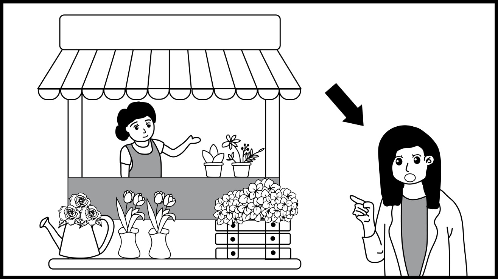
(Pilihan jawaban 1–3 tidak dicetak di lembar soal, melainkan diperdengarkan melalui audio.)
Naskah Audio (聴解スクリプト):
ナレーション：花を買いたいです。何と言いますか。
Narator: Anda ingin membeli bunga. Apa yang Anda katakan?
Pilihan Jawaban Audio (選択肢 1〜3):
Lembar Soal (問題用紙):
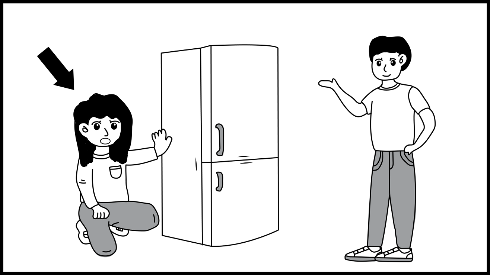
(Pilihan jawaban 1–3 tidak dicetak di lembar soal, melainkan diperdengarkan melalui audio.)
Naskah Audio (聴解スクリプト):
ナレーション：友達に冷蔵庫を運ぶのを手伝ってほしいです。何と言いますか。
Narator: Anda ingin teman membantu memindahkan kulkas. Apa yang Anda katakan?
Pilihan Jawaban Audio (選択肢 1〜3 — 女：Wanita:):
Lembar Soal (問題用紙):
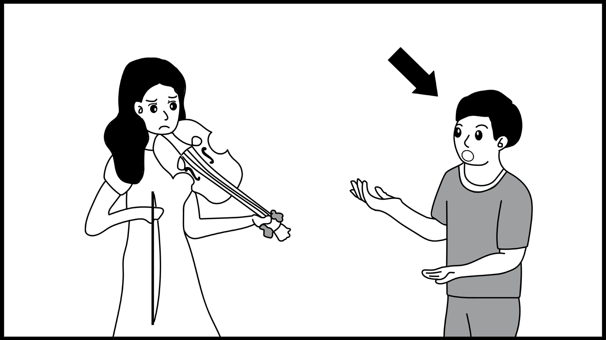
(Pilihan jawaban 1–3 tidak dicetak di lembar soal, melainkan diperdengarkan melalui audio.)
Naskah Audio (聴解スクリプト):
ナレーション：バイオリンがうまく弾けません。娘にアドバイスします。何と言いますか。
Narator: Anak perempuan tidak bisa memainkan biola dengan baik. Anda memberi saran kepadanya. Apa yang Anda katakan?
Pilihan Jawaban Audio (選択肢 1〜3 — 男：Pria:):
Lembar Soal (問題用紙):
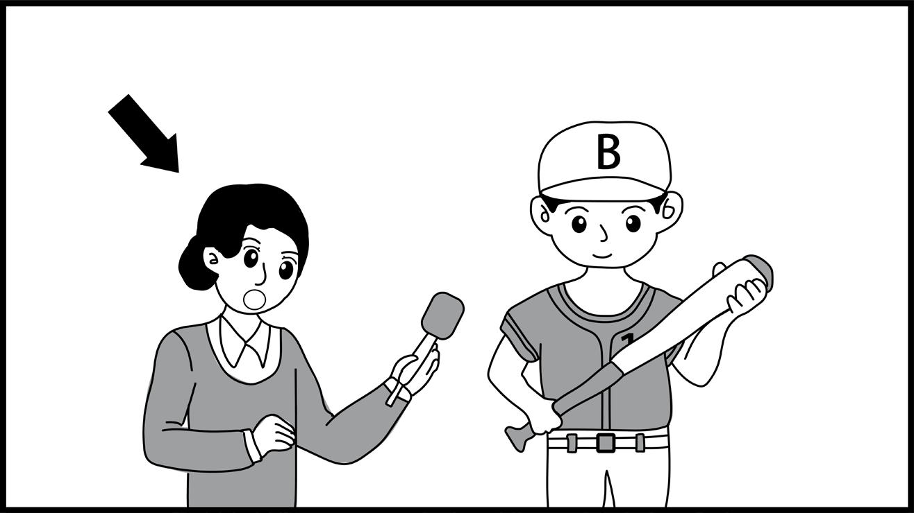
(Pilihan jawaban 1–3 tidak dicetak di lembar soal, melainkan diperdengarkan melalui audio.)
Naskah Audio (聴解スクリプト):
ナレーション：試合後の選手に話しかけます。インタビューできるかまだわかりません。何と言いますか。
Narator: Anda menyapa seorang atlet setelah pertandingan selesai. Anda belum tahu apakah bisa mewawancarainya atau tidak. Apa yang Anda katakan?
Pilihan Jawaban Audio (選択肢 1〜3 — 女：Wanita:):
Lembar Soal (問題用紙):
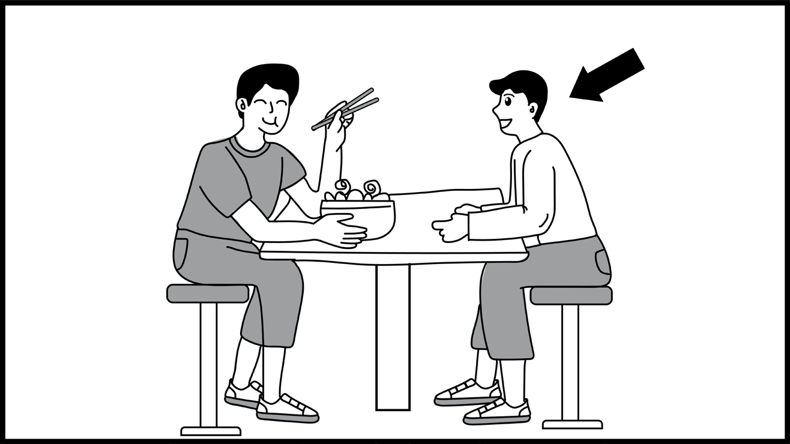
(Pilihan jawaban 1–3 tidak dicetak di lembar soal, melainkan diperdengarkan melalui audio.)
Naskah Audio (聴解スクリプト):
ナレーション：友達が料理をおいしそうに食べています。感想を聞きたいです。何と言いますか。
Narator: Teman Anda sedang makan masakan dengan terlihat sangat lahap. Anda ingin menanyakan kesannya. Apa yang Anda katakan?
Pilihan Jawaban Audio (選択肢 1〜3 — 男：Pria:):
Instruksi Ujian:
問題5では、問題用紙に何もいんさつされていません。まず文を聞いてください。それから、そのへんじを聞いて、1から3の中から、最もよいものを一つえらんでください。
Pada Mondai 5, tidak ada apa pun yang dicetak pada lembar soal (hanya tersedia kolom —メモ— / Catatan). Pertama-tama dengarkanlah sebuah kalimat. Kemudian dengarkanlah balasannya, lalu pilihlah satu jawaban yang paling tepat dari pilihan 1 sampai 3.
Poin Penting (ポイント):
この問題では、解く時間が短いので時間をかけてメモを取らないことが大事です。
選択肢を聞いて簡単に ◯・×・△ などのメモを取りながら聞くのもよいでしょう。
（◯：正解だと思うもの ／ ×：絶対に間違いだと思うもの ／ △：正解になりそうなもの）
Pada soal ini, karena waktu pengerjaannya singkat, penting untuk tidak menghabiskan waktu dengan mencatat panjang lebar. Sebaiknya dengarkan sambil membuat catatan singkat seperti tanda ◯ (yang menurut Anda benar), × (yang pasti salah), dan △ (yang mungkin/berpotensi benar).
Lembar Soal (問題用紙): ーメモー (Tidak ada teks maupun pilihan yang dicetak di lembar soal; kalimat ucapan dan pilihan 1–3 diperdengarkan lewat audio.)
Naskah Audio (聴解スクリプト):
発話文：午前中にこの資料まとめといてって言ったじゃん。
Ucapan: Kan sudah dibilang untuk merangkum dokumen ini sebelum tengah hari!
Pilihan Balasan Audio (選択肢 1〜3):
Lembar Soal (問題用紙): ーメモー (Tidak ada teks maupun pilihan yang dicetak di lembar soal; seluruh ucapan dan pilihan 1–3 diperdengarkan lewat audio.)
Naskah Audio (聴解スクリプト):
女：山田さん、今どこ？もうすぐ着きそう？
Wanita: Yamada-san, sekarang kamu di mana? Kira-kira sebentar lagi sampai?
Pilihan Balasan Audio (選択肢 1〜3 — 男：Pria:):
Lembar Soal (問題用紙): ーメモー (Tidak ada teks maupun pilihan yang dicetak di lembar soal; seluruh ucapan dan pilihan 1–3 diperdengarkan lewat audio.)
Naskah Audio (聴解スクリプト):
女：あ、ダニエルさん、先週調子が悪くて学校を休んだんだって？
Wanita: Eh, Daniel-san, katanya minggu lalu kamu tidak masuk sekolah karena kondisi badan kurang sehat ya?
Pilihan Balasan Audio (選択肢 1〜3 — 男：Pria:):
Lembar Soal (問題用紙): ーメモー (Tidak ada teks maupun pilihan yang dicetak di lembar soal; seluruh ucapan dan pilihan 1–3 diperdengarkan lewat audio.)
Naskah Audio (聴解スクリプト):
男：明日の10時に、山田さんの自宅に伺いたいのですが、よろしいでしょうか。
Pria: Besok pukul 10 saya ingin berkunjung ke kediaman Yamada-san, apakah diperbolehkan?
Pilihan Balasan Audio (選択肢 1〜3 — 女：Wanita:):
Lembar Soal (問題用紙): ーメモー (Tidak ada teks maupun pilihan yang dicetak di lembar soal; seluruh ucapan dan pilihan 1–3 diperdengarkan lewat audio.)
Naskah Audio (聴解スクリプト):
男：ミンさん、無くしてた免許証、結局見つかったの？
Pria: Min-san, SIM yang sempat hilang itu akhirnya ketemu tidak?
Pilihan Balasan Audio (選択肢 1〜3 — 女：Wanita:):
Lembar Soal (問題用紙): ーメモー (Tidak ada teks maupun pilihan yang dicetak di lembar soal; seluruh ucapan dan pilihan 1–3 diperdengarkan lewat audio.)
Naskah Audio (聴解スクリプト):
男：お客様、お預かりする荷物はありますでしょうか。
Pria: Permisi Tuan/Nyonya (pelanggan), apakah ada barang bawaan yang ingin saya titip-simpankan?
Pilihan Balasan Audio (選択肢 1〜3 — 女：Wanita:):
Lembar Soal (問題用紙): ーメモー (Tidak ada teks maupun pilihan yang dicetak di lembar soal; seluruh ucapan dan pilihan 1–3 diperdengarkan lewat audio.)
Naskah Audio (聴解スクリプト):
女：お客様、美術館で写真を撮るのはご遠慮ください。
Wanita: Mohon maaf pelanggan, harap tidak mengambil foto di dalam museum seni.
Pilihan Balasan Audio (選択肢 1〜3 — 男：Pria:):
Lembar Soal (問題用紙): ーメモー (Tidak ada teks maupun pilihan yang dicetak di lembar soal; seluruh ucapan dan pilihan 1–3 diperdengarkan lewat audio.)
Naskah Audio (聴解スクリプト):
女：先生、今お時間よろしいでしょうか。
Wanita: Sensei (Bapak/Ibu Guru), apakah sekarang ada waktu luang?
Pilihan Balasan Audio (選択肢 1〜3 — 男：Pria:):
Lembar Soal (問題用紙): ーメモー (Tidak ada teks maupun pilihan yang dicetak di lembar soal; seluruh ucapan dan pilihan 1–3 diperdengarkan lewat audio.)
Naskah Audio (聴解スクリプト):
女：キムさん、ごあいさつのため、すぐにお目にかかりたいのですが。
Wanita: Kim-san, untuk menyampaikan salam (perkenalan/kunjungan resmi), saya ingin segera bertemu langsung dengan Anda...
Pilihan Balasan Audio (選択肢 1〜3 — 男：Pria:):
Lembar Soal (問題用紙): ーメモー (Tidak ada teks maupun pilihan yang dicetak di lembar soal; seluruh ucapan dan pilihan 1–3 diperdengarkan lewat audio.)
Naskah Audio (聴解スクリプト):
男：子どものころ、プールでおぼれちゃったことがあるんだ。
Pria: Waktu kecil, aku pernah hampir tenggelam di kolam renang lho.
Pilihan Balasan Audio (選択肢 1〜3 — 女：Wanita:):
Bagian ini menyajikan paket lengkap Simulasi Ujian ke-1 (模擬試験 第1回) yang disusun mengikuti format resmi ujian JLPT N3 (total waktu 140 menit: 30 menit + 70 menit + 40 menit). Kerjakan setiap sesi sesuai batas waktunya sebelum memeriksa kunci jawaban, tabel penilaian, dan skrip listening di bagian akhir.
| Bagian Simulasi (模擬試験第1回) | Keterangan Bahasa Indonesia | Waktu | Hal. Lampiran |
|---|---|---|---|
| 言語知識（文字・語彙） | Pengetahuan Bahasa (Huruf & Kosakata) — 35 soal | 30 menit | 3 |
| 言語知識（文法）・読解 | Pengetahuan Bahasa (Tata Bahasa) & Reading — 39 soal | 70 menit | 13 |
| 聴解 | Pemahaman Mendengar (Listening) — 28 soal | 40 menit | 33 |
| 模擬試験第1回 正答表・採点表・聴解スクリプト | Kunci Jawaban, Tabel Penilaian & Skrip Listening | — | 95 |
* 一番後ろのページにマークシートがついています。 — Di halaman paling belakang buku asli terdapat lembar jawaban (mark sheet). Untuk Simulasi Ujian ke-2 (模擬試験 第2回, hal. 49/59/79/106), silakan lihat Lampiran 2.
Soal 1: Pilihlah satu cara baca yang paling tepat untuk kata yang digarisbawahi dari pilihan 1, 2, 3, atau 4.
Soal 2: Pilihlah satu penulisan kanji yang paling tepat untuk kata yang digarisbawahi dari pilihan 1, 2, 3, atau 4.
Soal 3: Pilihlah satu kata yang paling tepat untuk mengisi bagian ( ) dari pilihan 1, 2, 3, atau 4.
Soal 4: Pilihlah satu ungkapan yang artinya paling dekat dengan kata yang digarisbawahi dari pilihan 1, 2, 3, atau 4.
Soal 5: Pilihlah satu kalimat yang menggunakan kata berikut dengan paling tepat dari pilihan 1, 2, 3, atau 4.
Soal 1: Pilihlah satu jawaban yang paling tepat untuk mengisi bagian ( ) pada kalimat berikut dari pilihan 1, 2, 3, atau 4.
Soal 2: Susunlah pilihan 1, 2, 3, dan 4 ke dalam keempat garis bawah secara berurutan, lalu pilihlah satu nomor yang tepat menempati posisi bertanda ★.
Soal 3: Bacalah wacana berikut, lalu dengan mempertimbangkan isi keseluruhan wacana, pilihlah satu jawaban yang paling tepat untuk mengisi bagian [19] sampai [23] dari pilihan 1, 2, 3, atau 4.
下の文章は、留学生が書いた作文です。
日本に留学して感じたこと
エミリー・ムーラー
私は、日本へ留学に来てから一年間、アルバイトをしたことがありませんでした。まだ日本語をうまく話すことができなかったので、働くことは難しいと思い [ 19 ]。
ある日、私がコンビニに入ると、そこで学校の友達が働いていました。その友達とお客さんの会話を聞いていると、友達の日本語が上手になっていることに気が付きました。[ 20 ]、私もアルバイトをしたら会話に自信を持つことができるんじゃないかと思い、友達にそのコンビニでアルバイトを募集しているかを聞こうとしましたが、勇気が出ず聞くことができませんでした。しかし、今アルバイトを始めなければ、これからも友達のように会話することは [ 21 ]。なので、次の日友達にお願いをして、店長に働くことができるか確認してもらうと、すぐに返事をいただき [ 22 ]。
働き始めて半年が経った今では、お客さんや一緒に働いている人たちと楽しくコミュニケーションが取れるようになりました。[ 23 ] 経験から、何でもまずはチャレンジすることが大事だということを学びました。
Karangan di bawah ini ditulis oleh seorang mahasiswa asing.
Selama satu tahun sejak datang belajar ke Jepang, saya belum pernah melakukan kerja paruh waktu (arubaito). Karena saya masih belum dapat berbicara bahasa Jepang dengan lancar, saya berpikir bahwa bekerja itu sulit sehingga [ 19 ].
Suatu hari, ketika saya masuk ke sebuah minimarket (konbini), ternyata teman sekolah saya sedang bekerja di sana. Saat mendengarkan percakapan antara teman tersebut dan para pelanggan, saya menyadari bahwa bahasa Jepang teman saya telah menjadi mahir. [ 20 ], saya berpikir jangan-jangan kalau saya juga bekerja paruh waktu, saya bisa memiliki rasa percaya diri dalam bercakap-cakap. Lalu saya mencoba menanyakan kepada teman saya apakah minimarket itu sedang membuka lowongan kerja paruh waktu, tetapi keberanian saya tidak muncul sehingga saya tidak bisa bertanya. Namun demikian, jika saya tidak mulai bekerja paruh waktu sekarang, ke depannya pun saya [ 21 ] untuk bercakap-cakap seperti teman saya. Oleh karena itu, pada keesokan harinya saya meminta tolong kepada teman saya untuk menanyakan kepada manajer toko apakah saya boleh bekerja di sana; tidak lama kemudian saya memperoleh balasan dan [ 22 ].
Kini, setelah setengah tahun berlalu sejak mulai bekerja, saya sudah dapat berkomunikasi dengan menyenangkan bersama para pelanggan serta rekan-rekan yang bekerja bersama saya. Dari pengalaman [ 23 ], saya belajar bahwa untuk hal apa pun, yang terpenting adalah berani menantang diri mencobanya terlebih dahulu.
Soal 4 (Bacaan Pendek): Bacalah wacana (1) sampai (4) berikut, lalu jawablah pertanyaan di bawahnya. Pilihlah satu jawaban yang paling tepat dari pilihan 1, 2, 3, atau 4.
（1）
これは自動車の運転免許を取るための自動車学校のホームページに載せてあるお知らせである。
自動車学校に通っているみなさん
年末年始の休みについてお知らせします。
12月30日（木）から1月4日（火）まで、当自動車学校は休みとなります。29日（水）の交通ルールの授業は午前中のみ行います。
また、運転技術の試験は12月25日（土）が最終です。試験の予約は3日前まで受け付けます。予約は必ず受付にある受験者用パソコンで行ってください。前日まではキャンセルも可能ですが、忘れずに事務室へ連絡してください。
1月5日からはいつもの営業を開始します。
はやし自動車学校
Ini adalah pengumuman yang dimuat di situs web sekolah mengemudi untuk memperoleh surat izin mengemudi (SIM).
Kepada seluruh siswa yang bersekolah di sekolah mengemudi,
Kami ingin memberitahukan mengenai libur akhir tahun dan awal tahun.
Mulai hari Kamis, 30 Desember hingga Selasa, 4 Januari, sekolah mengemudi kami tutup (libur). Pada hari Rabu, tanggal 29, kelas peraturan lalu lintas hanya dilaksanakan pada pagi hari saja.
Selain itu, ujian keterampilan mengemudi terakhir diadakan pada hari Sabtu, 25 Desember. Pendaftaran (reservasi) ujian diterima paling lambat hingga 3 hari sebelumnya. Pendaftaran wajib dilakukan melalui komputer khusus peserta ujian yang ada di bagian resepsionis. Pembatalan juga dimungkinkan hingga sehari sebelum ujian, namun jangan lupa menghubungi kantor administrasi.
Mulai tanggal 5 Januari, kami akan memulai jam operasional seperti biasa.
Sekolah Mengemudi Hayashi
（2）
これは社長が社員に書いたメールである。
みなさん、暑い中お疲れ様です。
本日から、夏休みの申請の受付を始めます。申請用紙に氏名と希望日を書いて、事務の佐藤さんに渡してください。締め切りは6月30日（水）です。
夏休みは7月15日（木）〜9月15日（水）の間で、一人二週間まで休むことができますが、仕事に問題がないよう、必ずグループのメンバーと相談して、日にちを決めてください。
日本語の森 社長 村上
Ini adalah email yang ditulis oleh direktur utama kepada para karyawannya.
Semuanya, terima kasih atas kerja kerasnya di tengah cuaca yang panas ini.
Mulai hari ini, kami membuka penerimaan pengajuan cuti musim panas. Tulislah nama lengkap dan tanggal yang diinginkan pada formulir pengajuan, lalu serahkan kepada Sdr. Satō di bagian administrasi. Batas waktunya adalah Rabu, 30 Juni.
Cuti musim panas dapat diambil di antara Kamis, 15 Juli hingga Rabu, 15 September dengan jatah maksimal dua minggu per orang; namun agar tidak mengganggu pekerjaan, pastikan Anda berdiskusi dengan anggota tim sebelum menentukan tanggalnya.
Nihongo no Mori — Direktur Utama Murakami
（3）
ジーンズというズボンは、今から約150年前のアメリカで、働く人のために作られたものだ。当時は、多くの人が「金」を手に入れるために山で働いていた。しかし、仕事中に服が木の枝に引っ張られて破れたり、石をふんだりして、服がすぐに穴だらけになっていた。
それを見た服屋は、もっと厚くて丈夫な服を作ろうと考えた。それは簡単に破れず、長時間の仕事でも履くことができる服だ。こうして作られたジーンズの良さはうわさで広まり、すぐに人気になったそうだ。
Celana yang disebut jins dibuat untuk para pekerja di Amerika sekitar 150 tahun yang lalu. Pada masa itu, banyak orang bekerja di pegunungan untuk mencari emas. Akan tetapi, selama bekerja, pakaian mereka sering tersangkut dahan pohon lalu sobek, atau karena menginjak batu-batuan, pakaian mereka cepat sekali menjadi penuh lubang.
Melihat hal itu, seorang penjahit/penjual pakaian berpikir untuk membuat pakaian yang lebih tebal dan kuat. Itu adalah pakaian yang tidak mudah robek dan tetap dapat dikenakan untuk bekerja dalam waktu lama. Keunggulan celana jins yang dibuat demikian menyebar dari mulut ke mulut, dan kabarnya langsung menjadi populer.
（4）
勉強するときに、教科書を声に出して読む人がいる。目で見るだけのほうが簡単なのに、何のためにそうするのだろうか。
そう思っていたが、昨日先生が「覚えたいときは、声を出して読む方がいい。目で見るだけでは頭が働かず、覚える力が弱くなってしまうからだ。しかし、声に出して読んだとしても、文章の意味を考えながら読まないと目で見ているのと同じになってしまう。」と教えてくれた。
それを聞いて私は、小さいときに声に出して読んだ絵本の内容を今でもずっと覚えていることに気がついた。
Saat belajar, ada orang yang membaca buku pelajaran dengan bersuara (nyaring). Padahal membaca dalam hati hanya dengan melihat jauh lebih mudah, untuk apa mereka melakukan hal itu?
Saya sempat berpikir seperti itu, tetapi kemarin guru memberi tahu saya: "Ketika ingin menghafal, lebih baik membaca sambil mengeluarkan suara. Sebab jika hanya melihat dengan mata, otak kurang bekerja sehingga daya ingat menjadi lemah. Namun, meskipun sudah membaca dengan bersuara, jika tidak dibaca sambil memikirkan arti kalimatnya, hasilnya akan sama saja dengan hanya melihat pakai mata."
Mendengar hal tersebut, saya pun tersadar bahwa isi buku cerita bergambar yang saya baca dengan suara nyaring ketika kecil masih terus saya ingat hingga sekarang.
Soal 5 (Bacaan Sedang): Bacalah wacana (1) dan (2) berikut, lalu jawablah pertanyaan di bawahnya. Pilihlah satu jawaban yang paling tepat dari pilihan 1, 2, 3, atau 4.
（1）
昨日スーパーに行こうとしたとき、妹から、友達と食べるお菓子を買ってきてほしいと頼まれました。
その友達は卵を食べるとアレルギーが出てしまうので、卵が使われていない、200円くらいのクッキーでチョコが入っているものがいいそうです。商品の名前は忘れてしまったようなので、特徴をメモして出かけました。
しかしスーパーでお菓子を探している途中、私は困ってしまいました。チョコの入っているものはあっても、卵の入っていないものがどれなのかがわからなかったのです。結局、店員さんに声をかけて、一緒に探してもらいました。
店員さんは、箱の裏側に書いてある表を見ながら探してくれましたが、見つけることができませんでした。なのでクッキーの代わりに二人が好きなチョコレートを買って帰ることにしました。今回の買い物で、食品に使われている材料の見方を知ったので、今度スーパーに行ったときは、そのような商品があるかもう一度見てみようと思います。
Kemarin ketika saya hendak pergi ke supermarket, adik perempuan saya meminta tolong dibelikan camilan untuk dimakan bersama temannya.
Karena teman tersebut akan mengalami alergi jika memakan telur, katanya sebaiknya kue kering (kukis) seharga sekitar 200 yen yang tidak menggunakan telur dan berisi cokelat. Karena adik saya tampaknya lupa nama produknya, saya mencatat ciri-cirinya lalu berangkat.
Akan tetapi, di tengah perjalanan mencari camilan di supermarket, saya menjadi kebingungan (kesulitan). Meskipun ada yang berisi cokelat, saya tidak tahu mana yang tidak mengandung telur. Akhirnya, saya menyapa pegawai toko dan meminta tolong untuk mencarikannya bersama.
Pegawai toko mencarikannya sambil melihat tabel komposisi yang tertulis di bagian belakang kotak, namun kami tidak berhasil menemukannya. Oleh karena itu, sebagai pengganti kukis, saya memutuskan membeli cokelat yang mereka berdua sukai lalu pulang. Melalui pengalaman belanja kali ini, saya jadi mengetahui cara melihat bahan yang digunakan dalam makanan, sehingga lain kali pergi ke supermarket saya berniat melihat sekali lagi apakah ada produk seperti itu.
（2）
最近、長い時間一人で家にいる子どもの増加が問題になっている。祖父母とは別で暮らす家庭が増えたことや、両親がどちらも遅くまで仕事をしている家庭が多いことが原因だ。
それを解決するために、A市では週に3回、「みんなの食堂」を開いている。A市に住む吉田さんが、市民館のキッチンを借りて、友人と一緒に始めた食堂だ。だれでも利用することができて、高校生までの子どもは無料、大人は500円のお金を払うことになっている。
みんなの食堂が始まるのは、平日の夕方だ。子ども達だけではなく、近所に住む大学生や、仕事帰りの会社員なども集まり、一緒に夕食を食べている。そのほかにも、子どもたちの学校の宿題を手伝ったり、近くのグラウンドでサッカーをしたりもできる。
みんなの食堂を始めた吉田さんは、「一人で過ごす時間が長いと、だれでもさびしくなる。ご飯を食べて帰るだけでもいいから、もっとたくさんの人にみんなの食堂に来てほしい。そして、にぎやかで楽しい時間を過ごしてほしい。」と話した。
Akhir-akhir ini, meningkatnya jumlah anak-anak yang berada sendirian di rumah dalam waktu lama sedang menjadi masalah. Penyebabnya adalah bertambahnya keluarga yang tinggal terpisah dari kakek-nenek serta banyaknya keluarga di mana kedua orang tuanya sama-sama bekerja hingga larut malam.
Untuk mengatasi hal itu, di Kota A dibuka "Kantin Bersama (Minna no Shokudō)" sebanyak 3 kali seminggu. Ini adalah kantin yang dimulai oleh Sdr. Yoshida, seorang warga Kota A, dengan menyewa dapur balai warga bersama teman-temannya. Siapa pun dapat menggunakannya; anak-anak hingga siswa SMA gratis, sedangkan orang dewasa dikenakan biaya 500 yen.
Kantin Bersama mulai buka pada sore hari kerja. Tidak hanya anak-anak, mahasiswa yang tinggal di lingkungan sekitar maupun pegawai kantoran yang baru pulang kerja juga berkumpul dan menyantap makan malam bersama. Selain itu, anak-anak juga dapat dibantu mengerjakan PR sekolah atau bermain sepak bola di lapangan terdekat.
Sdr. Yoshida yang memprakarsai Kantin Bersama berkata, "Jika waktu yang dihabiskan sendirian itu lama, siapa pun akan merasa kesepian. Datang hanya untuk makan lalu pulang pun tidak apa-apa, jadi saya berharap semakin banyak orang datang ke Kantin Bersama. Lalu, saya ingin mereka menghabiskan waktu yang ramai dan menyenangkan."
Soal 6 (Bacaan Panjang): Bacalah wacana berikut, lalu jawablah pertanyaan di bawahnya. Pilihlah satu jawaban yang paling tepat dari pilihan 1, 2, 3, atau 4.
家から学校までの道に、いつもたくさんの人が並んでいるケーキ屋がある。そのケーキ屋は、ケーキの種類がたくさんあり、その店から出てくる人はみんな笑顔で幸せそうだった。私は人を笑顔にするケーキ屋にあこがれていた。
私はケーキを作る技術を身につけるために、休みの日は家で ①練習をするようになった。人を幸せにするケーキを作るにはいろいろな工夫が必要だ。まずはじめは基本のケーキをたくさん作ることにした。クリームの塗り方や焼き方からはじめ、その次に果物の切り方などの技術を勉強した。そして、私が練習のために作ったケーキは、家族に食べてもらった。甘いものが好きな父と妹で協力してくれて、毎回おいしそうに笑顔で食べてくれていた。私は、おいしいと笑顔で食べてくれるのがうれしくて、毎日のようにケーキを焼くようになった。
ある週末、新しく買った本のレシピを見ながらケーキを作ってみた。とてもきれいにできて、うれしかった。しかし、②家族はあまりうれしそうじゃない。どうしたんだろうと思って話を聞くと、おいしいけど、定期的に食べると嫌になってしまうと言った。少しの間、見たくもないほどだ。確実に上達しているし、アドバイスできることももう少ないと言われた。
たしかに、どんなに好きなものでも、与えられ続けたら嫌になってしまうだろう。将来は、おいしいだけでなく、何度も食べたいと思えるケーキを作りたいと思っている。
Di jalan dari rumah menuju ke sekolah, terdapat sebuah toko kue yang selalu dipadati banyak orang mengantre. Toko kue itu memiliki beragam jenis kue, dan setiap orang yang keluar dari toko tersebut semuanya tersenyum serta tampak bahagia. Saya pun mengagumi toko kue yang membuat orang-orang tersenyum itu.
Demi menguasai keterampilan membuat kue, pada hari libur saya di rumah ①mulai berlatih. Untuk membuat kue yang membahagiakan orang lain diperlukan berbagai macam siasat/kreativitas. Pertama-tama, saya memutuskan untuk banyak membuat kue dasar. Dimulai dari cara mengoleskan krim dan cara memanggang, lalu berikutnya saya mempelajari teknik seperti cara memotong buah-buahan. Kemudian, kue yang saya buat untuk latihan itu saya minta keluarga mencicipinya. Ayah dan adik perempuan saya yang menyukai makanan manis bekerja sama membantu saya, dan setiap kali mereka memakannya dengan lahap sambil tersenyum. Karena merasa senang mereka memakannya dengan senyuman sambil berkata enak, saya pun menjadi hampir setiap hari memanggang kue.
Pada suatu akhir pekan, saya mencoba membuat kue sambil melihat resep dari buku yang baru dibeli. Hasilnya jadi sangat cantik, dan saya senang sekali. Akan tetapi, ②keluarga saya tidak tampak begitu senang. Karena penasaran ada apa, saya pun bertanya, dan mereka berkata bahwa walaupun rasanya enak, kalau dimakan secara rutin terus-menerus lama-lama jadi muak/bosan. Sampai-sampai untuk sementara waktu mereka tidak ingin melihatnya lagi. Mereka mengatakan kemampuan saya jelas sudah berkembang dan hal yang bisa diberi masukan pun kini sudah sedikit.
Memang benar, seberapa pun sukanya pada sesuatu, kalau terus-terusan disuguhkan pasti akan menjadi bosan. Di masa depan, saya bercita-cita membuat kue yang bukan hanya enak, melainkan juga membuat orang ingin memakannya berkali-kali lagi.
Soal 7 (Pencarian Informasi): Materi di bawah ini adalah poster kebun buah. Bacalah poster tersebut, lalu jawablah pertanyaan di bawahnya dengan memilih 1, 2, 3, atau 4.
森福市 みんなの果物園 くだもの祭り
2021年11月13日・14日
11月はくだもの祭り！季節の果物を楽しみませんか？
| イベント | 参加できる人 | 時間 | 参加費 |
|---|---|---|---|
| みかん食べ放題 （食べ放題＆おみやげ） |
どなたでも | 08：00～12：00 | 1000円/3㎏ |
| みんなのくだもの市場 （いろいろな季節の果物を特別な価格で販売♪） |
どなたでも | 12：30～15：00 | なし |
| 親子ジャムづくりチャレンジ （季節の果物を使いましょう♪） |
おとな 1名 こども 1名 （小学生以下） |
11：00～12：00 | 500円/2人 |
| 親子ケーキづくりチャレンジ （季節の果物を使いましょう♪） |
おとな 1名 こども 1名 （中学生以上） |
12：30～14：00 | 1000円/2人 |
※上記は11月13日（土）・14日（日）くだもの祭りだけの特別価格です。
◇入場料： 無料
◇申し込み方法と参加費の支払い
①インターネット <期間> 10月30日〜11月10日まで
下のホームページからお申し込みください。
料金はクレジットカードか銀行振り込みでお支払いください。
②電話 <期間> 10月30日〜11月8日まで
森福市 みんなの果物園 くだもの祭り係までお電話ください。
料金は銀行振り込みでお支払いください。
③当日受付
当日8時00分まで 森福市 果物園入り口で受け付けております。
料金は当日、入り口の受付で、現金でお支払いください。
※『ジャム・ケーキチャレンジ』は当日のお申し込みはできません。
▶グループ（3人以上）で参加する場合、当日受付や電話での申し込みはできません。人数分の参加費をまとめてお支払いください。
▶質問は、電話、またはメールでお願いいたします。
◇みんなの果物園 くだもの祭り係
☎ 090 - ✗✗✗✗ - ✗✗✗✗（月〜土：10時〜15時）
info@morifukumf.org
http://www.morifuku-minnafruit.jp
◇森福市 みんなの果物園 森福市森福319-6（園の地図はホームページにあります。）
Festival Buah Kebun Buah Bersama Kota Morifuku — 13 & 14 November 2021
November adalah Festival Buah! Yuk nikmati buah-buahan musiman!
| Acara | Peserta yang Dapat Ikut | Waktu | Biaya Partisipasi |
|---|---|---|---|
| Makan Jeruk Sepuasnya (Makan sepuasnya & oleh-oleh) |
Siapa saja | 08.00 – 12.00 | 1.000 yen / 3 kg |
| Pasar Buah Bersama (Menjual aneka buah musiman dengan harga spesial ♪) |
Siapa saja | 12.30 – 15.00 | Gratis (tidak ada) |
| Tantangan Membuat Selai Orang Tua & Anak (Mari menggunakan buah musiman ♪) |
1 orang dewasa + 1 anak (SD ke bawah) |
11.00 – 12.00 | 500 yen / 2 orang |
| Tantangan Membuat Kue Orang Tua & Anak (Mari menggunakan buah musiman ♪) |
1 orang dewasa + 1 anak (SMP ke atas) |
12.30 – 14.00 | 1.000 yen / 2 orang |
※ Harga di atas adalah harga spesial khusus Festival Buah pada Sabtu, 13 November dan Minggu, 14 November.
◇ Tiket Masuk: Gratis
◇ Cara Pendaftaran & Pembayaran Biaya Partisipasi:
※ Untuk Tantangan Selai & Kue tidak dapat mendaftar pada hari pelaksanaan.
▶ Jika berpartisipasi dalam grup (3 orang atau lebih), tidak dapat mendaftar di tempat pada hari-H maupun melalui telepon. Harap membayar biaya partisipasi seluruh anggota sekaligus.
▶ Untuk pertanyaan, silakan melalui telepon atau email.
◇ Panitia Festival Buah Kebun Buah Bersama: ☎ 090-XXXX-XXXX (Senin–Sabtu: 10.00–15.00) | info@morifukumf.org | http://www.morifuku-minnafruit.jp
◇ Alamat: Morifuku 319-6, Kota Morifuku (Peta kebun tersedia di situs web).
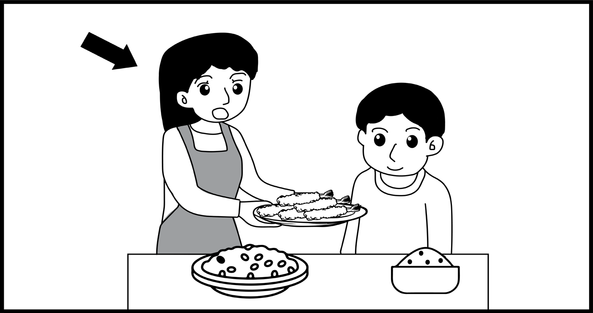
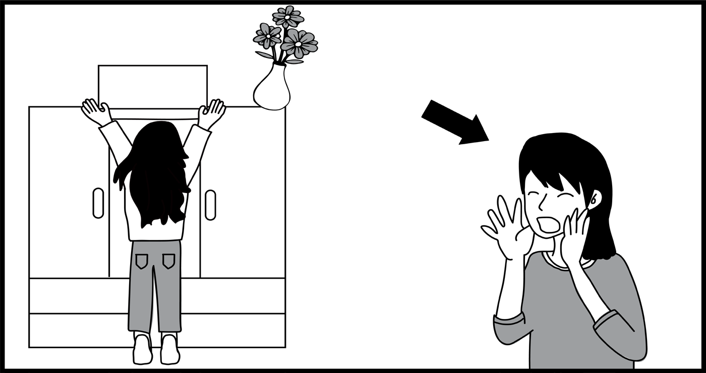
| 問題1 (1–8) | 1: ② | 2: ③ | 3: ① | 4: ④ | 5: ③ | 6: ② | 7: ① | 8: ④ |
|---|---|
| 問題2 (9–14) | 9: ③ | 10: ② | 11: ④ | 12: ① | 13: ③ | 14: ③ |
| 問題3 (15–25) | 15: ① | 16: ③ | 17: ② | 18: ④ | 19: ② | 20: ④ | 21: ① | 22: ④ | 23: ③ | 24: ② | 25: ④ |
| 問題4 (26–30) | 26: ④ | 27: ③ | 28: ① | 29: ② | 30: ④ |
| 問題5 (31–35) | 31: ② | 32: ① | 33: ③ | 34: ② | 35: ④ |
| 問題1 (1–13) | 1: ③ | 2: ① | 3: ② | 4: ② | 5: ④ | 6: ③ | 7: ④ | 8: ① | 9: ② | 10: ④ | 11: ① | 12: ③ | 13: ③ |
|---|---|
| 問題2 ★ (14–18) | 14: ④ (1-3-4-2) | 15: ① (2-1-3-4) | 16: ④ (3-2-4-1) | 17: ④ (1-3-2-4) | 18: ① (2-4-1-3) |
| 問題3 (19–23) | 19: ④ | 20: ① | 21: ② | 22: ③ | 23: ④ |
| 問題4 (24–27) | 24: ② | 25: ② | 26: ④ | 27: ③ |
|---|---|
| 問題5 (28–33) | 28: ④ | 29: ③ | 30: ③ | 31: ③ | 32: ④ | 33: ① |
| 問題6 (34–37) | 34: ④ | 35: ② | 36: ① | 37: ③ |
| 問題7 (38–39) | 38: ① | 39: ① |
| 問題1 (1–6) | 1: ② | 2: ③ | 3: ② | 4: ④ | 5: ① | 6: ④ |
|---|---|
| 問題2 (1–6) | 1: ② | 2: ④ | 3: ② | 4: ③ | 5: ③ | 6: ③ |
| 問題3 (1–3) | 1: ① | 2: ② | 3: ② |
| 問題4 (1–4) | 1: ③ | 2: ① | 3: ② | 4: ① |
| 問題5 (1–9) | 1: ① | 2: ① | 3: ② | 4: ② | 5: ③ | 6: ② | 7: ② | 8: ② | 9: ③ |
実際のテストは相対評価のため、この採点表の点数とは異なる可能性があります。
Karena ujian JLPT sesungguhnya menggunakan penilaian relatif (penyetaraan skor/IRT), skor Anda bisa saja berbeda dengan perhitungan pada tabel penilaian ini.
| Bagian | Bagian Soal (問題) | Bobot (配点) | Maks. (満点) | Jumlah Benar (正解の数) | Skor (点数) |
|---|---|---|---|---|---|
| 文字語彙 (Huruf & Kosakata) | 問題1 | 1点 × 8問 | 8 | ||
| 問題2 | 1点 × 6問 | 6 | |||
| 問題3 | 1点 × 11問 | 11 | |||
| 問題4 | 1点 × 5問 | 5 | |||
| 問題5 | 1点 × 5問 | 5 | |||
| 合計 (Total) | 35 | ||||
予想点数の計算方法 (Rumus Perkiraan Skor Sesi 1 — 言語知識(文字語彙・文法)*):
[ ] poin ÷ 35 × 60 = [ ] poin
| Bagian | Bagian Soal (問題) | Bobot (配点) | Maks. (満点) | Jumlah Benar (正解の数) | Skor (点数) |
|---|---|---|---|---|---|
| 文法 (Tata Bahasa) | 問題1 | 1点 × 13問 | 13 | ||
| 問題2 | 1点 × 5問 | 5 | |||
| 問題3 | 1点 × 5問 | 5 | |||
| 読解 (Reading) | 問題4 | 1点 × 4問 | 4 | ||
| 問題5 | 1点 × 6問 | 6 | |||
| 問題6 | 1点 × 4問 | 4 | |||
| 問題7 | 1点 × 2問 | 2 | |||
| 合計 (Total) | 39 | ||||
予想点数の計算方法 (Rumus Perkiraan Skor Sesi 2 — 文法・読解*):
[ ] poin ÷ 39 × 60 = [ ] poin
| Bagian | Bagian Soal (問題) | Bobot (配点) | Maks. (満点) | Jumlah Benar (正解の数) | Skor (点数) |
|---|---|---|---|---|---|
| 聴解 (Listening) | 問題1 | 1点 × 6問 | 6 | ||
| 問題2 | 1点 × 6問 | 6 | |||
| 問題3 | 1点 × 3問 | 3 | |||
| 問題4 | 1点 × 4問 | 4 | |||
| 問題5 | 1点 × 9問 | 9 | |||
| 合計 (Total) | 28 | ||||
予想点数の計算方法 (Rumus Perkiraan Skor Sesi 3 — 聴解):
[ ] poin ÷ 28 × 60 = [ ] poin
* Catatan: Pada cetakan asli buku (hal. 96), label rumus pertama tertulis 言語知識(文字語彙・文法) (35 soal) dan rumus kedua tertulis 読解 (39 soal = 23 soal 文法 + 16 soal 読解). Dalam sistem JLPT N3, batas kelulusan minimal adalah 19 poin untuk tiap sesi (dari 60) dan 95 poin untuk skor total (dari 180).
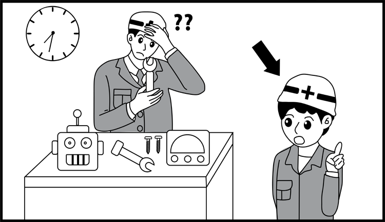
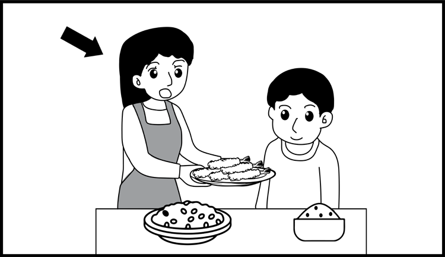
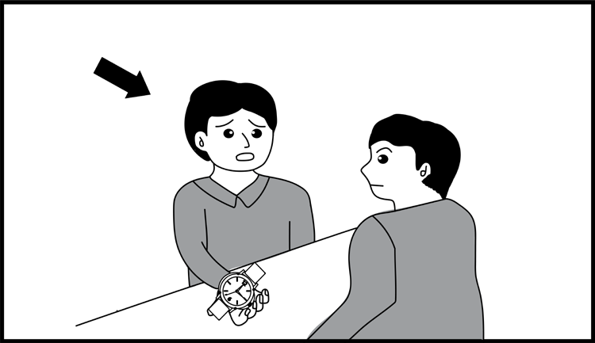
Tentang Simulasi Ujian ke-2: Paket simulasi ini disusun menyerupai ujian JLPT N3 yang sesungguhnya, lengkap dengan lembar sampul dan petunjuk resmi pada setiap sesi, soal Pengetahuan Bahasa (Huruf & Kosakata), Pengetahuan Bahasa (Tata Bahasa) & Pemahaman Bacaan, Pemahaman Mendengar beserta ilustrasinya, Kunci Jawaban (正答表), Tabel Penilaian Skor (採点表), serta Skrip Listening Lengkap (聴解スクリプト).
Berikut adalah aturan resmi yang tercantum pada lembar sampul ketiga sesi ujian JLPT N3 (hal. asli 49, 59, dan 79):
受験票).文字・語彙): seluruhnya 7 halaman (ぜんぶで 7ページ あります).文法・読解): seluruhnya 19 halaman (全部で 19ページ あります).聴解): seluruhnya 14 halaman (全部で 14ページ あります).かいとうばんごう). Hitamkan/tandai jawaban Anda pada baris bernomor sama di lembar jawaban (かいとうようし).聴解): この問題用紙にメモをとってもかまいません。 (Anda diperbolehkan menulis catatan/memo pada buklet soal ini.)Language Knowledge (Vocabulary) — N3 · Waktu: 30 menit (30ぷん) · 7 halaman (もんだいようし)
Kolom Identitas Peserta: じゅけんばんごう (Nomor Ujian / Examinee Registration Number) & なまえ (Nama / Name)
Soal 1: Pilihlah satu jawaban yang paling tepat (1, 2, 3, atau 4) sebagai cara baca kata yang bergaris bawah.
1 ごみを回収します。
Terjemahan: Mengumpulkan / mengangkut sampah.
2 彼が毎日努力していることをみんな知っています。
Terjemahan: Semua orang tahu bahwa dia berusaha keras setiap hari.
3 様々な店に行ったが、結局欲しい物は買えなかった。
Terjemahan: Saya sudah pergi ke berbagai toko, tetapi pada akhirnya tidak bisa membeli barang yang saya inginkan.
4 冬の海岸は寒いので、木を燃やして温まった。
Terjemahan: Karena pantai di musim dingin terasa dingin, kami membakar kayu untuk menghangatkan badan.
5 国の機関に問い合わせる。
Terjemahan: Menghubungi / menanyakan kepada lembaga negara.
6 彼は悪い人なのではないかと疑っています。
Terjemahan: Saya mencurigai jangan-jangan dia adalah orang jahat.
7 血液の検査をすることになりました。
Terjemahan: Diputuskan bahwa saya akan menjalani pemeriksaan darah.
8 わたしは新しい家を建築する予定です。
Terjemahan: Saya berencana membangun rumah baru.
Soal 2: Pilihlah satu penulisan kanji yang paling tepat (1, 2, 3, atau 4) untuk kata yang bergaris bawah.
9 サッカーボールは、ごかくけいが12個集まってできている。
Terjemahan: Bola sepak terbuat dari gabungan 12 buah segi lima.
10 ごはんをのこしてはいけません。
Terjemahan: Tidak boleh menyisakan nasi/makanan.
11 彼は、日本語にかんしんを持っている。
Terjemahan: Dia memiliki minat terhadap bahasa Jepang.
12 スポーツクラブをたいかいすることにした。
Terjemahan: Saya memutuskan untuk keluar (mengundurkan diri) dari klub olahraga.
13 わたしは、小さいときからまずしい生活をしてきた。
Terjemahan: Sejak kecil saya menjalani kehidupan yang serba kekurangan (miskin).
14 明日は、大事な会議にしゅっせきする予定です。
Terjemahan: Besok saya berencana menghadiri rapat penting.
Soal 3: Pilihlah satu kata yang paling tepat (1, 2, 3, atau 4) untuk diisikan ke dalam tanda kurung ( ).
15 今回の旅の（ ）は、おいしいものをたくさん食べることだ。
Terjemahan: ( Tujuan ) perjalanan kali ini adalah makan banyak makanan yang enak.
16 ベトナムでは、バイクに乗って移動するのが（ ）だ。
Terjemahan: Di Vietnam, bepergian dengan mengendarai sepeda motor adalah hal yang ( umum/lazim ).
17 この文章を読んでから、5つの（ ）に答えてください。
Terjemahan: Setelah membaca bacaan ini, silakan jawab 5 ( kuis/pertanyaan ) berikut.
18 運動をする前に、（ ）して体を温めよう。
Terjemahan: Sebelum berolahraga, mari ( bersenam/pemanasan ) untuk menghangatkan tubuh.
19 先生と一緒に英語の（ ）の練習をする。
Terjemahan: Berlatih ( pelafalan ) bahasa Inggris bersama guru.
20 迷子にならないように、しっかり手を（ ）いてね。
Terjemahan: Supaya tidak tersesat, terus ( genggamlah ) tangan erat-erat ya.
21 将来は、（ ）が豊かな場所に住みたい。
Terjemahan: Di masa depan, saya ingin tinggal di tempat yang kaya akan ( alam ).
22 今日の食事会は席を（ ）していませんので、好きな場所にお座りください。
Terjemahan: Pada acara makan bersama hari ini tempat duduk tidak ( ditentukan/ditetapkan ), jadi silakan duduk di tempat yang Anda sukai.
23 妹を迎えに行くことを（ ）忘れて、そのまま帰ってきてしまった。
Terjemahan: Saya ( benar-benar ) lupa menjemput adik perempuan saya, lalu langsung pulang begitu saja.
24 果物は傷つきやすいので、丁寧に（ ）ください。
Terjemahan: Karena buah-buahan mudah lecet/memar, tolong ( tangani/perlakukan ) dengan hati-hati.
25 庭の花や野菜にたっぷり水を（ ）あげよう。
Terjemahan: Mari ( siramkan ) banyak air untuk bunga dan sayuran di halaman.
Soal 4: Pilihlah satu ungkapan (1, 2, 3, atau 4) yang maknanya paling dekat dengan kata yang bergaris bawah.
26 車がじゅうたいしている。
Terjemahan: Mobil-mobil sedang macet.
27 新しく建てる家をイメージする。
Terjemahan: Membayangkan rumah yang akan dibangun baru.
28 今の仕事は退屈だ。
Terjemahan: Pekerjaan sekarang membosankan.
29 待ち合わせの時間にぴったりに着いた。
Terjemahan: Tiba tepat sekali pada waktu janjian.
30 体の調子がずいぶんよくなった。
Terjemahan: Kondisi tubuh saya sudah membaik cukup pesat / sangat jauh.
Soal 5: Pilihlah satu kalimat (1, 2, 3, atau 4) yang menunjukkan penggunaan paling tepat untuk kata berikut.
31 姿勢 (postur / posisi tubuh; sikap)
32 混ぜる (mencampur)
33 得意 (mahir / pandai / unggul dalam suatu hal)
34 我慢 (menahan diri / bersabar)
35 付き合う (bergaul / berteman / berpacaran / menemani)
Language Knowledge (Grammar)・Reading — N3 · Waktu: 70 menit (70分) · 19 halaman (問題用紙)
Kolom Identitas Peserta: 受験番号 (Nomor Ujian / Examinee Registration Number) & 名前 (Nama / Name)
Soal 1: Pilihlah satu jawaban yang paling tepat (1, 2, 3, atau 4) untuk diisikan ke dalam tanda kurung ( ).
1 寝坊した夫は、ご飯（ ）食べずにあわてて家を出て行った。
Terjemahan: Suami saya yang bangun kesiangan pergi meninggalkan rumah dengan tergesa-gesa tanpa makan nasi ( pun ).
2 この島は、野菜（ ）魚もおいしいことで有名です。
Terjemahan: Pulau ini terkenal karena ( tidak hanya ) sayurannya, ikannya pun enak.
3 久しぶりにふるさとに帰ったが、（ ）母の料理はおいしかった。
Terjemahan: Setelah sekian lama saya pulang ke kampung halaman, dan ( seperti biasa ) masakan ibu tetap lezat.
4 甘いものが好きな（ ）、妹はチョコレートなどのお菓子を全く食べない。
Terjemahan: ( Berkebalikan dengan saya ) yang menyukai makanan manis, adik perempuan saya sama sekali tidak makan camilan seperti cokelat.
5 一年（ ）発表される彼の小説は、どれもすぐ売り切れになる。
Terjemahan: Novel-novelnya yang diterbitkan ( setiap ) satu tahun sekali, semuanya langsung terjual habis.
6 （学校で）
生徒「先生、わたし行きたい高校に合格できるのか不安なんです。」
先生「大丈夫。松井さんはこんなに（ ）、きっと合格できるよ。」
Terjemahan: (Di sekolah)
Murid: "Pak/Bu Guru, saya cemas apakah bisa lulus masuk SMA yang saya inginkan."
Guru: "Tenang saja. ( Karena Matsui sudah berusaha ) sekeras ini, kamu pasti bisa lulus kok."
7 会社から家に帰ると、玄関の鍵が（ ）だった。寝坊して急いで出てしまったからだろう。
Terjemahan: Ketika pulang ke rumah dari kantor, pintu depan ternyata ( dibiarkan tidak terkunci/terbuka ). Mungkin karena bangun kesiangan dan keluar dengan terburu-buru.
8 （会社で）
部長「来年発売する新商品の資料は完成したのか。」
課長「すみません。今、作成（ ）。」
Terjemahan: (Di perusahaan)
Kepala Bagian: "Apakah dokumen produk baru yang akan dirilis tahun depan sudah selesai?"
Kepala Seksi: "Maaf. Sekarang ( sedang saya ) susun/buat."
9 久しぶりに両親に会えることも楽しみだが、飼っている犬（ ）会うのが楽しみだ。
Terjemahan: Bisa bertemu orang tua setelah sekian lama memang sangat saya nantikan, tetapi bertemu ( dengan ) anjing peliharaan kami ( juga ) sangat saya nantikan.
10 字が上手に書けるようになるには、毎日書く練習を（ ）。
Terjemahan: Untuk bisa menulis huruf dengan bagus, ( tidak ada cara lain selain ) berlatih menulis setiap hari.
11 今の会社に（ ）10年たつが、新入社員を見ると10年前の自分を思い出す。
Terjemahan: Sudah 10 tahun berlalu ( sejak masuk ) di perusahaan saat ini, dan ketika melihat karyawan baru saya teringat diri saya 10 tahun yang lalu.
12 彼の携帯を見てはいけないとわかっていても、つい（ ）。
Terjemahan: Meskipun tahu tidak boleh melihat ponselnya, tanpa sadar saya malah ( melihatnya ).
13 生徒「先生、行きたい大学に合格するにはどうすればいいですか。」
先生「合格したいなら、今日から一生懸命（ ）。」
Terjemahan: Murid: "Pak/Bu Guru, bagaimana caranya supaya bisa lulus masuk universitas yang saya inginkan?"
Guru: "Kalau ingin lulus, mulai hari ini kamu ( harus belajar ) dengan sungguh-sungguh, ya."
Soal 2: Susunlah empat potongan kata/frasa menjadi kalimat yang benar, lalu pilihlah satu pilihan (1, 2, 3, atau 4) yang tepat berada pada posisi bertanda bintang ★ .
（問題例）
私の ★ なることです。
1 に 2 夢 3 有名な歌手 4 は
（解答のしかた）
1. 正しい答えはこうなります。
私の 夢 （2） は （4） 有名な歌手★ （3） に （1）なることです。
2. ★ に入る番号を解答用紙にマークします。
（解答用紙） 例 ① ② ③ ❹ (Catatan buku asli: urutan contoh 2-4-3-1 menempatkan ★ di posisi ke-3 yaitu 3; tanda ❹ pada cetakan asli adalah ilustrasi cara menghitamkan bulatan.)
Terjemahan Contoh: Impian saya adalah menjadi penyanyi terkenal.
14 試合が終わり ★ をインタビューする。
Terjemahan kalimat utuh: Segera setelah pertandingan berakhir, kami akan mewawancarai atlet yang menjadi juara mengenai perasaannya saat ini.
15 日本では ★ 始める。
Terjemahan kalimat utuh: Di Jepang, bersamaan dengan berakhirnya musim dingin, bunga sakura mulai bermekaran.
16 サッカークラブの ★ 参加できていない。
Terjemahan kalimat utuh: Sejak mengalami cedera kaki saat latihan klub sepak bola, saya belum bisa berpartisipasi dalam pertandingan.
17 竹田「洋服がすごく汚れているね。どうしたの？」
パク「雨が降っているから、土の ★ になっちゃったんだ。」
Terjemahan dialog utuh:
Takeda: "Pakaianmu kotor sekali ya. Ada apa?"
Park: "Karena sedang hujan, aku terpeleset dan jatuh di atas tanah, jadi pakaianku penuh lumpur semua."
18 （家で）
母「夜ご飯できたけど食べる？」
娘「さっき ★ もう少し後で食べるね。」
Terjemahan dialog utuh:
(Di rumah) Ibu: "Makan malam sudah siap, mau makan?"
Anak perempuan: "Karena barusan saja makan camilan, makan malamnya nanti agak belakangan saja ya."
Soal 3: Bacalah karangan berikut, pahami isi keseluruhan teks, lalu pilihlah satu jawaban paling tepat (1, 2, 3, atau 4) untuk mengisi bagian rumpang [19] hingga [23].
下の文章は、留学生が書いた作文です。
ハンナ・コリンズ
今年の夏、私は初めて運動会というものに参加しました。運動会は、生徒がいくつかのチームに分かれて、他のチームと戦います。一番多く点数をとったチームが優勝します。また、その日のために二か月も前から練習を行います。
私は、運動会はお祭りのようなものだと思っていたので、練習も楽しみにしていました。しかし、実際に練習が始まると、とても大変でした。私は運動が苦手で、さらに暑いのも苦手です。どうして 19 暑い中、走ったり、並ぶ練習をしたり、大きな声を出したりしなければならないのかわからず、最初は全然楽しくありませんでした。 20 みんなが頑張って練習しているときに自分だけやる気がないのはいけないと思い、頑張ってみることにしました。
練習している 21 チームのみんなとどんどん仲良くなっていきました。またチームのリーダーたちは、チームをもっと良くするために、わからないことがあったらわかるまで教えてくれたり、できるようになるまで一緒に練習してくれたりしました。そのおかげで、嫌だと思っていた練習にも、楽しく積極的に参加するようになり、「みんなで優勝したい」と思うようになりました。
結果的に、私たちのチームは 22 。悔しかったのですが、その気持ちよりも、「楽しかった」という気持ちの方が大きかったです。私は、結果よりも「仲間と力を合わせて一生懸命戦った」ということの方がもっと大切であるということに 23 。運動会に参加したことで、授業では学ぶことができないことを学ぶことができたと思います。
Terjemahan Karangan: (Tulisan di bawah ini adalah karangan yang ditulis oleh seorang mahasiswa asing.)
Pekan Olahraga (Undōkai)
Hannah Collins
Musim panas tahun ini, untuk pertama kalinya saya mengikuti kegiatan yang disebut pekan olahraga (undōkai). Pada pekan olahraga, para siswa terbagi menjadi beberapa tim lalu bertanding melawan tim lain. Tim yang meraih poin terbanyaklah yang menjadi juara. Selain itu, demi hari tersebut, latihan sudah dilakukan sejak dua bulan sebelumnya.
Karena saya mengira pekan olahraga itu seperti festival, saya pun menantikan latihannya. Namun, ketika latihan benar-benar dimulai, rasanya sangat berat. Saya lemah dalam olahraga, terlebih lagi tidak tahan panas. Saya tidak mengerti mengapa harus berlari, berlatih berbaris, dan berseru dengan suara lantang di tengah cuaca panas [ 19 ], sehingga awalnya sama sekali tidak menyenangkan. [ 20 ] saya berpikir tidak baik jika hanya saya yang tidak bersemangat ketika semua orang berusaha keras berlatih, maka saya memutuskan untuk mencoba berusaha.
[ 21 ] berlatih, saya semakin akrab dengan seluruh anggota tim. Selain itu, demi membuat tim menjadi lebih baik, para ketua tim mengajari saya sampai paham apabila ada hal yang tidak dimengerti, dan berlatih bersama saya sampai saya bisa. Berkat itu, saya pun mulai mengikuti latihan yang tadinya saya benci itu dengan senang hati dan aktif, serta muncul keinginan "ingin menang bersama semuanya".
Pada akhirnya, tim kami [ 22 ]. Memang terasa menyesal/kecewa, tetapi perasaan "senang" jauh lebih besar daripada rasa kecewa tersebut. Saya [ 23 ] bahwa daripada hasil akhir, hal seperti "menyatukan kekuatan bersama teman-teman dan berjuang sekuat tenaga" jauh lebih penting. Dengan mengikuti pekan olahraga, saya merasa bisa mempelajari hal-hal yang tidak dapat dipelajari di dalam kelas.
19
20
21
22
23
Soal 4: Bacalah teks (1) sampai (4) berikut, lalu pilihlah satu jawaban paling tepat (1, 2, 3, atau 4) untuk setiap pertanyaan.
これは大学から学生に届いたメールである。
あて先 ： shinnyusei@mori-college.ac.jp
件 名 ： 2021年入学試験の結果について
送信日時： 2021年01月13日 15：00
森大学を受験したみなさん
試験、お疲れ様でした。明日、結果の発表があります。
試験の結果は、学校のホームページで発表しますので必ず確認してください。入学が決まった方には書類をお送りします。入学準備の進め方が書かれている大切な書類です。届き次第、すぐに確認してください。
また、一度にたくさんの人がアクセスすると、ホームページが動かなくなることがあります。その場合は、必ず学生課の方にお電話をお願いします。
森大学 学生課
Terjemahan Teks: (Ini adalah email yang sampai kepada mahasiswa dari pihak universitas.)
Kepada: shinnyusei@mori-college.ac.jp
Subjek: Mengenai Hasil Ujian Masuk Tahun 2021
Waktu Kirim: 13 Januari 2021, 15:00
Kepada seluruh peserta ujian masuk Universitas Mori,
Terima kasih atas kerja keras kalian dalam ujian. Besok, hasil ujian akan diumumkan.
Hasil ujian akan diumumkan melalui situs web (homepage) sekolah, jadi pastikan untuk memeriksanya. Kepada peserta yang dinyatakan diterima masuk, kami akan mengirimkan dokumen. Dokumen tersebut adalah berkas penting yang berisi tata cara persiapan masuk universitas. Segera setelah dokumen sampai, mohon langsung diperiksa.
Selain itu, apabila banyak orang mengakses secara bersamaan, situs web sekolah terkadang tidak dapat dibuka/macet. Apabila hal tersebut terjadi, pastikan untuk menghubungi Bagian Kemahasiswaan melalui telepon.
Bagian Kemahasiswaan, Universitas Mori
24 このメールからわかることは何か。
Pertanyaan: Apa yang dapat diketahui dari email ini?
先日、初めてすし屋に行った。
最初は、食べたいものを自由に注文していたが、注文したすしによって、皿の色が違うことに気づいた。今までいろんな店でご飯を食べたが、食べ物の種類によって皿の色が決まっているのは初めて見た。全部同じ色の方が、簡単にお皿にのせられるのに、なぜ色を分けるのか気になった。
すると、一緒に行った日本人の友達が、皿の色によってすしの値段が違うことを教えてくれた。たしかに、これは店員もお客さんもどれくらい食べたのかがすぐわかって良いなと思った。
Terjemahan Teks:
Beberapa hari yang lalu, untuk pertama kalinya saya pergi ke restoran sushi.
Awalnya saya memesan dengan bebas makanan yang ingin saya makan, namun saya menyadari bahwa warna piringnya berbeda-beda tergantung jenis sushi yang dipesan. Selama ini saya sudah makan di berbagai restoran, tetapi baru kali ini melihat warna piring ditentukan berdasarkan jenis makanannya. Padahal kalau semuanya berwarna sama akan lebih mudah meletakkan makanan ke piring, jadi saya penasaran mengapa warnanya dibedakan.
Lalu, teman orang Jepang yang pergi bersama saya memberi tahu bahwa harga sushi berbeda-beda tergantung warna piringnya. Memang benar, saya pikir cara ini bagus karena baik pelayan maupun pelanggan bisa langsung tahu sudah makan seberapa banyak.
25 日本人の友達によると、皿の色が違うのはどうしてか。
Pertanyaan: Menurut teman orang Jepang tersebut, mengapa warna piringnya berbeda-beda?
どのようなクラスは、成績が上がりにくいのだろうか。同じ内容を勉強している二つのクラスを半年の間調査した。
一つ目のクラスは、先生がきびしい顔をして教えていた。一方、二つ目のクラスでは、いつも先生が笑顔で教えていた。結果として、学生の成績は驚くほど違った。きびしい顔をした先生のクラスで学んだ学生は、そうではないクラスの学生に比べ、30%も成績が低かったのだ。
また、きびしい顔をした先生のクラスで最も成績が低かったのは、教師とコミュニケーションを取る機会が少ない学生だった。
Terjemahan Teks:
Kelas seperti apakah yang nilai prestasinya sulit naik? Dua kelas yang mempelajari materi yang sama diteliti selama setengah tahun.
Di kelas pertama, gurunya mengajar dengan wajah yang keras/tegas. Sebaliknya, di kelas kedua, gurunya selalu mengajar dengan senyuman. Hasilnya, nilai para siswa berbeda secara mengejutkan. Nilai siswa yang belajar di kelas dengan guru berwajah keras lebih rendah sebanyak 30% dibandingkan siswa di kelas yang tidak demikian.
Selain itu, di kelas dengan guru berwajah keras tersebut, yang nilainya paling rendah adalah siswa yang memiliki sedikit kesempatan berkomunikasi dengan guru.
26 勉強の効果が出なかった学生は、どのような学生か。
Pertanyaan: Siswa yang tidak mendapatkan hasil/efek belajar dengan baik adalah siswa yang bagaimana?
木村さんが出勤すると、ロッカーに店長からのメッセージがはってあった。
木村さん
3日前にうちの店で、くつを買ったお客さんから連絡がありました。ハイヒールが、買ってすぐに壊れてしまったそうです。
14時ごろに来店するそうなので、くつの状態を拝見して、修理してほしいです。修理の方法は、資料にしてまとめたので、午前中に読んでおいてください。
私は今日、野田さんと一緒にほかの支店に行く用事があります。終わったら、すぐに店に行きますからね。
店長
Terjemahan Teks: (Ketika Kimura tiba di tempat kerja, tertempel pesan dari manajer toko di lokernya.)
Kimura,
Ada kabar dari pelanggan yang membeli sepatu di toko kita 3 hari yang lalu. Katanya, sepatu hak tingginya (high heels) langsung rusak tidak lama setelah dibeli.
Beliau katanya akan datang ke toko sekitar pukul 14.00, jadi tolong periksa kondisi sepatunya dan perbaiki. Cara memperbaikinya sudah saya rangkum dalam dokumen materi, jadi tolong dibaca terlebih dahulu pada pagi hari.
Hari ini saya ada keperluan pergi ke cabang lain bersama Noda. Setelah selesai, saya akan langsung pergi ke toko ya.
Manajer Toko
27 このメモを読んで、木村さんがしなければならないことは何か。
Pertanyaan: Setelah membaca memo ini, apa yang harus dilakukan oleh Kimura?
Soal 5: Bacalah teks (1) dan (2) berikut, lalu pilihlah satu jawaban paling tepat (1, 2, 3, atau 4) untuk setiap pertanyaan.
警察官だった父は、65歳で仕事を辞めた後、外出したがらなくなった。とても仕事に熱心だったし、休日でも「出勤しなさい」という命令がいつあるかわからなかったので、趣味もなかった。新しいことにチャレンジすることもなく、母が旅行にさそっても効果はなかった。
そんな父が変化したきっかけは、うちに子犬が来たことだ。友人の家で産まれた子犬を私がもらったのだ。子犬の世話は父の役割になった。
私が子どものころ、わが家では「タロ」という名前の犬を飼っていた。家族の中でタロを最もかわいがっていたのは父だ。どんなに忙しくても時間を作ってタロと遊んでいた。父は犬が好きなのだ。でも、タロが死んだとき、仕事のせいですぐに帰って来ることができなかった。父はそのことが忘れられなくて、それ以来犬は飼わなかった。しかし今は環境が違い、時間があるので子犬のそばにずっといることができる。
（ ）父はよく笑うようになった。ひまがあれば子犬の写真を私の携帯電話に送ってくる。「小さいのに力があるから、家具をかまないように教えるのが大変だよ。」と楽しそうに話してくれた。
Terjemahan Teks:
Ayah saya yang dahulu seorang polisi, setelah pensiun/berhenti kerja pada usia 65 tahun, menjadi tidak mau keluar rumah. Beliau sangat tekun terhadap pekerjaannya, dan karena pada hari libur pun tidak tahu kapan ada perintah "masuk kerja sekarang", beliau tidak memiliki hobi. Beliau tidak mau mencoba hal-hal baru, dan meski ibu mengajak pergi berwisata pun tidak membuahkan hasil.
Pemicu berubahnya ayah saya yang seperti itu adalah datangnya seekor anak anjing ke rumah kami. Anak anjing yang lahir di rumah teman saya itu saya terima/adopsi. Mengurus anak anjing tersebut menjadi peran ayah.
Saat saya masih kecil, di rumah kami memelihara anjing bernama "Taro". Di antara anggota keluarga, yang paling menyayangi Taro adalah ayah. Sesibuk apa pun, beliau menyempatkan waktu untuk bermain dengan Taro. Ayah memang menyukai anjing. Namun, ketika Taro mati, karena pekerjaan beliau tidak bisa langsung pulang. Ayah tidak dapat melupakan kejadian itu, sehingga sejak saat itu tidak memelihara anjing lagi. Akan tetapi, sekarang lingkungannya/situasinya berbeda; karena memiliki waktu luang, beliau bisa terus berada di sisi anak anjing itu.
( ) ayah menjadi sering tertawa. Setiap ada waktu senggang, beliau mengirimkan foto anak anjing itu ke ponsel saya. Beliau bercerita dengan penuh semangat, "Meski kecil tenaganya besar, jadi repot juga mengajarinya supaya tidak menggigit perabotan."
28 外出したがらなくなったとあるが、なぜか。
Pertanyaan: Tertulis "menjadi tidak mau keluar rumah", mengapa demikian?
29 子犬が来るまで、父はなぜ犬を飼わなかったのか。
Pertanyaan: Sebelum anak anjing itu datang, mengapa ayah tidak memelihara anjing?
30 （ ）に入れるのに最もよいものはどれか。
Pertanyaan: Manakah yang paling tepat untuk diisikan ke dalam tanda kurung ( )?
私が結婚したとき、私と夫が付き合い始めてから結婚するまでに撮った写真を集めて、一つのビデオを作りました。はじめは私たちの記念のために作ったのですが、夫のアイデアでそのビデオを結婚式で流すことにしました。結婚式でビデオを見た両親はとても楽しそうでした。見終わった後に、二人が結婚したときのことを話してくれました。
大学生の時、おとなしかった父は、毎日派手なワンピースを着て、ダンスをしている母を見て「仲良くなれない女性」だと思ったそうです。
しかし、知り合ってから二人ともギターを弾くのが好きだということがわかり、どんどん仲良くなったといいます。そして、両親が結婚した時代は若い時に結婚することが普通だったので、大学を卒業する前に結婚を約束したそうです。今は、遅く結婚する人が多いので、それを聞いてとても驚きました。
父は、「例えあの時代じゃなくても、同じことをしたと思う。お母さんが大好きだったから。」と言って笑いました。
Terjemahan Teks:
Ketika saya menikah, saya mengumpulkan foto-foto yang diambil sejak saya dan suami mulai berpacaran hingga menikah, lalu membuat sebuah video. Awalnya video itu dibuat untuk kenang-kenangan kami berdua, tetapi atas ide suami, kami memutuskan untuk menayangkan video tersebut pada pesta pernikahan. Kedua orang tua saya yang menonton video itu di pesta pernikahan tampak sangat gembira. Setelah selesai menonton, mereka bercerita tentang masa ketika mereka berdua menikah.
Saat masih mahasiswa, ayah saya yang pendiam konon menganggap ibu saya—yang setiap hari mengenakan gaun terusan mencolok dan menari—sebagai "wanita yang tidak mungkin bisa akrab dengannya".
Namun, setelah berkenalan, ternyata mereka berdua sama-sama suka bermain gitar, dan katanya mereka pun semakin cepat menjadi akrab. Kemudian, karena pada zaman orang tua saya menikah hal biasa adalah menikah di usia muda, konon mereka berjanji untuk menikah sebelum lulus universitas. Karena zaman sekarang banyak orang menikah lebih lambat, mendengar hal itu membuat saya sangat terkejut.
Ayah tertawa sambil berkata, "Andaikan bukan di zaman itu sekalipun, sepertinya Ayah tetap akan melakukan hal yang sama. Soalnya Ayah sangat mencintai Ibu."
31 「私」は結婚式で何をしたか。
Pertanyaan: Apa yang dilakukan "Saya" pada acara pernikahan?
32 父は最初、母に対してどのようなイメージを持っていたか。
Pertanyaan: Awalnya, kesan seperti apa yang dimiliki ayah terhadap ibu?
33 あの時代とあるが、どんな時代か。
Pertanyaan: Tertulis "zaman itu", zaman seperti apakah yang dimaksud?
Soal 6: Bacalah bacaan panjang berikut, lalu pilihlah satu jawaban paling tepat (1, 2, 3, atau 4) untuk setiap pertanyaan.
昨日、息子に荷物を送るために配達会社に行ったら、係の人が新しいサービスについて説明してくれた。
今までは、利用者が家にいる時間に配達し、荷物を渡した証明としてはんこを押してもらうか、サインしてもらうのが当たり前だった。もし利用者と会えなかった場合は、会えるまで何度も配達に行っていた。
ところが、ある日、利用者から配達会社あてに「配達員を待つのは大変だし、時間がもったいないと感じる」という意見が届いたことがあったそうだ。
今まで、利用者に直接荷物を渡すと、配達会社も利用者も安心できると思っていた。しかし、利用者は、配達員と時間が合わなくて受け取れなかったことに対して、大変さを感じていたようだ。
社長は「①これは良いチャンス」だと思い、「いつでも便」を始めた。いつでも便は、配達員は玄関の前に荷物を置いて帰り、利用者は都合が良い時に荷物を取ることができるというものだ。
このサービスは、一人暮らしの人や、忙しくて家にいる時間が少ない人に特に喜ばれていることがわかった。また、配達員も残業が減って喜んでいるらしい。それに、昨年に比べて、利用者は20%も増加したそうだ。これは、②なかなか良いサービスなのではないかと思う。私はすっかり感心してしまい、さっそくいつでも便を申し込んだ。
Terjemahan Teks:
Kemarin, ketika saya pergi ke perusahaan pengiriman untuk mengirimkan barang kepada anak laki-laki saya, petugasnya menjelaskan tentang layanan baru.
Selama ini, hal yang lumrah adalah mengantarkan paket pada jam saat pengguna berada di rumah, lalu meminta cap stempel atau tanda tangan sebagai bukti penyerahan barang. Apabila tidak bertemu dengan pengguna, kurir akan datang mengantar berkali-kali hingga bisa bertemu.
Akan tetapi, konon suatu hari masuk pendapat dari pengguna yang ditujukan kepada perusahaan pengiriman yang berbunyi, "Menunggu kurir datang itu merepotkan dan terasa membuang-buang waktu."
Selama ini, perusahaan mengira bahwa menyerahkan paket secara langsung kepada pengguna membuat pihak perusahaan pengiriman maupun pengguna sama-sama merasa tenang. Namun, ternyata pengguna merasa kerepotan karena waktunya tidak cocok dengan kurir sehingga tidak dapat menerima paket.
Direktur perusahaan berpikir, "①Hal ini adalah peluang yang bagus," lalu memulai layanan "Itsudemo-bin" (Pengiriman Kapan Saja). Itsudemo-bin adalah layanan di mana kurir meletakkan paket di depan pintu rumah lalu pulang, dan pengguna dapat mengambil paket tersebut pada waktu yang luang/cocok baginya.
Ternyata layanan ini sangat disukai terutama oleh orang yang tinggal sendiri atau orang yang sibuk sehingga jarang berada di rumah. Selain itu, para kurir pun kabarnya senang karena jam lembur mereka berkurang. Terlebih lagi, dibandingkan tahun lalu, jumlah penggunanya konon meningkat hingga 20%. Saya rasa ini adalah ②layanan yang cukup bagus. Saya pun menjadi sangat terkesan dan langsung mendaftarkan layanan Itsudemo-bin tersebut.
34 利用者から届いた意見で、わかったことはどのようなことか。
Pertanyaan: Hal seperti apakah yang diketahui dari pendapat yang dikirimkan oleh pengguna?
35 ①これとあるが、何か。
Pertanyaan: Tertulis "①Hal ini", apakah yang dimaksud?
36 いつでも便についての説明で、合っているものはどれか。
Pertanyaan: Mengenai penjelasan tentang layanan Itsudemo-bin, manakah yang sesuai?
37 ②なかなか良いサービスとあるが、この文章を書いた人はなぜそのように言っているのか。
Pertanyaan: Tertulis "②layanan yang cukup bagus", mengapa penulis artikel ini mengatakan demikian?
Soal 7: Di bawah ini adalah pengumuman acara pembelajaran budaya. Bacalah informasi tersebut, lalu pilihlah satu jawaban paling tepat (1, 2, 3, atau 4) untuk pertanyaan di bawahnya.
花村大島の昔からある文化を伝えるイベントを行います。
実際にさわる、作る、見るなどの経験をして、花村大島のことをもっと知って下さい。4回コースと2回コースがあります。
［4回コース］定員30名
期間内に開かれるすべてのプログラムに参加できます。
［2回コース］定員20名
8月に開かれる二つのプログラムに参加できます。
|
島ごはん料理教室 7月24日（土） 島の野菜をたくさん使った「島の料理」を教えます。つくる＆食べるを通して、島の野菜のことを知って下さい。 |
冷たい川で遊ぼう！＆花火まつり 8月4日（土） ゆっくり流れる川で遊んだあと、プロの花火屋と一緒に小さな花火を作りましょう。この日は年に一度の夏祭りです。 |
|
雲上山に登ろう自然教室 8月21日（日） 雲上山の草花を使った作品を作ることができます。また、花村大島を代表する鳥を観察することができます。 |
100年の歴史をもつ花村着物 9月4日（土） 昔から島で作られてきた着物です。草や花を使って、着物に色をつけているところを見学することができます。 |
◇参加できる人： どなたでも参加できます。島外に住んでいる方も歓迎します。
希望される方にはパンフレットをお送りしますので、ご連絡ください。
◇申し込み方法
※定員になり次第、申し込みを締め切ります。
4回コース： はがきに、名前・住所・電話番号を書いて、7月11日（日）に着くように送ってください。こちらからパンフレットを送ります。当日の集合場所・持ち物はパンフレットに書いてありますので、必ず確認してください。
2回コース： 申し込み受付期間中に電話で申し込んでください。
申込み受付期間 7月3日（土）～7月17日（土）
◇参加費・振り込み期限
4回コース： 3,000円／人
2回コース： 1,000円／人
申し込み後、各プログラムがはじまる日の一週間前までに指定の銀行に振り込んでください。小学生以下の子どもは無料で参加できます。
※島外に住んでいる方は、別に船のチケットを買う必要があります。プログラムに参加される方に限り割引があります。詳しい内容はお電話でお答えしております。
花村大島役場
〒100-0033 花村大島花村海神町1-1 ☎0400-✗✗-✗✗✗✗（11：00～15：00）
Terjemahan Pengumuman:
Mari Belajar Budaya Pulau Hanamura Ōshima!
Kami menyelenggarakan acara untuk memperkenalkan budaya tradisional Pulau Hanamura Ōshima yang telah ada sejak dahulu.
Melalui pengalaman menyentuh, membuat, dan melihat secara langsung, silakan kenali Pulau Hanamura Ōshima lebih dalam lagi. Tersedia Kursus 4 Kali dan Kursus 2 Kali.
[Kursus 4 Kali] Kapasitas 30 orang
Dapat mengikuti seluruh program yang diselenggarakan selama periode acara.
[Kursus 2 Kali] Kapasitas 20 orang
Dapat mengikuti dua program yang diselenggarakan pada bulan Agustus.
|
Kelas Memasak Hidangan Pulau Sabtu, 24 Juli Mengajarkan "masakan pulau" yang menggunakan banyak sayuran pulau. Melalui aktivitas membuat & menyantapnya, kenalilah sayuran khas pulau ini. |
Ayo Bermain di Sungai Sejuk! & Festival Kembang Api Sabtu, 4 Agustus Setelah bermain di sungai yang mengalir tenang, mari membuat kembang api kecil bersama perajin kembang api profesional. Hari ini adalah festival musim panas setahun sekali. |
|
Kelas Alam Mendaki Gunung Unjō Minggu, 21 Agustus Anda dapat membuat karya menggunakan tanaman dan bunga Gunung Unjō. Selain itu, dapat pula mengamati burung yang menjadi ikon Pulau Hanamura Ōshima. |
Kimono Hanamura yang Bersejarah 100 Tahun Sabtu, 4 September Kimono yang dibuat di pulau ini sejak zaman dahulu. Anda dapat meninjau langsung proses pewarnaan kimono menggunakan rumput dan bunga. |
◇ Pesertanya: Siapa saja dapat berpartisipasi. Warga yang tinggal di luar pulau pun disambut hangat.
Bagi yang menginginkan, kami akan mengirimkan pamflet, silakan hubungi kami.
◇ Cara Pendaftaran
* Pendaftaran ditutup segera setelah kuota penuh.
Kursus 4 Kali: Tuliskan nama, alamat, dan nomor telepon pada kartu pos, lalu kirimkan agar tiba pada Minggu, 11 Juli. Kami akan mengirimkan pamflet kepada Anda. Tempat berkumpul dan barang bawaan pada hari pelaksanaan tercantum di dalam pamflet, jadi pastikan untuk memeriksanya.
Kursus 2 Kali: Silakan mendaftar melalui telepon selama masa penerimaan pendaftaran.
Masa Penerimaan Pendaftaran: Sabtu, 3 Juli – Sabtu, 17 Juli.
◇ Biaya Partisipasi & Batas Waktu Transfer
Kursus 4 Kali: 3.000 yen / orang
Kursus 2 Kali: 1.000 yen / orang
Setelah mendaftar, silakan transfer ke bank yang ditunjuk paling lambat 1 minggu sebelum tanggal dimulainya program pertama masing-masing kursus. Anak usia SD ke bawah dapat berpartisipasi secara gratis.
* Bagi peserta yang tinggal di luar pulau, perlu membeli tiket kapal secara terpisah. Khusus peserta program akan mendapatkan potongan harga. Penjelasan lebih rinci dilayani melalui telepon.
Balai Desa/Kantor Pulau Hanamura Ōshima
Kode Pos 100-0033, Hanamura Kaishin-chō 1-1, Hanamura Ōshima · Telp. 0400-✗✗-✗✗✗✗ (11.00–15.00)
38 大学生のアリーチェさんは花村大島に住んでいる。イベントに参加しようと思っているが、4回コースに参加するためには、どのように申し込みをしなければならないか。
Pertanyaan: Alice, seorang mahasiswi, tinggal di Pulau Hanamura Ōshima. Ia berencana mengikuti acara ini; untuk mengikuti Kursus 4 Kali, bagaimana ia harus mendaftar?
39 会社員のジャックさんは、2回コースに参加しようと思っているが、参加費はいつまでに振り込まなければならないか。
Pertanyaan: Jack, seorang karyawan perusahaan, berencana mengikuti Kursus 2 Kali; kapan paling lambat biaya partisipasinya harus ditransfer?
Listening — N3 · Waktu: 40 menit (40分) · 14 halaman (問題用紙)
Catatan Khusus Sesi Menyimak: この問題用紙にメモをとってもかまいません。 (Anda diperbolehkan mencatat di buklet soal ini.)
Kolom Identitas Peserta: 受験番号 (Nomor Ujian) & 名前 (Nama)
問題1では、まず質問を聞いてください。それから話を聞いて、問題用紙の1から4の中から、最もよいものを一つ選んでください。
Soal 1: Pertama-tama dengarkan pertanyaannya. Kemudian dengarkan percakapan/pembicaraannya, lalu pilihlah satu jawaban paling tepat dari pilihan 1 sampai 4 pada lembar soal.
れい (Contoh)
1ばん
2ばん
3ばん
4ばん
5ばん
6ばん
問題2では、まず質問を聞いてください。そのあと、問題用紙のせんたくしを読んでください。読む時間があります。それから話を聞いて、問題用紙の1から4の中から、最もよいものを一つ選んでください。
Soal 2: Pertama-tama dengarkan pertanyaannya. Setelah itu, bacalah pilihan jawaban pada lembar soal (tersedia waktu untuk membaca). Kemudian dengarkan percakapan/pembicaraannya, lalu pilihlah satu jawaban paling tepat dari 1 sampai 4.
れい (Contoh)
1ばん
2ばん
3ばん
4ばん
5ばん
6ばん
問題3では、問題用紙に何もいんさつされていません。この問題は、全体としてどんな内容かを聞く問題です。話の前に質問はありません。まず話を聞いてください。それから、質問とせんたくしを聞いて、1から4の中から、最もよいものを一つ選んでください。
Soal 3: Pada Soal 3, tidak ada apa pun yang tercetak pada lembar soal. Soal ini menanyakan tentang garis besar isi pembicaraan secara keseluruhan. Tidak ada pertanyaan sebelum pembicaraan dimulai. Dengarkan pembicaraannya terlebih dahulu. Setelah itu, dengarkan pertanyaan beserta pilihan jawabannya, lalu pilihlah satu jawaban paling tepat dari 1 sampai 4. (Terdapat 1 contoh + 3 soal: 1番–3番.)
問題4では、えを見ながら質問を聞いてください。やじるし（➡︎）の人は何と言いますか。1から3の中から最もよいものを一つえらんでください。
Soal 4: Pada Soal 4, dengarkan pertanyaan sambil melihat gambar. Apa yang dikatakan oleh orang yang ditunjuk tanda panah (➡︎)? Pilihlah satu jawaban paling tepat dari 1 sampai 3.
れい (Contoh)
1ばん
2ばん
3ばん
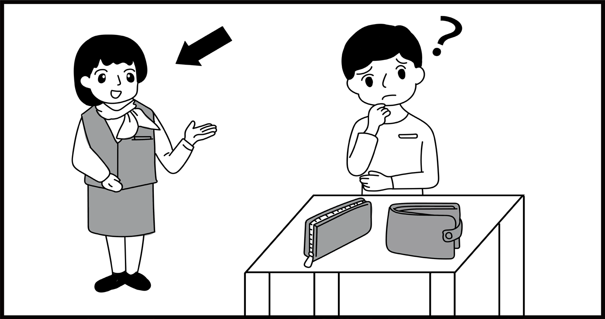
4ばん
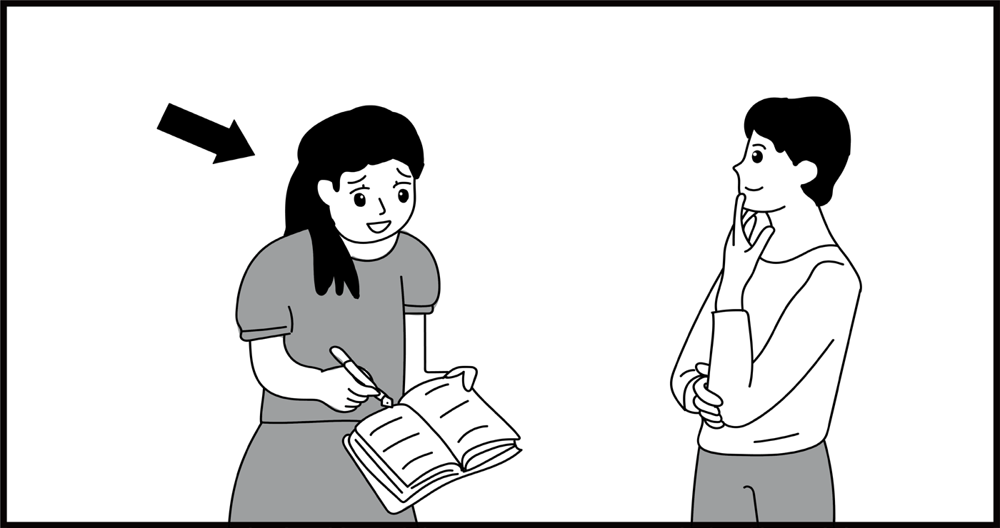
問題5では、問題用紙に何もいんさつされていません。まず文を聞いてください。それから、そのへんじを聞いて、1から3の中から、最もよいものを一つえらんでください。
Soal 5: Pada Soal 5, tidak ada apa pun yang tercetak pada lembar soal. Dengarkan satu kalimat terlebih dahulu. Setelah itu, dengarkan tiga respons/balasannya, lalu pilihlah satu jawaban paling tepat dari 1 sampai 3. (Terdapat 1 contoh + 9 soal: 1番–9番.)
| Bagian | Nomor Soal & Kunci Jawaban |
|---|---|
| 問題1 (1–8) | 1 ④ · 2 ① · 3 ③ · 4 ② · 5 ③ · 6 ④ · 7 ① · 8 ② |
| 問題2 (9–14) | 9 ② · 10 ③ · 11 ④ · 12 ③ · 13 ① · 14 ② |
| 問題3 (15–25) | 15 ④ · 16 ① · 17 ③ · 18 ① · 19 ④ · 20 ③ · 21 ② · 22 ③ · 23 ④ · 24 ② · 25 ① |
| 問題4 (26–30) | 26 ③ · 27 ② · 28 ④ · 29 ③ · 30 ① |
| 問題5 (31–35) | 31 ① · 32 ② · 33 ③ · 34 ④ · 35 ③ |
| Bagian | Nomor Soal & Kunci Jawaban |
|---|---|
| 問題1 (1–13) | 1 ① · 2 ② · 3 ① · 4 ③ · 5 ② · 6 ④ · 7 ③ · 8 ② · 9 ④ · 10 ③ · 11 ③ · 12 ① · 13 ② |
| 問題2 (14–18) | 14 ③（2134） · 15 ②（3214） · 16 ③（4321） · 17 ①（2134） · 18 ④（2143） |
| 問題3 (19–23) | 19 ③ · 20 ② · 21 ① · 22 ④ · 23 ③ |
| Bagian | Nomor Soal & Kunci Jawaban |
|---|---|
| 問題4 (24–27) | 24 ③ · 25 ④ · 26 ④ · 27 ④ |
| 問題5 (28–33) | 28 ④ · 29 ② · 30 ① · 31 ② · 32 ③ · 33 ④ |
| 問題6 (34–37) | 34 ④ · 35 ④ · 36 ① · 37 ③ |
| 問題7 (38–39) | 38 ② · 39 ③ |
| Bagian | Nomor Soal & Kunci Jawaban |
|---|---|
| 問題1 (1–6) | 1 ② · 2 ③ · 3 ④ · 4 ① · 5 ② · 6 ② |
| 問題2 (1–6) | 1 ② · 2 ② · 3 ③ · 4 ① · 5 ② · 6 ③ |
| 問題3 (1–3) | 1 ① · 2 ④ · 3 ④ |
| 問題4 (1–4) | 1 ② · 2 ① · 3 ① · 4 ③ |
| 問題5 (1–9) | 1 ① · 2 ② · 3 ② · 4 ② · 5 ① · 6 ③ · 7 ② · 8 ③ · 9 ② |
実際のテストは相対評価のため、この採点表の点数とは異なる可能性があります。
Catatan: Karena ujian JLPT yang sebenarnya menggunakan penilaian relatif (penyetaraan statistik), skor akhir pada ujian resmi dapat berbeda dari skor perkiraan pada tabel penilaian ini.
| Bidang (区分) | Bagian (問題) | Bobot (配点) | Skor Maks. (満点) | Jumlah Benar (正解の数) | Nilai (点数) |
|---|---|---|---|---|---|
| Huruf & Kosakata (文字・語彙) |
問題1 | 1 poin × 8 soal | 8 | ||
| 問題2 | 1 poin × 6 soal | 6 | |||
| 問題3 | 1 poin × 11 soal | 11 | |||
| 問題4 | 1 poin × 5 soal | 5 | |||
| 問題5 | 1 poin × 5 soal | 5 | |||
| Total (合計) | 35 | ||||
Rumus Perkiraan Skor (予想点数の計算方法):
言語知識（文字語彙・文法） [ ] poin ÷ 35 × 60 = [ ] poin
| Bidang (区分) | Bagian (問題) | Bobot (配点) | Skor Maks. (満点) | Jumlah Benar (正解の数) | Nilai (点数) |
|---|---|---|---|---|---|
| Tata Bahasa (文法) |
問題1 | 1 poin × 13 soal | 13 | ||
| 問題2 | 1 poin × 5 soal | 5 | |||
| 問題3 | 1 poin × 5 soal | 5 | |||
| Pemahaman Bacaan (読解) |
問題4 | 1 poin × 4 soal | 4 | ||
| 問題5 | 1 poin × 6 soal | 6 | |||
| 問題6 | 1 poin × 4 soal | 4 | |||
| 問題7 | 1 poin × 2 soal | 2 | |||
| Total (合計) | 39 | ||||
Rumus Perkiraan Skor (予想点数の計算方法):
読解 (Tata Bahasa + Bacaan pada buku ini) [ ] poin ÷ 39 × 60 = [ ] poin
| Bidang (区分) | Bagian (問題) | Bobot (配点) | Skor Maks. (満点) | Jumlah Benar (正解の数) | Nilai (点数) |
|---|---|---|---|---|---|
| Pemahaman Mendengar (聴解) |
問題1 | 1 poin × 6 soal | 6 | ||
| 問題2 | 1 poin × 6 soal | 6 | |||
| 問題3 | 1 poin × 3 soal | 3 | |||
| 問題4 | 1 poin × 4 soal | 4 | |||
| 問題5 | 1 poin × 9 soal | 9 | |||
| Total (合計) | 28 | ||||
Rumus Perkiraan Skor (予想点数の計算方法):
聴解 [ ] poin ÷ 28 × 60 = [ ] poin
Catatan Pembagian Skor JLPT Resmi vs. Tabel Buku: Pada ujian JLPT N3 resmi, skor 言語知識（文字・語彙・文法） (0–60) menggabungkan Kosakata + Tata Bahasa, sedangkan skor 読解 (0–60) menghitung bagian Bacaan saja. Buku asli menghitung perkiraan praktis berdasarkan buklet ujian: Tabel 1 (35 soal Kosakata) → skala 60, Tabel 2 (39 soal Tata Bahasa + Bacaan dalam buklet Sesi 2) → skala 60, dan Tabel 3 (28 soal Listening) → skala 60.
学校で先生が話しています。学生は、英会話の先生と昼食を食べたいとき、どのように申し込みますか。
男：ええと、英会話の先生と昼食を食べたい人は、必ず朝の10時までに申込書を出してください。
女：どこに出したらいいですか。
男：職員室の入り口の前に箱がありますので、そこに入れてください。それから、申込書には必ず名前を書いてくださいね。友達と一緒に参加したい場合は、一人一枚書いて出すようにしてください。
女：はい。
男：あと、先生たちのスケジュールは、食堂の前の掲示板に貼ってあります。毎週金曜日に貼り替えるので、そこで確認してくださいね。
女：毎日申し込んでもいいんですか？
男：もちろんいいですよ。
学生は、英会話の先生と昼食を食べたいとき、どのように申し込みますか。
Terjemahan Skrip:
Di sekolah, seorang guru sedang berbicara. Ketika siswa ingin makan siang bersama guru percakapan bahasa Inggris, bagaimana cara mendaftarnya?
Pria (Guru): Eee, bagi yang ingin makan siang bersama guru percakapan bahasa Inggris, pastikan menyerahkan formulir pendaftaran paling lambat pukul 10.00 pagi.
Wanita (Siswa): Harus diserahkan ke mana ya?
Pria (Guru): Di depan pintu masuk ruang guru ada kotak, silakan masukkan ke sana. Kemudian, pastikan menulis nama pada formulir pendaftaran ya. Kalau ingin ikut bersama teman, masing-masing orang harap menulis dan menyerahkan satu lembar.
Wanita (Siswa): Baik.
Pria (Guru): Lalu, jadwal para guru ditempel di papan pengumuman di depan kantin. Karena diganti setiap hari Jumat, silakan cek di sana ya.
Wanita (Siswa): Apakah boleh mendaftar setiap hari?
Pria (Guru): Tentu saja boleh.
Pertanyaan: Ketika siswa ingin makan siang bersama guru percakapan bahasa Inggris, bagaimana cara mendaftarnya?
1. Menyerahkan formulir kepada guru · 2. Menyerahkan formulir bersama teman · 3. Menulis nama di formulir lalu memasukkannya ke kotak · 4. Menulis nama di papan pengumuman.
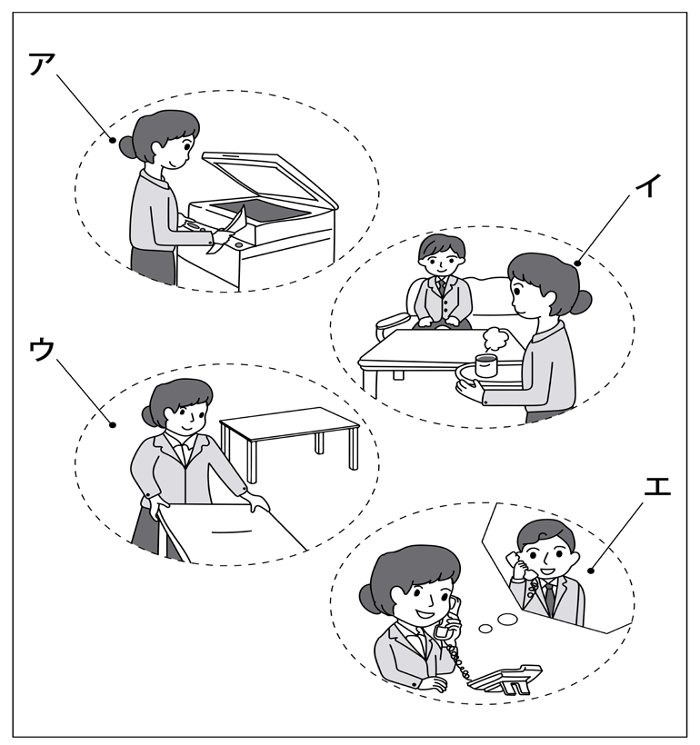
会社で男の人と女の人が話しています。女の人はこれから何をしますか。
男：中本さん、夕方に会議があるんだけど、準備がまだできてなくて。
女：大丈夫ですか？
男：うーん、会議には間に合うかな。それで、申し訳ないんだけど会議の資料を印刷しておいてもらえる？
女：はい、わかりました。
男：あと、そろそろ大阪支店の部長がこっちに着くから、お茶を出してあげてね。
女：はい、さっき到着されてお茶を出しました。あ、会議室の机の準備はしますか。
男：ありがとう。それはもう準備してあるよ。そうだ、課長は今日まで出張で会議に参加できるかわからないって言ってたから電話で確認してもらえるかな。
女：はい。わかりました。
女の人はこれから何をしますか。
1 ア イ 2 ア エ 3 イ ウ 4 ウ エ
Terjemahan Skrip:
Di perusahaan, seorang pria dan seorang wanita sedang berbicara. Apa yang akan dilakukan wanita itu setelah ini?
Pria: Nakamoto, sore ini ada rapat tapi persiapannya belum beres.
Wanita: Apakah tidak apa-apa?
Pria: Hmm, semoga saja keburu sebelum rapat. Jadi, maaf merepotkan, bisakah kamu mencetak/menyiapkan dokumen rapatnya terlebih dahulu? (ア)
Wanita: Baik, mengerti.
Pria: Selain itu, sebentar lagi Kepala Bagian dari cabang Osaka akan tiba ke sini, tolong sajikan teh untuk beliau ya.
Wanita: Oh, beliau barusan tiba dan sudah saya sajikan teh. Eh, apakah perlu menyiapkan meja di ruang rapat?
Pria: Terima kasih. Itu sudah disiapkan kok. Oh iya, Kepala Seksi bilang sampai hari ini beliau dinas luar kota dan belum tahu apakah bisa ikut rapat atau tidak, jadi bisakah kamu mengeceknya lewat telepon? (エ)
Wanita: Baik, mengerti.
Pertanyaan: Apa yang akan dilakukan wanita itu setelah ini? → 2. ア エ (Mencetak dokumen & menelepon konfirmasi).
パン屋を経営している夫と妻が話しています。夫は広告をどうしますか。
男：新しいパンの広告を作ったから、見てほしいんだ。新しいパンの写真を使ったのはいいんだけど、小さいかな？
女：十分大きいと思うけど。そうね、商品の割引券がついているのもいいわね。これだったら、お客さんが買いに来てくれるかも。でも、商品の名前に使っている色は変えたほうがいいわ。黒じゃなくて、赤なんてどう？
男：えっ、あんまり合わないような気がする。
女：そう？でもここは色を変えて欲しいな。それ以外は大丈夫よ。ここに来るまでの地図も、ちゃんと書かれているし。
男：わかったよ。
夫は広告をどうしますか。
Terjemahan Skrip:
Sepasang suami istri yang mengelola toko roti sedang berbicara. Apa yang akan dilakukan sang suami terhadap iklan tersebut?
Pria (Suami): Aku sudah membuat iklan untuk roti baru, tolong lihat dong. Bagus sih sudah pakai foto roti barunya, tapi apa kekecilan ya?
Wanita (Istri): Menurutku sudah cukup besar kok. Iya ya, adanya kupon diskon produk juga bagus. Kalau begini, pelanggan mungkin akan datang membeli. Tapi, warna yang dipakai pada nama produknya sebaiknya diubah deh. Bukan hitam, bagaimana kalau merah?
Pria: Eh, rasanya kok kurang cocok ya.
Wanita: Masa sih? Tapi bagian ini aku ingin warnanya diubah ya. Selain itu sudah oke kok. Peta jalan menuju ke sini juga sudah digambar dengan rapi.
Pria: Baiklah.
Pertanyaan: Apa yang akan dilakukan sang suami terhadap iklan tersebut?
1. Memperbesar foto · 2. Memasang kupon diskon · 3. Mengubah warna nama produk · 4. Menambahkan peta.
ピザ屋で、男の人と女の人が話しています。女の人はまず何をしますか。
男：加藤さん、申し訳ないのですが、今日この後一時間だけ残業できませんか？夕方の予約がいっぱいで、三人じゃ人が足りないんです。
女：大丈夫ですよ。
男：配達は中本さん、レジはアルバイトの村上さんにやってもらうから、加藤さんにはピザ作りを手伝ってほしいです。
女：わかりました。
男：これが、これから配達する住所と注文なんですけど、順番がばらばらなのでリストをまとめ直してもらえませんか。リストがあると、ピザを作る順番がわかりやすいので。
女：はい、わかりました。
女の人はまず何をしますか。
Terjemahan Skrip:
Di toko piza, seorang pria dan seorang wanita sedang berbicara. Apa yang akan dilakukan wanita itu terlebih dahulu?
Pria: Katō, maaf merepotkan, bisakah hari ini setelah ini lembur satu jam saja? Pesanan sore ini penuh sekali, kalau hanya bertiga tenaganya kurang.
Wanita: Tidak masalah, bisa kok.
Pria: Pengantaran akan dilakukan oleh Nakamoto, dan kasir oleh pekerja paruh waktu Murakami, jadi saya ingin Katō membantu membuat piza.
Wanita: Mengerti.
Pria: Ini adalah alamat pengantaran dan pesanan untuk nanti, tapi urutannya masih berantakan, bisakah Anda merapikan ulang daftarnya? Karena kalau ada daftarnya, urutan membuat pizanya jadi mudah dipahami.
Wanita: Baik, mengerti.
Pertanyaan: Apa yang akan dilakukan wanita itu terlebih dahulu?
1. Mengantar pesanan · 2. Menjaga kasir · 3. Memikirkan urutan membuat piza · 4. Merapikan daftar.
水泳教室で先生が話しています。水泳教室に入りたい人はまず何をしなければなりませんか。
男：では、うちの水泳教室に入るまでの流れについて話したいと思います。入会したい方には、レッスンの参加の予約をしてもらい実際に泳いでもらいます。クラスは初級・中級・上級に分かれていますので、それぞれの先生が泳いでいる様子を見てクラスを決めます。レッスンが終わったあと、みなさんが入るクラスをメールで送りますので確認してください。そのメールに、クラスごとに行う説明会の日時が載っています。申込書はその日に持ってくるようお願いします。
水泳教室に入りたい人はまず何をしなければなりませんか。
Terjemahan Skrip:
Di kursus renang, seorang instruktur sedang berbicara. Apa yang harus dilakukan pertama kali oleh orang yang ingin masuk ke kursus renang tersebut?
Pria (Instruktur): Baiklah, saya akan menjelaskan alur hingga bergabung di kursus renang kami. Bagi Anda yang ingin menjadi anggota, silakan memesan jadwal untuk mengikuti sesi latihan lalu berenang secara langsung. Kelas terbagi menjadi tingkat pemula, menengah, dan mahir, sehingga masing-masing instruktur akan menentukan kelas Anda setelah melihat cara berenang Anda. Setelah sesi latihan selesai, kami akan mengirimkan kelas yang akan Anda masuki melalui email, jadi silakan diperiksa. Di email tersebut tercantum tanggal dan waktu acara penjelasan untuk tiap kelas. Mohon bawa formulir pendaftaran pada hari tersebut.
Pertanyaan: Apa yang harus dilakukan pertama kali oleh orang yang ingin masuk ke kursus renang tersebut?
1. Melakukan reservasi kelas latihan · 2. Mendaftar keanggotaan · 3. Pergi ke acara penjelasan kelas · 4. Melihat email.
飲食店で、店長と女の人がアルバイト募集の広告について話しています。女の人はこのあとすぐ、広告のどこを直さなければなりませんか。
男：木村さん、新しく作ってくれている広告、見たよ。いい感じだね。
女：本当ですか、ありがとうございます。ただ、お店の写真が古いものなので、明日の開店前に写真を撮って載せ直す予定です。
男：うん、そうだね。営業時間だけど、書いてくれた時間間違ってない？夜は、11時までのはずだよね。
女：はい。3か月後には営業時間が変わると聞いたので、変えておいたんです。
男：ああ、なるほどね。でも3か月後だから、今の時間を書いておいてね。またそのときになったら変えればいいから。あと募集の内容のところ、時給や仕事内容の情報は間違っていないかな。
女：はい、社員の鈴木さんにも見ていただきました。
男：そうか。それとうちのお店、去年場所が変わったけど、お店までのアクセスはきちんと確認してくれたかな。
女：はい。何度も確認をしました。
女の人はこのあとすぐ、広告のどこを直さなければなりませんか。
Terjemahan Skrip:
Di sebuah restoran, manajer toko dan seorang karyawan wanita sedang membicarakan iklan lowongan kerja paruh waktu. Segera setelah ini, bagian mana dari iklan tersebut yang harus diperbaiki oleh wanita itu?
Pria (Manajer): Kimura, aku sudah melihat iklan baru yang sedang kamu buat. Terlihat bagus ya.
Wanita (Kimura): Benarkah? Terima kasih banyak. Hanya saja, karena foto tokonya masih foto lama, rencananya besok sebelum toko buka saya akan memotret dan menggantinya.
Pria: Ya, betul. Soal jam buka, apakah jam yang kamu tulis tidak salah? Malam hari seharusnya sampai pukul 23.00 kan.
Wanita: Benar. Saya dengar 3 bulan lagi jam bukanya akan berubah, jadi sudah saya ubah sekalian.
Pria: Oh, begitu rupanya. Tapi itu kan 3 bulan lagi, jadi tuliskan jam yang sekarang saja ya. Nanti kalau sudah waktunya tinggal diubah lagi. Lalu di bagian rincian lowongan, apakah informasi upah per jam dan deskripsi pekerjaannya tidak keliru?
Wanita: Ya, sudah diperiksa juga oleh Suzuki, karyawan tetap kita.
Pria: Baguslah. Lalu, toko kita tahun lalu pindah lokasi, apakah akses menuju toko sudah dicek dengan benar?
Wanita: Ya, sudah saya periksa berkali-kali.
Pertanyaan: Segera setelah ini, bagian mana dari iklan tersebut yang harus diperbaiki oleh wanita itu?
1. Foto toko · 2. Jam operasional · 3. Isi lowongan · 4. Akses menuju toko.
図書館で女の人と男の人が話しています。男の人はこのあとまず何をしますか。
女：明日の本を読む会のことなんだけど、机の上にお菓子と本の用意をしておくようにお願いしていたよね。
男：はい、これから用意するところです。
女：ありがとう。予定より人数が多かったら使う部屋を変えようと思ってるの。それで、参加の締め切りがもう終わってるからホームページで人数の確認をしてほしいんだ。
男：わかりました。
女：窓の飾りは私が付けるね。部屋が変わる場合は、他の人たちにも伝えておいてね。よろしく。
男：はい、わかりました。
男の人はこのあとまず何をしますか。
Terjemahan Skrip:
Di perpustakaan, seorang wanita dan seorang pria sedang berbicara. Apa yang pertama-tama akan dilakukan pria itu setelah ini?
Wanita: Soal klub membaca besok, aku sudah minta tolong agar menyiapkan camilan dan buku di atas meja ya.
Pria: Ya, baru akan saya siapkan sekarang.
Wanita: Terima kasih. Kalau jumlah pesertanya lebih banyak dari rencana, aku berniat mengganti ruangannya. Karena itu, berhubung batas waktu pendaftarannya sudah lewat, aku ingin kamu mengecek jumlah pesertanya di situs web.
Pria: Baik, mengerti.
Wanita: Hiasan jendela nanti aku yang pasang ya. Jika ruangannya jadi pindah, tolong beri tahu teman-teman yang lain juga ya. Mohon bantuannya.
Pria: Ya, mengerti.
Pertanyaan: Apa yang pertama-tama akan dilakukan pria itu setelah ini?
1. Menyiapkan buku · 2. Mengecek jumlah peserta akhir · 3. Memasang hiasan di jendela · 4. Memberi tahu orang lain.
大学で、男の人と女の人が話しています。女の人はどうして元気がないのですか。
男：どうしたの？なんか元気がないね。最近、宿題が多くてあまり寝ていないんじゃない？
女：それはいつものことだから慣れたよ。最近アルバイトを始めたって話したと思うんだけど。
男：ああ、パン屋さんの。残ったパンが無料でもらえて嬉しいって言ってたよね。
女：でも店が人気すぎて忙しいから大変なんだよ。もう辞めようかな。
男：ああ、わかった。彼氏に会う時間が少なくなって嫌なんでしょ。
女：それは関係ないよ、毎日連絡してるし。ああ、アルバイトのことを考えてたら気分が悪くなっちゃう。
女の人はどうして元気がないのですか。
Terjemahan Skrip:
Di universitas, seorang pria dan seorang wanita sedang berbicara. Mengapa wanita itu terlihat tidak bersemangat?
Pria: Kamu kenapa? Kok kelihatan kurang bersemangat. Jangan-jangan akhir-akhir ini PR banyak jadi kurang tidur ya?
Wanita: Kalau soal itu sih sudah biasa jadi sudah terbiasa kok. Kayaknya aku pernah cerita kalau baru-baru ini mulai kerja paruh waktu deh.
Pria: Oh, yang di toko roti itu. Kamu pernah bilang senang dapat roti sisa secara gratis kan.
Wanita: Tapi tokonya saking ramainya jadi sibuk banget dan berat. Kayaknya mau berhenti saja deh.
Pria: Oh, aku tahu. Kamu kesal karena waktu ketemu pacarmu berkurang kan?
Wanita: Itu nggak ada hubungannya kok, tiap hari juga saling menghubungi. Duh, kalau memikirkan kerja paruh waktu rasanya malah jadi nggak enak badan/bete deh.
Pertanyaan: Mengapa wanita itu terlihat tidak bersemangat?
1. Karena PR banyak sehingga kurang tidur · 2. Karena kerja paruh waktunya sibuk · 3. Karena tidak bisa bertemu pacar · 4. Karena tidak enak badan.
学校で男の学生と女の学生が話しています。女の学生はどうして海外旅行をしませんか。
男：もうすぐ冬休みだね。そういえば、冬休みに海外旅行をしたいって言ってたけど、どっか行くの？旅行の本を買ってたよね？
女：ああ、それが、バイトを頑張ってたんだけど思うようにお金がたまらなくて。
男：そうだったの？
女：国内だったら安く行けるところもあるし、国内旅行も悪くないなと思ったんだけど。もっとお金をためてから来年海外旅行しようかなと思って、今回はやめたの。
男：そうだったんだ。でも来年は就職活動で忙しいんじゃない？国内でも安く行ける場所、一緒に探そうか？
女：ううん、いいの。今年は、近所の遊園地に行ったり映画みに行ったりして一緒に遊ぼうよ。
女の学生はどうして海外旅行をしませんか。
Terjemahan Skrip:
Di sekolah, seorang mahasiswa laki-laki dan mahasiswi sedang berbicara. Mengapa mahasiswi itu tidak pergi berwisata ke luar negeri?
Pria: Sebentar lagi liburan musim dingin ya. Ngomong-ngomong, dulu kamu bilang ingin berwisata ke luar negeri saat liburan musim dingin, jadi pergi ke mana? Kamu sempat beli buku panduan wisata kan?
Wanita: Ah, soal itu, aku sudah berusaha kerja paruh waktu tapi uangnya tidak terkumpul sesuai harapan.
Pria: Oh, begitu ya?
Wanita: Kalau di dalam negeri sih ada juga tempat yang bisa dikunjungi dengan murah, sempat berpikir wisata domestik juga tidak buruk. Tapi aku berpikir untuk menabung lebih banyak dulu baru tahun depan berwisata ke luar negeri, jadi kali ini kubatalkan.
Pria: Begitu toh. Tapi tahun depan bukannya bakal sibuk mencari kerja (shūshoku katsudō)? Mau sama-sama cari tempat murah di dalam negeri saja?
Wanita: Nggak usah, nggak apa-apa. Tahun ini ayo kita main sama-sama dengan pergi ke taman hiburan dekat sini atau pergi menonton film saja yuk.
Pertanyaan: Mengapa mahasiswi itu tidak pergi berwisata ke luar negeri?
1. Karena belum membeli buku wisata · 2. Karena uangnya tidak cukup · 3. Karena memutuskan berwisata di dalam negeri · 4. Karena ingin bermain bersama teman.
会社で部長と女の人が話しています。女の人はどうやって新入社員と親しくなることができましたか。
男：最近、新入社員の子とよく話しているよね。どうやって親しくなったの？
女：はい。私も最初は、どうすれば新入社員の子と親しくなることができるか悩んでいましたが、それを見ていた先輩が、「一緒にご飯を食べに行ったりお酒を飲みに行ったりすると、自然と親しくなることができるよ。」と教えてくださったんです。
男：そうなんだ。
女：それから一緒にご飯を食べに行こうと誘ってみたのですが、新入社員の子が緊張してしまってあまり話すことができませんでした。なので、お酒を飲みに行こうと誘ったんです。お酒を飲んでいると、だんだん緊張がなくなり趣味の話や仕事の悩みまで聞くことができるようになりました。
男：休みの日にどこか遊びに行くこともあるの？
女：はい。年齢が近い社員を集めて、来週の土曜日に山登りをする計画も立てています。
女の人はどうやって新入社員と親しくなることができましたか。
Terjemahan Skrip:
Di perusahaan, kepala bagian (pria) dan seorang karyawati sedang berbicara. Bagaimana caranya karyawati tersebut bisa menjadi akrab dengan karyawan baru?
Pria (Kepala Bagian): Belakangan ini kamu sering mengobrol dengan anak karyawan baru ya. Bagaimana caranya bisa jadi akrab?
Wanita: Ya. Awalnya saya juga bingung bagaimana cara agar bisa akrab dengan karyawan baru, lalu senior yang melihat hal itu memberi tahu saya, "Kalau mengajak makan bersama atau minum-minum bersama, lama-kelamaan secara alami bisa akrab kok."
Pria: Oh, begitu.
Wanita: Setelah itu saya mencoba mengajaknya makan bersama, tetapi si karyawan baru malah tegang sehingga tidak bisa banyak bicara. Oleh karena itu, saya mengajaknya pergi minum-minum. Sambil minum, perlahan ketegangannya hilang dan saya jadi bisa mendengar cerita soal hobinya hingga keluh kesahnya tentang pekerjaan.
Pria: Apakah di hari libur kalian juga suka pergi jalan-jalan ke suatu tempat?
Wanita: Ya. Kami juga berencana mengumpulkan karyawan yang usianya sebaya untuk mendaki gunung pada hari Sabtu minggu depan.
Pertanyaan: Bagaimana caranya karyawati tersebut bisa menjadi akrab dengan karyawan baru?
1. Mengajak makan · 2. Minum minuman beralkohol bersama · 3. Berjanji bermain setiap Sabtu · 4. Bekerja hanya dengan karyawan sebaya.
靴屋で店員と男の人が話しています。男の人は何を確認するために来店しましたか。
女：いらっしゃいませ。何かお探しですか？
男：あの、前に来たときに気になっていた靴をもう一度見に来たんですが。
女：どの靴だったか覚えていますか？
男：えーっと、あの二段目の靴です。
女：こちらですね。
男：はい。この靴は、汚れが落ちやすいように加工がされているんですよね？どのくらいの汚れが取れますか？
女：油などの汚れは落ちにくいですが、砂やどろなどの汚れでしたら水で簡単に落とせますよ。
男：そうなんですね。サッカーをする予定なので、これにします。
女：ありがとうございます。サイズはこれでよろしいですか？
男：はい。大丈夫です。
女：替えの靴ひもはいかがですか。今、靴ひもを一緒に買っていただくと、無料で一回靴のお掃除をさせていただいています。合計金額は少し高くなりますが。
男：では、それもください。
男の人は何を確認するために来店しましたか。
Terjemahan Skrip:
Di toko sepatu, seorang pramuniaga dan seorang pria sedang berbicara. Pria itu datang ke toko untuk memastikan hal apa?
Wanita (Pramuniaga): Selamat datang. Ada yang sedang dicari?
Pria: Anu, saya datang untuk melihat lagi sepatu yang sempat menarik perhatian saya waktu datang sebelumnya.
Wanita: Apakah Anda ingat yang mana sepatunya?
Pria: Eee, sepatu yang ada di rak baris kedua itu.
Wanita: Yang ini ya.
Pria: Ya. Sepatu ini diberi lapisan khusus supaya kotoran mudah hilang kan ya? Seberapa bersih kotorannya bisa hilang?
Wanita: Kotoran seperti minyak memang agak sulit hilang, tetapi kalau kotoran seperti pasir atau lumpur, bisa dibersihkan dengan mudah menggunakan air.
Pria: Begitu ya. Kebetulan saya berencana main sepak bola, jadi saya ambil yang ini.
Wanita: Terima kasih. Untuk ukurannya apakah sudah pas dengan yang ini?
Pria: Ya, pas kok.
Wanita: Bagaimana dengan tali sepatu cadangan? Sekarang kalau membeli tali sepatu sekalian, kami berikan layanan pembersihan sepatu gratis satu kali. Memang total biayanya jadi sedikit lebih mahal sih.
Pria: Kalau begitu, sekalian ambil itu juga.
Pertanyaan: Pria itu datang ke toko untuk memastikan hal apa?
1. Ukuran sepatu · 2. Layanan gratis sepatu · 3. Ciri khusus/keunggulan sepatu · 4. Harga sepatu.
学校で男の学生と女の学生が話しています。男の学生はこれからどうやってアルバイトを探すことにしましたか。
男：パクさん、ぼく、夏休みの間だけもう一つアルバイトをしたいと思ってるんだけど、いいアルバイト知らない？あ、でもパクさんはアルバイトしてないんだっけ。
女：うん、そうなの。あ、そういえば私の友達が働いてるお店、働ける人を探してるって言ってたよ。
男：本当？インターネットで調べてみたけど、募集がたくさんあってどこにしようか迷ってて。
女：その友達が働いてる飲食店は、夜から朝まで働ける人を探してるんだって。
男：ああ、夜中のアルバイトなんだ。そういう募集のチラシがこの前家に届いたんだけど、朝と夜が逆の生活になっちゃうんじゃないかと思ってやめたんだ。
女：じゃあ、気になってるお店にいくつか行って決めるなんてどう？
男：確かにそれもいいね。でも、すぐに働きたくて。そうだなあ、今やってるアルバイトはお昼だから夜に働けるのはいいかもしれないね。まだ募集してるか、その友達に聞いてもらえる？
女：うん、いいよ。
男の学生はこれからどうやってアルバイトを探すことにしましたか。
Terjemahan Skrip:
Di sekolah, seorang mahasiswa laki-laki dan mahasiswi sedang berbicara. Bagaimana mahasiswa laki-laki itu memutuskan untuk mencari kerja paruh waktu setelah ini?
Pria: Park, selama liburan musim panas saja aku ingin menambah satu kerja paruh waktu lagi, apakah kamu tahu kerja paruh waktu yang bagus? Eh, tapi Park memang tidak kerja paruh waktu ya.
Wanita (Park): Iya, betul. Eh, ngomong-ngomong, tempat makan tempat temanku bekerja katanya sedang mencari orang yang bisa bekerja lho.
Pria: Benarkah? Aku sempat cari-cari di internet, tapi lowongannya banyak sekali jadi bingung mau pilih yang mana.
Wanita: Katanya restoran tempat temanku bekerja itu sedang mencari orang yang bisa bekerja dari malam sampai pagi.
Pria: Oh, kerja paruh waktu tengah malam ya. Selebaran lowongan seperti itu tempo hari juga sampai di rumahku, tapi kupikir jangan-jangan pola hidupku jadi terbalik antara pagi dan malam, jadi tidak jadi kuambil.
Wanita: Kalau begitu, bagaimana kalau datang langsung ke beberapa toko yang menarik perhatianmu lalu memutuskannya?
Pria: Memang bagus juga sih. Tapi aku ingin langsung bekerja. Hmm, kerja paruh waktuku yang sekarang kan siang hari, jadi bisa bekerja di malam hari mungkin cocok juga ya. Bisakah kamu tanyakan ke temanmu itu apakah masih buka lowongannya?
Wanita: Ya, boleh.
Pertanyaan: Bagaimana mahasiswa laki-laki itu memutuskan untuk mencari kerja paruh waktu setelah ini?
1. Meminta diperkenalkan oleh Park · 2. Mencari di internet · 3. Melihat selebaran lowongan · 4. Pergi ke berbagai toko.
会社で男の人と女の人が話しています。女の人は会社を辞めたら、まずどうすると言っていますか。
男：田中さんは今の仕事を辞めたら、日本語学校で働くんだよね。教師の免許を取るために勉強頑張ってたもんね。
女：実は、友達の誘いで就職が決まってたんだけど、もっとやりたいことが見つかったからやめたんだ。
男：え、そうだったの？
女：うん。うちの会社、いろんな国の人が働いてるでしょ。それで、外国で生活するってどんな感じなのか興味を持っちゃって。
男：じゃあ、海外に住むの？
女：再来年まで、世界を自由に旅して実際にいろいろな国の文化をみてみようと思うの。そのあと、自分が住みたいと思った国で仕事を探す予定なんだ。
男：色々な国の人と話すなら英語が話せないといけないね。
女：そうなの。仕事に誘ってくれたその友達は英語もできるから、休日に教えてもらってるんだ。会社を辞めるまでだけどね。
男：そうなんだ、応援してるよ。
女の人は会社を辞めたら、まずどうすると言っていますか。
Terjemahan Skrip:
Di perusahaan, seorang pria dan seorang wanita sedang berbicara. Wanita itu mengatakan bahwa setelah berhenti dari perusahaan, pertama-tama ia akan melakukan apa?
Pria: Tanaka, setelah berhenti dari pekerjaan sekarang, kamu bakal bekerja di sekolah bahasa Jepang kan ya. Soalnya kamu sudah berusaha keras belajar untuk mengambil sertifikat/lisensi pengajar.
Wanita (Tanaka): Sebenarnya aku sudah diterima bekerja berkat ajakan teman, tapi karena aku menemukan hal yang lebih ingin kulakukan, kuurungkan.
Pria: Eh, benarkah?
Wanita: Iya. Di perusahaan kita ini kan banyak orang dari berbagai negara yang bekerja. Gara-gara itu, aku jadi tertarik ingin tahu seperti apa rasanya hidup di luar negeri.
Pria: Jadi kamu mau tinggal di luar negeri?
Wanita: Sampai dua tahun lagi (lusa tahun / tahun setelah tahun depan), aku berniat bebas berkeliling dunia untuk melihat langsung budaya di berbagai negara. Setelah itu, rencananya aku akan mencari pekerjaan di negara yang kurasa ingin kutinggali.
Pria: Kalau mau mengobrol dengan orang dari berbagai negara, harus bisa bahasa Inggris ya.
Wanita: Betul. Temanku yang mengajakku bekerja tadi juga bisa bahasa Inggris, jadi di hari libur aku diajari olehnya. Tapi cuma sampai aku keluar dari perusahaan ini saja sih.
Pria: Begitu toh, aku mendukungmu ya!
Pertanyaan: Wanita itu mengatakan bahwa setelah berhenti dari perusahaan, pertama-tama ia akan melakukan apa?
1. Bekerja di sekolah bahasa Jepang · 2. Berkeliling dunia · 3. Mencari pekerjaan di luar negeri · 4. Diajari bahasa Inggris.
テレビで男の人が建築について話しています。男の人が家を建てるときに一番大切にしていることはなんですか。
男：私は家を建てる仕事をしています。一度買った家には長く住みたい、安全に生活したいと思う方が多いと思います。そのために、年齢に関係なく住める家を作ることをいつも考えています。例えば、かべの角を丸くすることで、お年寄りの方も子どもも転んでけがをすることを防ぐことができますよね。こういった工夫が家を建てるときに必要だと思うんです。
男の人が家を建てるときに一番大切にしていることはなんですか。
Terjemahan Skrip:
Di televisi, seorang pria sedang berbicara mengenai arsitektur/pembangunan rumah. Hal apakah yang paling diutamakan pria tersebut saat membangun rumah?
Pria: Saya bekerja di bidang pembangunan rumah. Saya rasa banyak orang yang berpikir ingin tinggal dalam waktu lama dan hidup dengan aman di rumah yang sudah dibeli sekali seumur hidup. Untuk itu, saya selalu memikirkan cara membuat rumah yang dapat ditinggali tanpa memandang usia. Misalnya, dengan membuat sudut-sudut dinding membulat, baik lansia maupun anak-anak dapat terhindar dari cedera ketika terjatuh. Inovasi seperti inilah yang menurut saya diperlukan saat membangun rumah.
Pertanyaan: Hal apakah yang paling diutamakan pria tersebut saat membangun rumah?
1. Menjadikannya rumah yang bisa ditinggali lama · 2. Membangun rumah dengan aman · 3. Mengupayakan agar bisa ditinggali tanpa memandang usia · 4. Membuat dinding berbentuk bulat.
テレビでアナウンサーが話しています。
女：最近、会社に行かないで家で仕事をするというやり方を、多くの会社が行っています。インターネットを使えば、同じ場所にいなくても簡単に情報を伝えることができる便利な時代になりました。しかし、今回のインタビューで「家に家族がいるので仕事に集中できない」「わからないことがあってもすぐに相談ができない」「人との関わりがなくなり、ストレスがたまる」などの意見があることがわかりました。
アナウンサーは何について話していますか。
Terjemahan Skrip:
Di televisi, seorang penyiar sedang berbicara.
Wanita (Penyiar): Akhir-akhir ini, banyak perusahaan menerapkan cara bekerja dari rumah tanpa pergi ke kantor. Dengan menggunakan internet, kini menjadi zaman yang praktis di mana kita dapat menyampaikan informasi dengan mudah meskipun tidak berada di tempat yang sama. Akan tetapi, dalam wawancara kali ini diketahui terdapat pendapat seperti "karena ada keluarga di rumah jadi tidak bisa fokus bekerja", "kalaupun ada hal yang tidak dimengerti tidak bisa langsung berkonsultasi", dan "interaksi dengan orang lain menghilang sehingga stres menumpuk".
Pertanyaan: Penyiar sedang membicarakan tentang apa?
1. Alasan bekerja di rumah · 2. Cara bekerja di rumah · 3. Masalah/kendala bekerja di rumah · 4. Kelebihan bekerja di rumah.
テレビでアナウンサーが話しています。
女：皆さん、映画館でくつを脱いで、足をのばしながらゆっくりできたらいいなと思ったことはありませんか。実はここ、普通の映画館に見えますが、とてもゆっくりすることができるとインターネットで話題になっています。なんと、ソファーやベッドに寝ながら映画を楽しむことができます。今までの映画館では、すぐとなりに人が座っていたり、姿勢を変えたくても変えられなかったりしましたよね。この映画館にはほかにも、飲み物や食べ物の種類が多かったり、席にテーブルがついていたりするんですよ。考えただけでもわくわくしちゃいますね。
アナウンサーは何について話していますか。
Terjemahan Skrip:
Di televisi, seorang penyiar sedang berbicara.
Wanita (Penyiar): Pemirsa, pernahkah Anda berpikir alangkah enaknya jika di bioskop bisa melepas sepatu lalu bersantai sambil meluruskan kaki? Sebenarnya tempat ini tampak seperti bioskop biasa, tetapi sedang ramai diperbincangkan di internet karena pengunjungnya bisa sangat bersantai. Bayangkan, Anda dapat menikmati film sambil berbaring di sofa maupun tempat tidur. Di bioskop yang ada selama ini, ada orang duduk persis di sebelah kita atau tidak bisa mengubah posisi duduk meskipun ingin mengubahnya, bukan? Di bioskop ini selain itu pilihan makanan dan minumannya juga banyak, dan di tempat duduknya pun dilengkapi meja lho. Membayangkannya saja sudah bikin bersemangat ya!
Pertanyaan: Penyiar sedang membicarakan tentang apa?
1. Ciri khas/keistimewaan bioskop ini · 2. Kesan orang yang datang ke bioskop · 3. Aturan saat menonton film · 4. Kebaikan menonton film di bioskop.
テレビでアナウンサーが歌手にインタビューしています。
男：初めてのCDの発売、おめでとうございます。
女：ありがとうございます。プロの歌手を目指して10年間活動をしてきました。なかなか結果が出ず、自信がなくなって何度も歌手をやめようと思いましたが、苦しくても夢をあきらめませんでした。そしてやっと今回音楽会社から声をかけていただきました。皆さんの応援のおかげです。これからもよろしくお願いします。
歌手が言いたいことは何ですか。
Terjemahan Skrip:
Di televisi, seorang penyiar sedang mewawancarai seorang penyanyi.
Pria (Penyiar): Selamat atas perilisan CD pertama Anda.
Wanita (Penyanyi): Terima kasih banyak. Saya telah berkarier selama 10 tahun dengan cita-cita menjadi penyanyi profesional. Karena hasilnya tidak kunjung terlihat, saya sempat kehilangan rasa percaya diri dan berkali-kali berpikir untuk berhenti menjadi penyanyi, tetapi sesulit apa pun saya tidak menyerah pada impian saya. Hingga akhirnya kali ini saya mendapat tawaran dari perusahaan musik. Ini semua berkat dukungan Anda sekalian. Ke depannya pun mohon dukungannya terus ya.
Pertanyaan: Apa yang ingin disampaikan oleh penyanyi tersebut?
1. Ingin segera membuahkan hasil · 2. Memiliki rasa percaya diri itu penting · 3. Ingin mendukung perusahaan musik dengan lagu · 4. Rasa terima kasih kepada para penggemar.
ラジオでパン屋の店長が話しています。
男：5年前に夢だったパン屋を開きましたが、なかなか人気が出ませんでした。そこで、店の周りには保育園や公園が多いことから、子ども達が好きそうな甘いパンを売り始めました。すると午前中にすべて売れてしまうほど人気になったんです。もちろん、大人が好きそうなパンも置いていて、家族で楽しめるパン屋を目指してきました。こうして、お客さんに喜んでもらえるように、新しい商品を毎日考えています。
店長はお店の何について話していますか。
Terjemahan Skrip:
Di radio, seorang manajer toko roti sedang berbicara.
Pria (Manajer): Lima tahun lalu saya membuka toko roti yang menjadi impian saya, tetapi awalnya tidak kunjung populer. Oleh karena itu, berhubung di sekitar toko banyak terdapat taman penitipan anak (hoikuen) dan taman bermain, saya mulai menjual roti manis yang sekiranya disukai anak-anak. Ternyata roti itu menjadi sangat populer sampai-sampai habis terjual semua di pagi hari. Tentu saja kami juga menyediakan roti yang sekiranya disukai orang dewasa, dan sejak awal kami memang bercita-cita menjadi toko roti yang bisa dinikmati sekeluarga. Demikianlah, agar para pelanggan senang, setiap hari saya memikirkan produk-produk baru.
Pertanyaan: Manajer toko sedang membicarakan hal apa mengenai tokonya?
1. Cara membuka toko roti · 2. Alasan berjualan di taman penitipan anak · 3. Rencana penjualan roti baru · 4. Alasan tokonya menjadi populer.
花を買いたいです。何と言いますか。
女：
Terjemahan Skrip:
Anda ingin membeli bunga. Apa yang Anda katakan?
Wanita:
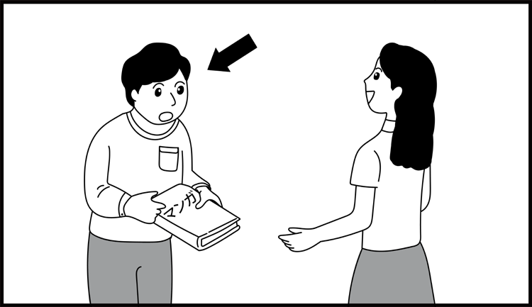
ずっと前からまんがを借りていました。友達に何と言いますか。
男：
Terjemahan Skrip:
Anda meminjam komik sejak lama sekali. Apa yang Anda katakan kepada teman Anda?
Pria:
服屋に来ています。服を試したいです。何と言いますか。
女：
Terjemahan Skrip:
Anda sedang datang ke toko pakaian. Anda ingin mencoba memakai baju tersebut. Apa yang Anda katakan?
Wanita:
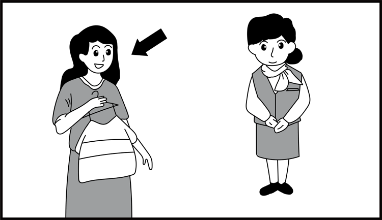
客が買う商品を悩んでいます。客に何と言いますか。
女：
Terjemahan Skrip:
Pelanggan sedang bingung memilih barang yang akan dibeli. Apa yang Anda (sebagai pramuniaga) katakan kepada pelanggan?
Wanita (Pramuniaga):
宿題が難しくて終わりません。問題をどうやって解くか知りたいです。何と言いますか。
女：
Terjemahan Skrip:
PR-nya sulit sehingga tidak selesai-selesai. Anda ingin tahu cara memecahkan soal tersebut. Apa yang Anda katakan?
Wanita:
女：午前中にこの資料まとめといてって言ったじゃん。
男：
Terjemahan Skrip:
Wanita: Kan aku sudah bilang supaya dokumen ini dirangkum sebelum tengah hari (pagi hari)!
Pria:
男：佐藤さんが書いた卒業論文、お読みになりましたか？
女：
Terjemahan Skrip:
Pria: Apakah Anda sudah membaca skripsi yang ditulis oleh Satō?
Wanita:
男：こちらの商品が無くなり次第、お店を閉めるつもりです。
女：
Terjemahan Skrip:
Pria: Segera setelah barang ini habis, kami berencana menutup toko.
Wanita:
男：聞いてよ、5歳も年下の弟に身長を追い越されちゃったんだよ。
女：
Terjemahan Skrip:
Pria: Dengar deh, tinggi badanku tersalip oleh adik laki-lakiku yang lebih muda 5 tahun lho.
Wanita:
女：加藤さんの代わりに、荷物受け取れる？
男：
Terjemahan Skrip:
Wanita: Bisakah kamu menerima paket menggantikan Katō?
Pria:
女：店長、あのう、明日の開店準備私にも手伝わせてください。
男：
Terjemahan Skrip:
Wanita: Pak/Bu Manajer, anu, tolong izinkan saya juga membantu persiapan buka toko besok.
Pria:
女：映画の席を予約しよう。どの席が一番みやすい？
男：
Terjemahan Skrip:
Wanita: Ayo pesan kursi bioskop. Kursi mana yang paling nyaman dilihat?
Pria:
男：来年、引っ越しするんだよね？泉さんから不動産を紹介してもらったら？
女：
Terjemahan Skrip:
Pria: Tahun depan kamu mau pindah rumah kan? Bagaimana kalau minta diperkenalkan agen properti oleh Izumi?
Wanita:
男：今年の文化祭は、食べ物だけでなく服も売ってるらしいよ。
女：
Terjemahan Skrip:
Pria: Katanya festival budaya tahun ini tidak hanya menjual makanan, tapi juga menjual baju lho.
Wanita:
男：森選手はやっぱり強いな。今回の試合も負けるわけがないね。
女：
Terjemahan Skrip:
Pria: Atlet Mori memang tangguh ya. Di pertandingan kali ini pun mustahil dia kalah deh.
Wanita:
| Judul Asli | JLPT N3 この一冊で合格する (JLPT N3: Lulus dengan Satu Buku Ini) |
|---|---|
| Edisi & Tanggal Terbit | 2022年8月1日 初版第一冊発行 (Edisi Pertama Cetakan ke-1, diterbitkan 1 Agustus 2022) |
| Penulis (著者) | 日本語の森 日本語研究所 (Lembaga Riset Bahasa Jepang Nihongo no Mori) |
| Penerbit (発行所) | 日本語の森 株式会社 (PT Nihongo no Mori) · https://nihongonomori.com/ |
| Hak Cipta & ISBN | ©Nihongonomori 2022 · Printed in Japan · ISBN: 978-4-910337-12-8 C0081 |
| Catatan Penerbit | 落丁・乱丁はお取替えいたします。許可なしに転載・複製することを禁じます。 (Buku dengan halaman hilang atau urutan cetak salah akan kami tukar. Dilarang mengutip ulang atau memperbanyak tanpa izin.) |